About
Welcome to SOST70033 Data Science Modelling! This notebook will host the materials for all R practicals and demonstrations for this course unit. The notebook follows the same section-based structure as the learning materials on Blackboard. To access this notebook, you can bookmark it like any other website in your favourite web browser.
For each section, you will have at least one practical and/or demonstration to complete and each of these can be accessed by using the sidebar menu on the left hand side of your screen. Clicking on the headings in each section will expand the menu and each task can be accessed individually.
The sidebar menu can be toggled on and off by clicking on the Toggle Sidebar button.

Other customisation options include changing the font, font size, and the appearance. You also have a handy search button.
This notebook is also designed to work well on tablet and mobile devices; to enhance your experience on these devices, it is recommended that you hide the sidebar menu and navigate across sections and subsections using the right and left arrows.

The code, as well as the output and answers are provided for the practicals at the end of each section. The R code can be copied and pasted directly in your R console or script by clicking on the following icon:

1: Before beginning, it is recommended that you create a RStudio project for this course and work through the exercises and tasks in each section using this project.
2: You should write and save your answers to the exercises and tasks in R scripts. You should have at least one R script for each course section.
3: The recommended approach for a ‘clean’ working directory is to place all the data files you plan to use in a separate folder (e.g. a folder called data) within your R project working directory. You should always use simple names that allow you easy access to the contents when you want to either explore the folder on your machine or specify the path to these folders in R.
4: To build a robust knowledge basis and adequately develop your practical programming skills, it is absolutely essential that you first attempt all practical tasks and exercises on your own before comparing your answers with those provided in this notebook. You must also follow along in all demonstrations that contain code on your own machines (simply reading through the text and code will NOT be sufficient to develop a robust understanding of the method and its implementation in R); note that you may also need to reflect on and answer questions throughout a demonstration as well.
Overview
Section 1: Introduction to Data Science - The Basics of Statistical Learning
This section is comprised of a demonstration and two practicals.
The two practicals are adapted from exercises from the core textbook for this course:
James, G., Witten, D., Hastie, T. and Tibshirani, R. (2021). An Introduction to Statistical Learning with Applications in R. 2nd ed. New York: Springer. https://www.statlearning.com/
The demonstration has been developed by Dr. Tatjana Kecojevic, Lecturer in Social Statistics.
Learning Outcomes:
- appreciate the importance of the mean squared error;
- indexing using base R;
- creating scatterplot matrices;
- creating new variables;
- transforming existing variables;
- using functionals;
- ‘calling’ on masked functions from specific packages;
- translating base R code to
tidyverseand vice versa.
In this section, you will practice using the functions below. It is
highly recommended that you explore these functions further using the
Help tab in your RStudio console. You can access the R documentation in
the Help tab using? (e.g. ?read.csv)
| Function | Description | Package |
|---|---|---|
read.csv() |
read csv files | utils |
read_csv() |
read csv files | tidyverse |
co l umn_to_rownames() |
convert column to row names | tidyverse |
rownames() |
obtain names of rows | base |
summary() |
produce summary results | base |
summarise() |
object summaries | tidyverse (dplyr) |
group_by() |
group by one or more variables | tidyverse (dplyr) |
pairs() |
produce a matrix of scatterplots | graphics |
plot() |
create a plot | base |
ggplot() |
generic function for creating a plot | tidyverse (ggplot2) |
mutate() |
create, modify, and delete columns | tidyverse (dplyr) |
if_else() |
condition-based function | tidyverse (dplyr) |
as_factor() |
create factor using existing levels | tidyverse (forcats) |
par() |
set graphical parameters
(e.g. mfrow()) |
graphics |
slice_min() and
slice_max() |
index rows by location (smallest and largest values of a variable respectively) | tidyverse (dplyr) |
sapply() |
applying a function over list or vector | base |
select() |
keep or drop columns | tidyverse (dplyr) note that this function is also available through the MASS package (we will not cover this in this section) |
pivot_longer() |
lengthen data | tidyverse (tidyr) |
where() |
selection helper | tidyverse |
median(),
mean(), sd() |
median, mean, standard deviation | stats |
Demonstration: A more in-depth consideration of model accuracy
This demonstration was developed by Dr. Tatjana Kecojevic, Lecturer in Social Statistics.
So we discussed earlier that statistical modeling allows us to explain and dig deeper into understanding the nature of a process of a phenomenon of interest and that we can mathematically describe this phenomenon as an unknown function \(f\). In its related data, we annotate the information that can explain the problem’s behaviour as \(x\) (this could be a single value or a vector or matrix of values or something more complex) and the results of its behaviour as \(y\) (this could also be a single value or something more complex).
Mathematically we present this as:
\[y_i = f(x_i)\]
And of course, let’s not forget about the variation of the \(f\)’s behaviour:
\[y_i = f(x_i) + \epsilon_i\]
The standard approach for the error/noise is to adopt the following distribution structure \(\epsilon \sim N(0,\sigma)\), meaning that the \(\epsilon\) value is considered to be normally distributed with a mean of \(0\) and standard deviation \(\sigma\). Remember that this implies that the negative and positive impacts from the noise are considered equally likely, and that small errors are much more likely than extreme ones.
To evaluate the performance of a statistical model on a given data set, we “observe” the discrepancies between the predicted response values for given observations obtained by the chosen statistical model (\(\hat{f}(x_i)\)) and the true response values for these observations (\(y_i\)). As I already mentioned, the most commonly used performance measure for regression problems is the mean squared error (MSE):
\[MSE = \frac{1}{n} \sum^{n}_{i=1}(y_i - \hat{f}(x_i))^2\]
The MSE above is computed using the training data, used to fit the model, and as such it would be more correct to refer to it as the training MSE.
But we have already discussed that we are not really interested how well the model “works” on the training data, ie. \(\hat{f}(x_i) \approx y_i\). We are more interested in the accuracy of the predictions \(\hat{f}(x_0)\) that are obtained when we apply the model to previously unseen test data \((x_0, y_0)\), ie. \(\hat{f}(x_0) \approx y_0\).
In other words, we want to chose the model with the lowest \(test\) \(MSE\) and to do so we need a large enough number of observations in the test data to calculate the mean square prediction error for the test observations (\(x_0\), \(y_0\)), to which we can refer to as the \(test\) \(MSE\).
\[mean(y_0 - \hat{f}(x_0))^2\]
In statistics nothing is black and white. In other words, nothing is straightforward and there are many considerations one needs to take into account when applying statistical modelling. The same applies in this situation. We need to realise that when a given model yields a small training MSE but a large test MSE, we are said to be overfitting the data. The statistical model is too ‘preoccupied’ to find patterns in the training data and consequently is modelling the patterns that are caused by random effects, rather than by true features of the unknown function \(f\). When the model overfits the training data, the test MSE will be large because the modelled features that the model identifies in the training data just do not exist in the test data. Saying that, regardless of overfitting occurring or not, we expect the training MSE to be smaller than the test MSE, as most of the statistical models either directly or indirectly seek to minimise the training MSE. We need to be aware that the chosen model needs to be flexible and not rigid and glued to the training data.
MSE is simple to calculate and yet, despite its simplicity, it can provide us with a vital insight into modelling. It consists of two intrinsic components that can provide greater enlightenment about how the model works:
variance: degree to which \(\hat{f}\) would differ if we estimated it using a different training dataset (ideally, it should not vary greatly).
bias: average difference between the estimator \(\hat{y}\) and true value \(y\). Mathematically we write bias as:
\[E[\hat{y} – y]\]
As it is not squared difference, it can be either positive or negative. Positive or negative bias implies that the model is over or under “predicting”, while the value of zero would indicate that the model is likely to predict too much as it is to predict too little. The latter implies that the model can be completely wrong in its prediction and still provide us with the bias of zero. This implies that bias on its own provides little information about how correct the model is in its prediction.
Remember that \(y = f(x) + \epsilon\) and therefore \(\hat{f}\) is not directly approximating \(f\). \(\hat{f}\) models \(y\) that includes the noise. It can be challenging and in some cases even impossible to meaningfully capture the behaviour of \(f\) itself when the noise term is very large. We have discussed earlier that we assess model accuracy using MSE which is calculated by:
- obtaining the error (i.e. discrepancy between \(\hat{f}(x_i)\) and \(y_i\))
- squaring this value (making negative into the positive same, and greater error gets more severe penalty)
- then averaging these results
The mean of the squared error is the same as the expectation\(^*\) of our squared error so we can go ahead and simplify this a slightly:
\[MSE=E[(y-\hat{f}(x))^2]\]
Now, we can break this further and write it as:
\[MSE = E[(f(x)+ \epsilon - \hat{f}(x))^2]\]
Knowing that computing the expectation of adding two random variables is the same as computing the expectation of each random variable and then adding them up:
\[E[X+Y]=E[X] +E[Y]\]
and recalling that \(\sigma^2\) represent the variance of \(\epsilon\), where the variance is calculated as:
\[E[X^2]-E[X]^2,\]
and therefore:
\[Var(\epsilon) = \sigma^2 = E[\epsilon^2] - E[\epsilon]^2,\]
with \(\epsilon \sim N(0,\sigma)\)
\[E[\epsilon]^2=\mu^2=0^2=0\] we get:
\[E[\epsilon^2] = \sigma^2\]
This helps us to rearranging MSE further and calculate it as:
\[MSE=σ^2+E[−2f(x)\hat{f}(x)+f(x)^2+\hat{f}(x)^2]\]
where \(\sigma^2\) is the variance of the noise (i.e. \(\epsilon\)). Therefore, the variance of the noise in data is an irreducible part of the MSE. Regardless of how good the model is, it can never reduce the MSE to being less than the variance related to the noise (i.e. error). This error represents the lack of information in data used to adequately explain everything that can be known about the phenomena being modelled. We should not look at it as a nuisance, as it can often guide us to further explore the problem and look into other factors that might be related to it.
Knowing that: \[Var(X) = E[X^2] - E[X]^2\]
we can apply further transformation and break MSE into:
\[MSE = \sigma^{2}+Var[f(x)-\hat{f}(x)]+E[f(x)-\hat{f}(x)]^2\]
The term \(Var[f(x)-\hat{f}(x)]\) is the variance in the model predictions from the true output values and the last term \(E[f(x)-\hat{f}(x)]^2\) is just the bias squared. We mentioned earlier that that unlike variance, bias can be positive or negative, so we square this value in order to make sure it is always positive.
With this in mind, we realise that MSE consists of:
- model variance
- model bias and
- irreducible error
\[\text{Mean Squared Error}=\text{Model Variance} + \text{Model Bias}^2 + \text{Irreducible Error}\]
We come to the conclusion that in order to minimise the expected test error, we need to select a statistical model that simultaneously achieves low variance and low bias.
Note that in practice we will never know what the variance \(\sigma^2\) of the error \(\epsilon\) is, and therefore we will not be able to determine the variance and the bias of the model. However, since \(\sigma^2\) is constant, we have to decrease either bias or variance to improve the model.
Testing the model using the test data and observing its bias and variance can help us address some important issues, allowing us to reason with the model. If the model fails to find the \(f\) in data and is systematically over or under predicting, this will indicate underfitting and it will be reflected through high bias. However, high variance when working with test data indicates the issue of overfitting. What happens is that the model has learnt the training data really well and is too close to the data, so much so that it starts to mistake the \(f(x) + \epsilon\) for true \(f(x)\).
The Simulation
To better understand these concepts, let us run a small simulation study. We will:
- simulate a function \(f\)
- apply the error, i.e. noise sampled from a distribution with a known variance
To make it very simple and illustrative we will use a linear function \(f(x) = 3 + 2x\) to simulate response \(y\) with the error \(e\thicksim N(\mu =0, \sigma^2 =4)\), where \(x\) is going to be a sequence of numbers between \(0\) and \(10\) in steps of \(0.1\). We will examine the simulations for the models that over and under estimate the true \(f\), and since it is a linear function we will not have a problem identifying using simple linear regression modelling.
Let’s start with a simulation in which we will model the true function with \(\hat{f}_{1} = 4 + 2x\) and \(\hat{f}_{2} = 1 + 2x\).
set.seed(123) ## set the seed of R‘s random number generator
# simulate function f(x) = 3 + 2x
f <- function(x){
3 + 2 * x
}
# generate vector X
x <- seq(0, 10, by = 0.05)
# the error term coming from N(mean = 0, variance = 4)
e <- rnorm(length(x), mean = 0, sd = 2)
# simulate the response vector Y
y <- f(x) + e
# plot the simulated data
plot(x, y, cex = 0.75, pch = 16, main = "Simulation: 1")
abline(3, 2, col ="gray", lwd = 2, lty = 1)
# model fitted to simulated data
f_hat_1<- function(x){
4 + 2 * x
}
f_hat_2 <- function(x){
1 + 2 * x
}
y_bar = mean(y) # average value of the response variable y
f_hat_3 <- function(x){
y_bar
}
# add the line representing the fitted model
abline(1, 2, col = "red", lwd = 2, lty = 2)
abline(4, 2, col = "blue", lwd = 2, lty = 1)
abline(y_bar, 0, col = "darkgreen", lwd = 2, lty = 3)
legend(7.5, 10, legend=c("f_hat_1", "f_hat_2", "f_hat_3", "f"),
col = c("blue", "red", "darkgreen", "gray"),
lwd = c(2, 2, 2, 2), lty = c(1:3, 1),
text.font = 4, bg = 'lightyellow')Observing the graph, we notice that \(\hat{f}_1\) and \(\hat{f}_2\), depicted in blue and red lines respectively, follow the data nicely, but are also systematically over (in the case of \(\hat{f}_1\) and under (in the case of \(\hat{f}_2\)) estimating the values. In the simple model \(\hat{f}_3\), the line represents the value \(\bar{y}\), which cuts the data in half.
As we mentioned earlier, knowing the true function \(f\) and the distribution of \(\epsilon\) we can calculate: - the MSE using the simulated data and the estimated model, - the model’s bias and variance which will allow for the calculation of the “theoretical” MSE. This will allow for more detailed illustration about the information contained in the model’s bias and variance.
# calculate MSE from data
MSE_data1 = mean((y - f_hat_1(x))^2)
MSE_data2 = mean((y - f_hat_2(x))^2)
MSE_data3 = mean((y - f_hat_3(x))^2)
# model bias
bias_1 = mean(f_hat_1(x) - f(x))
bias_2 = mean(f_hat_2(x) - f(x))
bias_3 = mean(f_hat_3(x) - f(x))
# model variance
var_1 = var(f(x) - f_hat_1(x))
var_2 = var(f(x) - f_hat_2(x))
var_3 = var(f(x) - f_hat_3(x))
# calculate 'theoretical' MSE
MSE_1 = bias_1^2 + var_1 + 2^2
MSE_2 = bias_2^2 + var_2 + 2^2
MSE_3 = bias_3^2 + var_3 + 2^2
for (i in 1:1){
cat (c("==============================================","\n"))
cat (c("=============== f_hat_1 ================","\n"))
cat(c("MSE_data1 = ", round(MSE_data1, 2), sep = '\n'))
cat(c("bias_1 = ", bias_1, sep = '\n' ))
cat(c("variance_1 = ", round(var_1, 2), sep = '\n' ))
cat(c("MSE_1 = 4 + bias_1^2 + variance_1 = ", MSE_1, sep = '\n' ))
cat(c("==============================================","\n"))
cat(c("=============== f_hat_2 ================","\n"))
cat(c("MSE_data2 = ", round(MSE_data2, 2), sep = '\n'))
cat(c("bias_2 = ", bias_2, sep = '\n' ))
cat(c("variance_2 = ", round(var_2, 2), sep = '\n' ))
cat(c("MSE_2 = 4 + bias_2^2 + variance_2 = ", MSE_2, sep = '\n' ))
cat(c("==============================================","\n"))
cat(c("=============== f_hat_3 ================","\n"))
cat(c("average y = ", round(y_bar, 2), sep = '\n'))
cat(c("MSE_data3 = ", round(MSE_data3, 2), sep = '\n'))
cat(c("bias_3 = ", round(bias_3, 2), sep = '\n' ))
cat(c("variance_3 = ", round(var_3, 2), sep = '\n' ))
cat(c("MSE_3 = 4 + bias_3^2 + variance_3 = ", round(MSE_3, 2), sep = '\n' ))
cat(c("==============================================","\n"))
}## ==============================================
## =============== f_hat_1 ================
## MSE_data1 = 4.61
## bias_1 = 1
## variance_1 = 0
## MSE_1 = 4 + bias_1^2 + variance_1 = 5
## ==============================================
## =============== f_hat_2 ================
## MSE_data2 = 7.64
## bias_2 = -2
## variance_2 = 0
## MSE_2 = 4 + bias_2^2 + variance_2 = 8
## ==============================================
## =============== f_hat_3 ================
## average y = 13
## MSE_data3 = 36.7
## bias_3 = 0
## variance_3 = 33.84
## MSE_3 = 4 + bias_3^2 + variance_3 = 37.84
## ==============================================\(\hat{f}_1\) has a positive bias because it is overestimating data points more often than it is underestimating, but as it does it so consistently in comparison to \(f\) that produces variance of zero. In contrast \(\hat{f}_2\) has a negative bias as it is underestimating simulated data, but nonetheless it also does it consistently, resulting in zero variance with \(f\).
Unlike in the previous two model estimates which follow the data points, \(\hat{f}_3\) predicts the mean value of data, resulting in no bias since it evenly underestimates and overestimates \(f(x)\). However, the variation in prediction between \(f\) and \(\hat{f}_3\) is obvious.
Given that the true function \(f\) is linear, by applying simple regression modelling, we should be able to estimate it easily in R using the \(lm()\) function.
# model fitted to simulated data
f_hat_4<- function(x){
lm(y~x)
}
# plot the simulated data
plot(x, y, cex = 0.75, pch = 16, main = "Simulation: 2")
abline(3, 2, col ="gray", lwd = 2, lty = 1)
# add the line representing the fitted model
abline(lm(y~x), col ="red", lwd = 2, lty = 3)
legend(7.5, 8, legend=c("f_hat_4", "f"),
col = c("red", "gray"),
lwd = c(2, 2), lty = c(3, 1),
text.font = 4, bg = 'lightyellow')
Since the true function \(f\) is a linear model it is not surprising that \(\hat{f}_4\) can learn it, resulting in zero values of the model’s bias and variance.
# calculate MSE from data
MSE_data4 = mean((y - predict(f_hat_4(x)))^2)
# model bias
bias_4 = mean(predict(f_hat_4(x)) - f(x))
# model variance
var_4 = var(f(x) - predict(f_hat_4(x)))
# calculate 'theoretical' MSE
MSE_4 = bias_4^2 + var_4 + 2^2
for (i in 1:1){
cat (c("==============================================","\n"))
cat (c("=============== f_hat_4 ================","\n"))
cat(c("MSE_data4 = ", round(MSE_data4, 2), sep = '\n'))
cat(c("bias_4 = ", round(bias_4, 2), sep = '\n' ))
cat(c("variance_4 = ", round(var_4, 2), sep = '\n' ))
cat(c("MSE_4 = 4 + bias_4^2 + variance_4 = ", round(MSE_4, 2), sep = '\n' ))
cat (c("==============================================","\n"))
}## ==============================================
## =============== f_hat_4 ================
## MSE_data4 = 3.62
## bias_4 = 0
## variance_4 = 0
## MSE_4 = 4 + bias_4^2 + variance_4 = 4
## ==============================================We realise that the \(MSE\) is more than just a simple error measurement. It is a tool that informs and educates the modeller about the performance of the model being used in the analysis of a problem. It is packed with information that when unwrapped can provide a greater insight into not just the fitted model, but the nature of the problem and its data.
\(^*\) The Expectation of a Random Variable is the sum of its values weighted by their probability. For example: What is the average toss of a fair six-sided die?
If the random variable is the top face of a tossed, fair six-sided die, then the probability of die landing on \(X\) is:
\[f(x) = \frac{1}{6}\] for \(x = 1, 2,... 6\). Therefore, the average toss, i.e. the expected value of \(X\) is:
\[E(X) = 1(\frac{1}{6}) + 2(\frac{1}{6}) + 3(\frac{1}{6}) + 4(\frac{1}{6}) + 5(\frac{1}{6}) + 6(\frac{1}{6}) = 3.5\] Of course, we do not expect to get a fraction when tossing a die, i.e. we do not expect the toss to be 3.5, but rather an integer number between 1 to 6. So, what the expected value is really saying is what is the expected average of a large number of tosses will be. If we toss a fair, six-side die hundreds of times and calculate the average of the tosses we will not get the exact 3.5 figure, but we will expect it to be close to 3.5. This is a theoretical average, not the exact one that is realised.
Practical 1
For the tasks below, you will require the College dataset from the core textbook (James et. al 2021).
Click here to download the file: College.csv .
Remember to place your data file in a separate subfolder within your R project working directory.
The College dataset contains statistics for a large number of US Colleges from the 1995 issue of US News and World Report. It is a data frame with 777 observations and 18 variables. The variables are:
- Private : Public/private indicator
- Apps : Number of applications received
- Accept : Number of applicants accepted
- Enroll : Number of new students enrolled
- Top10perc : New students from top 10% of high school class
- Top25perc : New students from top 25% of high school class
- F.Undergrad : Number of full-time undergraduates
- P.Undergrad : Number of part-time undergraduates
- Outstate : Out-of-state tuition
- Room.Board : Room and board costs
- Books : Estimated book costs
- Personal : Estimated personal spending
- PhD : Percent of faculty with Ph.D.’s
- Terminal : Percent of faculty with terminal degree
- S.F.Ratio: Student/faculty ratio
- perc.alumni : Percent of alumni who donate
- Expend : Instructional expenditure per student
- Grad.Rate : Graduation rate
Task 1
Import the dataset in an object called college using the tidyverse read_csv() function.
If you then have a look at the contents of the data object using View(),
you will notice that the first column contains the names of all of the
universities in the dataset. You will also notice that it has a strange
name.
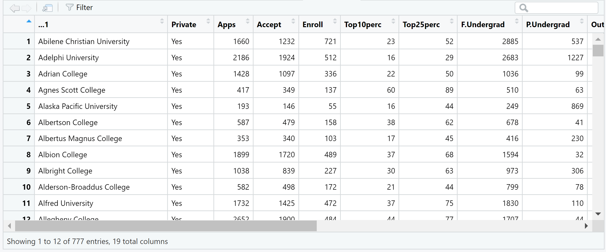
Actually, these data should not be treated as a variable (column) since it is just a list of university names.
Task 2
Keeping the list of names in the data object, transform this column such
that the university names in the column become row names. Hint: use the
column_to_rownames() function from dplyr.
How would have your approach to this task differed if you would have imported the dataset using base R? Try it!
Task 6
Using the Top10perc variable, create a new categorical variable called
Elite such that universities are divided into two groups based on
whether or not the proportion of students coming from the top 10% of
their high school classes exceeds 50%. Hint: use a combination of
mutate() and if_else().
Task 7
Produce side by side box plots of the new Elite variable and
Outstate.
How would you produce a similar plot using base R?
Task 8
Use base R to produce a multipanel plot that displays histograms of the
following variables: Apps, perc.alumni, S.F.Ratio, Expend. Hint:
use par(mfrow=c(2,2)) to set up a 2x2 panel. Try to adjust the
specifications (e.g. breaks).
Task 9
Using Accept and Apps, create a new variable that describes
acceptance rate. Name this variable acceptance_rate. Hint: use
mutate().
Practical 2
For the tasks below, you will require the Boston dataset. This
dataset is part of the MASS R package.
To access the dataset, load the MASS package (install the package
first, if you have not done so previously).
Task 1
Install and load the MASS package. You will also require tidyverse.
Does R provide any message when loading MASS? Why does this matter?
Task 2
Find out more about the Boston dataset variables by accessing the R
Documentation.
To explore the Boston dataset, simply type the name of the data object
into the console or use View()
What type of data structure is the Boston dataset? What are its
dimensions? How many categorical and quantitative variables are there?
Task 4
Using a tidyverse approach, calculate the mean, median, and standard
deviation of all variables of class numeric.
What is the mean pupil-teacher ratio? What is the median and mean per capita crime rate? Which value do you think is more suitable to describe per capita crime rate?
Answers
Practical 1
For the tasks below, you will require the College dataset from the core textbook (James et. al 2021).
Click here to download the file: College.csv .
Remember to place your data file in a separate subfolder within your R project working directory.
This data file contains 18 variables for 777 different universities and colleges in the United States. The variables are:
- Private : Public/private indicator
- Apps : Number of applications received
- Accept : Number of applicants accepted
- Enroll : Number of new students enrolled
- Top10perc : New students from top 10% of high school class
- Top25perc : New students from top 25% of high school class
- F.Undergrad : Number of full-time undergraduates
- P.Undergrad : Number of part-time undergraduates
- Outstate : Out-of-state tuition
- Room.Board : Room and board costs
- Books : Estimated book costs
- Personal : Estimated personal spending
- PhD : Percent of faculty with Ph.D.’s
- Terminal : Percent of faculty with terminal degree
- S.F.Ratio: Student/faculty ratio
- perc.alumni : Percent of alumni who donate
- Expend : Instructional expenditure per student
- Grad.Rate : Graduation rate
Task 1
Import the dataset in an object called college using the tidyverse read_csv() function.
If you have a look at the contents of the data object using View(),
you will notice that the first column contains the names of all of the
universities in the dataset. You will also notice that it has a strange
name.
Actually, these data should not be treated as a variable (column) since it is just a list of university names.
Task 2
Keeping the list of names in the data object, transform this column such
that the university names in the column become row names. Hint: use the
column_to_rownames() function from dplyr.
How would have your approach to this task differed if you would have imported the dataset using base R? Try it!
The data file could have instead been imported using read.csv():
college <- read.csv("data/College.csv")
Using the base R approach, the first column containing the university
names would have been named “X”, as shown below using View().

Now, how would be go about transforming the contents of the first column into row names?
This would require two steps.
First, we assign the column contents to rows names.
rownames(college) <- college[, 1]
If you have another look at the data object, you will see that the rows have now been renamed using the university names in the “X” column, but the column is still part of the dataset. We therefore need to tell R to delete the column.
college <- college[, -1]
Task 3
Produce summary statistics for all variables in the data object.
## Private Apps Accept Enroll
## Length:777 Min. : 81 Min. : 72 Min. : 35
## Class :character 1st Qu.: 776 1st Qu.: 604 1st Qu.: 242
## Mode :character Median : 1558 Median : 1110 Median : 434
## Mean : 3002 Mean : 2019 Mean : 780
## 3rd Qu.: 3624 3rd Qu.: 2424 3rd Qu.: 902
## Max. :48094 Max. :26330 Max. :6392
## Top10perc Top25perc F.Undergrad P.Undergrad
## Min. : 1.00 Min. : 9.0 Min. : 139 Min. : 1.0
## 1st Qu.:15.00 1st Qu.: 41.0 1st Qu.: 992 1st Qu.: 95.0
## Median :23.00 Median : 54.0 Median : 1707 Median : 353.0
## Mean :27.56 Mean : 55.8 Mean : 3700 Mean : 855.3
## 3rd Qu.:35.00 3rd Qu.: 69.0 3rd Qu.: 4005 3rd Qu.: 967.0
## Max. :96.00 Max. :100.0 Max. :31643 Max. :21836.0
## Outstate Room.Board Books Personal
## Min. : 2340 Min. :1780 Min. : 96.0 Min. : 250
## 1st Qu.: 7320 1st Qu.:3597 1st Qu.: 470.0 1st Qu.: 850
## Median : 9990 Median :4200 Median : 500.0 Median :1200
## Mean :10441 Mean :4358 Mean : 549.4 Mean :1341
## 3rd Qu.:12925 3rd Qu.:5050 3rd Qu.: 600.0 3rd Qu.:1700
## Max. :21700 Max. :8124 Max. :2340.0 Max. :6800
## PhD Terminal S.F.Ratio perc.alumni
## Min. : 8.00 Min. : 24.0 Min. : 2.50 Min. : 0.00
## 1st Qu.: 62.00 1st Qu.: 71.0 1st Qu.:11.50 1st Qu.:13.00
## Median : 75.00 Median : 82.0 Median :13.60 Median :21.00
## Mean : 72.66 Mean : 79.7 Mean :14.09 Mean :22.74
## 3rd Qu.: 85.00 3rd Qu.: 92.0 3rd Qu.:16.50 3rd Qu.:31.00
## Max. :103.00 Max. :100.0 Max. :39.80 Max. :64.00
## Expend Grad.Rate
## Min. : 3186 Min. : 10.00
## 1st Qu.: 6751 1st Qu.: 53.00
## Median : 8377 Median : 65.00
## Mean : 9660 Mean : 65.46
## 3rd Qu.:10830 3rd Qu.: 78.00
## Max. :56233 Max. :118.00
Task 5
Produce side by side box plots of Outstate versus Private using base
R.
Did this work? Why?
Using the plot() base R function to produce a box plot would produce
an error since the Private variable is of class character. Most
statistical functions will not work with character vectors.
Error in plot.window(...) : need finite 'xlim' values
In addition: Warning messages:
1: In xy.coords(x, y, xlabel, ylabel, log) : NAs introduced by coercion
2: In min(x) : no non-missing arguments to min; returning Inf
3: In max(x) : no non-missing arguments to max; returning -Inf
Creating a box plot with tidyverse would work.
college %>% ggplot(aes(x = Private, y = Outstate)) + geom_boxplot()

However, it is important to note that if a variable is not of the right
class, then this might have unintended consequences for example, when
building models. In this case, the Private variable must be
transformed into a factor.
Task 6
Using the Top10perc variable, create a new categorical variable called
Elite such that universities are divided into two groups based on
whether or not the proportion of students coming from the top 10% of
their high school classes exceeds 50%. Hint: use a combination of
mutate() and if_else().
Task 7
Produce side by side box plots of the new Elite variable and
Outstate.

How would you produce a similar plot using base R?
plot(college$Elite, college$Outstate, xlab = "Elite", ylab = "Outstate")
Task 8
Use base R to produce a multipanel plot that displays histograms of the
following variables: Apps, perc.alumni, S.F.Ratio, Expend. Hint:
use par(mfrow=c(2,2)) to set up a 2x2 panel. Try to adjust the
specifications (e.g. breaks).
# An example is shown below. Note that the purpose of the mfrow parameter is
# to change the default way in which R displays plots.
# Once applied, all plots you create later will also be displayed in a 2x2 grid.
# To revert back, you need to enter par(mfrow=c(1,1)) into the console.
par(mfrow=c(2,2))
hist(college$Apps)
hist(college$perc.alumni, col=2)
hist(college$S.F.Ratio, col=3, breaks=10)
hist(college$Expend, breaks=100)
Task 9
Using Accept and Apps, create a new variable that describes
acceptance rate. Name this variable acceptance_rate. Hint: use
mutate().
Task 10
Using the acceptance_rate variable, find out which university has the
lowest acceptance rate. Hint: for a tidyverse approach, you can use
slice_min().
## Private Apps Accept Enroll Top10perc Top25perc
## Princeton University Yes 13218 2042 1153 90 98
## F.Undergrad P.Undergrad Outstate Room.Board Books Personal
## Princeton University 4540 146 19900 5910 675 1575
## PhD Terminal S.F.Ratio perc.alumni Expend Grad.Rate Elite
## Princeton University 91 96 8.4 54 28320 99 Yes
## acceptance_rate
## Princeton University 0.1544863Task 11
Using the acceptance_rate variable, find out which university has the
highest acceptance rate.
## Private Apps Accept Enroll Top10perc Top25perc
## Emporia State University No 1256 1256 853 43 79
## Mayville State University No 233 233 153 5 12
## MidAmerica Nazarene College Yes 331 331 225 15 36
## Southwest Baptist University Yes 1093 1093 642 12 32
## University of Wisconsin-Superior No 910 910 342 14 53
## Wayne State College No 1373 1373 724 6 21
## F.Undergrad P.Undergrad Outstate Room.Board
## Emporia State University 3957 588 5401 3144
## Mayville State University 658 58 4486 2516
## MidAmerica Nazarene College 1100 166 6840 3720
## Southwest Baptist University 1770 967 7070 2500
## University of Wisconsin-Superior 1434 417 7032 2780
## Wayne State College 2754 474 2700 2660
## Books Personal PhD Terminal S.F.Ratio
## Emporia State University 450 1888 72 75 19.3
## Mayville State University 600 1900 68 68 15.7
## MidAmerica Nazarene College 1100 4913 33 33 15.4
## Southwest Baptist University 400 1000 52 54 15.9
## University of Wisconsin-Superior 550 1960 75 81 15.2
## Wayne State College 540 1660 60 68 20.3
## perc.alumni Expend Grad.Rate Elite
## Emporia State University 4 5527 50 No
## Mayville State University 11 6971 51 No
## MidAmerica Nazarene College 20 5524 49 No
## Southwest Baptist University 13 4718 71 No
## University of Wisconsin-Superior 15 6490 36 No
## Wayne State College 29 4550 52 No
## acceptance_rate
## Emporia State University 1
## Mayville State University 1
## MidAmerica Nazarene College 1
## Southwest Baptist University 1
## University of Wisconsin-Superior 1
## Wayne State College 1Practical 2
For the tasks below, you will require the Boston dataset. This
dataset is part of the MASS R package.
To access the dataset, load the MASS package (install the package
first, if you have not done so previously).
Task 1
Install and load the MASS package. You will also require tidyverse.
# if you haven't already, install the MASS package before loading
install.packages("MASS")
library(MASS)
library(tidyverse)Does R provide any message when loading MASS? Why does this matter?
One important message that R provides when loading MASS is that this
package masks the select() function from tidyverse.
Attaching package: ‘MASS’
The following object is masked from ‘package:dplyr’:
`select` When masking occurs, this means that both packages contain the same
function. If you were to use the select() function, R will call the
function from the MASS package, rather than from tidyverse (dplyr)
package. This is because the MASS package is the one masking the
function. If you intend to use the select() function as defined by the
tidyverse package, it may not work as intended and/or you may be
prompted by an error message such as:
Error in select(...): unused argument (...)
To avoid such issues, you must ‘call’ on the package from which you want
R to use the masked function (e.g. dplyr::select()). This is why it is
important to read through all warnings and messages provided in the
console.
Task 2
Find out more about the Boston dataset variables by accessing the R
Documentation.
To explore the Boston dataset, simply type the name of the data object
into the console or use View()
What type of data structure is the Boston dataset? What are its
dimensions? How many categorical and quantitative variables are there?
The Boston dataset is a data frame with 506 rows (observations) and 14
columns (variables). There is one categorical variable (chas), and 13
quantitative variables.
Task 3
Find the class of all 14 variables. Hint: use sapply.
## crim zn indus chas nox rm age dis
## "numeric" "numeric" "numeric" "integer" "numeric" "numeric" "numeric" "numeric"
## rad tax ptratio black lstat medv
## "integer" "numeric" "numeric" "numeric" "numeric" "numeric"Task 4
Using a tidyverse approach, calculate the mean, median, and standard
deviation of all variables of class numeric.
Boston %>%
dplyr::select(dplyr::where(is.numeric)) %>%
pivot_longer(everything()) %>%
group_by(name) %>%
summarise(Mean = mean(value, na.rm = TRUE),
SD = sd(value, na.rm = TRUE),
Median = median(value, na.rm = TRUE))## # A tibble: 14 × 4
## name Mean SD Median
## <chr> <dbl> <dbl> <dbl>
## 1 age 68.6 28.1 77.5
## 2 black 357. 91.3 391.
## 3 chas 0.0692 0.254 0
## 4 crim 3.61 8.60 0.257
## 5 dis 3.80 2.11 3.21
## 6 indus 11.1 6.86 9.69
## 7 lstat 12.7 7.14 11.4
## 8 medv 22.5 9.20 21.2
## 9 nox 0.555 0.116 0.538
## 10 ptratio 18.5 2.16 19.0
## 11 rad 9.55 8.71 5
## 12 rm 6.28 0.703 6.21
## 13 tax 408. 169. 330
## 14 zn 11.4 23.3 0What is the mean pupil-teacher ratio? What is the median and mean per capita crime rate? Which value do you think is more suitable to describe per capita crime rate?
The mean pupil-teacher ratio is about 19. The median crime rate is 0.257 whilst the mean is larger at 3.61. Given the difference between the median and the mean, a skewed distribution is expected, therefore, the median may be a more a suitable summary statistic to describe crime rate (a histogram would be needed).
Task 5
Using a base R approach, create a 2x2 multipanel plot of crim versus
age, dis, rad, tax and ptratio.
par(mfrow = c(2,2))
plot(Boston$age, Boston$crim)
plot(Boston$dis, Boston$crim)
plot(Boston$rad, Boston$crim)
plot(Boston$tax, Boston$crim)
What can you say about the relationships between age, dis, rad,
tax, and crim?
As the age of the home increases (age), crime also increases. There is
also higher crime around employment centers (dis). With very high
index of accessibility to radial highways (rad), and tax rates (tax)
there also appears to be high crime rates.
Task 6
Using a base R approach, create and display histograms of crim, tax
and ptratio in a 1x2 multipanel plot. Set the breaks argument to
25 .

What do these histograms indicate?
Most areas have low crime rates, but there is a rather long tail showing high crime rates (although the frequency seems to be very low). Given the degree of skew, the mean would not be a good measure of central tendency. With respect to tax rates, there appears to be a large divide between low taxation and high taxation, with the highest peak at around 670.
Remember to revert back to single panel display.
Overview
Section 2: Linear Regression and Prediction
This section is comprised of two demonstrations and three practicals.
The two demonstrations and Practicals 1 and 2 are adapted from exercises from the core textbook for this course: James, G., Witten, D., Hastie, T. and Tibshirani, R. (2021). An Introduction to Statistical Learning with Applications in R. 2nd ed. New York: Springer. https://www.statlearning.com/
Practical 3 is based on a demonstration developed by Dr. Tatjana Kecojevic, Lecturer in Social Statistics.
Learning Outcomes:
- explain the relevance of the intercept;
- appreciate the impact of noise on coefficient estimates;
- produce and interpret diagnostic plots with base R;
- include non-linear transformations and interactions;
- compare model fit;
- compute and interpret confidence intervals.
In this section, you will practice using the functions below. It is highly recommended that you explore these functions further using the Help tab in your RStudio console.
| Function | Description | Package |
|---|---|---|
lm() |
fit linear models | stats |
predict() |
generic function for predictions from
results of different models (e.g.
predict.lm()) |
stats |
confint() |
compute confidence intervals | stats |
plot() |
generic function for plotting | base |
legend() |
add legend (to arguments such as |
graphics |
abline() |
adding one or more straight lines to plot | graphics |
cor() |
computes correlation between variables | stats |
rnorm() |
generates normal distribution | stats |
poly() |
returns or evaluates polynomials | stats |
par() |
set graphical parameters (e.g. mfrow()
) |
graphics |
subset() |
return subset of a data object (vector, matrix, or dataframe) according to condition(s) | base |
anova() |
compute analysis of variance for | stats |
rnorm() |
density, distribution function, quantile function and random generation for the normal distribution | stats |
sqrt() |
compute square root | base |
Demonstration 1
Simple Linear Models Without Intercept
Let’s investigate the t-statistic for the null hypothesis \(H_{0}:\beta = 0\) in simple linear regression without an intercept. The equation for a model without the intercept would therefore be \(Y = \beta X\).
By excluding the intercept, the model is constrained to pass through the origin \((0,0)\), allowing the relationship between the response and predictor to be interpreted as proportional. In other words, the removal of the intercept forces the regression line to start at \((0,0)\), so when \(x = 0\), then \(y = 0\).
Let’s first generate some data for a predictor \(x\) and a response \(y\).
We select a seed value to ensure that we generate the same data every time. To generate values, we use the rnorm function to produce 100 data values drawn from a normal distribution (hence rnorm()).
Now that we generated our predictor and our response variable, let’s run a simple linear regression without an intercept using \(y\) as the response and \(x\) as a predictor. One way to do so is by adding \(0\) into the formula.
And now, let’s have a look at the results.
## Estimate Std. Error t value Pr(>|t|)
## x 1.993876 0.1064767 18.72593 2.642197e-34We can see a significant positive relationship between y and x. The coefficient estimate for \(x\) is \(1.993876\), and since the relationship between \(x\) and \(y\) is proportional, we interpret the estimate as the \(y\) values being predicted to be (a little below) twice the \(x\) values.
But what happens if we swap \(x\) and \(y\) and run a model using \(y\) as the predictor and \(x\) as the response?
## Estimate Std. Error t value Pr(>|t|)
## y 0.3911145 0.02088625 18.72593 2.642197e-34We again observe a significant positive relationship between \(x\) and \(y\), except that the \(x\) values are predicted to be (a little below) half the \(y\) values (since the coefficient estimate is \(0.3911145\)).
Note also the t-statistic values for the two models. They are identical and of course so is the p-value (therefore, there is a significant relationships between \(x\) and \(y\)).
Therefore, the results of the models of \(y\) onto \(x\) and \(x\) onto \(y\) indicate that the coefficients would be the inverse of each other (2 and 1/2) whilst the t-statistic values (and p-values) remain the same.
Why are the t-statistic values identical?
For each coefficient, the t statistic is calculated by dividing the coefficient estimate by its standard error. For example, for the fit2 model, we have a coefficient estimate of \(0.3911145\) and a standard error of \(0.02088625\) and so dividing \(0.3911145\) by \(0.02088625\) gives us \(18.72593\).
You’ll also remember that the correlation coefficient between two variables is symmetric and so the correlation between \(X\) and \(Y\) is the same as for \(Y\) and \(X\). This is the reason why it is incorrect to state that “\(X\) causes a change in \(Y\)”.
In a linear model, we are testing whether there is a linear association between \(x\) and \(y\) but not if X causes Y or Y causes X. Therefore, irrespective of whether we are regressing \(y\) onto \(x\) or \(y\) onto \(y\), the t-statistic is testing the same null hypothesis \(H_{0} : \beta = 0\) (i.e. fundamentally, it is testing whether there is a linear correlation between \(x\) and \(y\)).
So what exactly is the role of the intercept?
As you already know, the intercept represents the value of \(y\) when \(x = 0\) which can be thought of as the initial value effect that exists independently of \(x\). This not only applies to the simple linear regression model but also to the multiple linear regression model (i.e. the intercept is the value of \(y\) when all predictors are zero). In other words, the intercept adjusts the starting point of regression line and allows for the line to shift up or down on the y-axis thus reflecting a “baseline” level of \(y\) that is not dependent on \(x\). With an intercept, the slope coefficient still tells us how much \(Y\) changes with a one-unit change in \(x\), but this change is relative to the value of \(y\) when \(x = 0\) and this is important when \(x\) can take a value of \(0\) that is meaningful to the model.
Without the intercept, the line is forced to pass through the origin \((0,0)\), which may not be suitable unless the data naturally begin at zero (or there are some other theoretical or practical reasons which warrant the line passing through the origin).
With an intercept, the regression line is no longer forced to pass through zero (and will only do so if the data naturally begin at zero). The intercept therefore allows for the regression line to better fit the data, particularly when the data do not actually begin at zero. In this way, the model can capture the average outcome when the predictor(s) is/are zero.
Simple Linear Models with Intercept
Do you think that the t-statistic will be the same for both regression of Y onto X and X onto Y if we were to include the intercept?
We use the same data as before and run a regression with \(y\) as response and \(x\) as predictor and include the intercept.
We then extract the model coefficients from the summary results of the model.
## Estimate Std. Error t value Pr(>|t|)
## (Intercept) -0.03769261 0.09698729 -0.3886346 6.983896e-01
## x 1.99893961 0.10772703 18.5555993 7.723851e-34How does coefficient for fit3 compare to fit? How about the t-statistic value?
## Estimate Std. Error t value Pr(>|t|)
## x 1.993876 0.1064767 18.72593 2.642197e-34As you can see, the coefficient for the model with the intercept (fit3) is very similar to the coefficient for the model without the intercept (fit). The t-statistic is also very close (\(18.72593\) for the model without intercept and \(18.5555993\) for the model with the intercept).
Now we run a regression with \(x\) as response and \(y\) as predictor.
We then extract the model coefficients from the summary results of the model.
## Estimate Std. Error t value Pr(>|t|)
## (Intercept) 0.03880394 0.04266144 0.9095787 3.652764e-01
## y 0.38942451 0.02098690 18.5555993 7.723851e-34How does the coefficient for fit4 compare to fit2? How about the t-statistic value? Are the t-statistic values different between the fit3 and fit4 models?
## Estimate Std. Error t value Pr(>|t|)
## y 0.3911145 0.02088625 18.72593 2.642197e-34The slope coefficient for the model with the intercept (\(0.38942451\)) is very similar to the coefficient for the model without the intercept (\(0.3911145\)) and so is the t-statistic.
Also, as expected, the t-statistic value for the two models for which we included the intercept are identical. Therefore, irrespective of whether we include the intercept or not, the t-statistic value for the regression of \(y\) onto \(x\) will be identical to the t-statistic value for the regression of \(x\) onto \(y\).
Demonstration 2
Population Parameters and Estimated Coefficients
Let’s explore the differences between population parameters and estimated coefficients.
We will generate a “true” population dataset.
We create a variable \(X\) with 100 observations drawn from a normal distribution. To be more specific about the characteristic of our variable \(X\), we will not only specify the total number of observations (100), but also the mean (0), and standard deviation (1). This will be our predictor.
We now create another vector called eps containing 100 observations drawn from a normal distribution with a mean of zero and a variance of 0.25. This will be the our error term \(\epsilon\).
Using \(X\) and \(\epsilon\), we now generate a vector \(Y\) according to the following formula: \(Y = -1 + 0.5X + \epsilon\). Essentially, we specify our intercept, the slope coefficient, the predictor variable and the error to obtain our response variable.
The values \(-1\) and \(0.5\) represent the “true” population values for the intercept \(\beta_{0}\) and slope \(\beta_{1}\) respectively.
Now we can create a scatterplot to observe the association between \(X\) and \(Y\).
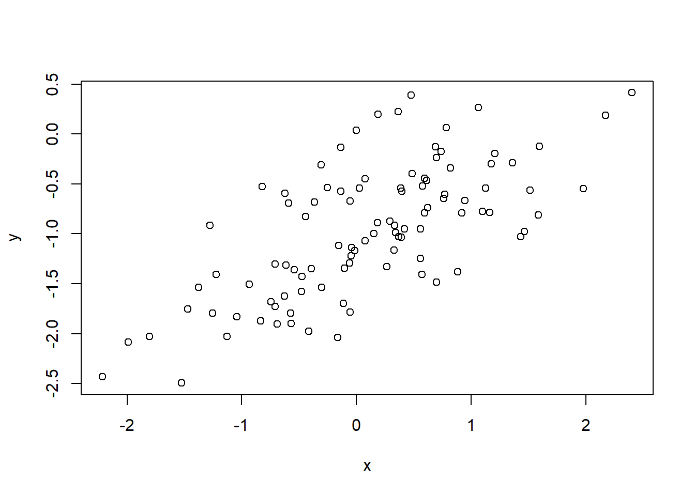
The plot indicates a linear relationship between \(X\) and \(Y\). The relationship is clearly not perfectly linear due to noise.
If we were to instead estimate the intercept and slope, to what degree do you think these estimated coefficients will differ from the true population values?
Ok, so we have the variables we generated, so our predictor X and our response X and we run a regression model.
##
## Call:
## lm(formula = y ~ x)
##
## Residuals:
## Min 1Q Median 3Q Max
## -0.93842 -0.30688 -0.06975 0.26970 1.17309
##
## Coefficients:
## Estimate Std. Error t value Pr(>|t|)
## (Intercept) -1.01885 0.04849 -21.010 < 2e-16 ***
## x 0.49947 0.05386 9.273 4.58e-15 ***
## ---
## Signif. codes: 0 '***' 0.001 '**' 0.01 '*' 0.05 '.' 0.1 ' ' 1
##
## Residual standard error: 0.4814 on 98 degrees of freedom
## Multiple R-squared: 0.4674, Adjusted R-squared: 0.4619
## F-statistic: 85.99 on 1 and 98 DF, p-value: 4.583e-15The results of the model show an estimated slope coefficient (\(\hat{\beta_{1}}\)) for \(x\) of \(0.49947\). This is very close to the population value (\(\beta_{1}\)) which is \(0.5\).
We see a similar estimated value for the intercept (\(\hat{\beta_{0}}\)) which is \(-1.01885\), again very close to the true value for the intercept (\(\beta_{0}\)) which is \(-1\).
Therefore, if we were to plot the population regression line and the estimated regression line, we would see that the two are difficult to distinguish (given the similarity of the estimated and true values for the coefficients).
plot(x, y)
abline(fit)
abline(-1, 0.5, col = "red", lty = 2)
legend("topleft",
c("model fit", "population regression"),
col = c("black", "red"),
lty = c(1, 2),
cex = 0.72,
)
What if we were to fit a polynomial regression model? Would there be any evidence that adding a quadratic term improves the model fit?
To add a polynomial term of degree two, we can use the poly base R function directly in the code for the model.
Since the F-test is not statistically significant, there is no evidence that adding a quadratic term improves the model fit.
## Analysis of Variance Table
##
## Model 1: y ~ x
## Model 2: y ~ poly(x, 2)
## Res.Df RSS Df Sum of Sq F Pr(>F)
## 1 98 22.709
## 2 97 22.257 1 0.45163 1.9682 0.1638What happens if we reduce noise?
For our first model (fit), we specified a variance of \(0.5\) (standard deviation 0.25) for \(\epsilon\) and we noted an \(R^2\) value of \(0.4674\).
set.seed(1)
x <- rnorm(100, 0, 1)
eps <- rnorm(100, 0, sqrt(0.25))
y <- -1 + 0.5 * x + eps
fit <- lm(y ~ x)
summary(fit)##
## Call:
## lm(formula = y ~ x)
##
## Residuals:
## Min 1Q Median 3Q Max
## -0.93842 -0.30688 -0.06975 0.26970 1.17309
##
## Coefficients:
## Estimate Std. Error t value Pr(>|t|)
## (Intercept) -1.01885 0.04849 -21.010 < 2e-16 ***
## x 0.49947 0.05386 9.273 4.58e-15 ***
## ---
## Signif. codes: 0 '***' 0.001 '**' 0.01 '*' 0.05 '.' 0.1 ' ' 1
##
## Residual standard error: 0.4814 on 98 degrees of freedom
## Multiple R-squared: 0.4674, Adjusted R-squared: 0.4619
## F-statistic: 85.99 on 1 and 98 DF, p-value: 4.583e-15Now, let’s observe what happens to the \(R^2\) value if we reduce noise from 0.25 to 0.05. We can do so directly when we generate data for our variable \(y\) without needing to create a new eps object.
The results show that the \(R^{2}\) value for fit3 is much higher than the \(R^{2}\) value for fit.
##
## Call:
## lm(formula = y ~ x)
##
## Residuals:
## Min 1Q Median 3Q Max
## -0.61308 -0.12553 -0.00391 0.15199 0.41332
##
## Coefficients:
## Estimate Std. Error t value Pr(>|t|)
## (Intercept) -0.98917 0.02216 -44.64 <2e-16 ***
## x 0.52375 0.02152 24.33 <2e-16 ***
## ---
## Signif. codes: 0 '***' 0.001 '**' 0.01 '*' 0.05 '.' 0.1 ' ' 1
##
## Residual standard error: 0.2215 on 98 degrees of freedom
## Multiple R-squared: 0.858, Adjusted R-squared: 0.8565
## F-statistic: 592.1 on 1 and 98 DF, p-value: < 2.2e-16By plotting the data we can clearly see that the data points are less dispersed than before and therefore, the association between x and y appears more linear. We can also observe that the estimated regression line deviates slightly from the population regression line (particularly at lowest and highest values).
What happens if we increase noise?
Using the same approach as before, we now increase the standard deviation to 1.
Now, the \(R^{2}\) value for fit4 is much lower than that of either fit3 or fit.
##
## Call:
## lm(formula = y ~ x)
##
## Residuals:
## Min 1Q Median 3Q Max
## -2.51014 -0.60549 0.02065 0.70483 2.08980
##
## Coefficients:
## Estimate Std. Error t value Pr(>|t|)
## (Intercept) -1.04745 0.09676 -10.825 < 2e-16 ***
## x 0.42505 0.08310 5.115 1.56e-06 ***
## ---
## Signif. codes: 0 '***' 0.001 '**' 0.01 '*' 0.05 '.' 0.1 ' ' 1
##
## Residual standard error: 0.9671 on 98 degrees of freedom
## Multiple R-squared: 0.2107, Adjusted R-squared: 0.2027
## F-statistic: 26.16 on 1 and 98 DF, p-value: 1.56e-06If we plot the data, we can observe that the data points are more dispersed and therefore, the estimated regression line deviates to a greater extent from the population regression line.
plot(x, y)
abline(fit4)
abline(-1, 0.5, col = "red", lty = 2)
legend("topleft",
c("model fit", "population regression"),
col = c("black", "red"),
lty = c(1, 2),
cex = 0.72,
)
How does noise affect confidence intervals for the coefficients?
The fit3 model is the model with the lowest amount of noise (standard deviation of 0.05), whilst fit4 is the model with the largest amount of noise (standard deviation of 1).
The confidence interval for the coefficient for the model with the highest noise is the widest. The larger the amount of noise, the wider the interval and therefore, the less precise the coefficient estimates will be.
Conversely, the narrowest interval is that of the model with the lowest noise which yielded the most precise estimates.
## 2.5 % 97.5 %
## (Intercept) -1.1150804 -0.9226122
## x 0.3925794 0.6063602## 2.5 % 97.5 %
## (Intercept) -1.033141 -0.9451916
## x 0.481037 0.5664653## 2.5 % 97.5 %
## (Intercept) -1.2394772 -0.8554276
## x 0.2601391 0.5899632Practical 1
For the tasks below, you will require the Auto dataset from the core textbook (James et. al 2021).
This dataset is part of the ISRL2 package. By loading the package, the
Auto dataset loads automatically:
library(ISLR2)
The Auto dataset contains information such as engine horsepower, gas mileage, model year, and origin of car, for 392 vehicles. It is a dataframe with 392 observations and 9 variables. The variables are:
- mpg: miles per gallon
- cylinders: Number of cylinders between 4 and 8
- displacement: Engine displacement (cu. inches)
- horsepower: Engine horsepower
- weight: Vehicle weight (lbs.)
- acceleration: Time to accelerate from 0 to 60 mph (sec.)
- year: Model year
- origin: Origin of car (1. American, 2. European, 3. Japanese)
- name: Vehicle name
Task 1
Use the lm() function to perform simple linear regression with mpg
as the response and horsepower as the predictor. Store the output in
an object called fit.
Task 2
Have a look at the results of the model.
Is there a relationship between the predictor and the response?
Task 3
What is the associated 95% confidence intervals for predicted miles per
gallon associated with an engine horsepower of 98? Hint: use the
predict() function. For confidence intervals, set the interval
argument to confidence.
Task 5
Using base R, plot the response and the predictor as well as the least squares regression line. Add suitable labels to the X and Y axes.
Task 6
Use base R to produce diagnostic plots of the least squares regression fit. Display these in a 2X2 grid.
Task 7
Subset the Auto dataset such that it excludes the name and origin variables and store this subsetted dataset in a new object called quant_vars.
Task 8
Compute a correlation matrix of all variables.
Did you use the Auto dataset or the quant_vars object? Why does it matter which data object you use?
Task 9
Using the quant_vars object, perform multiple linear regression with miles per gallon as the response and all other variables as the predictors.
Store the results in an object called fit2.
Task 10
Have a look at the results of the multiple regression model.
Is there a relationship between the predictors and the response? Which predictors appear to have a statistically significant relationship to the response? What does the coefficient for the year variable suggest?
Task 11
Produce diagnostic plots of the multiple linear regression fit in a 2x2 grid.
Do the residual plots suggest any unusually large outliers? Does the leverage plot identify any observations with unusually high leverage?
Task 12
Fit separate linear regression models with interaction effect terms for: weight and horsepower, acceleration and horsepower, and cylinders and weight.
Are any of the interaction terms statistically significant?
Task 13
Using the Auto data object, apply transformations for the horsepower variable and plot the relationship between horsepower and mpg in a 2x2 grid.
- First plot: use the original variable;
- Second plot: apply log transform;
- Third plot: raise it to the power of two.
Which of these transformations is most suitable?
Task 14
Now run a multiple regression model with all variables as before but this time, apply a log transformation of the horsepower variable.
Practical 2
For the tasks below, you will require the Carseats dataset from the core textbook (James et. al 2021).
This dataset is part of the ISRL2 package. By loading the package, the
Carseats dataset loads automatically:
library(ISLR2)
Carseats is a simulated dataset comprising of sales of child car seats at 400 different stores. It is a datafrate with 400 observations and 11 variables. The variables are:
- Sales: Unit sales (thousands of dollars) at each location
- CompPrice: Price charged by competitor at each location
- Income: Community income level (thousands of dollars)
- Advertising: Local advertising budget for company at each location
(thousands of dollars)
- Population: Population size in region (thousands of dollars)
- Price: Price company charges for car seats at each site
- ShelveLoc: Quality of the shelving location for the car seats at
each site
- Age: Average age of the local population
- Education: Education level at each location
- Urban: Whether the store is in an urban or rural location
- US: Whether the store is in the US or not
Task 1
Fit a multiple regression model to predict unit sales at each location based on price company charges for car seats, whether the store is in an urban or rural location, and whether the store is in the US or not.
Task 2
Have a look at the results and interpret the coefficients.
Which coefficients are statistically significant? What do they indicate?
Practical 3: The Quality of Red Bordeaux Vintages
This practical was developed by Dr. Tatjana Kecojevic, Lecturer in Social Statistics.
We would like to analyse the quality of a vintage that has been quantified as the price and make the interpretation of our statistical findings.
We are going to use wine.csv available from Eduardo García Portugués’s book: Notes for Predictive Modelling; https://bookdown.org/egarpor/PM-UC3M/.
The wine dataset is formed by the auction price of 27 red Bordeaux vintages, five vintage descriptors (WinterRain, AGST, HarvestRain, Age, Year), and the population of France in the year of the vintage, FrancePop.
- Year: year in which grapes were harvested to make wine
- Price: logarithm of the average market price for Bordeaux vintages according to 1990–1991 auctions. The price is relative to the price of the 1961 vintage, regarded as the best one ever recorded
- WinterRain: winter rainfall (in mm)
- AGST: Average Growing Season Temperature (in degrees Celsius)
- HarvestRain: harvest rainfall (in mm)
- Age: age of the wine measured as the number of years stored in a cask
- FrancePop: population of France at Year (in thousands)
You will require the GGally package; please make sure to install it first.
And now let’s import the data.
Let’s first obtain some summary statistics.
## Year Price WinterRain AGST HarvestRain
## Min. :1952 Min. :6.205 Min. :376.0 Min. :14.98 Min. : 38.0
## 1st Qu.:1960 1st Qu.:6.508 1st Qu.:543.5 1st Qu.:16.15 1st Qu.: 88.0
## Median :1967 Median :6.984 Median :600.0 Median :16.42 Median :123.0
## Mean :1967 Mean :7.042 Mean :608.4 Mean :16.48 Mean :144.8
## 3rd Qu.:1974 3rd Qu.:7.441 3rd Qu.:705.5 3rd Qu.:17.01 3rd Qu.:185.5
## Max. :1980 Max. :8.494 Max. :830.0 Max. :17.65 Max. :292.0
## Age FrancePop
## Min. : 3.00 Min. :43184
## 1st Qu.: 9.50 1st Qu.:46856
## Median :16.00 Median :50650
## Mean :16.19 Mean :50085
## 3rd Qu.:22.50 3rd Qu.:53511
## Max. :31.00 Max. :55110And a matrix of plots. The ggpairs() function which is part of the GGally package produces an information rich visualisation that includes pairwise relationships of all the variables in the dataset.

What conclusions can you draw based on the above information?
We are going to investigate possible interactions between the rainfall (WinterRain) and the growing season temperature (AGST). We will start with the most complicated model that includes the highest-order interaction. In R we will specify the three-way interaction, which will automatically add all combinations of two-way interactions.
model1 <- lm(Price ~ WinterRain + AGST + HarvestRain + Age + WinterRain * AGST * HarvestRain, data = wine)
summary(model1)##
## Call:
## lm(formula = Price ~ WinterRain + AGST + HarvestRain + Age +
## WinterRain * AGST * HarvestRain, data = wine)
##
## Residuals:
## Min 1Q Median 3Q Max
## -0.35058 -0.19462 -0.02645 0.17194 0.52079
##
## Coefficients:
## Estimate Std. Error t value Pr(>|t|)
## (Intercept) 8.582e+00 1.924e+01 0.446 0.6609
## WinterRain -1.858e-02 2.896e-02 -0.642 0.5292
## AGST -1.748e-01 1.137e+00 -0.154 0.8795
## HarvestRain -4.713e-02 1.540e-01 -0.306 0.7631
## Age 2.476e-02 8.288e-03 2.987 0.0079 **
## WinterRain:AGST 1.272e-03 1.712e-03 0.743 0.4671
## WinterRain:HarvestRain 7.836e-05 2.600e-04 0.301 0.7665
## AGST:HarvestRain 3.059e-03 9.079e-03 0.337 0.7401
## WinterRain:AGST:HarvestRain -5.446e-06 1.540e-05 -0.354 0.7278
## ---
## Signif. codes: 0 '***' 0.001 '**' 0.01 '*' 0.05 '.' 0.1 ' ' 1
##
## Residual standard error: 0.2833 on 18 degrees of freedom
## Multiple R-squared: 0.8621, Adjusted R-squared: 0.8007
## F-statistic: 14.06 on 8 and 18 DF, p-value: 2.675e-06What can you say about the explained variability of the model? Which coefficients are statistically significant? Simplify the model in stages and decide on the final model.
Answers
Practical 1
For the tasks below, you will require the Auto dataset from the core textbook (James et. al 2021).
This dataset is part of the ISRL2 package. By loading the package, the
Auto dataset loads automatically:
library(ISLR2)
Remember to install it first
install.packages("ISLR2")
This data file (text format) contains 398 observations of 9 variables. The variables are:
- mpg: miles per gallon
- cylinders: Number of cylinders between 4 and 8
- displacement: Engine displacement (cu. inches)
- horsepower: Engine horsepower
- weight: Vehicle weight (lbs.)
- acceleration: Time to accelerate from 0 to 60 mph (sec.)
- year: Model year
- origin: Origin of car (1. American, 2. European, 3. Japanese)
- name: Vehicle name
Task 1
Use the lm() function to perform simple linear regression with mpg
as the response and horsepower as the predictor. Store the output in
an object called fit.
Task 2
Have a look at the results of the model.
##
## Call:
## lm(formula = mpg ~ horsepower, data = Auto)
##
## Residuals:
## Min 1Q Median 3Q Max
## -13.5710 -3.2592 -0.3435 2.7630 16.9240
##
## Coefficients:
## Estimate Std. Error t value Pr(>|t|)
## (Intercept) 39.935861 0.717499 55.66 <2e-16 ***
## horsepower -0.157845 0.006446 -24.49 <2e-16 ***
## ---
## Signif. codes: 0 '***' 0.001 '**' 0.01 '*' 0.05 '.' 0.1 ' ' 1
##
## Residual standard error: 4.906 on 390 degrees of freedom
## Multiple R-squared: 0.6059, Adjusted R-squared: 0.6049
## F-statistic: 599.7 on 1 and 390 DF, p-value: < 2.2e-16Is there a relationship between the predictor and the response?
The slope coefficient (-0.157845) is statistically significant
(<2e-16 ***). We can conclude that there is evidence to suggest a
negative relationship between miles per gallon and engine horsepower.
For a one-unit increase in engine horsepower, miles per gallon are
reduced by 0.16.
Task 3
What is the associated 95% confidence intervals for predicted miles per
gallon associated with an engine horsepower of 98? Hint: use the
predict() function. For confidence intervals, set the interval
argument to confidence.
## fit lwr upr
## 1 24.46708 23.97308 24.96108Task 4
How about the prediction interval for the same value?
## fit lwr upr
## 1 24.46708 14.8094 34.12476Are the two intervals different? Why?
The prediction interval (lower limit 14.8094 and upper limit 34.12476) is wider (and therefore less precise) than the confidence interval (lower limit 23.97308 and upper limit 24.96108). The confidence interval measures the uncertainty around the estimate of the conditional mean whilst the prediction interval takes into account not only uncertainty but also the variability of the conditional distribution.
Task 5
Using base R, plot the response and the predictor as well as the least squares regression line. Add suitable labels to the X and Y axes.

Task 6
Use base R to produce diagnostic plots of the least squares regression fit. Display these in a 2X2 grid.

Task 7
Subset the Auto dataset such that it excludes the name and origin variables and store this subsetted dataset in a new object called quant_vars.
Task 8
Compute a correlation matrix of all variables.
## mpg cylinders displacement horsepower weight
## mpg 1.0000000 -0.7776175 -0.8051269 -0.7784268 -0.8322442
## cylinders -0.7776175 1.0000000 0.9508233 0.8429834 0.8975273
## displacement -0.8051269 0.9508233 1.0000000 0.8972570 0.9329944
## horsepower -0.7784268 0.8429834 0.8972570 1.0000000 0.8645377
## weight -0.8322442 0.8975273 0.9329944 0.8645377 1.0000000
## acceleration 0.4233285 -0.5046834 -0.5438005 -0.6891955 -0.4168392
## year 0.5805410 -0.3456474 -0.3698552 -0.4163615 -0.3091199
## acceleration year
## mpg 0.4233285 0.5805410
## cylinders -0.5046834 -0.3456474
## displacement -0.5438005 -0.3698552
## horsepower -0.6891955 -0.4163615
## weight -0.4168392 -0.3091199
## acceleration 1.0000000 0.2903161
## year 0.2903161 1.0000000Did you use the Auto dataset or the quant_vars object? Why does it matter which data object you use?
To compute the correlation matrix using all variables of a data object, these variables must all be numeric. In the Auto data object, the name variable is coded as a factor.
class(Auto$name)
[1] "factor"
Therefore, if you try to use the cor() function with Auto dataset
without excluding the name variable, you will get an error.
cor(Auto)
Error in cor(Auto) : 'x' must be numeric.
Also, whilst the origin variable is of class integer and will not
pose a problem when you apply the cor() function, you’ll remember from
the variable description list that this is a nominal variable with its
categories numerically labelled.
Compute the correlation matrix using quant_vars.
Task 9
Using the quant_vars object, perform multiple linear regression with miles per gallon as the response and all other variables as the predictors.
Store the results in an object called fit2.
Task 10
Have a look at the results of the multiple regression model.
##
## Call:
## lm(formula = mpg ~ ., data = quant_vars)
##
## Residuals:
## Min 1Q Median 3Q Max
## -8.6927 -2.3864 -0.0801 2.0291 14.3607
##
## Coefficients:
## Estimate Std. Error t value Pr(>|t|)
## (Intercept) -1.454e+01 4.764e+00 -3.051 0.00244 **
## cylinders -3.299e-01 3.321e-01 -0.993 0.32122
## displacement 7.678e-03 7.358e-03 1.044 0.29733
## horsepower -3.914e-04 1.384e-02 -0.028 0.97745
## weight -6.795e-03 6.700e-04 -10.141 < 2e-16 ***
## acceleration 8.527e-02 1.020e-01 0.836 0.40383
## year 7.534e-01 5.262e-02 14.318 < 2e-16 ***
## ---
## Signif. codes: 0 '***' 0.001 '**' 0.01 '*' 0.05 '.' 0.1 ' ' 1
##
## Residual standard error: 3.435 on 385 degrees of freedom
## Multiple R-squared: 0.8093, Adjusted R-squared: 0.8063
## F-statistic: 272.2 on 6 and 385 DF, p-value: < 2.2e-16Is there a relationship between the predictors and the response? Which predictors appear to have a statistically significant relationship to the response? What does the coefficient for the year variable suggest?
Two of the predictors are statistically significant: weight and year. The relationship between weight and mpg is negative which suggests that for a one pound increase in weight of vehicle, the number of miles per gallon the vehicle can travel decreases, whilst that of mpg and year is positive which suggests that the more recent the vehicle is, the higher the number of miles per gallon it can travel.
Task 11
Produce diagnostic plots of the multiple linear regression fit in a 2x2 grid.

Do the residual plots suggest any unusually large outliers? Does the leverage plot identify any observations with unusually high leverage?
One point has high leverage, the residuals also show a trend with fitted values.
Task 12
Fit separate linear regression models with interaction effect terms for: weight and horsepower, acceleration and horsepower, and cylinders and weight.
summary(lm(mpg ~ . + weight:horsepower, data = quant_vars))
summary(lm(mpg ~ . + acceleration:horsepower, data = quant_vars))
summary(lm(mpg ~ . + cylinders:weight, data = quant_vars))Are any of the interaction terms statistically significant?
For each model, the interaction term is statistically significant.
Task 13
Using the Auto data object, apply transformations for the horsepower variable and plot the relationship between horsepower and mpg in a 2x2 grid.
- First plot: use the original variable;
- Second plot: apply log transform;
- Third plot: raise it to the power of two.
par(mfrow = c(2, 2))
plot(Auto$horsepower, Auto$mpg, cex = 0.2)
plot(log(Auto$horsepower), Auto$mpg, cex = 0.2)
plot(Auto$horsepower ^ 2, Auto$mpg, cex = 0.2)Which of these transformations is most suitable?
The relationship between horsepower and miles per gallon is clearly non-linear (plot 1). The log transform seems to address this best.
Task 14
Now run a multiple regression model with all variables as before but this time, apply a log transformation of the horsepower variable.
Task 15
Have a look at the results.
##
## Call:
## lm(formula = mpg ~ ., data = quant_vars)
##
## Residuals:
## Min 1Q Median 3Q Max
## -8.6778 -2.0080 -0.3142 1.9262 14.0979
##
## Coefficients:
## Estimate Std. Error t value Pr(>|t|)
## (Intercept) 29.1713000 8.9291383 3.267 0.00118 **
## cylinders -0.3563199 0.3181815 -1.120 0.26347
## displacement 0.0088277 0.0068866 1.282 0.20066
## horsepower -8.7568129 1.5958761 -5.487 7.42e-08 ***
## weight -0.0044304 0.0007213 -6.142 2.03e-09 ***
## acceleration -0.3317439 0.1077476 -3.079 0.00223 **
## year 0.6979715 0.0503916 13.851 < 2e-16 ***
## ---
## Signif. codes: 0 '***' 0.001 '**' 0.01 '*' 0.05 '.' 0.1 ' ' 1
##
## Residual standard error: 3.308 on 385 degrees of freedom
## Multiple R-squared: 0.8231, Adjusted R-squared: 0.8203
## F-statistic: 298.5 on 6 and 385 DF, p-value: < 2.2e-16How do the results of model fit3 differ from those of model fit2?
The fit2 model results showed that only two predictors were statistically significant: weight and year. The fit3 model has two additional predictors that are statistically significant: acceleration as well as horsepower.Also, the coefficient values can now be interpreted more easily.

Practical 2
For the tasks below, you will require the Carseats dataset from the core textbook (James et. al 2021).
This dataset is part of the ISRL2 package. By loading the package, the
Carseats dataset loads automatically:
library(ISLR2)
This dataframe object contains a simulated dataset of sales of child car seats at 400 different stores.
The 9 variables are:
- Sales: Unit sales (thousands of dollars) at each location
- CompPrice: Price charged by competitor at each location
- Income: Community income level (thousands of dollars)
- Advertising: Local advertising budget for company at each location
(thousands of dollars)
- Population: Population size in region (thousands of dollars)
- Price: Price company charges for car seats at each site
- ShelveLoc: Quality of the shelving location for the car seats at
each site
- Age: Average age of the local population
- Education: Education level at each location
- Urban: Whether the store is in an urban or rural location
- US: Whether the store is in the US or not
Task 1
Fit a multiple regression model to predict unit sales at each location based on price company charges for car seats, whether the store is in an urban or rural location, and whether the store is in the US or not.
Task 2
Have a look at the results and interpret the coefficients.
##
## Call:
## lm(formula = Sales ~ Price + Urban + US, data = Carseats)
##
## Residuals:
## Min 1Q Median 3Q Max
## -6.9206 -1.6220 -0.0564 1.5786 7.0581
##
## Coefficients:
## Estimate Std. Error t value Pr(>|t|)
## (Intercept) 13.043469 0.651012 20.036 < 2e-16 ***
## Price -0.054459 0.005242 -10.389 < 2e-16 ***
## UrbanYes -0.021916 0.271650 -0.081 0.936
## USYes 1.200573 0.259042 4.635 4.86e-06 ***
## ---
## Signif. codes: 0 '***' 0.001 '**' 0.01 '*' 0.05 '.' 0.1 ' ' 1
##
## Residual standard error: 2.472 on 396 degrees of freedom
## Multiple R-squared: 0.2393, Adjusted R-squared: 0.2335
## F-statistic: 41.52 on 3 and 396 DF, p-value: < 2.2e-16Which coefficients are statistically significant? What do they indicate?
The null hypothesis for the slope being zero is rejected for the Price and US variables. The coefficient for Price is statistically significant; since it is negative, as price increases by a thousand dollars (i.e. one unit increase), the sales of child decrease by about 0.05. The slope for the US variable is also statistically significant but it is positive. Also, this is a binary factor variable coded as Yes and No (No is the reference category). Therefore, sales of child car seats are higher by 1.2 for car seat products that are produced in the US than for car seat products not produced in the US.
Task 3
Based on the conclusions you have drawn in Task 2, now fit a smaller model that only uses the predictors for which there is evidence of association with sales.
Task 4
Compare the two models (fit and fit2).
## Analysis of Variance Table
##
## Model 1: Sales ~ Price + Urban + US
## Model 2: Sales ~ Price + US
## Res.Df RSS Df Sum of Sq F Pr(>F)
## 1 396 2420.8
## 2 397 2420.9 -1 -0.03979 0.0065 0.9357Which model is the better fit?
They have similar r-squared values, and the fit model (containing the extra variable Urban) is non-significantly better.
Practical 3: The Quality of Red Bordeaux Vintages
This demonstration was developed by Dr. Tatjana Kecojevic, Lecturer in Social Statistics.
We would like to analyse the quality of a vintage that has been quantified as the price and make the interpretation of our statistical findings.
We are going to use wine.csv available from Eduardo García Portugués’s book: Notes for Predictive Modelling; https://bookdown.org/egarpor/PM-UC3M/.
The wine dataset is formed by the auction price of 27 red Bordeaux vintages, five vintage descriptors (WinterRain, AGST, HarvestRain, Age, Year), and the population of France in the year of the vintage, FrancePop.
- Year: year in which grapes were harvested to make wine
- Price: logarithm of the average market price for Bordeaux vintages according to 1990–1991 auctions. The price is relative to the price of the 1961 vintage, regarded as the best one ever recorded
- WinterRain: winter rainfall (in mm)
- AGST: Average Growing Season Temperature (in degrees Celsius)
- HarvestRain: harvest rainfall (in mm)
- Age: age of the wine measured as the number of years stored in a cask
- FrancePop: population of France at Year (in thousands)
You will require the GGally package; please make sure to install it first.
And now let’s import the data.
Let’s first obtain some summary statistics.
## Year Price WinterRain AGST HarvestRain
## Min. :1952 Min. :6.205 Min. :376.0 Min. :14.98 Min. : 38.0
## 1st Qu.:1960 1st Qu.:6.508 1st Qu.:543.5 1st Qu.:16.15 1st Qu.: 88.0
## Median :1967 Median :6.984 Median :600.0 Median :16.42 Median :123.0
## Mean :1967 Mean :7.042 Mean :608.4 Mean :16.48 Mean :144.8
## 3rd Qu.:1974 3rd Qu.:7.441 3rd Qu.:705.5 3rd Qu.:17.01 3rd Qu.:185.5
## Max. :1980 Max. :8.494 Max. :830.0 Max. :17.65 Max. :292.0
## Age FrancePop
## Min. : 3.00 Min. :43184
## 1st Qu.: 9.50 1st Qu.:46856
## Median :16.00 Median :50650
## Mean :16.19 Mean :50085
## 3rd Qu.:22.50 3rd Qu.:53511
## Max. :31.00 Max. :55110And a matrix of plots.

What conclusions can you draw based on the above information?
We can notice a perfect relationship between the variables Year and Age. This is to be expected since this data was collected in 1983 and Age was calculated as: Age = 1983 - Year. Knowing this, we are going to remove Year from the analysis and use Age as it will be easier to interpret.
There is a strong relationship between Year, ie. Age and FrancePop and since we want to impose our viewpoint that the total population does not influence the quality of the wine we will not consider this variable in the model.
We are going to investigate possible interactions between the rainfall (WinterRain) and the growing season temperature (AGST). We will start with the most complicated model that includes the highest-order interaction. In R we will specify the three-way interaction, which will automatically add all combinations of two-way interactions.
model1 <- lm(Price ~ WinterRain + AGST + HarvestRain + Age + WinterRain * AGST * HarvestRain, data = wine)
summary(model1)##
## Call:
## lm(formula = Price ~ WinterRain + AGST + HarvestRain + Age +
## WinterRain * AGST * HarvestRain, data = wine)
##
## Residuals:
## Min 1Q Median 3Q Max
## -0.35058 -0.19462 -0.02645 0.17194 0.52079
##
## Coefficients:
## Estimate Std. Error t value Pr(>|t|)
## (Intercept) 8.582e+00 1.924e+01 0.446 0.6609
## WinterRain -1.858e-02 2.896e-02 -0.642 0.5292
## AGST -1.748e-01 1.137e+00 -0.154 0.8795
## HarvestRain -4.713e-02 1.540e-01 -0.306 0.7631
## Age 2.476e-02 8.288e-03 2.987 0.0079 **
## WinterRain:AGST 1.272e-03 1.712e-03 0.743 0.4671
## WinterRain:HarvestRain 7.836e-05 2.600e-04 0.301 0.7665
## AGST:HarvestRain 3.059e-03 9.079e-03 0.337 0.7401
## WinterRain:AGST:HarvestRain -5.446e-06 1.540e-05 -0.354 0.7278
## ---
## Signif. codes: 0 '***' 0.001 '**' 0.01 '*' 0.05 '.' 0.1 ' ' 1
##
## Residual standard error: 0.2833 on 18 degrees of freedom
## Multiple R-squared: 0.8621, Adjusted R-squared: 0.8007
## F-statistic: 14.06 on 8 and 18 DF, p-value: 2.675e-06What can you say about the explained variability of the model? Which coefficients are statistically significant? Simplify the model in stages and decide on the final model.
The model explains well over 80% of variability and is clearly a strong model, but the key question is whether we can simplify it.
We will start the process of this model simplification by removing the three-way interaction as it is clearly not significant.
##
## Call:
## lm(formula = Price ~ WinterRain + AGST + HarvestRain + Age +
## WinterRain:AGST + WinterRain:HarvestRain + AGST:HarvestRain,
## data = wine)
##
## Residuals:
## Min 1Q Median 3Q Max
## -0.35245 -0.19452 0.01643 0.17289 0.51420
##
## Coefficients:
## Estimate Std. Error t value Pr(>|t|)
## (Intercept) 2.980e+00 1.066e+01 0.279 0.78293
## WinterRain -9.699e-03 1.408e-02 -0.689 0.49930
## AGST 1.542e-01 6.383e-01 0.242 0.81168
## HarvestRain 6.496e-03 2.610e-02 0.249 0.80610
## Age 2.441e-02 8.037e-03 3.037 0.00678 **
## WinterRain:AGST 7.490e-04 8.420e-04 0.890 0.38484
## WinterRain:HarvestRain -1.350e-05 7.338e-06 -1.840 0.08144 .
## AGST:HarvestRain -1.032e-04 1.520e-03 -0.068 0.94656
## ---
## Signif. codes: 0 '***' 0.001 '**' 0.01 '*' 0.05 '.' 0.1 ' ' 1
##
## Residual standard error: 0.2767 on 19 degrees of freedom
## Multiple R-squared: 0.8611, Adjusted R-squared: 0.8099
## F-statistic: 16.83 on 7 and 19 DF, p-value: 6.523e-07The \(\overline{R}^2\) has slightly increased in value. Next, we remove the least significant two-way interaction term.
##
## Call:
## lm(formula = Price ~ WinterRain + AGST + HarvestRain + Age +
## WinterRain:AGST + WinterRain:HarvestRain, data = wine)
##
## Residuals:
## Min 1Q Median 3Q Max
## -0.35424 -0.19343 0.01176 0.17161 0.51218
##
## Coefficients:
## Estimate Std. Error t value Pr(>|t|)
## (Intercept) 3.518e+00 6.946e+00 0.507 0.61802
## WinterRain -1.017e-02 1.195e-02 -0.851 0.40488
## AGST 1.218e-01 4.138e-01 0.294 0.77147
## HarvestRain 4.752e-03 4.553e-03 1.044 0.30901
## Age 2.451e-02 7.710e-03 3.179 0.00472 **
## WinterRain:AGST 7.769e-04 7.166e-04 1.084 0.29119
## WinterRain:HarvestRain -1.342e-05 7.059e-06 -1.902 0.07174 .
## ---
## Signif. codes: 0 '***' 0.001 '**' 0.01 '*' 0.05 '.' 0.1 ' ' 1
##
## Residual standard error: 0.2697 on 20 degrees of freedom
## Multiple R-squared: 0.8611, Adjusted R-squared: 0.8194
## F-statistic: 20.66 on 6 and 20 DF, p-value: 1.35e-07Again, it is reassuring to notice an increase in the \(\overline{R}^2\), but we can still simplify the model further by removing another least significant two-way interaction term.
##
## Call:
## lm(formula = Price ~ WinterRain + AGST + HarvestRain + Age +
## WinterRain:HarvestRain, data = wine)
##
## Residuals:
## Min 1Q Median 3Q Max
## -0.5032 -0.1934 0.0109 0.1771 0.4621
##
## Coefficients:
## Estimate Std. Error t value Pr(>|t|)
## (Intercept) -3.812e+00 1.598e+00 -2.386 0.026553 *
## WinterRain 2.747e-03 9.471e-04 2.900 0.008560 **
## AGST 5.586e-01 9.495e-02 5.883 7.71e-06 ***
## HarvestRain 4.717e-03 4.572e-03 1.032 0.313877
## Age 2.785e-02 7.094e-03 3.926 0.000774 ***
## WinterRain:HarvestRain -1.349e-05 7.088e-06 -1.903 0.070835 .
## ---
## Signif. codes: 0 '***' 0.001 '**' 0.01 '*' 0.05 '.' 0.1 ' ' 1
##
## Residual standard error: 0.2708 on 21 degrees of freedom
## Multiple R-squared: 0.8529, Adjusted R-squared: 0.8179
## F-statistic: 24.35 on 5 and 21 DF, p-value: 4.438e-08There is an insignificant decrease in \(\overline{R}^2\). We notice HarvestRain is now the least significant term, but it is used for the WinterRain:HarvestRain interaction, which is significant at \(\alpha = 0.05\) and therefore we should keep it. However, as the concept of parsimony prefers a model without interactions to a model containing interactions between variables, we will remove the remaining interaction term and see if it significantly affects the explanatory power of the model.
##
## Call:
## lm(formula = Price ~ WinterRain + AGST + HarvestRain + Age, data = wine)
##
## Residuals:
## Min 1Q Median 3Q Max
## -0.46024 -0.23862 0.01347 0.18601 0.53443
##
## Coefficients:
## Estimate Std. Error t value Pr(>|t|)
## (Intercept) -3.6515703 1.6880876 -2.163 0.04167 *
## WinterRain 0.0011667 0.0004820 2.420 0.02421 *
## AGST 0.6163916 0.0951747 6.476 1.63e-06 ***
## HarvestRain -0.0038606 0.0008075 -4.781 8.97e-05 ***
## Age 0.0238480 0.0071667 3.328 0.00305 **
## ---
## Signif. codes: 0 '***' 0.001 '**' 0.01 '*' 0.05 '.' 0.1 ' ' 1
##
## Residual standard error: 0.2865 on 22 degrees of freedom
## Multiple R-squared: 0.8275, Adjusted R-squared: 0.7962
## F-statistic: 26.39 on 4 and 22 DF, p-value: 4.057e-08The \(\overline{R}^2\) is reduced by around 2%, but it has all the significant terms and it is easier to interpret. For those reasons and in the spirit of parsimony that argues that a model should be as simple as possible, we can suggest that this should be regarded as the best final fitted model.
We realise that for the large numbers of explanatory variables, and many interactions and non-linear terms, the process of model simplification can take a very long time. There are many algorithms for automatic variable selection that can help us to choose the variables to include in a regression model. Stepwise regression and Best Subsets regression are two of the more common variable selection methods.
The stepwise procedure starts from the saturated model (or the maximal model, whichever is appropriate) through a series of simplifications to the minimal adequate model. This progression is made on the basis of deletion tests: F tests, AIC, t-tests or chi-squared tests that assess the significance of the increase in deviance that results when a given term is removed from the current model.
The best subset regression (BREG), also known as “all possible regressions”, as the name of the procedure indicates, fits a separate least squares regression for each possible combination of the p predictors, i.e. explanatory variables. After fitting all of the models, BREG then displays the best fitted models with one explanatory variable, two explanatory variables, three explanatory variables, and so on. Usually, either adjusted R-squared or Mallows Cp is the criterion for picking the best fitting models for this process. The result is a display of the best fitted models of different sizes up to the full/maximal model and the final fitted model can be selected by comparing displayed models based on the criteria of parsimony. You will learn more about variable selection later in the course.
“These methods are frequently abused by naive researchers who seek to interpret the order of entry of variables into the regression equation as an index of their ‘importance’. This practice is potentially misleading.” J. Fox and S. Weisberg’s book: An R Companion to Applied Regression, Third Edition, Sage (2019)
’Parsimony says that, other things being equal, we prefer:
- a model with n−1 parameters to a model with n parameters
- a model with k−1 explanatory variables to a model with k explanatory variables a linear model to a model which is curved
- a model without a hump to a model with a hump
- a model without interactions to a model containing interactions between factors’
Crawley, M.J. 2013, The R Book. 2nd Edition. John Wiley, New York
Overview
Section 3: Classification
This section is comprised of two demonstrations and one practical.
The two demonstrations are adapted from the core textbook for this course:
James, G., Witten, D., Hastie, T. and Tibshirani, R. (2021). An Introduction to Statistical Learning with Applications in R. 2nd ed. New York: Springer. https://www.statlearning.com/
The practical is adapted from a demonstration developed by Dr. Tatjana Kecojevic, Lecturer in Social Statistics.
Learning Outcomes:
appreciate the difference between classic modelling and supervised learning;
compute and plot a correlation matrix;
compute and interpret a confusion matrix and overall prediction accuracy;
apply a variety of classification methods and appreciate their advantages and limitations;
understand the differences between modelling count data using a linear versus a Poisson model;
interpret the results of a Poisson regression model.
In this section, you will practice using the functions below. It is highly recommended that you explore these functions further using the Help tab in your RStudio console.
| Function | Description | Package |
|---|---|---|
str() |
display structure of object | utils |
head() |
return first part of a data object | utils |
attach() |
attach database to R search path (access simplified to providing names without indexing) | base |
contrasts() |
set/view contrasts of factor | stats |
contr.sum() |
return matrix of contrasts | stats |
summary() |
produce summary results | base |
lm() |
fit linear models | stats |
coef() |
extract model coefficients | stats |
plot() |
plotting objects | base |
axis() |
add axis to current plot
(accompanies plot()) |
graphics |
abline() |
add one or more straight lines
to plot (accompanies plot()) |
graphics |
cor() |
compute correlation | stats |
corrplot() |
plot correlation matrix arguments such as |
corrplot |
glm() |
fit a generalised linear model arguments such as |
stats |
predict() |
generic function for predictions from results of models arguments such as |
stats |
diag() |
extract/replace diagonal of a matrix | base |
sum() |
compute the sum of values | base |
lda() |
perform LDA | MASS |
table() |
build contingency table | base |
qda() |
perform QDA | MASS |
knn() |
perform KNN classification arguments such as |
class |
naiveBayes() |
apply the Naive Bayes classifier | e1071 |
Demonstration 1: Classification Problems
In this demonstration, you will learn how to address classification problems using logistic regression, discriminant analysis, KNN, and Naive Bayes.
You will need the Weekly dataset, part of the ISRL2 package. By loading the package, the Weekly dataset loads automatically.
In addition to the ISLR2 package, will also require the following:
Dataset and Variables
The Weekly dataset contains weekly percentage returns for the S&P 500 stock index between 1990 and 2010. It is a dataframe with 1098 observations and 9 variables. The variables are:
- Year: year observation was recorded
- Lag1: Percentage return for previous week
- Lag2: Percentage return for 2 weeks previous
- Lag3: Percentage return for 3 weeks previous
- Lag4: Percentage return for 4 weeks previous
- Lag5: Percentage return for 5 weeks previous
- Volume: Volume of shares traded (average number of daily shares traded in billions)
- Today: percentage return for current week
- Direction: whether the market had a positive (up) or negative (down) return on a given week.
In this demonstration, the goal is to predict whether the market had a positive (up) or negative (down) return on a given week. Therefore, Direction will be our response variable.
Before we consider the model, let’s first explore our dataset.
By exploring the structure of the dataframe, we find out that all variables are numeric, with the exception of the Direction variable.
## 'data.frame': 1089 obs. of 9 variables:
## $ Year : num 1990 1990 1990 1990 1990 1990 1990 1990 1990 1990 ...
## $ Lag1 : num 0.816 -0.27 -2.576 3.514 0.712 ...
## $ Lag2 : num 1.572 0.816 -0.27 -2.576 3.514 ...
## $ Lag3 : num -3.936 1.572 0.816 -0.27 -2.576 ...
## $ Lag4 : num -0.229 -3.936 1.572 0.816 -0.27 ...
## $ Lag5 : num -3.484 -0.229 -3.936 1.572 0.816 ...
## $ Volume : num 0.155 0.149 0.16 0.162 0.154 ...
## $ Today : num -0.27 -2.576 3.514 0.712 1.178 ...
## $ Direction: Factor w/ 2 levels "Down","Up": 1 1 2 2 2 1 2 2 2 1 ...Correlation Matrix and Plot
Let’s now produce a correlation plot between all pairs of numeric variables in the dataset.
Using the base R cor() function, we exclude the 9th variable (which is a factor) and compute the correlation among all pairs of numeric variables.
## Year Lag1 Lag2 Lag3 Lag4
## Year 1.00000000 -0.032289274 -0.03339001 -0.03000649 -0.031127923
## Lag1 -0.03228927 1.000000000 -0.07485305 0.05863568 -0.071273876
## Lag2 -0.03339001 -0.074853051 1.00000000 -0.07572091 0.058381535
## Lag3 -0.03000649 0.058635682 -0.07572091 1.00000000 -0.075395865
## Lag4 -0.03112792 -0.071273876 0.05838153 -0.07539587 1.000000000
## Lag5 -0.03051910 -0.008183096 -0.07249948 0.06065717 -0.075675027
## Volume 0.84194162 -0.064951313 -0.08551314 -0.06928771 -0.061074617
## Today -0.03245989 -0.075031842 0.05916672 -0.07124364 -0.007825873
## Lag5 Volume Today
## Year -0.030519101 0.84194162 -0.032459894
## Lag1 -0.008183096 -0.06495131 -0.075031842
## Lag2 -0.072499482 -0.08551314 0.059166717
## Lag3 0.060657175 -0.06928771 -0.071243639
## Lag4 -0.075675027 -0.06107462 -0.007825873
## Lag5 1.000000000 -0.05851741 0.011012698
## Volume -0.058517414 1.00000000 -0.033077783
## Today 0.011012698 -0.03307778 1.000000000We store the computed correlation matrix in a new object which we will then use to create a correlation matrix plot with the corrplot() function from the corrplot package.

By using the default arguments, we obtain the correlation matrix in full, with each circle representing the correlation between each variable. The size of the circle represents the magnitude of the correlation, whilst the shade corresponds to both strength and direction of the correlation. As the legend illustrates, a perfect negative correlation (-1) is represented by dark red and a perfect positive correlation (+1) in dark blue. As you already know, the correlation matrix is symmetric around its diagonal. The diagonal area represents the correlation of each variable with itself, and therefore, this corresponds to a perfect correlation (dark blue).
To facilitate interpretation, particularly when we are dealing with a large number of variables, we can set the diag argument to FALSE to remove the correlation of each variable with itself from the plot. Because of its symmetric property, we can also display just half of the square since the parts on either side of the diagonal are mirror images. We can achieve this using the type argument. We can either choose to display the area above the diagonal or the area below the diagonal, as I did below. There are many other options if you want to further customise your correlation plot such using a different visualisation method of the direction and strength of the correlation using the method argument. Have a look at the documentaion of the corrplot function using ?.

Now, the correlation plot only displays the correlations between the 8 numeric variables. We observe a strong positive correlation between volume of daily shares traded and the year the observation was recorded (dark blue). The correlations between other variables are quite weak but notably, we see that Lag1 and Lag3, Lag 2 and Lag4, Lag3 and Lag5, and Today and Lag2 are positively correlated with one another (albeit weakly). Other variables also appear weakly negatively correlated, such as Lag1 and Lag2.
Ok, so what was the purpose of computing the correlation matrix? You’ll remember that multicollinearity is an issue in model building which can lead to inflated variances of the estimated coefficients. As a result of the shared variance between two highly correlated predictors, our ability to adequately evaluate the effect of the predictors on the outcome will be affected (e.g. increased risk of overfitting). One way to deal with multicollinearity is to eliminate one of the highly correlated predictors.
“Classic” Logistic Regression
Now let’s build our logistic regression model the classic way.
Given the high correlation between Year and Volume, we have to reflect on how we want to address this. Assuming we have knowledge of important factors that can predict market movement (Direction), we decide to drop the Year variable rather than Volume* since the latter measures average number of daily shares traded (in billions).
You may remember that in R, these models are built using the base R glm function within which the family argument must be set to binomial.
Note that in this dataset, the Direction variable is already a factor so there is no need to perform any recoding/transformations but remember to ALWAYS explore your data in detail before you build any model.
fit <- glm(Direction ~ Lag1 + Lag2 + Lag3 + Lag4 + Lag5 + Volume,
data = Weekly, family = binomial)
summary(fit)##
## Call:
## glm(formula = Direction ~ Lag1 + Lag2 + Lag3 + Lag4 + Lag5 +
## Volume, family = binomial, data = Weekly)
##
## Deviance Residuals:
## Min 1Q Median 3Q Max
## -1.6949 -1.2565 0.9913 1.0849 1.4579
##
## Coefficients:
## Estimate Std. Error z value Pr(>|z|)
## (Intercept) 0.26686 0.08593 3.106 0.0019 **
## Lag1 -0.04127 0.02641 -1.563 0.1181
## Lag2 0.05844 0.02686 2.175 0.0296 *
## Lag3 -0.01606 0.02666 -0.602 0.5469
## Lag4 -0.02779 0.02646 -1.050 0.2937
## Lag5 -0.01447 0.02638 -0.549 0.5833
## Volume -0.02274 0.03690 -0.616 0.5377
## ---
## Signif. codes: 0 '***' 0.001 '**' 0.01 '*' 0.05 '.' 0.1 ' ' 1
##
## (Dispersion parameter for binomial family taken to be 1)
##
## Null deviance: 1496.2 on 1088 degrees of freedom
## Residual deviance: 1486.4 on 1082 degrees of freedom
## AIC: 1500.4
##
## Number of Fisher Scoring iterations: 4The results show that only Lag2 is significant at an alpha level of 0.05.
Ok, so let’s see now how well our model predicts whether the market had a positive or negative return in a given week.
Confusion Matrix
Now, let’s assess the effectiveness of our model by comparing the actual values with those predicted by the model. We can do so using a confusion matrix which compares the model predictions with the true values.
Using predict(fit, type = "response"), we generate predictions from our model (fit) on the scale of the response variable (type = "response"). In this case, our response variable is measured on a probability scale.
We choose the standard threshold of 0.5 such that we label an observation as belonging to the Up category if its posterior probability is above 0.5 or as Down if the posterior probability is below 0.5. Hence, in this context, the > 0.5 argument transforms the predicted probabilities into a binary form such that predictions greater than 0.5 are labelled TRUE (so representing upward market movement), whilst the rest are labelled FALSE (representing downward market movement).
Now that we have the frequencies of the TRUE and FALSE instances, let’s build our two-way confusion matrix using the base R table() function. The ifelse function nested inside table() converts the logical TRUE and FALSE values in the pred object intro descriptive labels to facilitate interpretation; so, if pred is TRUE (> 0.5), it becomes labelled as Up (pred), whilst it is is FALSE, it is labelled as "Down (pred)". To also include the actual values of market movement from the dataset, we also need to add Weekly$Directionas our argument.
Finally to ‘force’ R to display the conf_matrix object we just created, we can place the entire code in single parentheses.
##
## Down Up
## Down (pred) 54 48
## Up (pred) 430 557Now let’s interpret the results. The results in diagonal represent correct predictions of market movement whilst those in the off-diagonal represent misclassified observations. We can see that our model incorrectly classified 430 instances of market movement as upward movement when in fact they represented downward movement and 48 instances as downward movement when in fact they represented upward movement. Overall, our logistic regression model correctly predicts upwards movements well but it performs poorly at predicting downward movements.
We can also compute the overall fraction of correct predictions by dividing the number of correct predictions by total number of predictions. We therefore divide the sum of the diagonal values in our confusion matrix (numerator) by the sum of all elements of the matrix (denominator). We extract the diagonal values from the matrix using the base R diag() function.
## [1] 0.5610652The overall fraction of correct predictions is 0.561 (so our model makes correct predictions about 56.1% of the time).
Right, so does that mean that this model will make correct predictions 56% of the time on a new, unseen dataset?
You already know the answer :)! We used our entire dataset to fit our model. This means that we cannot say anything about how our model will perform on a different dataset and we no longer have any ‘unseen’ data left to test this out.
Logistic Regression in Statistical Learning
Now, let’s consider logistic regression as applied in statistical learning.
We will again consider a basic fixed split. In this example, we will fit our model using data from 1990 up to 2008 and set the data from 2009 and 2010 aside; this will be our test dataset.
This is easily achieved by creating a vector of logical values from the data according to our Year criterion.
In our previous model, we observed that Lag2 was the only statistically significant predictor. To exemplify how we can use logistic regression in statistical learning, we will build a simple simple with only one predictor.
The approach to building the model is the same as the one with which you are already familiar. The exception, of course, is that we will only use part of the dataset to build our model (which in this case is referred to as training the model). To subset our dataset to only include data from years previous to 2009, we use the logical vector train we just created.
Now let’s generate predictions; the function and the overall structure of the code is the same as discussed earlier in the demonstration. The exception is that we used the trained model fit_log_SL to make predictions on the test dataset (Weekly[!train, ]). Using !, we tell R to not include the training data when generating predictions.
Now let’s compute the confusion matrix such that we can compare our predictions on the test data (pred) against the actual values in our dataset (Weekly[!train, ]$Direction)).
##
## Down Up
## Down (pred) 9 5
## Up (pred) 34 56If we then compute the overall fraction of correct predictions for the test data we can see that this is higher than the value we obtained using the classical approach (\(0.561\)).
## [1] 0.625Linear Discriminant Analysis
How well would linear discriminant analysis address our binary classification problem?
In R, LDA can be performed using the lda() function from the MASS package. The basic structure of the function is similar to the other models you have built.
The output is, of course, different.
- prior probabilities of groups: these tells us the way in which the two classes are distributed in our training data (i.e. 44.8 % of the observations correspond to downward market movement whilst 55.2% to upward market movement).
- group means: the average of our single predictor Lag2 within each class, and are used by LDA as an estimate of \(μ_{k}\).
- coefficient(s) of linear discriminants: tells us how our predictor(s) influence the score that is used to classify the observations into one of the two categories. Here, the coefficient is positive 0.44 and so this indicates that higher values for Lag2 will make the modelmore likely classify an observation as belonging to the Up class; also, the larger the absolute value of the coefficient, the stronger the influence on the model.
## Call:
## lda(Direction ~ Lag2, data = Weekly[train, ])
##
## Prior probabilities of groups:
## Down Up
## 0.4477157 0.5522843
##
## Group means:
## Lag2
## Down -0.03568254
## Up 0.26036581
##
## Coefficients of linear discriminants:
## LD1
## Lag2 0.4414162Now let’s consider what the predict() function does when applied in the context of LDA.
The output will contain three components: class, posterior, and x, each of which can be accessed using $.
The class component is a factor that contains the predictions for market movement (up/down).
## [1] Up Up Down Down Up Up Up Down Down Down Down Up Up Up Up
## [16] Up Up Up Up Up Down Up Up Up Up Up Up Up Up Up
## [31] Up Up Up Up Up Up Up Up Up Up Up Up Up Up Down
## [46] Up Up Up Up Up Up Up Up Up Up Up Down Up Up Up
## [61] Up Up Up Up Up Up Up Up Up Up Up Down Up Down Up
## [76] Up Up Up Down Down Up Up Up Up Up Down Up Up Up Up
## [91] Up Up Up Up Up Up Up Up Up Up Up Up Up Up
## Levels: Down UpThe posterior component is matrix that contains the posterior probability that the corresponding observation belongs to a given class.
## Down Up
## 986 0.4736555 0.5263445
## 987 0.3558617 0.6441383
## 988 0.5132860 0.4867140
## 989 0.5142948 0.4857052
## 990 0.4799727 0.5200273
## 991 0.4597586 0.5402414
## 992 0.3771117 0.6228883
## 993 0.5184724 0.4815276
## 994 0.5480397 0.4519603
## 995 0.5146118 0.4853882
## 996 0.5504246 0.4495754
## 997 0.3055404 0.6944596
## 998 0.4268160 0.5731840
## 999 0.3637275 0.6362725
## 1000 0.4034316 0.5965684
## 1001 0.4256310 0.5743690
## 1002 0.4277053 0.5722947
## 1003 0.4548626 0.5451374
## 1004 0.4308002 0.5691998
## 1005 0.3674066 0.6325934
## 1006 0.5210641 0.4789359
## 1007 0.4426627 0.5573373
## 1008 0.3983332 0.6016668
## 1009 0.4170520 0.5829480
## 1010 0.4400457 0.5599543
## 1011 0.4872186 0.5127814
## 1012 0.4529323 0.5470677
## 1013 0.4844231 0.5155769
## 1014 0.4769786 0.5230214
## 1015 0.3531293 0.6468707
## 1016 0.3912903 0.6087097
## 1017 0.4373753 0.5626247
## 1018 0.4163510 0.5836490
## 1019 0.4583549 0.5416451
## 1020 0.4182305 0.5817695
## 1021 0.4454253 0.5545747
## 1022 0.4667580 0.5332420
## 1023 0.4126831 0.5873169
## 1024 0.4146279 0.5853721
## 1025 0.4814414 0.5185586
## 1026 0.4756405 0.5243595
## 1027 0.3860819 0.6139181
## 1028 0.4278606 0.5721394
## 1029 0.4599449 0.5400551
## 1030 0.5071309 0.4928691
## 1031 0.4042648 0.5957352
## 1032 0.4173045 0.5826955
## 1033 0.4520606 0.5479394
## 1034 0.4491759 0.5508241
## 1035 0.4304467 0.5695533
## 1036 0.4487621 0.5512379
## 1037 0.4544049 0.5455951
## 1038 0.4184691 0.5815309
## 1039 0.4637729 0.5362271
## 1040 0.4114393 0.5885607
## 1041 0.4605038 0.5394962
## 1042 0.5053429 0.4946571
## 1043 0.4728071 0.5271929
## 1044 0.4595437 0.5404563
## 1045 0.4368785 0.5631215
## 1046 0.4051682 0.5948318
## 1047 0.4553490 0.5446510
## 1048 0.4056270 0.5943730
## 1049 0.4352188 0.5647812
## 1050 0.4370488 0.5629512
## 1051 0.4410978 0.5589022
## 1052 0.4352756 0.5647244
## 1053 0.4296973 0.5703027
## 1054 0.4520034 0.5479966
## 1055 0.4194240 0.5805760
## 1056 0.4853885 0.5146115
## 1057 0.5411727 0.4588273
## 1058 0.4177113 0.5822887
## 1059 0.5100863 0.4899137
## 1060 0.4470646 0.5529354
## 1061 0.4816287 0.5183713
## 1062 0.4138300 0.5861700
## 1063 0.4157203 0.5842797
## 1064 0.5017234 0.4982766
## 1065 0.5216975 0.4783025
## 1066 0.3738247 0.6261753
## 1067 0.4666863 0.5333137
## 1068 0.3993705 0.6006295
## 1069 0.4506892 0.5493108
## 1070 0.4235170 0.5764830
## 1071 0.5036414 0.4963586
## 1072 0.4593288 0.5406712
## 1073 0.4587988 0.5412012
## 1074 0.3965787 0.6034213
## 1075 0.4428192 0.5571808
## 1076 0.4287787 0.5712213
## 1077 0.4202670 0.5797330
## 1078 0.4523464 0.5476536
## 1079 0.4258989 0.5741011
## 1080 0.4358286 0.5641714
## 1081 0.4409698 0.5590302
## 1082 0.4491046 0.5508954
## 1083 0.3986650 0.6013350
## 1084 0.4804910 0.5195090
## 1085 0.4487050 0.5512950
## 1086 0.4616361 0.5383639
## 1087 0.4074084 0.5925916
## 1088 0.4311115 0.5688885
## 1089 0.4452828 0.5547172The x component contains the linear discriminants.
## LD1
## 986 -0.80594669
## 987 2.92755168
## 988 -2.01984129
## 989 -2.05074043
## 990 -0.99972841
## 991 -0.37865579
## 992 2.22702414
## 993 -2.17875113
## 994 -3.08806854
## 995 -2.06045158
## 996 -3.16178505
## 997 4.66982149
## 998 0.64322275
## 999 2.66623327
## 1000 1.38038783
## 1001 0.68030171
## 1002 0.61541353
## 1003 -0.22769145
## 1004 0.51874338
## 1005 2.54484381
## 1006 -2.25820605
## 1007 0.14971942
## 1008 1.54282900
## 1009 0.94956560
## 1010 0.23094000
## 1011 -1.22176077
## 1012 -0.16810026
## 1013 -1.13612602
## 1014 -0.90791384
## 1015 3.01892483
## 1016 1.76839269
## 1017 0.31392625
## 1018 0.97163642
## 1019 -0.33539700
## 1020 0.91248664
## 1021 0.06408467
## 1022 -0.59406691
## 1023 1.08728746
## 1024 1.02593061
## 1025 -1.04475287
## 1026 -0.86686213
## 1027 1.93613085
## 1028 0.61055795
## 1029 -0.38439421
## 1030 -1.83135657
## 1031 1.35390286
## 1032 0.94162011
## 1033 -0.14117387
## 1034 -0.05200779
## 1035 0.52977878
## 1036 -0.03920672
## 1037 -0.21356613
## 1038 0.90498257
## 1039 -0.50225234
## 1040 1.12657351
## 1041 -0.40160944
## 1042 -1.77662096
## 1043 -0.77990314
## 1044 -0.37203455
## 1045 0.32937582
## 1046 1.32521081
## 1047 -0.24269960
## 1048 1.31064407
## 1049 0.38102152
## 1050 0.32407882
## 1051 0.19827520
## 1052 0.37925585
## 1053 0.55317384
## 1054 -0.13940820
## 1055 0.87496626
## 1056 -1.16570091
## 1057 -2.87618875
## 1058 0.92881904
## 1059 -1.92184689
## 1060 0.01332181
## 1061 -1.05049128
## 1062 1.05109133
## 1063 0.99150015
## 1064 -1.66582548
## 1065 -2.27762836
## 1066 2.33428828
## 1067 -0.59185983
## 1068 1.50972278
## 1069 -0.09879791
## 1070 0.74651414
## 1071 -1.72453384
## 1072 -0.36541331
## 1073 -0.34908091
## 1074 1.59888886
## 1075 0.14486384
## 1076 0.58186590
## 1077 0.84848129
## 1078 -0.15000219
## 1079 0.67191480
## 1080 0.36204062
## 1081 0.20224795
## 1082 -0.04980071
## 1083 1.53223501
## 1084 -1.01561940
## 1085 -0.03744106
## 1086 -0.43648132
## 1087 1.25414279
## 1088 0.50903222
## 1089 0.06849883To obtain our predictions, we can simply extract the class element.
Alternatively, if we want to directly extract just the predictions from the class element, we can use the predict function as we did earlier in the demonstration.
#either
pred_lda <- result_lda$class
#or
pred_lda <- predict(fit_lda, Weekly[!train, ], type = "response")$classNow let’s compute the confusion matrix for our LDA classifier such that we can compare our predictions on the test data against the actual values in our dataset.
##
## pred_lda Down Up
## Down 9 5
## Up 34 56And now the fraction of correct predictions which, we can see is identical to that obtained for logistic regression.
## [1] 0.625Quadratic Discriminant Analysis
Let’s now consider how quadratic discriminant analysis would address our binary classification problem. The code syntax is identical to that for linear discriminant analysis and the qda function is also part of the MASS package.
In terms of prior probabilities and group means, the output is identical to that of linear discriminant analysis. However, the output does not include the coefficients of the linear discriminants for obvious reasons.
## Call:
## qda(Direction ~ Lag2, data = Weekly[train, ])
##
## Prior probabilities of groups:
## Down Up
## 0.4477157 0.5522843
##
## Group means:
## Lag2
## Down -0.03568254
## Up 0.26036581The prediction function works in the same way as for LDA, except that it will produce only two elements (class, and posterior); again, the x element will not be included since we are dealing with a quadratic function.
The confusion matrix is computed in the same way.
##
## pred_qda Down Up
## Down 0 0
## Up 43 61The fraction of correct predictions is lower than that for logistic regression and for LDA. We therefore conclude that in this context, QDA does not perform well in comparison to the previous two approaches.
## [1] 0.5865385\(K\)-nearest neighbours
Earlier in the course, we covered K-nearest neighbour classification. Let’s now explore how this approach is used in R and how it performs in the context of our market movement problem.
To implement KNN in R, the most commonly used package is class.
Note that it is possible to be confronted with the following error when loading the package:
Error: (converted from warning) package ‘class’ was built under R version ...
This will occur if you are using an older version of R than that under which the package was built. The best option is to update RStudio. If that is not possible (e.g. due to system requirements), then another option is to suppress it using suppressWarnings(library(class)) in your console. This should allow you to use the functions from the package.
In R, we build our model using the knn() function from the class package. This function works differently to those we have covered so far for linear and logistic regression, and for LDA and QDA.
This is because the knn() function both fits the model AND generates predictions. There are four arguments required:
- argument 1: predictors in our training data,
- argument 2: predictors in our test data,
- argument 3: outcome variable in our training data,
- argument 4: the value for \(k\); note the function specifies 1 nearest neighbour by default but I added it here for illustration purposes (this value needs to be added only when using a value other than 1).
Now, you may wonder why I also included the drop = FALSE argument when I subsetting the dataset.
fit_knn <- knn(Weekly[train, "Lag2", drop = FALSE],
Weekly[!train, "Lag2", drop = FALSE],
Weekly$Direction[train],
k = 1
)Before we proceed to interpret the results, let’s see what output we would produce if we subsetted our dataset such that we extract our predictor from the training data without the drop = FALSE argument. This looks like a vector, right?
## [1] 1.572 0.816 -0.270 -2.576 3.514 0.712 1.178 -1.372 0.807
## [10] 0.041 1.253 -2.678 -1.793 2.820 4.022 0.750 -0.017 2.420
## [19] -1.225 1.171 -2.061 0.729 0.112 2.480 -1.552 -2.259 -2.428
## [28] -2.708 -2.292 -4.978 3.547 0.260 -2.032 -1.739 -1.693 1.781
## [37] -3.682 4.150 -2.487 2.343 0.606 1.077 -0.637 2.260 1.716
## [46] -0.284 1.508 -0.913 -2.349 -1.798 5.393 1.156 2.077 4.751
## [55] 2.702 -0.924 1.318 1.209 -0.363 -1.635 2.106 0.037 1.343
## [64] 0.999 -1.348 0.470 -1.329 -0.892 1.370 3.269 -2.668 0.754
## [73] -1.188 -1.745 0.787 1.649 1.044 -0.856 1.641 -0.015 -0.398
## [82] 2.228 0.320 -1.601 -1.416 1.129 -0.521 -1.205 0.052 2.897
## [91] -2.115 1.853 0.401 -2.614 -1.694 -0.245 1.034 1.417 0.668
## [100] 5.018 3.169 -1.011 0.906 -0.807 -1.613 0.565 0.338 -0.255
## [109] 0.309 -2.001 0.346 1.345 -1.896 -0.483 0.682 2.906 -1.687
## [118] 0.858 0.853 -1.433 0.958 0.321 -0.450 -0.900 -1.486 -0.054
## [127] 2.062 0.692 0.241 -0.967 3.064 -1.256 0.246 -1.205 -0.002
## [136] 0.540 0.599 0.798 -2.029 -0.936 -1.903 2.253 0.576 1.106
## [145] -0.263 1.161 0.999 0.823 0.442 0.387 1.741 -0.342 -0.923
## [154] -1.529 1.888 -0.238 0.612 2.313 -0.969 -2.330 2.110 0.616
## [163] 0.834 0.078 -0.533 -1.427 0.102 1.607 -2.653 0.723 0.482
## [172] -0.622 1.429 0.976 -0.029 -0.622 -0.800 0.884 -0.393 0.509
## [181] -0.527 0.303 0.230 0.123 0.325 1.337 0.960 0.174 0.082
## [190] -0.626 -0.262 0.798 -0.210 1.996 -1.327 0.984 -1.766 1.266
## [199] -0.599 0.099 0.395 -0.207 0.528 0.214 -0.199 0.740 1.066
## [208] -0.040 0.838 -1.857 0.079 -0.530 -0.346 -0.285 0.366 0.990
## [217] -2.225 -3.216 0.298 -0.206 0.325 0.733 -0.685 -0.822 2.427
## [226] 0.530 0.612 -0.317 -0.048 -3.414 0.768 0.751 1.025 -0.231
## [235] 1.137 -0.255 1.061 0.377 2.183 -0.593 -0.597 0.643 -2.445
## [244] 0.661 -1.645 3.076 -0.897 1.910 -2.425 0.015 -0.190 -1.989
## [253] 0.223 -1.399 2.649 0.224 -0.122 0.307 1.148 -0.255 1.207
## [262] 1.756 0.587 0.106 1.274 -0.551 0.855 1.215 1.100 -0.052
## [271] 1.140 0.555 -0.145 1.223 1.051 1.044 -1.210 0.859 1.692
## [280] -0.858 2.252 1.830 -0.902 2.133 0.633 -1.120 1.682 -0.709
## [289] -0.685 0.739 0.159 0.668 1.568 1.863 -0.278 0.461 -0.329
## [298] 0.345 0.506 -1.321 1.875 0.364 1.240 -0.017 1.168 1.730
## [307] -0.185 -0.712 0.650 0.127 -2.416 1.665 1.600 2.288 3.229
## [316] -1.278 1.713 -2.232 -1.687 1.252 1.433 -0.787 1.605 -2.920
## [325] 1.313 1.301 -1.810 1.630 2.579 1.435 -1.384 0.626 -1.108
## [334] 0.149 0.568 -1.967 -1.711 -1.154 -0.443 4.181 -0.059 0.470
## [343] 0.274 -2.255 0.566 3.791 0.954 -0.122 2.225 -0.114 1.450
## [352] -1.393 0.407 3.844 0.930 1.506 1.107 -2.301 -1.482 2.776
## [361] 1.058 -1.158 1.533 2.195 -0.728 2.030 0.432 2.396 -0.830
## [370] -1.366 1.789 -1.466 -1.144 -1.303 -2.065 -2.672 3.889 -0.127
## [379] 6.219 1.453 0.603 2.083 0.148 1.147 4.110 0.608 -1.268
## [388] 3.338 -0.026 -0.151 2.566 0.889 -1.436 -3.506 2.523 -2.606
## [397] 3.289 -0.553 2.879 -0.557 2.096 0.202 -2.360 -0.267 -2.869
## [406] 1.409 0.091 3.742 -0.798 2.972 -3.090 -0.693 -1.090 4.120
## [415] -4.856 3.646 -0.408 2.369 3.283 0.754 1.384 1.463 0.605
## [424] 1.224 2.859 -0.338 2.488 -1.072 1.085 -1.320 1.182 -1.147
## [433] 0.053 0.157 -1.770 2.112 -1.348 0.165 2.957 1.167 1.562
## [442] 1.926 -3.872 -1.765 -2.786 -2.451 1.740 -5.004 -5.184 3.611
## [451] 1.093 2.417 -4.034 -1.816 7.317 1.349 2.615 3.854 -1.340
## [460] 3.361 2.473 -1.308 -0.874 1.849 3.219 0.241 3.731 -2.496
## [469] -1.453 4.444 -3.145 -0.748 0.739 -0.072 2.999 1.499 0.363
## [478] -1.269 0.851 4.223 -2.177 2.870 -1.597 0.735 -0.535 -0.561
## [487] -2.139 1.990 -2.569 3.803 -2.050 5.771 0.867 1.105 -4.359
## [496] -2.080 -2.140 2.106 0.673 0.872 0.665 -0.411 -1.201 -4.348
## [505] 0.427 4.148 -6.632 4.348 4.708 0.536 1.885 1.858 -0.378
## [514] 1.177 -1.134 0.282 2.626 0.748 -1.891 1.643 -1.624 -5.634
## [523] 4.721 -2.615 -2.958 -0.946 5.686 -1.001 4.975 4.301 -1.891
## [532] 1.186 -10.538 5.748 1.247 -1.363 -0.815 -0.986 -2.056 7.202
## [541] -1.375 0.515 -1.569 0.910 1.671 2.102 -1.973 -4.074 3.031
## [550] 0.609 1.351 0.987 0.951 -1.727 -1.920 -1.166 -0.843 -1.916
## [559] -2.471 1.656 -1.242 3.415 -4.255 0.127 -1.897 -1.978 4.156
## [568] -4.215 -0.473 1.097 -1.661 1.556 1.819 0.924 -0.404 -2.572
## [577] -1.006 -4.277 -0.938 -0.062 -6.720 -0.930 1.799 -2.749 4.880
## [586] 5.026 0.810 1.082 -1.653 3.716 -1.089 -1.348 0.340 -4.000
## [595] 0.905 -0.079 -2.760 2.107 -0.397 -0.415 0.707 -1.992 -2.369
## [604] 1.976 -4.334 -4.217 -11.050 7.780 2.924 1.892 -1.664 2.900
## [613] -1.576 3.045 1.637 1.027 -0.947 1.655 -3.041 1.941 1.409
## [622] 0.990 -2.295 -1.573 0.506 -0.978 -2.315 0.726 -1.299 3.848
## [631] 2.874 0.159 -1.497 -0.114 -2.149 -1.044 1.275 -4.342 -0.269
## [640] -1.718 4.891 -2.058 -1.539 -3.712 -1.972 -1.800 0.069 -0.080
## [649] -6.839 -7.992 0.600 1.337 5.137 2.215 1.302 -2.635 -2.418
## [658] -0.460 -4.992 -2.132 -3.238 4.339 5.874 1.499 0.369 -0.690
## [667] 1.687 2.277 0.619 -2.572 -2.494 0.706 -2.273 3.791 2.089
## [676] -2.780 -4.478 -0.662 -3.040 0.627 1.591 -0.828 -1.458 0.528
## [685] 7.503 -3.605 1.778 -1.200 2.911 0.585 3.479 0.358 1.167
## [694] -1.173 3.254 2.508 0.086 0.716 -1.955 0.971 1.262 -0.483
## [703] 0.540 -1.855 -0.261 1.338 0.241 1.505 1.327 -0.270 1.735
## [712] -3.807 3.310 0.797 0.121 -1.002 2.119 0.238 -0.272 -1.435
## [721] 2.214 0.312 1.191 1.352 0.664 1.149 1.207 1.602 0.151
## [730] -0.913 1.028 0.267 -0.148 0.073 1.041 -3.137 -0.963 -0.155
## [739] 3.046 -0.218 -0.413 0.528 -2.920 -0.777 -0.273 -0.195 2.480
## [748] 0.162 1.245 -0.128 -0.052 -0.798 -1.117 -1.026 -1.379 1.429
## [757] -3.426 0.078 3.151 0.858 0.529 0.924 0.412 -1.634 1.927
## [766] -0.827 -1.242 -1.124 3.145 3.183 1.544 -1.168 1.052 0.720
## [775] -0.266 0.522 1.334 0.148 -2.123 -0.141 -1.406 0.299 2.704
## [784] 0.189 -0.308 0.814 0.887 -1.803 -0.869 -1.532 0.128 0.706
## [793] -3.266 0.831 0.411 1.253 -1.477 3.053 0.799 -0.230 0.175
## [802] 1.573 -2.086 0.241 1.458 1.325 0.469 0.041 -0.629 0.324
## [811] -0.868 -1.198 1.072 1.926 -0.288 -1.827 1.112 -2.678 -0.780
## [820] -0.588 1.595 1.813 1.195 1.097 1.601 -0.250 -0.451 0.631
## [829] 0.106 -1.606 2.977 0.168 -2.029 1.762 -1.534 0.234 1.598
## [838] 0.170 -0.171 -0.451 2.016 -0.329 -0.620 0.049 -0.492 1.719
## [847] -0.051 1.156 -2.604 -1.875 1.036 0.630 -2.788 -0.061 -0.563
## [856] 2.065 -0.372 -2.314 0.331 3.085 0.063 -0.986 2.807 -0.554
## [865] 1.229 -0.922 1.597 -0.370 1.603 1.029 1.188 0.218 0.639
## [874] -0.947 1.217 1.470 -0.018 -0.303 0.940 1.224 -1.144 0.534
## [883] -0.606 1.491 -0.016 -0.582 1.843 -0.713 1.216 -0.299 -4.412
## [892] 1.130 -1.133 3.544 -1.062 1.612 0.630 2.168 0.655 0.773
## [901] 0.015 1.122 -0.461 1.360 -1.866 1.674 -1.980 0.053 1.802
## [910] 1.441 -1.185 -4.899 -1.775 1.436 -0.530 2.312 -0.364 -1.387
## [919] 2.112 2.796 0.066 2.020 0.270 -3.917 2.309 -1.669 -3.706
## [928] 0.347 -1.237 2.807 1.588 -2.440 1.125 -0.402 -4.522 -0.752
## [937] -5.412 0.409 4.871 -4.596 1.405 0.231 -1.661 -2.800 -0.404
## [946] 3.212 -1.075 4.195 -2.742 4.314 0.540 1.149 -1.812 2.670
## [955] -3.467 1.777 -2.835 -0.048 -3.096 -3.001 -1.211 -1.854 1.710
## [964] -0.232 0.203 2.857 0.145 -0.462 -0.725 -3.159 0.756 0.270
## [973] -3.331 -9.399 -18.195 4.596 -6.781 10.491 -3.898 -6.198 -8.389
## [982] 12.026 -2.251 0.418 0.926If you wrap the code within the class function you can indeed confirm that the output is a vector.
## [1] "numeric"The knn() requires that the training and test data be specified as either a matrix or a dataframe.
If we set the drop argument to FALSE, then we are essentially telling R NOT to delete the dimensions of our object when we are subsetting it such that it keeps the row numbers, thereby producing a dataframe.
## [1] "data.frame"You must pay close attention to the requirements and specifications for the functions with which you build your models. Often, you will be prompted by error messages in the console.
For example, the knn() function expects either a matrix or a dataframe. If you do not set drop = FALSE you will not be able to proceed:
Error in knn(Weekly[train, "Lag2"], Weekly[!train, "Lag2"], Weekly$Direction[train], : dims of 'test' and 'train' differ
Other times, the error may be not so severe as to impede the function from working, but incorrectly structured data or improperly coded variables will lead to the function producing invalid results. Remember to carefully explore the arguments using the Help tab (e.g. ?knn).
Now let’s return to our results and produce a confusion matrix.
##
## fit_knn Down Up
## Down 21 29
## Up 22 32Our overall fraction of correct predictions is 0.5. Therefore, the KNN classifier (\(k = 1\)) performs the worst out of all other classifiers we have explored so far (but only slightly worse than QDA).
## [1] 0.5096154But before we move on to our next classifier, let’s consider other values for \(k\) for illustration purposes. To ensure consistent results, we also set the seed (to 1 in this case).
We fit KNN for up to \(k = 30\) by using the base R sapply to apply the knn() function to every integer from 1 to 30 and to then calculate the overall fraction of correct prediction.
set.seed(1)
knn_k <- sapply(1:30, function(k) {
fit <- knn(Weekly[train, "Lag2", drop = FALSE],
Weekly[!train, "Lag2", drop = FALSE],
Weekly$Direction[train],
k = k
)
mean(fit == Weekly[!train, ]$Direction)
})We can then create a plot to observe at what value for k the overall fraction of correct predictions is highest. This fraction stabilises at a value for \(k\) somewhere between \(k = 10\) and \(k = 15\).

We can find this out directly by asking R the index of the first time a maximum value among all other values appears. Our classifier appears to perform best when \(k = 12\).
## [1] 12Now let’s re-evaluate our KNN classifier on the test data using `\(k = 12\) and compute the confusion matrix.
fit_knn <- knn(Weekly[train, "Lag2", drop = FALSE],
Weekly[!train, "Lag2", drop = FALSE],
Weekly$Direction[train],
k = 12
)
table(fit_knn , Weekly[!train, ]$Direction)##
## fit_knn Down Up
## Down 18 18
## Up 25 43Now, the overall fraction of correct predictions is higher than it was for \(k = 1\) but this fraction still does not outperform logistic regression and LDA.
## [1] 0.5865385Naive Bayes
Finally, let’s evaluate the performance of Naive Bayes and conclude which approach performs best for our market movement classification problem.
A useful package for Naive Bayes is e1071. Like the class package, do note that you may be prompted with a similar error when loading the package (this can also be addressed by either updating RStudio or suppressing the warning).
Before generating the predictions, let’s explore the output of the fit. There are two important components:
- A-priori probabilities: i.e. prior probabilities (distribution of the classes for the response variable)
- Conditional probabilities: parameters of the model for the predictor by class. For a numeric variable (as is our predictor in this case), the parameters shown are the mean [,1] and standard deviation [,2] for the predictor values in each class; for a categorical variable, these would be conditional probabilities for the predictor in each class.
The a priori probabilities can be extracted by specifying fit_NBayes$apriori and the conditional probabilities can be extracted using fit_NBayes$tables.
##
## Naive Bayes Classifier for Discrete Predictors
##
## Call:
## naiveBayes.default(x = X, y = Y, laplace = laplace)
##
## A-priori probabilities:
## Y
## Down Up
## 0.4477157 0.5522843
##
## Conditional probabilities:
## Lag2
## Y [,1] [,2]
## Down -0.03568254 2.199504
## Up 0.26036581 2.317485Now let’s predict market movement.
And finally, generate our confusion matrix.
##
## pred_NBayes Down Up
## Down 0 0
## Up 43 61Our overall fraction of correct predictions is \(0.5865385\). Naive Bayes performs slightly better than KNN with \(k = 1\) (\(0.5\)) and the same as QDA (\(0.5865385\)).
## [1] 0.5865385Based on the approaches we have implemented in this demonstration, logistic regression and LDA perform best.
Demonstration 2: Poisson versus Linear Regression
In this demonstration, we will cover the basics of building and interpreting a Poisson regression model.
You will need the Bikeshare dataset, part of the ISRL2 package. By
loading the package, the Weekly dataset loads automatically.
This dataset measures the number of bike rentals (bikers) per hour in
Washington, DC. It contains 8645 observations on several variables. The
variables we will use in this practical and their descriptions are
listed below. For further information on additional variables, type
?Bikeshare in your R console after loading the ISLR2 package.
mnth: Month of the year, coded as a factor.
hr: Hour of the day, coded as a factor from 0 to 23.
workingday: Is it a work day? Yes=1, No=0.
temp: Normalised temperature in Celsius. The values are derived via (t-t_min)/(t_max-t_min), t_min=-8, t_max=+39;
weathersit: Weather, coded as a factor.
Loading the necessary packages:
Once you load the ISLR2 package, the Bikeshare dataset will be
‘loaded’ too and can be accessed without needing to assign it to a
separate object.
## season mnth day hr holiday weekday workingday weathersit temp atemp hum
## 1 1 Jan 1 0 0 6 0 clear 0.24 0.2879 0.81
## 2 1 Jan 1 1 0 6 0 clear 0.22 0.2727 0.80
## 3 1 Jan 1 2 0 6 0 clear 0.22 0.2727 0.80
## 4 1 Jan 1 3 0 6 0 clear 0.24 0.2879 0.75
## 5 1 Jan 1 4 0 6 0 clear 0.24 0.2879 0.75
## 6 1 Jan 1 5 0 6 0 cloudy/misty 0.24 0.2576 0.75
## windspeed casual registered bikers
## 1 0.0000 3 13 16
## 2 0.0000 8 32 40
## 3 0.0000 5 27 32
## 4 0.0000 3 10 13
## 5 0.0000 0 1 1
## 6 0.0896 0 1 1As usual, we can access variables within the dataset by indexing them.
## [1] 0.24 0.22 0.22 0.24 0.24 0.24 0.22 0.20 0.24 0.32 0.38 0.36 0.42 0.46
## [15] 0.46 0.44 0.42 0.44 0.42 0.42 0.40 0.40 0.40 0.46 0.46 0.44 0.42 0.46
## [29] 0.46 0.42 0.40 0.40 0.38 0.36 0.36 0.36 0.36 0.36 0.34 0.34 0.34 0.36
## [43] 0.32 0.30 0.26 0.24 0.22 0.22 0.20 0.16 0.16 0.14 0.14 0.14 0.16 0.18
## [57] 0.20 0.22 0.24 0.26 0.26 0.26 0.24 0.24 0.20 0.20 0.18 0.14 0.18 0.16
## [71] 0.16 0.14 0.14 0.12 0.12 0.12 0.14 0.16 0.16 0.22 0.22 0.24 0.26 0.28
## [85] 0.30 0.28 0.26 0.24 0.24 0.22 0.22 0.20 0.20 0.16 0.16 0.24 0.22 0.20
## [99] 0.18 0.20 0.22 0.22 0.26 0.26 0.28 0.30 0.30 0.30 0.24 0.24 0.24 0.22
## [113] 0.20 0.18 0.20 0.18 0.16 0.16 0.16 0.14 0.14 0.16 0.16 0.18 0.20 0.22
## [127] 0.26 0.26 0.28 0.28 0.26 0.22 0.22 0.22 0.20 0.22 0.22 0.20 0.20 0.20
## [141] 0.20 0.20 0.22 0.20 0.20 0.20 0.20 0.22 0.20 0.20 0.20 0.20 0.20 0.20
## [155] 0.20 0.20 0.16 0.18 0.18 0.18 0.18 0.18 0.18 0.18 0.18 0.18 0.16 0.16
## [169] 0.16 0.16 0.16 0.18 0.20 0.20 0.20 0.20 0.20 0.18 0.16 0.14 0.14 0.12
## [183] 0.12 0.12 0.10 0.10 0.10 0.10 0.10 0.08 0.08 0.10 0.08 0.10 0.12 0.14
## [197] 0.16 0.18 0.20 0.22 0.22 0.20 0.18 0.16 0.16 0.14 0.14 0.14 0.12 0.12
## [211] 0.12 0.12 0.12 0.10 0.10 0.12 0.12 0.12 0.14 0.14 0.16 0.20 0.20 0.20
## [225] 0.20 0.20 0.20 0.20 0.16 0.16 0.14 0.14 0.14 0.14 0.14 0.16 0.16 0.16
## [239] 0.16 0.18 0.18 0.20 0.20 0.20 0.20 0.20 0.16 0.16 0.16 0.16 0.16 0.16
## [253] 0.16 0.16 0.16 0.16 0.16 0.14 0.14 0.12 0.14 0.16 0.16 0.18 0.20 0.20
## [267] 0.22 0.20 0.20 0.22 0.20 0.20 0.18 0.16 0.16 0.16 0.14 0.14 0.14 0.14
## [281] 0.14 0.14 0.14 0.12 0.12 0.14 0.14 0.16 0.20 0.20 0.22 0.22 0.24 0.24
## [295] 0.20 0.20 0.16 0.16 0.14 0.14 0.12 0.12 0.10 0.10 0.10 0.10 0.10 0.10
## [309] 0.12 0.14 0.18 0.18 0.20 0.22 0.22 0.24 0.22 0.22 0.20 0.16 0.18 0.16
## [323] 0.16 0.18 0.18 0.16 0.16 0.16 0.16 0.16 0.14 0.14 0.14 0.16 0.18 0.20
## [337] 0.24 0.28 0.30 0.32 0.34 0.32 0.30 0.32 0.32 0.32 0.30 0.30 0.26 0.26
## [351] 0.26 0.22 0.26 0.26 0.26 0.24 0.22 0.22 0.22 0.24 0.24 0.26 0.28 0.26
## [365] 0.24 0.22 0.20 0.18 0.18 0.18 0.20 0.20 0.20 0.20 0.18 0.18 0.18 0.18
## [379] 0.18 0.16 0.16 0.16 0.16 0.16 0.18 0.18 0.18 0.20 0.20 0.20 0.18 0.18
## [393] 0.16 0.16 0.14 0.16 0.20 0.20 0.22 0.22 0.22 0.22 0.22 0.22 0.22 0.22
## [407] 0.22 0.22 0.22 0.22 0.22 0.22 0.22 0.22 0.24 0.24 0.24 0.26 0.28 0.30
## [421] 0.40 0.40 0.40 0.38 0.36 0.34 0.32 0.32 0.32 0.30 0.30 0.26 0.26 0.26
## [435] 0.26 0.26 0.24 0.22 0.22 0.22 0.24 0.26 0.28 0.30 0.28 0.30 0.32 0.30
## [449] 0.30 0.26 0.26 0.26 0.24 0.24 0.24 0.24 0.24 0.24 0.22 0.22 0.24 0.22
## [463] 0.20 0.20 0.20 0.20 0.22 0.22 0.20 0.20 0.16 0.16 0.14 0.12 0.12 0.10
## [477] 0.08 0.06 0.06 0.04 0.04 0.04 0.04 0.02 0.02 0.02 0.02 0.04 0.04 0.06
## [491] 0.06 0.08 0.10 0.12 0.12 0.12 0.08 0.08 0.06 0.06 0.06 0.04 0.04 0.04
## [505] 0.02 0.02 0.04 0.04 0.08 0.06 0.10 0.14 0.14 0.16 0.14 0.16 0.16 0.16
## [519] 0.14 0.12 0.12 0.10 0.10 0.08 0.06 0.06 0.04 0.04 0.02 0.02 0.02 0.02
## [533] 0.04 0.06 0.10 0.10 0.12 0.14 0.14 0.16 0.16 0.14 0.14 0.14 0.14 0.14
## [547] 0.14 0.16 0.16 0.16 0.16 0.14 0.14 0.16 0.16 0.16 0.20 0.22 0.24 0.26
## [561] 0.26 0.30 0.32 0.32 0.30 0.30 0.26 0.24 0.24 0.22 0.22 0.22 0.24 0.22
## [575] 0.20 0.20 0.22 0.22 0.22 0.22 0.22 0.22 0.22 0.22 0.22 0.22 0.20 0.22
## [589] 0.22 0.20 0.20 0.18 0.18 0.18 0.18 0.20 0.20 0.20 0.20 0.18 0.18 0.16
## [603] 0.16 0.18 0.18 0.18 0.18 0.18 0.22 0.20 0.22 0.24 0.24 0.24 0.24 0.22
## [617] 0.24 0.24 0.22 0.22 0.22 0.20 0.16 0.16 0.16 0.18 0.18 0.18 0.18 0.20
## [631] 0.22 0.22 0.22 0.24 0.24 0.22 0.22 0.18 0.18 0.16 0.16 0.16 0.14 0.16
## [645] 0.14 0.14 0.14 0.14 0.14 0.16 0.18 0.22 0.30 0.28 0.28 0.30 0.30 0.30
## [659] 0.26 0.26 0.26 0.24 0.24 0.24 0.24 0.22 0.22 0.22 0.20 0.18 0.16 0.16
## [673] 0.16 0.16 0.16 0.16 0.18 0.16 0.18 0.16 0.16 0.16 0.16 0.30 0.16 0.16
## [687] 0.16 0.16 0.16 0.16 0.16 0.16 0.14 0.14 0.16 0.16 0.16 0.16 0.18 0.20
## [701] 0.20 0.22 0.24 0.24 0.24 0.24 0.24 0.22 0.22 0.22 0.20 0.22 0.22 0.22
## [715] 0.22 0.22 0.22 0.22 0.22 0.22 0.24 0.22 0.24 0.24 0.34 0.38 0.38 0.36
## [729] 0.36 0.34 0.28 0.24 0.22 0.22 0.20 0.20 0.20 0.18 0.18 0.16 0.16 0.14
## [743] 0.14 0.16 0.18 0.18 0.20 0.20 0.22 0.22 0.22 0.20 0.20 0.20 0.20 0.18
## [757] 0.18 0.20 0.20 0.16 0.14 0.14 0.14 0.16 0.14 0.14 0.16 0.20 0.22 0.24
## [771] 0.26 0.28 0.28 0.30 0.26 0.24 0.24 0.24 0.24 0.24 0.24 0.24 0.24 0.24
## [785] 0.24 0.22 0.20 0.20 0.22 0.20 0.20 0.20 0.22 0.22 0.22 0.22 0.22 0.22
## [799] 0.24 0.28 0.28 0.30 0.26 0.26 0.26 0.26 0.26 0.26 0.26 0.26 0.26 0.26
## [813] 0.24 0.24 0.28 0.30 0.32 0.34 0.34 0.34 0.34 0.34 0.34 0.30 0.28 0.28
## [827] 0.26 0.26 0.24 0.24 0.22 0.20 0.20 0.20 0.20 0.18 0.18 0.16 0.22 0.24
## [841] 0.30 0.32 0.36 0.36 0.38 0.36 0.32 0.34 0.32 0.32 0.32 0.28 0.30 0.28
## [855] 0.28 0.26 0.28 0.26 0.26 0.26 0.24 0.24 0.24 0.22 0.22 0.24 0.24 0.22
## [869] 0.22 0.22 0.22 0.20 0.16 0.16 0.14 0.12 0.12 0.10 0.10 0.08 0.06 0.06
## [883] 0.06 0.06 0.10 0.12 0.14 0.14 0.18 0.18 0.20 0.20 0.20 0.20 0.18 0.14
## [897] 0.14 0.14 0.16 0.16 0.14 0.14 0.14 0.14 0.12 0.12 0.10 0.10 0.12 0.12
## [911] 0.14 0.16 0.18 0.20 0.20 0.20 0.18 0.16 0.14 0.14 0.14 0.12 0.12 0.10
## [925] 0.10 0.10 0.08 0.10 0.08 0.10 0.12 0.14 0.22 0.22 0.24 0.30 0.32 0.30
## [939] 0.30 0.28 0.26 0.22 0.20 0.20 0.18 0.16 0.14 0.14 0.12 0.12 0.12 0.12
## [953] 0.12 0.14 0.16 0.22 0.30 0.30 0.30 0.34 0.34 0.34 0.32 0.28 0.28 0.26
## [967] 0.26 0.24 0.22 0.20 0.20 0.20 0.20 0.20 0.20 0.22 0.22 0.24 0.30 0.32
## [981] 0.36 0.38 0.40 0.40 0.42 0.42 0.40 0.40 0.40 0.40 0.40 0.40 0.38 0.38
## [995] 0.36 0.34 0.32 0.32 0.34 0.34 0.38 0.40 0.44 0.52 0.56 0.58 0.60 0.56
## [1009] 0.52 0.46 0.40 0.38 0.36 0.36 0.34 0.32 0.30 0.30 0.28 0.22 0.22 0.20
## [1023] 0.20 0.20 0.22 0.24 0.26 0.28 0.32 0.34 0.34 0.34 0.32 0.30 0.28 0.26
## [1037] 0.24 0.24 0.22 0.22 0.20 0.20 0.20 0.20 0.20 0.20 0.22 0.24 0.26 0.34
## [1051] 0.38 0.42 0.46 0.46 0.46 0.46 0.40 0.34 0.38 0.36 0.34 0.38 0.34 0.34
## [1065] 0.34 0.34 0.32 0.32 0.30 0.32 0.32 0.36 0.38 0.44 0.48 0.54 0.60 0.60
## [1079] 0.56 0.58 0.54 0.48 0.48 0.52 0.50 0.46 0.44 0.44 0.44 0.46 0.46 0.46
## [1093] 0.44 0.42 0.42 0.42 0.44 0.44 0.50 0.60 0.66 0.66 0.66 0.66 0.64 0.62
## [1107] 0.60 0.58 0.54 0.52 0.48 0.46 0.44 0.42 0.40 0.40 0.40 0.38 0.38 0.40
## [1121] 0.42 0.44 0.44 0.44 0.46 0.44 0.44 0.42 0.36 0.34 0.32 0.32 0.30 0.28
## [1135] 0.26 0.24 0.24 0.22 0.22 0.20 0.18 0.20 0.22 0.26 0.30 0.30 0.34 0.36
## [1149] 0.36 0.36 0.34 0.34 0.34 0.34 0.32 0.32 0.30 0.34 0.34 0.34 0.34 0.32
## [1163] 0.34 0.42 0.42 0.32 0.32 0.32 0.32 0.32 0.30 0.32 0.30 0.28 0.28 0.24
## [1177] 0.24 0.24 0.22 0.20 0.20 0.12 0.12 0.12 0.14 0.16 0.16 0.20 0.22 0.22
## [1191] 0.24 0.22 0.22 0.22 0.20 0.20 0.20 0.16 0.16 0.14 0.14 0.12 0.12 0.12
## [1205] 0.12 0.12 0.14 0.18 0.20 0.24 0.26 0.30 0.32 0.34 0.34 0.34 0.32 0.30
## [1219] 0.24 0.24 0.24 0.22 0.22 0.22 0.20 0.20 0.20 0.20 0.20 0.24 0.24 0.26
## [1233] 0.32 0.36 0.38 0.40 0.40 0.38 0.36 0.34 0.34 0.34 0.34 0.34 0.32 0.32
## [1247] 0.32 0.32 0.32 0.32 0.34 0.34 0.36 0.34 0.42 0.52 0.54 0.54 0.56 0.46
## [1261] 0.32 0.32 0.32 0.30 0.30 0.28 0.26 0.26 0.24 0.24 0.22 0.22 0.22 0.22
## [1275] 0.22 0.22 0.24 0.26 0.30 0.30 0.32 0.34 0.34 0.36 0.36 0.36 0.34 0.32
## [1289] 0.30 0.28 0.28 0.28 0.26 0.26 0.26 0.26 0.24 0.24 0.24 0.26 0.28 0.30
## [1303] 0.36 0.40 0.42 0.44 0.46 0.48 0.42 0.40 0.40 0.40 0.38 0.38 0.36 0.36
## [1317] 0.34 0.32 0.34 0.34 0.36 0.34 0.42 0.52 0.56 0.56 0.46 0.42 0.42 0.42
## [1331] 0.40 0.46 0.44 0.44 0.38 0.34 0.32 0.30 0.26 0.24 0.22 0.22 0.20 0.20
## [1345] 0.20 0.20 0.22 0.24 0.28 0.30 0.32 0.32 0.34 0.34 0.34 0.32 0.30 0.30
## [1359] 0.26 0.24 0.24 0.22 0.22 0.22 0.22 0.20 0.22 0.22 0.22 0.24 0.28 0.32
## [1373] 0.34 0.40 0.50 0.52 0.54 0.54 0.50 0.46 0.40 0.36 0.34 0.30 0.26 0.24
## [1387] 0.24 0.20 0.20 0.16 0.14 0.14 0.12 0.14 0.16 0.18 0.20 0.22 0.22 0.24
## [1401] 0.24 0.26 0.26 0.24 0.20 0.20 0.18 0.20 0.18 0.20 0.18 0.18 0.18 0.18
## [1415] 0.16 0.16 0.16 0.18 0.22 0.24 0.28 0.32 0.34 0.36 0.36 0.36 0.36 0.34
## [1429] 0.32 0.30 0.30 0.30 0.30 0.28 0.30 0.30 0.30 0.30 0.30 0.30 0.30 0.30
## [1443] 0.32 0.34 0.40 0.44 0.46 0.48 0.46 0.48 0.48 0.48 0.46 0.44 0.44 0.42
## [1457] 0.44 0.42 0.42 0.40 0.42 0.42 0.42 0.42 0.40 0.42 0.42 0.42 0.46 0.46
## [1471] 0.44 0.44 0.36 0.34 0.32 0.30 0.28 0.24 0.22 0.22 0.20 0.20 0.20 0.20
## [1485] 0.20 0.20 0.20 0.20 0.22 0.24 0.26 0.30 0.32 0.32 0.34 0.34 0.34 0.32
## [1499] 0.30 0.30 0.28 0.26 0.28 0.26 0.24 0.24 0.24 0.22 0.20 0.20 0.18 0.22
## [1513] 0.26 0.30 0.36 0.36 0.38 0.38 0.36 0.38 0.36 0.34 0.34 0.32 0.30 0.30
## [1527] 0.28 0.26 0.26 0.26 0.24 0.24 0.24 0.24 0.24 0.24 0.26 0.30 0.32 0.32
## [1541] 0.32 0.34 0.36 0.34 0.34 0.34 0.34 0.32 0.32 0.32 0.34 0.34 0.34 0.34
## [1555] 0.36 0.36 0.38 0.38 0.40 0.40 0.40 0.42 0.42 0.44 0.44 0.42 0.44 0.44
## [1569] 0.44 0.36 0.36 0.34 0.34 0.34 0.34 0.34 0.32 0.30 0.26 0.26 0.28 0.30
## [1583] 0.32 0.32 0.34 0.36 0.36 0.34 0.34 0.34 0.32 0.30 0.30 0.30 0.30 0.30
## [1597] 0.26 0.24 0.24 0.24 0.24 0.22 0.22 0.24 0.26 0.28 0.32 0.34 0.34 0.36
## [1611] 0.40 0.42 0.46 0.46 0.42 0.42 0.40 0.38 0.36 0.38 0.38 0.36 0.34 0.34
## [1625] 0.36 0.34 0.36 0.40 0.40 0.42 0.44 0.46 0.46 0.46 0.48 0.46 0.44 0.40
## [1639] 0.36 0.32 0.30 0.30 0.26 0.26 0.26 0.26 0.26 0.24 0.26 0.28 0.30 0.32
## [1653] 0.34 0.36 0.38 0.38 0.38 0.38 0.40 0.38 0.36 0.36 0.34 0.34 0.32 0.32
## [1667] 0.32 0.30 0.30 0.24 0.24 0.22 0.24 0.26 0.30 0.32 0.34 0.36 0.36 0.38
## [1681] 0.38 0.38 0.36 0.36 0.34 0.34 0.32 0.32 0.32 0.30 0.30 0.28 0.30 0.30
## [1695] 0.30 0.30 0.32 0.32 0.36 0.36 0.40 0.40 0.40 0.40 0.40 0.44 0.44 0.44
## [1709] 0.42 0.42 0.40 0.40 0.38 0.36 0.34 0.34 0.34 0.32 0.32 0.32 0.36 0.40
## [1723] 0.44 0.44 0.50 0.52 0.50 0.52 0.50 0.50 0.46 0.44 0.42 0.42 0.40 0.42
## [1737] 0.42 0.40 0.40 0.36 0.38 0.40 0.40 0.42 0.46 0.52 0.54 0.56 0.64 0.66
## [1751] 0.68 0.68 0.70 0.68 0.66 0.62 0.62 0.62 0.60 0.60 0.58 0.56 0.54 0.52
## [1765] 0.52 0.44 0.40 0.42 0.42 0.44 0.46 0.46 0.50 0.50 0.50 0.50 0.48 0.46
## [1779] 0.44 0.42 0.40 0.40 0.38 0.34 0.32 0.30 0.28 0.26 0.26 0.26 0.24 0.28
## [1793] 0.30 0.32 0.34 0.36 0.38 0.40 0.40 0.42 0.40 0.38 0.36 0.36 0.34 0.34
## [1807] 0.34 0.34 0.34 0.34 0.34 0.32 0.32 0.30 0.30 0.34 0.38 0.42 0.44 0.50
## [1821] 0.54 0.56 0.54 0.54 0.52 0.58 0.56 0.46 0.46 0.46 0.46 0.42 0.44 0.44
## [1835] 0.42 0.40 0.40 0.40 0.40 0.40 0.44 0.44 0.46 0.50 0.50 0.50 0.50 0.50
## [1849] 0.48 0.44 0.44 0.42 0.40 0.40 0.36 0.34 0.34 0.34 0.32 0.34 0.32 0.32
## [1863] 0.32 0.34 0.34 0.34 0.34 0.36 0.38 0.40 0.40 0.38 0.38 0.36 0.32 0.32
## [1877] 0.32 0.32 0.30 0.30 0.28 0.28 0.28 0.28 0.26 0.26 0.26 0.26 0.30 0.30
## [1891] 0.32 0.30 0.30 0.30 0.30 0.30 0.30 0.28 0.26 0.26 0.24 0.24 0.20 0.20
## [1905] 0.20 0.18 0.18 0.18 0.20 0.22 0.24 0.26 0.30 0.32 0.32 0.36 0.34 0.34
## [1919] 0.32 0.30 0.30 0.30 0.30 0.28 0.26 0.26 0.26 0.22 0.20 0.22 0.20 0.18
## [1933] 0.20 0.22 0.24 0.26 0.28 0.30 0.32 0.34 0.34 0.34 0.32 0.32 0.28 0.28
## [1947] 0.26 0.28 0.26 0.26 0.24 0.22 0.20 0.18 0.16 0.16 0.20 0.22 0.22 0.24
## [1961] 0.26 0.30 0.32 0.32 0.34 0.32 0.30 0.30 0.28 0.26 0.26 0.26 0.22 0.22
## [1975] 0.22 0.22 0.18 0.18 0.20 0.20 0.22 0.24 0.26 0.26 0.30 0.32 0.32 0.34
## [1989] 0.34 0.32 0.30 0.32 0.32 0.30 0.28 0.26 0.24 0.24 0.24 0.20 0.22 0.22
## [2003] 0.22 0.24 0.28 0.30 0.34 0.34 0.34 0.36 0.38 0.38 0.40 0.36 0.34 0.36
## [2017] 0.34 0.34 0.32 0.32 0.32 0.32 0.32 0.32 0.30 0.30 0.32 0.32 0.32 0.34
## [2031] 0.34 0.34 0.36 0.36 0.28 0.28 0.26 0.26 0.26 0.24 0.24 0.24 0.24 0.24
## [2045] 0.24 0.24 0.24 0.24 0.24 0.24 0.24 0.24 0.26 0.26 0.28 0.28 0.30 0.30
## [2059] 0.30 0.30 0.30 0.30 0.30 0.28 0.28 0.28 0.26 0.26 0.26 0.26 0.24 0.24
## [2073] 0.24 0.24 0.24 0.26 0.32 0.32 0.32 0.34 0.36 0.36 0.34 0.34 0.34 0.34
## [2087] 0.34 0.32 0.32 0.30 0.30 0.30 0.26 0.24 0.24 0.24 0.24 0.26 0.26 0.30
## [2101] 0.34 0.36 0.40 0.32 0.34 0.32 0.34 0.38 0.38 0.38 0.36 0.34 0.32 0.32
## [2115] 0.32 0.30 0.30 0.26 0.30 0.28 0.28 0.28 0.32 0.34 0.36 0.40 0.42 0.44
## [2129] 0.44 0.46 0.46 0.46 0.46 0.46 0.42 0.42 0.42 0.40 0.40 0.40 0.40 0.38
## [2143] 0.38 0.38 0.40 0.42 0.44 0.46 0.50 0.54 0.60 0.64 0.68 0.74 0.76 0.76
## [2157] 0.74 0.72 0.70 0.70 0.70 0.68 0.64 0.62 0.62 0.54 0.54 0.50 0.46 0.48
## [2171] 0.48 0.38 0.36 0.34 0.32 0.34 0.36 0.36 0.40 0.38 0.42 0.38 0.36 0.34
## [2185] 0.34 0.32 0.30 0.30 0.26 0.24 0.26 0.24 0.24 0.24 0.26 0.32 0.36 0.40
## [2199] 0.42 0.44 0.46 0.50 0.52 0.54 0.52 0.52 0.50 0.46 0.46 0.46 0.46 0.46
## [2213] 0.42 0.42 0.36 0.34 0.34 0.32 0.34 0.36 0.40 0.42 0.46 0.46 0.52 0.56
## [2227] 0.60 0.60 0.52 0.48 0.46 0.44 0.44 0.40 0.38 0.36 0.34 0.34 0.34 0.34
## [2241] 0.32 0.34 0.34 0.34 0.36 0.36 0.40 0.38 0.36 0.34 0.34 0.32 0.32 0.32
## [2255] 0.30 0.30 0.30 0.30 0.30 0.30 0.30 0.32 0.30 0.30 0.30 0.30 0.30 0.32
## [2269] 0.34 0.34 0.36 0.36 0.36 0.36 0.36 0.38 0.38 0.38 0.38 0.38 0.36 0.36
## [2283] 0.38 0.38 0.38 0.38 0.38 0.36 0.36 0.36 0.36 0.38 0.38 0.40 0.40 0.42
## [2297] 0.46 0.50 0.50 0.52 0.52 0.50 0.50 0.46 0.44 0.44 0.46 0.48 0.46 0.46
## [2311] 0.46 0.46 0.46 0.50 0.52 0.56 0.56 0.60 0.60 0.64 0.72 0.74 0.74 0.74
## [2325] 0.72 0.72 0.68 0.66 0.64 0.58 0.62 0.62 0.60 0.58 0.56 0.54 0.54 0.54
## [2339] 0.48 0.46 0.50 0.52 0.56 0.54 0.50 0.48 0.48 0.44 0.44 0.42 0.42 0.42
## [2353] 0.40 0.40 0.40 0.40 0.40 0.40 0.40 0.38 0.38 0.36 0.38 0.38 0.40 0.42
## [2367] 0.42 0.44 0.42 0.44 0.46 0.46 0.44 0.44 0.44 0.42 0.42 0.40 0.38 0.38
## [2381] 0.36 0.34 0.34 0.34 0.34 0.38 0.42 0.46 0.50 0.52 0.54 0.56 0.56 0.60
## [2395] 0.60 0.60 0.56 0.54 0.50 0.46 0.48 0.46 0.44 0.44 0.40 0.40 0.38 0.36
## [2409] 0.36 0.40 0.44 0.50 0.50 0.52 0.52 0.54 0.54 0.54 0.52 0.50 0.46 0.42
## [2423] 0.40 0.40 0.38 0.36 0.36 0.36 0.36 0.36 0.36 0.38 0.40 0.40 0.40 0.40
## [2437] 0.42 0.42 0.46 0.46 0.52 0.52 0.50 0.50 0.50 0.52 0.44 0.44 0.42 0.44
## [2451] 0.44 0.42 0.40 0.40 0.36 0.36 0.36 0.36 0.38 0.40 0.42 0.46 0.46 0.50
## [2465] 0.52 0.54 0.54 0.56 0.56 0.56 0.52 0.50 0.50 0.44 0.46 0.46 0.42 0.42
## [2479] 0.40 0.40 0.40 0.46 0.46 0.50 0.52 0.54 0.56 0.56 0.58 0.60 0.60 0.58
## [2493] 0.64 0.56 0.60 0.56 0.52 0.50 0.50 0.46 0.46 0.48 0.46 0.46 0.48 0.52
## [2507] 0.50 0.52 0.50 0.54 0.54 0.54 0.54 0.54 0.56 0.56 0.54 0.50 0.50 0.50
## [2521] 0.48 0.46 0.44 0.42 0.42 0.42 0.40 0.40 0.42 0.44 0.62 0.66 0.62 0.62
## [2535] 0.70 0.70 0.74 0.76 0.76 0.74 0.74 0.70 0.68 0.66 0.62 0.60 0.56 0.52
## [2549] 0.50 0.46 0.44 0.42 0.40 0.42 0.40 0.42 0.42 0.44 0.46 0.48 0.50 0.52
## [2563] 0.52 0.50 0.50 0.46 0.44 0.42 0.42 0.40 0.36 0.36 0.36 0.36 0.34 0.34
## [2577] 0.34 0.34 0.34 0.34 0.36 0.34 0.34 0.34 0.34 0.34 0.34 0.32 0.32 0.32
## [2591] 0.32 0.30 0.30 0.32 0.32 0.32 0.32 0.32 0.34 0.34 0.34 0.34 0.36 0.38
## [2605] 0.42 0.46 0.52 0.52 0.58 0.60 0.60 0.60 0.58 0.56 0.54 0.56 0.58 0.54
## [2619] 0.52 0.50 0.50 0.50 0.50 0.50 0.50 0.50 0.52 0.56 0.60 0.66 0.68 0.70
## [2633] 0.70 0.66 0.74 0.66 0.64 0.60 0.60 0.54 0.54 0.54 0.52 0.54 0.54 0.50
## [2647] 0.52 0.46 0.50 0.52 0.56 0.60 0.64 0.64 0.66 0.70 0.72 0.74 0.70 0.70
## [2661] 0.68 0.66 0.66 0.62 0.60 0.58 0.62 0.62 0.56 0.54 0.56 0.54 0.56 0.58
## [2675] 0.58 0.64 0.66 0.68 0.70 0.74 0.72 0.70 0.70 0.68 0.68 0.64 0.64 0.62
## [2689] 0.60 0.60 0.60 0.60 0.58 0.58 0.56 0.56 0.56 0.58 0.58 0.60 0.62 0.64
## [2703] 0.66 0.64 0.68 0.70 0.70 0.66 0.66 0.62 0.64 0.62 0.62 0.62 0.64 0.62
## [2717] 0.62 0.64 0.62 0.62 0.64 0.64 0.66 0.62 0.62 0.62 0.62 0.62 0.62 0.66
## [2731] 0.62 0.64 0.64 0.62 0.58 0.56 0.54 0.54 0.52 0.50 0.46 0.46 0.46 0.46
## [2745] 0.50 0.52 0.54 0.54 0.56 0.60 0.56 0.56 0.60 0.56 0.54 0.52 0.52 0.46
## [2759] 0.48 0.46 0.42 0.44 0.44 0.44 0.44 0.42 0.42 0.42 0.40 0.40 0.40 0.44
## [2773] 0.48 0.50 0.52 0.54 0.54 0.56 0.58 0.56 0.54 0.54 0.44 0.44 0.44 0.44
## [2787] 0.42 0.42 0.42 0.40 0.40 0.40 0.40 0.42 0.44 0.46 0.48 0.46 0.48 0.50
## [2801] 0.50 0.50 0.50 0.48 0.46 0.46 0.46 0.46 0.46 0.46 0.46 0.46 0.44 0.44
## [2815] 0.44 0.44 0.44 0.46 0.48 0.50 0.54 0.58 0.62 0.62 0.64 0.66 0.66 0.66
## [2829] 0.64 0.62 0.62 0.60 0.60 0.56 0.56 0.56 0.56 0.54 0.52 0.52 0.52 0.54
## [2843] 0.56 0.60 0.64 0.66 0.68 0.70 0.70 0.70 0.72 0.70 0.70 0.68 0.66 0.64
## [2857] 0.58 0.56 0.52 0.50 0.50 0.42 0.38 0.36 0.34 0.34 0.34 0.34 0.34 0.40
## [2871] 0.44 0.46 0.50 0.48 0.50 0.40 0.42 0.42 0.40 0.40 0.38 0.36 0.36 0.34
## [2885] 0.34 0.34 0.34 0.34 0.34 0.38 0.42 0.46 0.50 0.52 0.52 0.54 0.54 0.56
## [2899] 0.58 0.56 0.56 0.54 0.50 0.50 0.48 0.46 0.44 0.40 0.38 0.36 0.36 0.34
## [2913] 0.36 0.40 0.42 0.46 0.54 0.54 0.56 0.58 0.60 0.60 0.60 0.58 0.54 0.54
## [2927] 0.52 0.48 0.46 0.44 0.42 0.42 0.42 0.42 0.40 0.46 0.42 0.48 0.52 0.54
## [2941] 0.56 0.56 0.60 0.60 0.60 0.60 0.60 0.58 0.58 0.56 0.56 0.54 0.54 0.50
## [2955] 0.50 0.52 0.48 0.46 0.42 0.44 0.44 0.46 0.52 0.56 0.58 0.58 0.60 0.60
## [2969] 0.60 0.60 0.60 0.58 0.58 0.56 0.52 0.52 0.50 0.46 0.46 0.44 0.44 0.46
## [2983] 0.42 0.42 0.44 0.48 0.52 0.54 0.56 0.60 0.60 0.62 0.62 0.62 0.64 0.62
## [2997] 0.62 0.58 0.54 0.52 0.52 0.50 0.48 0.46 0.44 0.44 0.42 0.40 0.42 0.44
## [3011] 0.50 0.52 0.56 0.56 0.60 0.62 0.62 0.64 0.66 0.64 0.64 0.60 0.54 0.54
## [3025] 0.52 0.52 0.52 0.50 0.52 0.50 0.48 0.46 0.46 0.48 0.48 0.52 0.54 0.56
## [3039] 0.60 0.62 0.62 0.64 0.66 0.64 0.62 0.56 0.54 0.54 0.50 0.46 0.46 0.46
## [3053] 0.44 0.44 0.42 0.42 0.44 0.46 0.48 0.50 0.54 0.58 0.58 0.62 0.62 0.64
## [3067] 0.64 0.64 0.62 0.60 0.60 0.56 0.54 0.54 0.52 0.52 0.50 0.50 0.50 0.50
## [3081] 0.50 0.50 0.50 0.50 0.52 0.52 0.52 0.52 0.52 0.52 0.52 0.52 0.52 0.52
## [3095] 0.52 0.52 0.52 0.50 0.50 0.50 0.50 0.50 0.50 0.50 0.50 0.48 0.50 0.52
## [3109] 0.52 0.52 0.52 0.52 0.54 0.54 0.54 0.56 0.56 0.54 0.54 0.54 0.54 0.52
## [3123] 0.52 0.52 0.52 0.52 0.52 0.52 0.52 0.52 0.54 0.58 0.58 0.60 0.62 0.62
## [3137] 0.64 0.66 0.64 0.56 0.56 0.56 0.54 0.54 0.56 0.54 0.52 0.52 0.50 0.50
## [3151] 0.50 0.50 0.52 0.52 0.56 0.60 0.62 0.64 0.66 0.68 0.68 0.72 0.60 0.58
## [3165] 0.58 0.58 0.58 0.58 0.56 0.56 0.56 0.56 0.56 0.54 0.54 0.52 0.52 0.52
## [3179] 0.52 0.54 0.54 0.56 0.56 0.56 0.62 0.62 0.62 0.62 0.60 0.60 0.58 0.54
## [3193] 0.54 0.54 0.54 0.54 0.52 0.52 0.52 0.52 0.52 0.54 0.56 0.56 0.54 0.54
## [3207] 0.56 0.56 0.58 0.60 0.60 0.60 0.60 0.56 0.56 0.52 0.52 0.52 0.52 0.50
## [3221] 0.50 0.48 0.48 0.48 0.50 0.50 0.52 0.54 0.54 0.54 0.58 0.58 0.54 0.56
## [3235] 0.58 0.56 0.60 0.58 0.54 0.54 0.50 0.48 0.46 0.46 0.44 0.44 0.44 0.44
## [3249] 0.46 0.50 0.54 0.54 0.56 0.58 0.60 0.60 0.62 0.60 0.60 0.62 0.60 0.58
## [3263] 0.58 0.56 0.54 0.52 0.52 0.52 0.52 0.48 0.46 0.46 0.50 0.54 0.56 0.60
## [3277] 0.62 0.64 0.66 0.70 0.72 0.72 0.72 0.72 0.70 0.68 0.62 0.62 0.60 0.58
## [3291] 0.54 0.52 0.52 0.50 0.50 0.50 0.52 0.54 0.60 0.62 0.64 0.70 0.72 0.66
## [3305] 0.62 0.66 0.68 0.70 0.66 0.66 0.64 0.62 0.60 0.58 0.56 0.56 0.56 0.54
## [3319] 0.54 0.54 0.54 0.56 0.60 0.60 0.66 0.68 0.68 0.74 0.72 0.72 0.72 0.72
## [3333] 0.70 0.70 0.64 0.64 0.62 0.62 0.60 0.60 0.60 0.58 0.60 0.58 0.58 0.64
## [3347] 0.62 0.64 0.70 0.74 0.76 0.78 0.78 0.74 0.66 0.70 0.70 0.66 0.66 0.64
## [3361] 0.62 0.66 0.60 0.58 0.56 0.54 0.54 0.56 0.56 0.62 0.64 0.68 0.70 0.74
## [3375] 0.74 0.74 0.74 0.76 0.74 0.74 0.72 0.70 0.70 0.66 0.66 0.64 0.64 0.64
## [3389] 0.62 0.60 0.60 0.60 0.60 0.62 0.66 0.72 0.70 0.74 0.78 0.82 0.82 0.82
## [3403] 0.80 0.80 0.80 0.78 0.72 0.72 0.70 0.70 0.68 0.70 0.68 0.66 0.64 0.64
## [3417] 0.64 0.64 0.66 0.70 0.72 0.74 0.76 0.74 0.76 0.78 0.76 0.74 0.72 0.60
## [3431] 0.62 0.60 0.60 0.58 0.58 0.58 0.56 0.56 0.56 0.56 0.58 0.60 0.62 0.64
## [3445] 0.70 0.70 0.72 0.72 0.74 0.74 0.76 0.74 0.72 0.70 0.70 0.66 0.66 0.64
## [3459] 0.64 0.62 0.62 0.62 0.60 0.60 0.62 0.62 0.62 0.62 0.66 0.66 0.70 0.72
## [3473] 0.74 0.74 0.74 0.74 0.72 0.72 0.70 0.68 0.66 0.66 0.64 0.64 0.64 0.64
## [3487] 0.62 0.62 0.64 0.64 0.66 0.72 0.80 0.82 0.86 0.86 0.88 0.88 0.88 0.86
## [3501] 0.86 0.52 0.76 0.74 0.72 0.70 0.70 0.68 0.66 0.64 0.66 0.66 0.68 0.74
## [3515] 0.78 0.80 0.82 0.86 0.86 0.90 0.90 0.90 0.90 0.84 0.84 0.78 0.78 0.76
## [3529] 0.74 0.72 0.70 0.70 0.70 0.68 0.68 0.66 0.68 0.70 0.72 0.74 0.76 0.82
## [3543] 0.86 0.90 0.90 0.90 0.86 0.86 0.82 0.74 0.74 0.74 0.74 0.74 0.74 0.72
## [3557] 0.70 0.66 0.66 0.66 0.66 0.70 0.70 0.72 0.72 0.74 0.76 0.80 0.78 0.80
## [3571] 0.80 0.76 0.74 0.72 0.70 0.66 0.64 0.62 0.62 0.60 0.56 0.54 0.52 0.52
## [3585] 0.54 0.54 0.56 0.58 0.62 0.64 0.66 0.68 0.70 0.70 0.72 0.72 0.70 0.68
## [3599] 0.64 0.64 0.62 0.58 0.56 0.54 0.54 0.52 0.52 0.50 0.54 0.56 0.60 0.62
## [3613] 0.64 0.66 0.70 0.74 0.74 0.74 0.72 0.72 0.74 0.70 0.70 0.66 0.64 0.64
## [3627] 0.64 0.64 0.64 0.62 0.62 0.62 0.62 0.60 0.60 0.60 0.62 0.64 0.64 0.66
## [3641] 0.70 0.70 0.72 0.74 0.70 0.68 0.66 0.64 0.64 0.62 0.62 0.60 0.58 0.58
## [3655] 0.56 0.56 0.58 0.62 0.64 0.70 0.72 0.74 0.76 0.78 0.78 0.80 0.76 0.78
## [3669] 0.76 0.72 0.68 0.66 0.66 0.64 0.64 0.62 0.60 0.60 0.58 0.58 0.60 0.64
## [3683] 0.68 0.72 0.76 0.76 0.80 0.80 0.80 0.82 0.80 0.80 0.78 0.76 0.74 0.72
## [3697] 0.70 0.68 0.66 0.66 0.64 0.64 0.62 0.62 0.64 0.66 0.76 0.76 0.82 0.84
## [3711] 0.88 0.90 0.92 0.92 0.92 0.92 0.90 0.82 0.80 0.80 0.76 0.76 0.74 0.74
## [3725] 0.72 0.72 0.72 0.70 0.72 0.72 0.76 0.84 0.86 0.90 0.92 0.90 0.92 0.94
## [3739] 0.92 0.90 0.88 0.84 0.80 0.76 0.74 0.74 0.70 0.70 0.68 0.68 0.66 0.66
## [3753] 0.66 0.72 0.74 0.76 0.78 0.82 0.84 0.84 0.86 0.84 0.82 0.82 0.80 0.78
## [3767] 0.76 0.76 0.72 0.72 0.70 0.70 0.70 0.68 0.68 0.68 0.70 0.72 0.74 0.74
## [3781] 0.74 0.76 0.80 0.80 0.82 0.82 0.80 0.74 0.72 0.70 0.68 0.66 0.66 0.66
## [3795] 0.66 0.64 0.64 0.64 0.62 0.62 0.62 0.64 0.70 0.72 0.76 0.78 0.82 0.78
## [3809] 0.82 0.80 0.68 0.68 0.70 0.70 0.66 0.66 0.64 0.64 0.64 0.64 0.62 0.60
## [3823] 0.56 0.54 0.54 0.56 0.58 0.62 0.64 0.66 0.66 0.70 0.70 0.70 0.70 0.70
## [3837] 0.70 0.66 0.64 0.64 0.62 0.62 0.60 0.60 0.60 0.58 0.54 0.54 0.54 0.56
## [3851] 0.58 0.62 0.62 0.64 0.64 0.64 0.64 0.64 0.68 0.64 0.62 0.64 0.60 0.60
## [3865] 0.58 0.56 0.56 0.54 0.52 0.50 0.50 0.48 0.50 0.54 0.58 0.60 0.64 0.68
## [3879] 0.70 0.74 0.74 0.76 0.76 0.74 0.72 0.70 0.66 0.64 0.62 0.62 0.60 0.58
## [3893] 0.60 0.56 0.56 0.60 0.58 0.56 0.60 0.62 0.66 0.68 0.72 0.72 0.72 0.70
## [3907] 0.66 0.64 0.64 0.62 0.62 0.62 0.62 0.60 0.56 0.56 0.56 0.56 0.54 0.54
## [3921] 0.56 0.60 0.60 0.70 0.70 0.68 0.70 0.74 0.76 0.78 0.76 0.76 0.76 0.64
## [3935] 0.64 0.64 0.62 0.62 0.62 0.62 0.60 0.60 0.60 0.62 0.62 0.64 0.66 0.70
## [3949] 0.72 0.72 0.74 0.76 0.80 0.82 0.76 0.76 0.74 0.74 0.72 0.72 0.72 0.72
## [3963] 0.70 0.70 0.68 0.66 0.66 0.66 0.66 0.66 0.68 0.68 0.70 0.72 0.74 0.74
## [3977] 0.74 0.74 0.76 0.74 0.74 0.72 0.70 0.68 0.66 0.66 0.66 0.64 0.64 0.64
## [3991] 0.62 0.62 0.60 0.56 0.56 0.60 0.60 0.60 0.62 0.64 0.66 0.66 0.70 0.70
## [4005] 0.70 0.66 0.66 0.64 0.64 0.62 0.62 0.62 0.62 0.62 0.60 0.60 0.60 0.60
## [4019] 0.62 0.62 0.64 0.66 0.70 0.74 0.76 0.78 0.80 0.78 0.76 0.74 0.74 0.72
## [4033] 0.70 0.70 0.66 0.66 0.66 0.66 0.64 0.64 0.66 0.70 0.72 0.72 0.74 0.74
## [4047] 0.80 0.82 0.82 0.82 0.82 0.80 0.80 0.80 0.74 0.74 0.72 0.72 0.72 0.72
## [4061] 0.72 0.72 0.70 0.72 0.72 0.72 0.74 0.74 0.76 0.76 0.76 0.76 0.76 0.76
## [4075] 0.74 0.72 0.72 0.72 0.70 0.70 0.70 0.70 0.68 0.66 0.66 0.66 0.66 0.64
## [4089] 0.66 0.66 0.70 0.74 0.80 0.80 0.80 0.80 0.78 0.82 0.80 0.76 0.76 0.74
## [4103] 0.72 0.70 0.70 0.68 0.68 0.66 0.66 0.64 0.64 0.62 0.64 0.64 0.70 0.72
## [4117] 0.72 0.74 0.74 0.74 0.74 0.74 0.76 0.74 0.72 0.72 0.70 0.68 0.68 0.66
## [4131] 0.64 0.64 0.62 0.60 0.60 0.60 0.60 0.62 0.64 0.66 0.72 0.72 0.74 0.74
## [4145] 0.74 0.74 0.74 0.72 0.72 0.72 0.70 0.70 0.70 0.70 0.64 0.62 0.62 0.62
## [4159] 0.60 0.62 0.62 0.64 0.66 0.72 0.72 0.70 0.72 0.72 0.72 0.74 0.74 0.74
## [4173] 0.74 0.72 0.70 0.70 0.68 0.68 0.66 0.66 0.66 0.66 0.66 0.66 0.66 0.68
## [4187] 0.70 0.74 0.80 0.82 0.84 0.84 0.86 0.86 0.86 0.82 0.80 0.74 0.74 0.74
## [4201] 0.70 0.70 0.68 0.68 0.66 0.66 0.66 0.64 0.66 0.70 0.70 0.72 0.74 0.76
## [4215] 0.76 0.80 0.80 0.82 0.82 0.82 0.80 0.76 0.74 0.72 0.70 0.68 0.66 0.64
## [4229] 0.62 0.60 0.58 0.58 0.60 0.62 0.68 0.70 0.72 0.74 0.76 0.76 0.78 0.78
## [4243] 0.80 0.78 0.76 0.74 0.74 0.72 0.70 0.66 0.66 0.66 0.62 0.64 0.62 0.60
## [4257] 0.62 0.66 0.70 0.74 0.76 0.80 0.80 0.80 0.82 0.82 0.82 0.82 0.80 0.78
## [4271] 0.72 0.70 0.70 0.68 0.68 0.66 0.64 0.64 0.62 0.58 0.62 0.64 0.68 0.74
## [4285] 0.80 0.80 0.82 0.82 0.84 0.86 0.88 0.84 0.82 0.80 0.76 0.74 0.72 0.72
## [4299] 0.70 0.70 0.70 0.68 0.68 0.62 0.62 0.64 0.68 0.70 0.74 0.76 0.80 0.80
## [4313] 0.82 0.84 0.84 0.80 0.80 0.66 0.66 0.66 0.66 0.64 0.64 0.64 0.64 0.64
## [4327] 0.66 0.64 0.64 0.66 0.70 0.72 0.76 0.76 0.78 0.78 0.80 0.82 0.82 0.80
## [4341] 0.80 0.78 0.76 0.74 0.74 0.72 0.70 0.70 0.66 0.66 0.66 0.66 0.66 0.70
## [4355] 0.72 0.74 0.76 0.78 0.80 0.82 0.80 0.82 0.82 0.82 0.80 0.80 0.76 0.78
## [4369] 0.76 0.74 0.72 0.70 0.70 0.70 0.68 0.68 0.70 0.72 0.72 0.70 0.70 0.72
## [4383] 0.74 0.74 0.76 0.76 0.76 0.78 0.76 0.74 0.72 0.70 0.70 0.68 0.66 0.66
## [4397] 0.66 0.64 0.64 0.64 0.64 0.66 0.70 0.74 0.78 0.82 0.84 0.86 0.86 0.86
## [4411] 0.86 0.86 0.84 0.82 0.76 0.74 0.74 0.72 0.74 0.72 0.70 0.68 0.70 0.68
## [4425] 0.70 0.70 0.72 0.76 0.74 0.74 0.76 0.78 0.80 0.80 0.68 0.66 0.66 0.66
## [4439] 0.66 0.66 0.66 0.66 0.66 0.64 0.64 0.64 0.64 0.62 0.64 0.66 0.70 0.74
## [4453] 0.76 0.78 0.80 0.82 0.84 0.84 0.82 0.84 0.82 0.76 0.76 0.74 0.72 0.72
## [4467] 0.70 0.70 0.68 0.66 0.66 0.66 0.64 0.70 0.72 0.74 0.76 0.78 0.82 0.80
## [4481] 0.82 0.84 0.84 0.84 0.82 0.80 0.76 0.74 0.74 0.72 0.70 0.70 0.70 0.68
## [4495] 0.66 0.66 0.68 0.70 0.74 0.78 0.80 0.82 0.84 0.86 0.86 0.86 0.86 0.86
## [4509] 0.86 0.84 0.72 0.70 0.72 0.70 0.70 0.70 0.70 0.70 0.70 0.70 0.74 0.76
## [4523] 0.76 0.78 0.82 0.82 0.86 0.86 0.90 0.90 0.86 0.88 0.86 0.84 0.82 0.82
## [4537] 0.80 0.78 0.76 0.76 0.76 0.74 0.74 0.74 0.74 0.76 0.80 0.82 0.82 0.84
## [4551] 0.84 0.82 0.82 0.64 0.66 0.70 0.72 0.70 0.70 0.70 0.68 0.66 0.66 0.66
## [4565] 0.64 0.62 0.62 0.60 0.60 0.62 0.64 0.68 0.70 0.72 0.74 0.76 0.74 0.76
## [4579] 0.76 0.74 0.72 0.72 0.70 0.66 0.64 0.64 0.62 0.62 0.60 0.60 0.60 0.60
## [4593] 0.60 0.64 0.64 0.68 0.66 0.70 0.70 0.70 0.70 0.72 0.72 0.74 0.72 0.70
## [4607] 0.70 0.66 0.66 0.64 0.62 0.60 0.60 0.60 0.60 0.58 0.60 0.62 0.66 0.70
## [4621] 0.72 0.74 0.76 0.76 0.74 0.76 0.76 0.76 0.76 0.74 0.72 0.70 0.70 0.68
## [4635] 0.66 0.64 0.64 0.64 0.62 0.64 0.62 0.64 0.68 0.72 0.74 0.76 0.76 0.80
## [4649] 0.80 0.82 0.80 0.80 0.80 0.76 0.76 0.74 0.72 0.70 0.70 0.70 0.66 0.66
## [4663] 0.64 0.64 0.64 0.68 0.70 0.74 0.76 0.80 0.80 0.82 0.82 0.84 0.84 0.84
## [4677] 0.82 0.80 0.78 0.74 0.76 0.74 0.74 0.74 0.72 0.72 0.72 0.70 0.72 0.74
## [4691] 0.76 0.80 0.82 0.82 0.84 0.86 0.86 0.88 0.90 0.80 0.80 0.76 0.74 0.74
## [4705] 0.74 0.72 0.70 0.70 0.70 0.70 0.68 0.68 0.68 0.70 0.74 0.74 0.76 0.80
## [4719] 0.82 0.84 0.86 0.86 0.84 0.84 0.84 0.82 0.80 0.80 0.78 0.76 0.76 0.74
## [4733] 0.74 0.74 0.72 0.72 0.72 0.74 0.76 0.80 0.82 0.86 0.88 0.88 0.90 0.90
## [4747] 0.92 0.92 0.90 0.86 0.84 0.82 0.82 0.80 0.82 0.80 0.78 0.78 0.76 0.74
## [4761] 0.76 0.80 0.84 0.86 0.90 0.90 0.94 0.94 0.96 0.94 0.90 0.88 0.90 0.86
## [4775] 0.84 0.82 0.84 0.80 0.82 0.82 0.82 0.78 0.76 0.76 0.80 0.80 0.84 0.84
## [4789] 0.86 0.90 0.92 0.94 0.92 0.94 0.94 0.94 0.92 0.82 0.82 0.82 0.80 0.80
## [4803] 0.80 0.78 0.80 0.80 0.78 0.78 0.80 0.80 0.82 0.82 0.86 0.84 0.90 0.86
## [4817] 0.86 0.90 0.90 0.90 0.88 0.86 0.84 0.80 0.78 0.76 0.76 0.76 0.74 0.74
## [4831] 0.72 0.72 0.72 0.74 0.76 0.80 0.82 0.84 0.84 0.74 0.72 0.70 0.70 0.72
## [4845] 0.74 0.74 0.72 0.70 0.70 0.70 0.70 0.70 0.68 0.68 0.68 0.66 0.68 0.72
## [4859] 0.74 0.76 0.80 0.82 0.84 0.84 0.86 0.88 0.86 0.86 0.84 0.82 0.80 0.78
## [4873] 0.76 0.76 0.78 0.78 0.76 0.72 0.72 0.70 0.70 0.72 0.74 0.76 0.78 0.80
## [4887] 0.82 0.84 0.84 0.86 0.86 0.84 0.82 0.80 0.76 0.74 0.72 0.74 0.70 0.72
## [4901] 0.72 0.72 0.70 0.70 0.70 0.72 0.74 0.78 0.80 0.84 0.84 0.86 0.84 0.86
## [4915] 0.86 0.84 0.84 0.82 0.80 0.78 0.76 0.76 0.74 0.74 0.74 0.74 0.72 0.72
## [4929] 0.72 0.74 0.76 0.86 0.90 0.92 0.96 0.94 0.96 0.96 0.96 0.96 0.92 0.90
## [4943] 0.86 0.82 0.80 0.78 0.76 0.76 0.76 0.74 0.72 0.72 0.72 0.76 0.78 0.82
## [4957] 0.82 0.84 0.84 0.88 0.90 0.90 0.90 0.90 0.88 0.74 0.82 0.80 0.78 0.76
## [4971] 0.76 0.74 0.74 0.74 0.72 0.72 0.74 0.74 0.76 0.80 0.84 0.86 0.90 0.90
## [4985] 0.90 0.92 0.92 0.92 0.86 0.80 0.80 0.78 0.74 0.74 0.72 0.72 0.70 0.70
## [4999] 0.66 0.66 0.66 0.74 0.80 0.82 0.86 0.88 0.90 0.90 0.92 0.90 0.90 0.76
## [5013] 0.78 0.74 0.72 0.70 0.70 0.68 0.66 0.66 0.68 0.66 0.66 0.66 0.68 0.72
## [5027] 0.74 0.78 0.82 0.84 0.86 0.86 0.90 0.90 0.90 0.90 0.86 0.86 0.82 0.80
## [5041] 0.78 0.80 0.80 0.78 0.78 0.76 0.76 0.76 0.72 0.74 0.74 0.74 0.74 0.74
## [5055] 0.76 0.76 0.76 0.70 0.68 0.70 0.70 0.70 0.70 0.68 0.68 0.68 0.68 0.66
## [5069] 0.66 0.66 0.68 0.68 0.68 0.68 0.70 0.72 0.72 0.74 0.76 0.76 0.80 0.80
## [5083] 0.76 0.76 0.70 0.70 0.70 0.70 0.68 0.66 0.66 0.64 0.66 0.64 0.64 0.64
## [5097] 0.64 0.66 0.70 0.72 0.74 0.76 0.76 0.78 0.78 0.76 0.80 0.78 0.76 0.74
## [5111] 0.72 0.70 0.70 0.68 0.66 0.66 0.66 0.66 0.66 0.64 0.64 0.68 0.68 0.74
## [5125] 0.74 0.78 0.80 0.80 0.82 0.84 0.74 0.74 0.72 0.72 0.72 0.70 0.70 0.70
## [5139] 0.70 0.70 0.70 0.70 0.70 0.70 0.70 0.70 0.72 0.76 0.80 0.82 0.90 0.90
## [5153] 0.86 0.72 0.72 0.74 0.72 0.72 0.72 0.72 0.70 0.70 0.70 0.68 0.66 0.66
## [5167] 0.66 0.70 0.70 0.72 0.74 0.76 0.80 0.82 0.82 0.84 0.82 0.84 0.86 0.86
## [5181] 0.84 0.82 0.80 0.76 0.76 0.74 0.72 0.72 0.72 0.72 0.70 0.70 0.72 0.72
## [5195] 0.74 0.78 0.80 0.80 0.82 0.84 0.86 0.86 0.86 0.80 0.80 0.80 0.80 0.78
## [5209] 0.78 0.76 0.74 0.72 0.72 0.70 0.70 0.68 0.68 0.70 0.74 0.76 0.80 0.80
## [5223] 0.82 0.82 0.84 0.86 0.86 0.84 0.82 0.80 0.76 0.76 0.74 0.74 0.70 0.70
## [5237] 0.66 0.64 0.64 0.64 0.62 0.66 0.70 0.72 0.74 0.76 0.78 0.76 0.80 0.80
## [5251] 0.80 0.80 0.78 0.74 0.72 0.70 0.70 0.66 0.64 0.64 0.62 0.62 0.62 0.60
## [5265] 0.62 0.64 0.68 0.72 0.74 0.76 0.80 0.78 0.80 0.80 0.82 0.82 0.76 0.74
## [5279] 0.72 0.70 0.68 0.68 0.68 0.68 0.68 0.66 0.64 0.64 0.64 0.66 0.70 0.70
## [5293] 0.72 0.74 0.66 0.74 0.74 0.68 0.70 0.72 0.70 0.68 0.68 0.68 0.68 0.66
## [5307] 0.66 0.64 0.64 0.64 0.64 0.64 0.64 0.66 0.66 0.66 0.70 0.70 0.70 0.72
## [5321] 0.74 0.74 0.74 0.76 0.74 0.72 0.70 0.60 0.60 0.60 0.60 0.60 0.60 0.60
## [5335] 0.60 0.60 0.60 0.60 0.64 0.64 0.68 0.72 0.74 0.78 0.74 0.74 0.74 0.74
## [5349] 0.70 0.70 0.66 0.66 0.66 0.64 0.64 0.64 0.62 0.62 0.64 0.62 0.62 0.64
## [5363] 0.70 0.68 0.70 0.74 0.76 0.76 0.76 0.80 0.80 0.76 0.76 0.74 0.74 0.72
## [5377] 0.70 0.66 0.66 0.64 0.66 0.64 0.64 0.64 0.62 0.66 0.70 0.74 0.76 0.78
## [5391] 0.80 0.80 0.82 0.80 0.82 0.80 0.76 0.76 0.74 0.72 0.70 0.70 0.68 0.66
## [5405] 0.66 0.66 0.64 0.64 0.64 0.64 0.66 0.72 0.74 0.76 0.80 0.80 0.82 0.80
## [5419] 0.80 0.80 0.76 0.66 0.66 0.68 0.70 0.70 0.68 0.64 0.64 0.64 0.64 0.64
## [5433] 0.64 0.66 0.66 0.70 0.72 0.72 0.74 0.76 0.78 0.80 0.80 0.76 0.76 0.62
## [5447] 0.62 0.62 0.60 0.60 0.60 0.62 0.62 0.62 0.60 0.60 0.60 0.62 0.66 0.70
## [5461] 0.72 0.72 0.74 0.76 0.80 0.80 0.80 0.80 0.76 0.74 0.74 0.72 0.70 0.70
## [5475] 0.70 0.68 0.68 0.66 0.68 0.66 0.66 0.68 0.70 0.72 0.74 0.80 0.82 0.80
## [5489] 0.70 0.70 0.72 0.72 0.72 0.72 0.70 0.70 0.70 0.70 0.68 0.68 0.70 0.70
## [5503] 0.68 0.66 0.66 0.66 0.66 0.68 0.70 0.72 0.74 0.74 0.74 0.74 0.74 0.74
## [5517] 0.72 0.70 0.66 0.64 0.64 0.62 0.60 0.58 0.56 0.56 0.54 0.54 0.54 0.60
## [5531] 0.62 0.66 0.70 0.70 0.70 0.72 0.72 0.72 0.72 0.72 0.72 0.66 0.64 0.62
## [5545] 0.62 0.62 0.62 0.60 0.58 0.58 0.56 0.56 0.56 0.60 0.62 0.64 0.70 0.72
## [5559] 0.74 0.76 0.76 0.76 0.76 0.76 0.74 0.74 0.72 0.70 0.70 0.68 0.68 0.68
## [5573] 0.68 0.66 0.66 0.66 0.66 0.68 0.70 0.72 0.74 0.70 0.70 0.70 0.72 0.74
## [5587] 0.72 0.72 0.72 0.66 0.64 0.64 0.62 0.62 0.62 0.62 0.62 0.60 0.62 0.62
## [5601] 0.62 0.64 0.66 0.70 0.74 0.76 0.76 0.78 0.80 0.80 0.78 0.74 0.74 0.72
## [5615] 0.72 0.72 0.72 0.70 0.70 0.70 0.70 0.70 0.70 0.70 0.70 0.70 0.70 0.70
## [5629] 0.70 0.66 0.66 0.66 0.64 0.64 0.64 0.64 0.62 0.62 0.66 0.70 0.70 0.74
## [5643] 0.76 0.78 0.78 0.80 0.76 0.74 0.72 0.72 0.66 0.64 0.62 0.62 0.60 0.60
## [5657] 0.60 0.56 0.56 0.56 0.60 0.62 0.62 0.66 0.66 0.68 0.70 0.70 0.70 0.72
## [5671] 0.70 0.66 0.66 0.64 0.64 0.62 0.60 0.56 0.56 0.54 0.54 0.52 0.52 0.54
## [5685] 0.56 0.62 0.66 0.70 0.72 0.72 0.74 0.74 0.74 0.74 0.72 0.70 0.66 0.66
## [5699] 0.64 0.62 0.62 0.60 0.60 0.56 0.56 0.56 0.54 0.54 0.60 0.62 0.64 0.70
## [5713] 0.72 0.74 0.74 0.74 0.74 0.74 0.72 0.70 0.84 0.66 0.66 0.64 0.60 0.60
## [5727] 0.60 0.58 0.58 0.56 0.56 0.60 0.60 0.62 0.64 0.68 0.72 0.72 0.72 0.72
## [5741] 0.72 0.74 0.72 0.72 0.70 0.66 0.66 0.66 0.64 0.64 0.62 0.62 0.60 0.60
## [5755] 0.60 0.60 0.60 0.62 0.62 0.64 0.66 0.66 0.68 0.70 0.70 0.70 0.68 0.68
## [5769] 0.66 0.64 0.64 0.64 0.64 0.64 0.64 0.64 0.62 0.62 0.62 0.62 0.62 0.64
## [5783] 0.66 0.66 0.66 0.70 0.70 0.72 0.72 0.72 0.72 0.72 0.70 0.70 0.68 0.68
## [5797] 0.66 0.66 0.66 0.66 0.64 0.64 0.64 0.64 0.66 0.66 0.66 0.70 0.74 0.76
## [5811] 0.78 0.78 0.78 0.80 0.76 0.76 0.74 0.74 0.72 0.72 0.72 0.70 0.68 0.68
## [5825] 0.68 0.68 0.66 0.66 0.66 0.66 0.68 0.70 0.70 0.72 0.74 0.74 0.68 0.68
## [5839] 0.66 0.66 0.66 0.66 0.66 0.60 0.56 0.54 0.54 0.54 0.54 0.54 0.54 0.54
## [5853] 0.54 0.54 0.54 0.54 0.54 0.54 0.54 0.54 0.54 0.54 0.54 0.54 0.54 0.54
## [5867] 0.54 0.54 0.54 0.54 0.54 0.56 0.56 0.56 0.60 0.60 0.62 0.60 0.60 0.60
## [5881] 0.56 0.60 0.60 0.62 0.64 0.64 0.64 0.64 0.64 0.64 0.62 0.62 0.60 0.62
## [5895] 0.62 0.62 0.62 0.62 0.62 0.62 0.62 0.64 0.64 0.66 0.68 0.70 0.66 0.64
## [5909] 0.64 0.64 0.62 0.62 0.64 0.62 0.62 0.64 0.62 0.62 0.62 0.62 0.62 0.62
## [5923] 0.62 0.62 0.62 0.62 0.62 0.64 0.70 0.72 0.74 0.74 0.70 0.70 0.66 0.64
## [5937] 0.66 0.62 0.62 0.62 0.62 0.60 0.58 0.58 0.58 0.58 0.60 0.62 0.64 0.70
## [5951] 0.72 0.72 0.74 0.74 0.74 0.74 0.74 0.72 0.70 0.66 0.64 0.64 0.62 0.62
## [5965] 0.62 0.62 0.62 0.60 0.60 0.58 0.60 0.64 0.66 0.70 0.70 0.70 0.74 0.72
## [5979] 0.74 0.72 0.72 0.68 0.64 0.62 0.64 0.62 0.58 0.56 0.56 0.56 0.54 0.56
## [5993] 0.56 0.58 0.60 0.64 0.68 0.70 0.72 0.72 0.74 0.74 0.72 0.72 0.70 0.68
## [6007] 0.66 0.64 0.62 0.62 0.60 0.58 0.60 0.58 0.56 0.56 0.56 0.58 0.60 0.64
## [6021] 0.68 0.70 0.72 0.74 0.74 0.74 0.74 0.74 0.70 0.68 0.66 0.64 0.64 0.64
## [6035] 0.62 0.62 0.60 0.60 0.60 0.58 0.58 0.60 0.62 0.64 0.70 0.72 0.74 0.76
## [6049] 0.78 0.78 0.76 0.76 0.72 0.70 0.72 0.66 0.66 0.64 0.64 0.64 0.62 0.62
## [6063] 0.60 0.60 0.60 0.62 0.64 0.64 0.66 0.68 0.66 0.64 0.64 0.60 0.54 0.48
## [6077] 0.48 0.46 0.46 0.46 0.44 0.44 0.42 0.42 0.40 0.40 0.40 0.38 0.38 0.40
## [6091] 0.42 0.46 0.50 0.50 0.52 0.54 0.54 0.54 0.52 0.52 0.52 0.50 0.50 0.50
## [6105] 0.48 0.50 0.46 0.46 0.46 0.46 0.46 0.46 0.46 0.46 0.46 0.48 0.50 0.52
## [6119] 0.52 0.52 0.52 0.52 0.54 0.52 0.52 0.52 0.52 0.50 0.50 0.46 0.46 0.46
## [6133] 0.44 0.44 0.44 0.44 0.44 0.46 0.46 0.48 0.50 0.52 0.54 0.56 0.58 0.58
## [6147] 0.56 0.56 0.56 0.54 0.54 0.54 0.54 0.54 0.52 0.52 0.52 0.50 0.50 0.50
## [6161] 0.50 0.50 0.52 0.54 0.56 0.58 0.58 0.60 0.60 0.60 0.60 0.58 0.56 0.56
## [6175] 0.56 0.56 0.56 0.56 0.56 0.54 0.54 0.54 0.54 0.54 0.54 0.54 0.54 0.54
## [6189] 0.56 0.56 0.56 0.56 0.58 0.62 0.60 0.60 0.60 0.58 0.56 0.56 0.56 0.56
## [6203] 0.54 0.54 0.54 0.54 0.54 0.54 0.54 0.54 0.54 0.56 0.60 0.62 0.64 0.66
## [6217] 0.66 0.66 0.66 0.66 0.64 0.62 0.62 0.60 0.62 0.60 0.60 0.60 0.60 0.60
## [6231] 0.60 0.60 0.60 0.60 0.60 0.62 0.64 0.64 0.66 0.66 0.66 0.68 0.68 0.66
## [6245] 0.64 0.64 0.62 0.64 0.62 0.62 0.62 0.60 0.60 0.60 0.60 0.62 0.62 0.62
## [6259] 0.62 0.62 0.62 0.62 0.62 0.60 0.60 0.62 0.62 0.60 0.60 0.62 0.60 0.60
## [6273] 0.60 0.58 0.58 0.58 0.58 0.58 0.56 0.56 0.56 0.56 0.58 0.60 0.60 0.62
## [6287] 0.62 0.64 0.66 0.66 0.64 0.66 0.64 0.62 0.62 0.62 0.62 0.60 0.60 0.60
## [6301] 0.60 0.60 0.60 0.60 0.60 0.60 0.62 0.64 0.64 0.66 0.66 0.68 0.66 0.66
## [6315] 0.70 0.68 0.68 0.64 0.64 0.62 0.62 0.62 0.62 0.62 0.62 0.62 0.62 0.62
## [6329] 0.62 0.62 0.62 0.64 0.64 0.68 0.68 0.70 0.70 0.72 0.70 0.70 0.66 0.66
## [6343] 0.64 0.64 0.62 0.62 0.62 0.62 0.62 0.62 0.62 0.62 0.62 0.62 0.64 0.64
## [6357] 0.64 0.66 0.66 0.70 0.68 0.68 0.66 0.66 0.64 0.64 0.62 0.60 0.60 0.60
## [6371] 0.60 0.60 0.60 0.60 0.60 0.60 0.60 0.60 0.62 0.62 0.62 0.66 0.68 0.70
## [6385] 0.72 0.70 0.70 0.70 0.66 0.66 0.60 0.60 0.60 0.60 0.60 0.60 0.60 0.60
## [6399] 0.60 0.60 0.60 0.60 0.60 0.62 0.64 0.62 0.66 0.64 0.68 0.68 0.68 0.66
## [6413] 0.64 0.62 0.60 0.58 0.56 0.52 0.52 0.52 0.52 0.52 0.52 0.52 0.52 0.52
## [6427] 0.54 0.56 0.60 0.64 0.64 0.66 0.64 0.64 0.62 0.62 0.58 0.54 0.54 0.52
## [6441] 0.52 0.52 0.50 0.48 0.46 0.46 0.44 0.44 0.42 0.42 0.40 0.40 0.40 0.38
## [6455] 0.40 0.40 0.42 0.42 0.40 0.40 0.38 0.38 0.36 0.36 0.36 0.36 0.36 0.34
## [6469] 0.34 0.34 0.34 0.32 0.32 0.34 0.34 0.36 0.36 0.38 0.40 0.40 0.36 0.36
## [6483] 0.36 0.36 0.36 0.38 0.36 0.36 0.36 0.36 0.34 0.36 0.36 0.36 0.34 0.36
## [6497] 0.36 0.36 0.36 0.40 0.40 0.40 0.40 0.42 0.40 0.40 0.40 0.40 0.40 0.40
## [6511] 0.40 0.40 0.40 0.40 0.40 0.40 0.40 0.40 0.40 0.40 0.40 0.42 0.44 0.46
## [6525] 0.48 0.54 0.56 0.56 0.58 0.58 0.58 0.56 0.54 0.52 0.52 0.50 0.50 0.48
## [6539] 0.48 0.48 0.46 0.46 0.44 0.44 0.44 0.46 0.52 0.54 0.56 0.60 0.62 0.64
## [6553] 0.64 0.64 0.64 0.64 0.60 0.58 0.52 0.50 0.52 0.50 0.50 0.48 0.46 0.44
## [6567] 0.44 0.42 0.40 0.42 0.44 0.46 0.52 0.54 0.56 0.56 0.58 0.58 0.58 0.56
## [6581] 0.54 0.52 0.50 0.46 0.46 0.44 0.44 0.44 0.42 0.40 0.40 0.42 0.42 0.42
## [6595] 0.46 0.48 0.52 0.56 0.60 0.60 0.62 0.66 0.64 0.60 0.56 0.56 0.54 0.50
## [6609] 0.50 0.50 0.48 0.46 0.46 0.44 0.42 0.42 0.42 0.42 0.46 0.50 0.52 0.58
## [6623] 0.62 0.62 0.62 0.66 0.64 0.62 0.60 0.54 0.52 0.52 0.50 0.48 0.46 0.46
## [6637] 0.46 0.44 0.44 0.44 0.44 0.44 0.46 0.50 0.56 0.62 0.64 0.66 0.68 0.68
## [6651] 0.66 0.62 0.64 0.56 0.56 0.54 0.52 0.50 0.50 0.48 0.48 0.46 0.46 0.46
## [6665] 0.44 0.46 0.52 0.54 0.56 0.62 0.70 0.72 0.74 0.72 0.70 0.66 0.64 0.58
## [6679] 0.60 0.56 0.56 0.54 0.54 0.52 0.52 0.52 0.52 0.52 0.52 0.52 0.56 0.60
## [6693] 0.60 0.60 0.60 0.60 0.60 0.60 0.60 0.60 0.60 0.58 0.58 0.58 0.56 0.56
## [6707] 0.56 0.56 0.56 0.54 0.54 0.54 0.54 0.54 0.54 0.54 0.54 0.54 0.54 0.54
## [6721] 0.54 0.54 0.56 0.54 0.54 0.54 0.54 0.54 0.54 0.54 0.54 0.54 0.54 0.54
## [6735] 0.54 0.54 0.54 0.54 0.54 0.56 0.56 0.62 0.62 0.64 0.66 0.66 0.66 0.62
## [6749] 0.62 0.62 0.62 0.62 0.62 0.58 0.58 0.58 0.56 0.56 0.56 0.56 0.56 0.56
## [6763] 0.56 0.56 0.54 0.52 0.52 0.56 0.62 0.62 0.60 0.58 0.54 0.54 0.52 0.50
## [6777] 0.46 0.46 0.46 0.46 0.46 0.44 0.42 0.42 0.40 0.40 0.46 0.52 0.54 0.56
## [6791] 0.58 0.60 0.60 0.62 0.62 0.58 0.54 0.50 0.50 0.50 0.50 0.48 0.46 0.44
## [6805] 0.42 0.42 0.42 0.42 0.38 0.40 0.44 0.50 0.54 0.56 0.58 0.60 0.60 0.62
## [6819] 0.60 0.58 0.56 0.54 0.54 0.54 0.56 0.56 0.54 0.56 0.56 0.56 0.52 0.50
## [6833] 0.50 0.50 0.50 0.50 0.52 0.56 0.56 0.56 0.58 0.56 0.58 0.56 0.56 0.54
## [6847] 0.52 0.50 0.50 0.48 0.48 0.46 0.44 0.44 0.44 0.46 0.46 0.46 0.50 0.52
## [6861] 0.56 0.60 0.62 0.64 0.62 0.62 0.62 0.60 0.56 0.56 0.54 0.54 0.52 0.52
## [6875] 0.52 0.52 0.52 0.50 0.50 0.52 0.52 0.54 0.52 0.52 0.52 0.52 0.54 0.54
## [6889] 0.54 0.56 0.56 0.56 0.60 0.60 0.58 0.58 0.58 0.56 0.56 0.56 0.50 0.50
## [6903] 0.48 0.44 0.42 0.44 0.44 0.46 0.48 0.48 0.50 0.48 0.48 0.48 0.48 0.46
## [6917] 0.46 0.46 0.44 0.44 0.42 0.40 0.40 0.38 0.36 0.36 0.34 0.36 0.36 0.40
## [6931] 0.42 0.46 0.50 0.50 0.48 0.52 0.50 0.50 0.46 0.44 0.44 0.44 0.42 0.42
## [6945] 0.40 0.40 0.40 0.40 0.40 0.38 0.38 0.36 0.36 0.40 0.42 0.44 0.44 0.46
## [6959] 0.50 0.48 0.48 0.50 0.46 0.44 0.44 0.42 0.40 0.40 0.38 0.36 0.36 0.34
## [6973] 0.34 0.34 0.32 0.32 0.34 0.36 0.40 0.42 0.46 0.50 0.52 0.52 0.52 0.52
## [6987] 0.50 0.50 0.46 0.44 0.44 0.42 0.42 0.42 0.40 0.40 0.40 0.40 0.38 0.40
## [7001] 0.38 0.42 0.44 0.46 0.50 0.52 0.54 0.54 0.56 0.54 0.52 0.54 0.48 0.48
## [7015] 0.46 0.48 0.46 0.44 0.44 0.42 0.40 0.38 0.38 0.38 0.40 0.44 0.48 0.50
## [7029] 0.52 0.54 0.56 0.56 0.56 0.56 0.56 0.52 0.48 0.46 0.44 0.46 0.44 0.44
## [7043] 0.44 0.44 0.44 0.42 0.42 0.42 0.42 0.44 0.48 0.52 0.52 0.58 0.56 0.52
## [7057] 0.52 0.52 0.52 0.52 0.50 0.50 0.52 0.48 0.48 0.46 0.46 0.46 0.46 0.48
## [7071] 0.48 0.50 0.46 0.48 0.50 0.50 0.50 0.50 0.50 0.52 0.52 0.56 0.50 0.48
## [7085] 0.44 0.42 0.40 0.36 0.34 0.34 0.32 0.32 0.30 0.30 0.30 0.28 0.28 0.30
## [7099] 0.32 0.34 0.36 0.38 0.38 0.36 0.36 0.36 0.36 0.36 0.36 0.34 0.32 0.30
## [7113] 0.30 0.28 0.30 0.30 0.30 0.30 0.26 0.26 0.26 0.28 0.28 0.26 0.26 0.24
## [7127] 0.24 0.24 0.22 0.22 0.22 0.22 0.24 0.24 0.24 0.22 0.22 0.22 0.22 0.22
## [7141] 0.24 0.22 0.24 0.24 0.24 0.26 0.30 0.32 0.36 0.38 0.40 0.42 0.42 0.42
## [7155] 0.40 0.36 0.56 0.34 0.32 0.30 0.26 0.26 0.26 0.24 0.24 0.24 0.22 0.24
## [7169] 0.24 0.28 0.32 0.36 0.40 0.42 0.44 0.44 0.44 0.42 0.42 0.40 0.40 0.40
## [7183] 0.36 0.36 0.36 0.36 0.36 0.36 0.36 0.34 0.32 0.32 0.34 0.36 0.40 0.44
## [7197] 0.46 0.50 0.48 0.50 0.50 0.48 0.44 0.42 0.42 0.40 0.36 0.36 0.34 0.32
## [7211] 0.30 0.30 0.30 0.30 0.30 0.30 0.30 0.32 0.34 0.40 0.42 0.46 0.48 0.50
## [7225] 0.48 0.48 0.44 0.42 0.40 0.40 0.38 0.36 0.36 0.36 0.34 0.34 0.34 0.32
## [7239] 0.32 0.34 0.32 0.34 0.36 0.40 0.44 0.50 0.52 0.52 0.52 0.52 0.48 0.46
## [7253] 0.44 0.42 0.40 0.40 0.40 0.40 0.40 0.40 0.38 0.38 0.38 0.38 0.40 0.40
## [7267] 0.42 0.42 0.44 0.48 0.44 0.44 0.46 0.46 0.42 0.42 0.40 0.36 0.34 0.34
## [7281] 0.32 0.32 0.32 0.30 0.30 0.28 0.26 0.26 0.26 0.28 0.30 0.32 0.36 0.36
## [7295] 0.40 0.42 0.40 0.40 0.38 0.36 0.34 0.32 0.32 0.30 0.28 0.28 0.26 0.26
## [7309] 0.24 0.24 0.24 0.26 0.26 0.28 0.30 0.36 0.42 0.44 0.46 0.46 0.48 0.46
## [7323] 0.44 0.42 0.38 0.36 0.36 0.36 0.34 0.34 0.34 0.32 0.32 0.32 0.30 0.28
## [7337] 0.28 0.30 0.34 0.36 0.42 0.46 0.54 0.56 0.56 0.52 0.50 0.46 0.46 0.40
## [7351] 0.38 0.36 0.36 0.34 0.32 0.32 0.32 0.30 0.30 0.30 0.30 0.32 0.36 0.42
## [7365] 0.46 0.52 0.54 0.56 0.58 0.56 0.52 0.48 0.46 0.40 0.40 0.36 0.36 0.36
## [7379] 0.34 0.32 0.32 0.32 0.30 0.30 0.30 0.32 0.34 0.40 0.46 0.50 0.50 0.52
## [7393] 0.52 0.52 0.46 0.44 0.44 0.44 0.40 0.40 0.38 0.40 0.40 0.38 0.38 0.38
## [7407] 0.36 0.36 0.38 0.40 0.42 0.44 0.46 0.42 0.36 0.36 0.36 0.36 0.36 0.36
## [7421] 0.36 0.36 0.36 0.36 0.34 0.34 0.32 0.32 0.30 0.30 0.30 0.28 0.28 0.30
## [7435] 0.32 0.32 0.34 0.34 0.38 0.38 0.36 0.36 0.34 0.34 0.32 0.32 0.30 0.32
## [7449] 0.30 0.24 0.24 0.24 0.24 0.20 0.22 0.22 0.22 0.26 0.30 0.34 0.38 0.44
## [7463] 0.48 0.50 0.52 0.52 0.50 0.42 0.42 0.42 0.42 0.42 0.40 0.40 0.36 0.36
## [7477] 0.36 0.36 0.34 0.34 0.34 0.34 0.40 0.44 0.46 0.52 0.52 0.54 0.50 0.54
## [7491] 0.52 0.52 0.50 0.50 0.48 0.48 0.46 0.46 0.46 0.46 0.44 0.44 0.44 0.44
## [7505] 0.44 0.46 0.48 0.50 0.54 0.56 0.60 0.62 0.64 0.62 0.62 0.56 0.60 0.60
## [7519] 0.60 0.58 0.56 0.56 0.56 0.56 0.54 0.56 0.54 0.56 0.54 0.54 0.56 0.56
## [7533] 0.56 0.54 0.54 0.54 0.54 0.52 0.50 0.50 0.50 0.48 0.50 0.46 0.46 0.46
## [7547] 0.46 0.46 0.46 0.44 0.46 0.46 0.46 0.46 0.46 0.46 0.46 0.46 0.46 0.46
## [7561] 0.48 0.48 0.48 0.46 0.46 0.44 0.44 0.42 0.42 0.42 0.42 0.42 0.42 0.40
## [7575] 0.34 0.36 0.34 0.34 0.34 0.34 0.32 0.34 0.34 0.34 0.34 0.32 0.32 0.32
## [7589] 0.30 0.30 0.30 0.26 0.26 0.26 0.26 0.24 0.24 0.22 0.22 0.22 0.22 0.22
## [7603] 0.26 0.26 0.30 0.32 0.34 0.34 0.34 0.34 0.32 0.30 0.28 0.28 0.28 0.26
## [7617] 0.26 0.26 0.26 0.24 0.26 0.26 0.24 0.24 0.24 0.26 0.28 0.32 0.36 0.40
## [7631] 0.42 0.42 0.42 0.42 0.40 0.38 0.34 0.36 0.36 0.38 0.38 0.38 0.40 0.40
## [7645] 0.40 0.40 0.42 0.42 0.42 0.42 0.44 0.44 0.50 0.50 0.54 0.52 0.52 0.52
## [7659] 0.52 0.54 0.50 0.52 0.48 0.46 0.46 0.46 0.46 0.44 0.44 0.44 0.44 0.42
## [7673] 0.46 0.46 0.48 0.52 0.52 0.50 0.50 0.48 0.44 0.44 0.42 0.42 0.40 0.40
## [7687] 0.40 0.40 0.40 0.38 0.40 0.38 0.38 0.38 0.38 0.38 0.38 0.38 0.40 0.40
## [7701] 0.40 0.40 0.42 0.42 0.44 0.44 0.44 0.44 0.46 0.46 0.46 0.50 0.48 0.48
## [7715] 0.48 0.50 0.50 0.52 0.46 0.44 0.46 0.48 0.52 0.52 0.50 0.48 0.44 0.42
## [7729] 0.42 0.40 0.38 0.40 0.38 0.36 0.36 0.34 0.34 0.32 0.32 0.30 0.28 0.30
## [7743] 0.30 0.30 0.26 0.30 0.34 0.36 0.42 0.46 0.48 0.50 0.50 0.50 0.48 0.42
## [7757] 0.40 0.36 0.36 0.36 0.34 0.34 0.34 0.28 0.28 0.30 0.28 0.26 0.26 0.26
## [7771] 0.32 0.36 0.40 0.46 0.50 0.52 0.52 0.50 0.50 0.46 0.42 0.40 0.36 0.34
## [7785] 0.34 0.34 0.32 0.30 0.30 0.30 0.30 0.30 0.26 0.32 0.34 0.36 0.40 0.44
## [7799] 0.48 0.48 0.50 0.46 0.46 0.42 0.40 0.42 0.38 0.38 0.36 0.36 0.36 0.34
## [7813] 0.34 0.34 0.36 0.38 0.38 0.40 0.46 0.46 0.50 0.54 0.54 0.62 0.62 0.56
## [7827] 0.54 0.50 0.48 0.50 0.48 0.48 0.48 0.46 0.46 0.44 0.44 0.40 0.42 0.42
## [7841] 0.42 0.44 0.48 0.52 0.56 0.58 0.60 0.58 0.56 0.58 0.56 0.54 0.54 0.54
## [7855] 0.52 0.52 0.52 0.52 0.50 0.50 0.52 0.50 0.52 0.52 0.54 0.56 0.56 0.50
## [7869] 0.42 0.42 0.40 0.40 0.40 0.40 0.40 0.40 0.38 0.38 0.38 0.36 0.36 0.34
## [7883] 0.32 0.32 0.30 0.28 0.26 0.26 0.28 0.30 0.34 0.38 0.36 0.38 0.38 0.36
## [7897] 0.36 0.34 0.34 0.32 0.32 0.32 0.30 0.28 0.28 0.26 0.26 0.26 0.26 0.26
## [7911] 0.24 0.24 0.26 0.30 0.32 0.34 0.36 0.40 0.40 0.40 0.40 0.36 0.36 0.34
## [7925] 0.34 0.30 0.30 0.26 0.26 0.24 0.24 0.22 0.22 0.22 0.22 0.22 0.24 0.28
## [7939] 0.30 0.34 0.36 0.40 0.42 0.42 0.42 0.42 0.40 0.34 0.38 0.34 0.32 0.32
## [7953] 0.30 0.26 0.26 0.24 0.22 0.24 0.24 0.22 0.24 0.26 0.32 0.32 0.36 0.36
## [7967] 0.36 0.38 0.38 0.36 0.34 0.30 0.30 0.30 0.32 0.30 0.30 0.30 0.26 0.28
## [7981] 0.26 0.26 0.24 0.26 0.26 0.30 0.32 0.34 0.36 0.40 0.42 0.42 0.42 0.38
## [7995] 0.38 0.38 0.36 0.36 0.34 0.34 0.32 0.32 0.32 0.32 0.30 0.30 0.30 0.32
## [8009] 0.32 0.36 0.36 0.36 0.40 0.42 0.46 0.46 0.50 0.42 0.44 0.46 0.46 0.44
## [8023] 0.44 0.46 0.50 0.46 0.46 0.46 0.46 0.46 0.44 0.46 0.46 0.46 0.46 0.46
## [8037] 0.46 0.46 0.48 0.50 0.46 0.46 0.46 0.46 0.46 0.44 0.46 0.46 0.44 0.46
## [8051] 0.46 0.46 0.46 0.46 0.48 0.44 0.44 0.44 0.44 0.44 0.44 0.44 0.44 0.42
## [8065] 0.42 0.40 0.40 0.34 0.34 0.30 0.24 0.24 0.26 0.26 0.28 0.26 0.24 0.22
## [8079] 0.22 0.22 0.22 0.24 0.26 0.28 0.28 0.30 0.32 0.32 0.32 0.30 0.28 0.26
## [8093] 0.26 0.28 0.26 0.24 0.24 0.24 0.24 0.22 0.22 0.22 0.22 0.22 0.24 0.26
## [8107] 0.30 0.32 0.36 0.38 0.38 0.38 0.36 0.34 0.34 0.34 0.30 0.30 0.28 0.28
## [8121] 0.26 0.26 0.28 0.28 0.26 0.26 0.24 0.24 0.26 0.28 0.32 0.32 0.32 0.34
## [8135] 0.34 0.34 0.32 0.28 0.26 0.26 0.24 0.22 0.22 0.20 0.20 0.16 0.18 0.16
## [8149] 0.16 0.18 0.16 0.18 0.16 0.20 0.24 0.26 0.26 0.30 0.30 0.30 0.30 0.28
## [8163] 0.24 0.22 0.22 0.22 0.22 0.20 0.20 0.20 0.20 0.18 0.18 0.16 0.16 0.14
## [8177] 0.16 0.18 0.22 0.26 0.28 0.30 0.32 0.32 0.32 0.30 0.30 0.28 0.30 0.26
## [8191] 0.26 0.24 0.22 0.20 0.20 0.18 0.20 0.18 0.20 0.16 0.20 0.26 0.30 0.34
## [8205] 0.36 0.40 0.40 0.40 0.38 0.36 0.34 0.32 0.32 0.30 0.30 0.26 0.26 0.26
## [8219] 0.26 0.28 0.26 0.26 0.26 0.28 0.26 0.30 0.32 0.34 0.36 0.36 0.38 0.38
## [8233] 0.38 0.36 0.36 0.36 0.34 0.34 0.34 0.32 0.32 0.32 0.32 0.32 0.32 0.32
## [8247] 0.32 0.32 0.34 0.36 0.40 0.40 0.46 0.50 0.52 0.52 0.46 0.52 0.52 0.52
## [8261] 0.52 0.50 0.52 0.52 0.50 0.50 0.48 0.46 0.50 0.48 0.44 0.38 0.36 0.36
## [8275] 0.34 0.34 0.34 0.34 0.34 0.32 0.32 0.32 0.32 0.32 0.32 0.32 0.30 0.30
## [8289] 0.30 0.30 0.28 0.26 0.24 0.26 0.26 0.26 0.26 0.26 0.26 0.28 0.28 0.28
## [8303] 0.28 0.28 0.28 0.26 0.26 0.24 0.22 0.20 0.20 0.20 0.20 0.20 0.22 0.22
## [8317] 0.22 0.20 0.20 0.20 0.20 0.22 0.24 0.24 0.26 0.30 0.30 0.32 0.28 0.28
## [8331] 0.28 0.26 0.24 0.22 0.22 0.20 0.20 0.18 0.18 0.16 0.16 0.14 0.16 0.18
## [8345] 0.20 0.22 0.24 0.26 0.30 0.34 0.36 0.38 0.40 0.38 0.36 0.36 0.40 0.36
## [8359] 0.36 0.36 0.36 0.36 0.34 0.34 0.36 0.36 0.36 0.36 0.42 0.36 0.42 0.40
## [8373] 0.44 0.44 0.44 0.44 0.44 0.40 0.38 0.38 0.36 0.36 0.36 0.38 0.34 0.36
## [8387] 0.36 0.36 0.36 0.38 0.36 0.36 0.36 0.40 0.48 0.48 0.46 0.44 0.48 0.48
## [8401] 0.44 0.44 0.44 0.50 0.50 0.50 0.50 0.50 0.50 0.44 0.48 0.44 0.38 0.38
## [8415] 0.36 0.34 0.36 0.38 0.40 0.44 0.48 0.46 0.46 0.48 0.46 0.44 0.44 0.44
## [8429] 0.42 0.42 0.36 0.40 0.40 0.40 0.38 0.38 0.38 0.36 0.38 0.38 0.40 0.40
## [8443] 0.40 0.40 0.40 0.40 0.40 0.38 0.38 0.36 0.36 0.34 0.32 0.32 0.32 0.32
## [8457] 0.32 0.32 0.32 0.32 0.32 0.32 0.30 0.30 0.28 0.30 0.30 0.32 0.34 0.34
## [8471] 0.34 0.32 0.32 0.28 0.30 0.30 0.26 0.26 0.24 0.24 0.24 0.22 0.22 0.22
## [8485] 0.20 0.20 0.22 0.20 0.24 0.26 0.30 0.30 0.32 0.34 0.34 0.36 0.34 0.32
## [8499] 0.32 0.32 0.30 0.28 0.26 0.22 0.28 0.34 0.34 0.34 0.32 0.32 0.32 0.34
## [8513] 0.34 0.34 0.36 0.38 0.38 0.38 0.36 0.34 0.32 0.30 0.30 0.26 0.26 0.26
## [8527] 0.26 0.26 0.26 0.30 0.30 0.30 0.30 0.30 0.30 0.32 0.32 0.32 0.30 0.30
## [8541] 0.42 0.42 0.44 0.40 0.38 0.34 0.32 0.32 0.32 0.30 0.32 0.32 0.32 0.32
## [8555] 0.32 0.32 0.32 0.32 0.32 0.34 0.36 0.34 0.34 0.32 0.32 0.30 0.28 0.26
## [8569] 0.24 0.24 0.22 0.22 0.22 0.22 0.22 0.20 0.20 0.20 0.20 0.20 0.18 0.20
## [8583] 0.20 0.22 0.24 0.26 0.28 0.30 0.30 0.30 0.30 0.30 0.30 0.28 0.28 0.28
## [8597] 0.30 0.28 0.26 0.24 0.24 0.24 0.22 0.24 0.24 0.24 0.26 0.30 0.32 0.32
## [8611] 0.36 0.40 0.42 0.42 0.38 0.36 0.34 0.34 0.36 0.34 0.36 0.38 0.40 0.40
## [8625] 0.40 0.38 0.36 0.40 0.38 0.34 0.38 0.40 0.42 0.52 0.50 0.46 0.46 0.44
## [8639] 0.42 0.42 0.42 0.42 0.40 0.38 0.36However, if we want to access variables within the dataset without
needing to index them we can use the base R attach() function.
So now, we can call on the variables from the dataset directly (if we do not have other datasets loaded in the R environment with variables named in the same way).
## [1] 0.24 0.22 0.22 0.24 0.24 0.24 0.22 0.20 0.24 0.32 0.38 0.36 0.42 0.46
## [15] 0.46 0.44 0.42 0.44 0.42 0.42 0.40 0.40 0.40 0.46 0.46 0.44 0.42 0.46
## [29] 0.46 0.42 0.40 0.40 0.38 0.36 0.36 0.36 0.36 0.36 0.34 0.34 0.34 0.36
## [43] 0.32 0.30 0.26 0.24 0.22 0.22 0.20 0.16 0.16 0.14 0.14 0.14 0.16 0.18
## [57] 0.20 0.22 0.24 0.26 0.26 0.26 0.24 0.24 0.20 0.20 0.18 0.14 0.18 0.16
## [71] 0.16 0.14 0.14 0.12 0.12 0.12 0.14 0.16 0.16 0.22 0.22 0.24 0.26 0.28
## [85] 0.30 0.28 0.26 0.24 0.24 0.22 0.22 0.20 0.20 0.16 0.16 0.24 0.22 0.20
## [99] 0.18 0.20 0.22 0.22 0.26 0.26 0.28 0.30 0.30 0.30 0.24 0.24 0.24 0.22
## [113] 0.20 0.18 0.20 0.18 0.16 0.16 0.16 0.14 0.14 0.16 0.16 0.18 0.20 0.22
## [127] 0.26 0.26 0.28 0.28 0.26 0.22 0.22 0.22 0.20 0.22 0.22 0.20 0.20 0.20
## [141] 0.20 0.20 0.22 0.20 0.20 0.20 0.20 0.22 0.20 0.20 0.20 0.20 0.20 0.20
## [155] 0.20 0.20 0.16 0.18 0.18 0.18 0.18 0.18 0.18 0.18 0.18 0.18 0.16 0.16
## [169] 0.16 0.16 0.16 0.18 0.20 0.20 0.20 0.20 0.20 0.18 0.16 0.14 0.14 0.12
## [183] 0.12 0.12 0.10 0.10 0.10 0.10 0.10 0.08 0.08 0.10 0.08 0.10 0.12 0.14
## [197] 0.16 0.18 0.20 0.22 0.22 0.20 0.18 0.16 0.16 0.14 0.14 0.14 0.12 0.12
## [211] 0.12 0.12 0.12 0.10 0.10 0.12 0.12 0.12 0.14 0.14 0.16 0.20 0.20 0.20
## [225] 0.20 0.20 0.20 0.20 0.16 0.16 0.14 0.14 0.14 0.14 0.14 0.16 0.16 0.16
## [239] 0.16 0.18 0.18 0.20 0.20 0.20 0.20 0.20 0.16 0.16 0.16 0.16 0.16 0.16
## [253] 0.16 0.16 0.16 0.16 0.16 0.14 0.14 0.12 0.14 0.16 0.16 0.18 0.20 0.20
## [267] 0.22 0.20 0.20 0.22 0.20 0.20 0.18 0.16 0.16 0.16 0.14 0.14 0.14 0.14
## [281] 0.14 0.14 0.14 0.12 0.12 0.14 0.14 0.16 0.20 0.20 0.22 0.22 0.24 0.24
## [295] 0.20 0.20 0.16 0.16 0.14 0.14 0.12 0.12 0.10 0.10 0.10 0.10 0.10 0.10
## [309] 0.12 0.14 0.18 0.18 0.20 0.22 0.22 0.24 0.22 0.22 0.20 0.16 0.18 0.16
## [323] 0.16 0.18 0.18 0.16 0.16 0.16 0.16 0.16 0.14 0.14 0.14 0.16 0.18 0.20
## [337] 0.24 0.28 0.30 0.32 0.34 0.32 0.30 0.32 0.32 0.32 0.30 0.30 0.26 0.26
## [351] 0.26 0.22 0.26 0.26 0.26 0.24 0.22 0.22 0.22 0.24 0.24 0.26 0.28 0.26
## [365] 0.24 0.22 0.20 0.18 0.18 0.18 0.20 0.20 0.20 0.20 0.18 0.18 0.18 0.18
## [379] 0.18 0.16 0.16 0.16 0.16 0.16 0.18 0.18 0.18 0.20 0.20 0.20 0.18 0.18
## [393] 0.16 0.16 0.14 0.16 0.20 0.20 0.22 0.22 0.22 0.22 0.22 0.22 0.22 0.22
## [407] 0.22 0.22 0.22 0.22 0.22 0.22 0.22 0.22 0.24 0.24 0.24 0.26 0.28 0.30
## [421] 0.40 0.40 0.40 0.38 0.36 0.34 0.32 0.32 0.32 0.30 0.30 0.26 0.26 0.26
## [435] 0.26 0.26 0.24 0.22 0.22 0.22 0.24 0.26 0.28 0.30 0.28 0.30 0.32 0.30
## [449] 0.30 0.26 0.26 0.26 0.24 0.24 0.24 0.24 0.24 0.24 0.22 0.22 0.24 0.22
## [463] 0.20 0.20 0.20 0.20 0.22 0.22 0.20 0.20 0.16 0.16 0.14 0.12 0.12 0.10
## [477] 0.08 0.06 0.06 0.04 0.04 0.04 0.04 0.02 0.02 0.02 0.02 0.04 0.04 0.06
## [491] 0.06 0.08 0.10 0.12 0.12 0.12 0.08 0.08 0.06 0.06 0.06 0.04 0.04 0.04
## [505] 0.02 0.02 0.04 0.04 0.08 0.06 0.10 0.14 0.14 0.16 0.14 0.16 0.16 0.16
## [519] 0.14 0.12 0.12 0.10 0.10 0.08 0.06 0.06 0.04 0.04 0.02 0.02 0.02 0.02
## [533] 0.04 0.06 0.10 0.10 0.12 0.14 0.14 0.16 0.16 0.14 0.14 0.14 0.14 0.14
## [547] 0.14 0.16 0.16 0.16 0.16 0.14 0.14 0.16 0.16 0.16 0.20 0.22 0.24 0.26
## [561] 0.26 0.30 0.32 0.32 0.30 0.30 0.26 0.24 0.24 0.22 0.22 0.22 0.24 0.22
## [575] 0.20 0.20 0.22 0.22 0.22 0.22 0.22 0.22 0.22 0.22 0.22 0.22 0.20 0.22
## [589] 0.22 0.20 0.20 0.18 0.18 0.18 0.18 0.20 0.20 0.20 0.20 0.18 0.18 0.16
## [603] 0.16 0.18 0.18 0.18 0.18 0.18 0.22 0.20 0.22 0.24 0.24 0.24 0.24 0.22
## [617] 0.24 0.24 0.22 0.22 0.22 0.20 0.16 0.16 0.16 0.18 0.18 0.18 0.18 0.20
## [631] 0.22 0.22 0.22 0.24 0.24 0.22 0.22 0.18 0.18 0.16 0.16 0.16 0.14 0.16
## [645] 0.14 0.14 0.14 0.14 0.14 0.16 0.18 0.22 0.30 0.28 0.28 0.30 0.30 0.30
## [659] 0.26 0.26 0.26 0.24 0.24 0.24 0.24 0.22 0.22 0.22 0.20 0.18 0.16 0.16
## [673] 0.16 0.16 0.16 0.16 0.18 0.16 0.18 0.16 0.16 0.16 0.16 0.30 0.16 0.16
## [687] 0.16 0.16 0.16 0.16 0.16 0.16 0.14 0.14 0.16 0.16 0.16 0.16 0.18 0.20
## [701] 0.20 0.22 0.24 0.24 0.24 0.24 0.24 0.22 0.22 0.22 0.20 0.22 0.22 0.22
## [715] 0.22 0.22 0.22 0.22 0.22 0.22 0.24 0.22 0.24 0.24 0.34 0.38 0.38 0.36
## [729] 0.36 0.34 0.28 0.24 0.22 0.22 0.20 0.20 0.20 0.18 0.18 0.16 0.16 0.14
## [743] 0.14 0.16 0.18 0.18 0.20 0.20 0.22 0.22 0.22 0.20 0.20 0.20 0.20 0.18
## [757] 0.18 0.20 0.20 0.16 0.14 0.14 0.14 0.16 0.14 0.14 0.16 0.20 0.22 0.24
## [771] 0.26 0.28 0.28 0.30 0.26 0.24 0.24 0.24 0.24 0.24 0.24 0.24 0.24 0.24
## [785] 0.24 0.22 0.20 0.20 0.22 0.20 0.20 0.20 0.22 0.22 0.22 0.22 0.22 0.22
## [799] 0.24 0.28 0.28 0.30 0.26 0.26 0.26 0.26 0.26 0.26 0.26 0.26 0.26 0.26
## [813] 0.24 0.24 0.28 0.30 0.32 0.34 0.34 0.34 0.34 0.34 0.34 0.30 0.28 0.28
## [827] 0.26 0.26 0.24 0.24 0.22 0.20 0.20 0.20 0.20 0.18 0.18 0.16 0.22 0.24
## [841] 0.30 0.32 0.36 0.36 0.38 0.36 0.32 0.34 0.32 0.32 0.32 0.28 0.30 0.28
## [855] 0.28 0.26 0.28 0.26 0.26 0.26 0.24 0.24 0.24 0.22 0.22 0.24 0.24 0.22
## [869] 0.22 0.22 0.22 0.20 0.16 0.16 0.14 0.12 0.12 0.10 0.10 0.08 0.06 0.06
## [883] 0.06 0.06 0.10 0.12 0.14 0.14 0.18 0.18 0.20 0.20 0.20 0.20 0.18 0.14
## [897] 0.14 0.14 0.16 0.16 0.14 0.14 0.14 0.14 0.12 0.12 0.10 0.10 0.12 0.12
## [911] 0.14 0.16 0.18 0.20 0.20 0.20 0.18 0.16 0.14 0.14 0.14 0.12 0.12 0.10
## [925] 0.10 0.10 0.08 0.10 0.08 0.10 0.12 0.14 0.22 0.22 0.24 0.30 0.32 0.30
## [939] 0.30 0.28 0.26 0.22 0.20 0.20 0.18 0.16 0.14 0.14 0.12 0.12 0.12 0.12
## [953] 0.12 0.14 0.16 0.22 0.30 0.30 0.30 0.34 0.34 0.34 0.32 0.28 0.28 0.26
## [967] 0.26 0.24 0.22 0.20 0.20 0.20 0.20 0.20 0.20 0.22 0.22 0.24 0.30 0.32
## [981] 0.36 0.38 0.40 0.40 0.42 0.42 0.40 0.40 0.40 0.40 0.40 0.40 0.38 0.38
## [995] 0.36 0.34 0.32 0.32 0.34 0.34 0.38 0.40 0.44 0.52 0.56 0.58 0.60 0.56
## [1009] 0.52 0.46 0.40 0.38 0.36 0.36 0.34 0.32 0.30 0.30 0.28 0.22 0.22 0.20
## [1023] 0.20 0.20 0.22 0.24 0.26 0.28 0.32 0.34 0.34 0.34 0.32 0.30 0.28 0.26
## [1037] 0.24 0.24 0.22 0.22 0.20 0.20 0.20 0.20 0.20 0.20 0.22 0.24 0.26 0.34
## [1051] 0.38 0.42 0.46 0.46 0.46 0.46 0.40 0.34 0.38 0.36 0.34 0.38 0.34 0.34
## [1065] 0.34 0.34 0.32 0.32 0.30 0.32 0.32 0.36 0.38 0.44 0.48 0.54 0.60 0.60
## [1079] 0.56 0.58 0.54 0.48 0.48 0.52 0.50 0.46 0.44 0.44 0.44 0.46 0.46 0.46
## [1093] 0.44 0.42 0.42 0.42 0.44 0.44 0.50 0.60 0.66 0.66 0.66 0.66 0.64 0.62
## [1107] 0.60 0.58 0.54 0.52 0.48 0.46 0.44 0.42 0.40 0.40 0.40 0.38 0.38 0.40
## [1121] 0.42 0.44 0.44 0.44 0.46 0.44 0.44 0.42 0.36 0.34 0.32 0.32 0.30 0.28
## [1135] 0.26 0.24 0.24 0.22 0.22 0.20 0.18 0.20 0.22 0.26 0.30 0.30 0.34 0.36
## [1149] 0.36 0.36 0.34 0.34 0.34 0.34 0.32 0.32 0.30 0.34 0.34 0.34 0.34 0.32
## [1163] 0.34 0.42 0.42 0.32 0.32 0.32 0.32 0.32 0.30 0.32 0.30 0.28 0.28 0.24
## [1177] 0.24 0.24 0.22 0.20 0.20 0.12 0.12 0.12 0.14 0.16 0.16 0.20 0.22 0.22
## [1191] 0.24 0.22 0.22 0.22 0.20 0.20 0.20 0.16 0.16 0.14 0.14 0.12 0.12 0.12
## [1205] 0.12 0.12 0.14 0.18 0.20 0.24 0.26 0.30 0.32 0.34 0.34 0.34 0.32 0.30
## [1219] 0.24 0.24 0.24 0.22 0.22 0.22 0.20 0.20 0.20 0.20 0.20 0.24 0.24 0.26
## [1233] 0.32 0.36 0.38 0.40 0.40 0.38 0.36 0.34 0.34 0.34 0.34 0.34 0.32 0.32
## [1247] 0.32 0.32 0.32 0.32 0.34 0.34 0.36 0.34 0.42 0.52 0.54 0.54 0.56 0.46
## [1261] 0.32 0.32 0.32 0.30 0.30 0.28 0.26 0.26 0.24 0.24 0.22 0.22 0.22 0.22
## [1275] 0.22 0.22 0.24 0.26 0.30 0.30 0.32 0.34 0.34 0.36 0.36 0.36 0.34 0.32
## [1289] 0.30 0.28 0.28 0.28 0.26 0.26 0.26 0.26 0.24 0.24 0.24 0.26 0.28 0.30
## [1303] 0.36 0.40 0.42 0.44 0.46 0.48 0.42 0.40 0.40 0.40 0.38 0.38 0.36 0.36
## [1317] 0.34 0.32 0.34 0.34 0.36 0.34 0.42 0.52 0.56 0.56 0.46 0.42 0.42 0.42
## [1331] 0.40 0.46 0.44 0.44 0.38 0.34 0.32 0.30 0.26 0.24 0.22 0.22 0.20 0.20
## [1345] 0.20 0.20 0.22 0.24 0.28 0.30 0.32 0.32 0.34 0.34 0.34 0.32 0.30 0.30
## [1359] 0.26 0.24 0.24 0.22 0.22 0.22 0.22 0.20 0.22 0.22 0.22 0.24 0.28 0.32
## [1373] 0.34 0.40 0.50 0.52 0.54 0.54 0.50 0.46 0.40 0.36 0.34 0.30 0.26 0.24
## [1387] 0.24 0.20 0.20 0.16 0.14 0.14 0.12 0.14 0.16 0.18 0.20 0.22 0.22 0.24
## [1401] 0.24 0.26 0.26 0.24 0.20 0.20 0.18 0.20 0.18 0.20 0.18 0.18 0.18 0.18
## [1415] 0.16 0.16 0.16 0.18 0.22 0.24 0.28 0.32 0.34 0.36 0.36 0.36 0.36 0.34
## [1429] 0.32 0.30 0.30 0.30 0.30 0.28 0.30 0.30 0.30 0.30 0.30 0.30 0.30 0.30
## [1443] 0.32 0.34 0.40 0.44 0.46 0.48 0.46 0.48 0.48 0.48 0.46 0.44 0.44 0.42
## [1457] 0.44 0.42 0.42 0.40 0.42 0.42 0.42 0.42 0.40 0.42 0.42 0.42 0.46 0.46
## [1471] 0.44 0.44 0.36 0.34 0.32 0.30 0.28 0.24 0.22 0.22 0.20 0.20 0.20 0.20
## [1485] 0.20 0.20 0.20 0.20 0.22 0.24 0.26 0.30 0.32 0.32 0.34 0.34 0.34 0.32
## [1499] 0.30 0.30 0.28 0.26 0.28 0.26 0.24 0.24 0.24 0.22 0.20 0.20 0.18 0.22
## [1513] 0.26 0.30 0.36 0.36 0.38 0.38 0.36 0.38 0.36 0.34 0.34 0.32 0.30 0.30
## [1527] 0.28 0.26 0.26 0.26 0.24 0.24 0.24 0.24 0.24 0.24 0.26 0.30 0.32 0.32
## [1541] 0.32 0.34 0.36 0.34 0.34 0.34 0.34 0.32 0.32 0.32 0.34 0.34 0.34 0.34
## [1555] 0.36 0.36 0.38 0.38 0.40 0.40 0.40 0.42 0.42 0.44 0.44 0.42 0.44 0.44
## [1569] 0.44 0.36 0.36 0.34 0.34 0.34 0.34 0.34 0.32 0.30 0.26 0.26 0.28 0.30
## [1583] 0.32 0.32 0.34 0.36 0.36 0.34 0.34 0.34 0.32 0.30 0.30 0.30 0.30 0.30
## [1597] 0.26 0.24 0.24 0.24 0.24 0.22 0.22 0.24 0.26 0.28 0.32 0.34 0.34 0.36
## [1611] 0.40 0.42 0.46 0.46 0.42 0.42 0.40 0.38 0.36 0.38 0.38 0.36 0.34 0.34
## [1625] 0.36 0.34 0.36 0.40 0.40 0.42 0.44 0.46 0.46 0.46 0.48 0.46 0.44 0.40
## [1639] 0.36 0.32 0.30 0.30 0.26 0.26 0.26 0.26 0.26 0.24 0.26 0.28 0.30 0.32
## [1653] 0.34 0.36 0.38 0.38 0.38 0.38 0.40 0.38 0.36 0.36 0.34 0.34 0.32 0.32
## [1667] 0.32 0.30 0.30 0.24 0.24 0.22 0.24 0.26 0.30 0.32 0.34 0.36 0.36 0.38
## [1681] 0.38 0.38 0.36 0.36 0.34 0.34 0.32 0.32 0.32 0.30 0.30 0.28 0.30 0.30
## [1695] 0.30 0.30 0.32 0.32 0.36 0.36 0.40 0.40 0.40 0.40 0.40 0.44 0.44 0.44
## [1709] 0.42 0.42 0.40 0.40 0.38 0.36 0.34 0.34 0.34 0.32 0.32 0.32 0.36 0.40
## [1723] 0.44 0.44 0.50 0.52 0.50 0.52 0.50 0.50 0.46 0.44 0.42 0.42 0.40 0.42
## [1737] 0.42 0.40 0.40 0.36 0.38 0.40 0.40 0.42 0.46 0.52 0.54 0.56 0.64 0.66
## [1751] 0.68 0.68 0.70 0.68 0.66 0.62 0.62 0.62 0.60 0.60 0.58 0.56 0.54 0.52
## [1765] 0.52 0.44 0.40 0.42 0.42 0.44 0.46 0.46 0.50 0.50 0.50 0.50 0.48 0.46
## [1779] 0.44 0.42 0.40 0.40 0.38 0.34 0.32 0.30 0.28 0.26 0.26 0.26 0.24 0.28
## [1793] 0.30 0.32 0.34 0.36 0.38 0.40 0.40 0.42 0.40 0.38 0.36 0.36 0.34 0.34
## [1807] 0.34 0.34 0.34 0.34 0.34 0.32 0.32 0.30 0.30 0.34 0.38 0.42 0.44 0.50
## [1821] 0.54 0.56 0.54 0.54 0.52 0.58 0.56 0.46 0.46 0.46 0.46 0.42 0.44 0.44
## [1835] 0.42 0.40 0.40 0.40 0.40 0.40 0.44 0.44 0.46 0.50 0.50 0.50 0.50 0.50
## [1849] 0.48 0.44 0.44 0.42 0.40 0.40 0.36 0.34 0.34 0.34 0.32 0.34 0.32 0.32
## [1863] 0.32 0.34 0.34 0.34 0.34 0.36 0.38 0.40 0.40 0.38 0.38 0.36 0.32 0.32
## [1877] 0.32 0.32 0.30 0.30 0.28 0.28 0.28 0.28 0.26 0.26 0.26 0.26 0.30 0.30
## [1891] 0.32 0.30 0.30 0.30 0.30 0.30 0.30 0.28 0.26 0.26 0.24 0.24 0.20 0.20
## [1905] 0.20 0.18 0.18 0.18 0.20 0.22 0.24 0.26 0.30 0.32 0.32 0.36 0.34 0.34
## [1919] 0.32 0.30 0.30 0.30 0.30 0.28 0.26 0.26 0.26 0.22 0.20 0.22 0.20 0.18
## [1933] 0.20 0.22 0.24 0.26 0.28 0.30 0.32 0.34 0.34 0.34 0.32 0.32 0.28 0.28
## [1947] 0.26 0.28 0.26 0.26 0.24 0.22 0.20 0.18 0.16 0.16 0.20 0.22 0.22 0.24
## [1961] 0.26 0.30 0.32 0.32 0.34 0.32 0.30 0.30 0.28 0.26 0.26 0.26 0.22 0.22
## [1975] 0.22 0.22 0.18 0.18 0.20 0.20 0.22 0.24 0.26 0.26 0.30 0.32 0.32 0.34
## [1989] 0.34 0.32 0.30 0.32 0.32 0.30 0.28 0.26 0.24 0.24 0.24 0.20 0.22 0.22
## [2003] 0.22 0.24 0.28 0.30 0.34 0.34 0.34 0.36 0.38 0.38 0.40 0.36 0.34 0.36
## [2017] 0.34 0.34 0.32 0.32 0.32 0.32 0.32 0.32 0.30 0.30 0.32 0.32 0.32 0.34
## [2031] 0.34 0.34 0.36 0.36 0.28 0.28 0.26 0.26 0.26 0.24 0.24 0.24 0.24 0.24
## [2045] 0.24 0.24 0.24 0.24 0.24 0.24 0.24 0.24 0.26 0.26 0.28 0.28 0.30 0.30
## [2059] 0.30 0.30 0.30 0.30 0.30 0.28 0.28 0.28 0.26 0.26 0.26 0.26 0.24 0.24
## [2073] 0.24 0.24 0.24 0.26 0.32 0.32 0.32 0.34 0.36 0.36 0.34 0.34 0.34 0.34
## [2087] 0.34 0.32 0.32 0.30 0.30 0.30 0.26 0.24 0.24 0.24 0.24 0.26 0.26 0.30
## [2101] 0.34 0.36 0.40 0.32 0.34 0.32 0.34 0.38 0.38 0.38 0.36 0.34 0.32 0.32
## [2115] 0.32 0.30 0.30 0.26 0.30 0.28 0.28 0.28 0.32 0.34 0.36 0.40 0.42 0.44
## [2129] 0.44 0.46 0.46 0.46 0.46 0.46 0.42 0.42 0.42 0.40 0.40 0.40 0.40 0.38
## [2143] 0.38 0.38 0.40 0.42 0.44 0.46 0.50 0.54 0.60 0.64 0.68 0.74 0.76 0.76
## [2157] 0.74 0.72 0.70 0.70 0.70 0.68 0.64 0.62 0.62 0.54 0.54 0.50 0.46 0.48
## [2171] 0.48 0.38 0.36 0.34 0.32 0.34 0.36 0.36 0.40 0.38 0.42 0.38 0.36 0.34
## [2185] 0.34 0.32 0.30 0.30 0.26 0.24 0.26 0.24 0.24 0.24 0.26 0.32 0.36 0.40
## [2199] 0.42 0.44 0.46 0.50 0.52 0.54 0.52 0.52 0.50 0.46 0.46 0.46 0.46 0.46
## [2213] 0.42 0.42 0.36 0.34 0.34 0.32 0.34 0.36 0.40 0.42 0.46 0.46 0.52 0.56
## [2227] 0.60 0.60 0.52 0.48 0.46 0.44 0.44 0.40 0.38 0.36 0.34 0.34 0.34 0.34
## [2241] 0.32 0.34 0.34 0.34 0.36 0.36 0.40 0.38 0.36 0.34 0.34 0.32 0.32 0.32
## [2255] 0.30 0.30 0.30 0.30 0.30 0.30 0.30 0.32 0.30 0.30 0.30 0.30 0.30 0.32
## [2269] 0.34 0.34 0.36 0.36 0.36 0.36 0.36 0.38 0.38 0.38 0.38 0.38 0.36 0.36
## [2283] 0.38 0.38 0.38 0.38 0.38 0.36 0.36 0.36 0.36 0.38 0.38 0.40 0.40 0.42
## [2297] 0.46 0.50 0.50 0.52 0.52 0.50 0.50 0.46 0.44 0.44 0.46 0.48 0.46 0.46
## [2311] 0.46 0.46 0.46 0.50 0.52 0.56 0.56 0.60 0.60 0.64 0.72 0.74 0.74 0.74
## [2325] 0.72 0.72 0.68 0.66 0.64 0.58 0.62 0.62 0.60 0.58 0.56 0.54 0.54 0.54
## [2339] 0.48 0.46 0.50 0.52 0.56 0.54 0.50 0.48 0.48 0.44 0.44 0.42 0.42 0.42
## [2353] 0.40 0.40 0.40 0.40 0.40 0.40 0.40 0.38 0.38 0.36 0.38 0.38 0.40 0.42
## [2367] 0.42 0.44 0.42 0.44 0.46 0.46 0.44 0.44 0.44 0.42 0.42 0.40 0.38 0.38
## [2381] 0.36 0.34 0.34 0.34 0.34 0.38 0.42 0.46 0.50 0.52 0.54 0.56 0.56 0.60
## [2395] 0.60 0.60 0.56 0.54 0.50 0.46 0.48 0.46 0.44 0.44 0.40 0.40 0.38 0.36
## [2409] 0.36 0.40 0.44 0.50 0.50 0.52 0.52 0.54 0.54 0.54 0.52 0.50 0.46 0.42
## [2423] 0.40 0.40 0.38 0.36 0.36 0.36 0.36 0.36 0.36 0.38 0.40 0.40 0.40 0.40
## [2437] 0.42 0.42 0.46 0.46 0.52 0.52 0.50 0.50 0.50 0.52 0.44 0.44 0.42 0.44
## [2451] 0.44 0.42 0.40 0.40 0.36 0.36 0.36 0.36 0.38 0.40 0.42 0.46 0.46 0.50
## [2465] 0.52 0.54 0.54 0.56 0.56 0.56 0.52 0.50 0.50 0.44 0.46 0.46 0.42 0.42
## [2479] 0.40 0.40 0.40 0.46 0.46 0.50 0.52 0.54 0.56 0.56 0.58 0.60 0.60 0.58
## [2493] 0.64 0.56 0.60 0.56 0.52 0.50 0.50 0.46 0.46 0.48 0.46 0.46 0.48 0.52
## [2507] 0.50 0.52 0.50 0.54 0.54 0.54 0.54 0.54 0.56 0.56 0.54 0.50 0.50 0.50
## [2521] 0.48 0.46 0.44 0.42 0.42 0.42 0.40 0.40 0.42 0.44 0.62 0.66 0.62 0.62
## [2535] 0.70 0.70 0.74 0.76 0.76 0.74 0.74 0.70 0.68 0.66 0.62 0.60 0.56 0.52
## [2549] 0.50 0.46 0.44 0.42 0.40 0.42 0.40 0.42 0.42 0.44 0.46 0.48 0.50 0.52
## [2563] 0.52 0.50 0.50 0.46 0.44 0.42 0.42 0.40 0.36 0.36 0.36 0.36 0.34 0.34
## [2577] 0.34 0.34 0.34 0.34 0.36 0.34 0.34 0.34 0.34 0.34 0.34 0.32 0.32 0.32
## [2591] 0.32 0.30 0.30 0.32 0.32 0.32 0.32 0.32 0.34 0.34 0.34 0.34 0.36 0.38
## [2605] 0.42 0.46 0.52 0.52 0.58 0.60 0.60 0.60 0.58 0.56 0.54 0.56 0.58 0.54
## [2619] 0.52 0.50 0.50 0.50 0.50 0.50 0.50 0.50 0.52 0.56 0.60 0.66 0.68 0.70
## [2633] 0.70 0.66 0.74 0.66 0.64 0.60 0.60 0.54 0.54 0.54 0.52 0.54 0.54 0.50
## [2647] 0.52 0.46 0.50 0.52 0.56 0.60 0.64 0.64 0.66 0.70 0.72 0.74 0.70 0.70
## [2661] 0.68 0.66 0.66 0.62 0.60 0.58 0.62 0.62 0.56 0.54 0.56 0.54 0.56 0.58
## [2675] 0.58 0.64 0.66 0.68 0.70 0.74 0.72 0.70 0.70 0.68 0.68 0.64 0.64 0.62
## [2689] 0.60 0.60 0.60 0.60 0.58 0.58 0.56 0.56 0.56 0.58 0.58 0.60 0.62 0.64
## [2703] 0.66 0.64 0.68 0.70 0.70 0.66 0.66 0.62 0.64 0.62 0.62 0.62 0.64 0.62
## [2717] 0.62 0.64 0.62 0.62 0.64 0.64 0.66 0.62 0.62 0.62 0.62 0.62 0.62 0.66
## [2731] 0.62 0.64 0.64 0.62 0.58 0.56 0.54 0.54 0.52 0.50 0.46 0.46 0.46 0.46
## [2745] 0.50 0.52 0.54 0.54 0.56 0.60 0.56 0.56 0.60 0.56 0.54 0.52 0.52 0.46
## [2759] 0.48 0.46 0.42 0.44 0.44 0.44 0.44 0.42 0.42 0.42 0.40 0.40 0.40 0.44
## [2773] 0.48 0.50 0.52 0.54 0.54 0.56 0.58 0.56 0.54 0.54 0.44 0.44 0.44 0.44
## [2787] 0.42 0.42 0.42 0.40 0.40 0.40 0.40 0.42 0.44 0.46 0.48 0.46 0.48 0.50
## [2801] 0.50 0.50 0.50 0.48 0.46 0.46 0.46 0.46 0.46 0.46 0.46 0.46 0.44 0.44
## [2815] 0.44 0.44 0.44 0.46 0.48 0.50 0.54 0.58 0.62 0.62 0.64 0.66 0.66 0.66
## [2829] 0.64 0.62 0.62 0.60 0.60 0.56 0.56 0.56 0.56 0.54 0.52 0.52 0.52 0.54
## [2843] 0.56 0.60 0.64 0.66 0.68 0.70 0.70 0.70 0.72 0.70 0.70 0.68 0.66 0.64
## [2857] 0.58 0.56 0.52 0.50 0.50 0.42 0.38 0.36 0.34 0.34 0.34 0.34 0.34 0.40
## [2871] 0.44 0.46 0.50 0.48 0.50 0.40 0.42 0.42 0.40 0.40 0.38 0.36 0.36 0.34
## [2885] 0.34 0.34 0.34 0.34 0.34 0.38 0.42 0.46 0.50 0.52 0.52 0.54 0.54 0.56
## [2899] 0.58 0.56 0.56 0.54 0.50 0.50 0.48 0.46 0.44 0.40 0.38 0.36 0.36 0.34
## [2913] 0.36 0.40 0.42 0.46 0.54 0.54 0.56 0.58 0.60 0.60 0.60 0.58 0.54 0.54
## [2927] 0.52 0.48 0.46 0.44 0.42 0.42 0.42 0.42 0.40 0.46 0.42 0.48 0.52 0.54
## [2941] 0.56 0.56 0.60 0.60 0.60 0.60 0.60 0.58 0.58 0.56 0.56 0.54 0.54 0.50
## [2955] 0.50 0.52 0.48 0.46 0.42 0.44 0.44 0.46 0.52 0.56 0.58 0.58 0.60 0.60
## [2969] 0.60 0.60 0.60 0.58 0.58 0.56 0.52 0.52 0.50 0.46 0.46 0.44 0.44 0.46
## [2983] 0.42 0.42 0.44 0.48 0.52 0.54 0.56 0.60 0.60 0.62 0.62 0.62 0.64 0.62
## [2997] 0.62 0.58 0.54 0.52 0.52 0.50 0.48 0.46 0.44 0.44 0.42 0.40 0.42 0.44
## [3011] 0.50 0.52 0.56 0.56 0.60 0.62 0.62 0.64 0.66 0.64 0.64 0.60 0.54 0.54
## [3025] 0.52 0.52 0.52 0.50 0.52 0.50 0.48 0.46 0.46 0.48 0.48 0.52 0.54 0.56
## [3039] 0.60 0.62 0.62 0.64 0.66 0.64 0.62 0.56 0.54 0.54 0.50 0.46 0.46 0.46
## [3053] 0.44 0.44 0.42 0.42 0.44 0.46 0.48 0.50 0.54 0.58 0.58 0.62 0.62 0.64
## [3067] 0.64 0.64 0.62 0.60 0.60 0.56 0.54 0.54 0.52 0.52 0.50 0.50 0.50 0.50
## [3081] 0.50 0.50 0.50 0.50 0.52 0.52 0.52 0.52 0.52 0.52 0.52 0.52 0.52 0.52
## [3095] 0.52 0.52 0.52 0.50 0.50 0.50 0.50 0.50 0.50 0.50 0.50 0.48 0.50 0.52
## [3109] 0.52 0.52 0.52 0.52 0.54 0.54 0.54 0.56 0.56 0.54 0.54 0.54 0.54 0.52
## [3123] 0.52 0.52 0.52 0.52 0.52 0.52 0.52 0.52 0.54 0.58 0.58 0.60 0.62 0.62
## [3137] 0.64 0.66 0.64 0.56 0.56 0.56 0.54 0.54 0.56 0.54 0.52 0.52 0.50 0.50
## [3151] 0.50 0.50 0.52 0.52 0.56 0.60 0.62 0.64 0.66 0.68 0.68 0.72 0.60 0.58
## [3165] 0.58 0.58 0.58 0.58 0.56 0.56 0.56 0.56 0.56 0.54 0.54 0.52 0.52 0.52
## [3179] 0.52 0.54 0.54 0.56 0.56 0.56 0.62 0.62 0.62 0.62 0.60 0.60 0.58 0.54
## [3193] 0.54 0.54 0.54 0.54 0.52 0.52 0.52 0.52 0.52 0.54 0.56 0.56 0.54 0.54
## [3207] 0.56 0.56 0.58 0.60 0.60 0.60 0.60 0.56 0.56 0.52 0.52 0.52 0.52 0.50
## [3221] 0.50 0.48 0.48 0.48 0.50 0.50 0.52 0.54 0.54 0.54 0.58 0.58 0.54 0.56
## [3235] 0.58 0.56 0.60 0.58 0.54 0.54 0.50 0.48 0.46 0.46 0.44 0.44 0.44 0.44
## [3249] 0.46 0.50 0.54 0.54 0.56 0.58 0.60 0.60 0.62 0.60 0.60 0.62 0.60 0.58
## [3263] 0.58 0.56 0.54 0.52 0.52 0.52 0.52 0.48 0.46 0.46 0.50 0.54 0.56 0.60
## [3277] 0.62 0.64 0.66 0.70 0.72 0.72 0.72 0.72 0.70 0.68 0.62 0.62 0.60 0.58
## [3291] 0.54 0.52 0.52 0.50 0.50 0.50 0.52 0.54 0.60 0.62 0.64 0.70 0.72 0.66
## [3305] 0.62 0.66 0.68 0.70 0.66 0.66 0.64 0.62 0.60 0.58 0.56 0.56 0.56 0.54
## [3319] 0.54 0.54 0.54 0.56 0.60 0.60 0.66 0.68 0.68 0.74 0.72 0.72 0.72 0.72
## [3333] 0.70 0.70 0.64 0.64 0.62 0.62 0.60 0.60 0.60 0.58 0.60 0.58 0.58 0.64
## [3347] 0.62 0.64 0.70 0.74 0.76 0.78 0.78 0.74 0.66 0.70 0.70 0.66 0.66 0.64
## [3361] 0.62 0.66 0.60 0.58 0.56 0.54 0.54 0.56 0.56 0.62 0.64 0.68 0.70 0.74
## [3375] 0.74 0.74 0.74 0.76 0.74 0.74 0.72 0.70 0.70 0.66 0.66 0.64 0.64 0.64
## [3389] 0.62 0.60 0.60 0.60 0.60 0.62 0.66 0.72 0.70 0.74 0.78 0.82 0.82 0.82
## [3403] 0.80 0.80 0.80 0.78 0.72 0.72 0.70 0.70 0.68 0.70 0.68 0.66 0.64 0.64
## [3417] 0.64 0.64 0.66 0.70 0.72 0.74 0.76 0.74 0.76 0.78 0.76 0.74 0.72 0.60
## [3431] 0.62 0.60 0.60 0.58 0.58 0.58 0.56 0.56 0.56 0.56 0.58 0.60 0.62 0.64
## [3445] 0.70 0.70 0.72 0.72 0.74 0.74 0.76 0.74 0.72 0.70 0.70 0.66 0.66 0.64
## [3459] 0.64 0.62 0.62 0.62 0.60 0.60 0.62 0.62 0.62 0.62 0.66 0.66 0.70 0.72
## [3473] 0.74 0.74 0.74 0.74 0.72 0.72 0.70 0.68 0.66 0.66 0.64 0.64 0.64 0.64
## [3487] 0.62 0.62 0.64 0.64 0.66 0.72 0.80 0.82 0.86 0.86 0.88 0.88 0.88 0.86
## [3501] 0.86 0.52 0.76 0.74 0.72 0.70 0.70 0.68 0.66 0.64 0.66 0.66 0.68 0.74
## [3515] 0.78 0.80 0.82 0.86 0.86 0.90 0.90 0.90 0.90 0.84 0.84 0.78 0.78 0.76
## [3529] 0.74 0.72 0.70 0.70 0.70 0.68 0.68 0.66 0.68 0.70 0.72 0.74 0.76 0.82
## [3543] 0.86 0.90 0.90 0.90 0.86 0.86 0.82 0.74 0.74 0.74 0.74 0.74 0.74 0.72
## [3557] 0.70 0.66 0.66 0.66 0.66 0.70 0.70 0.72 0.72 0.74 0.76 0.80 0.78 0.80
## [3571] 0.80 0.76 0.74 0.72 0.70 0.66 0.64 0.62 0.62 0.60 0.56 0.54 0.52 0.52
## [3585] 0.54 0.54 0.56 0.58 0.62 0.64 0.66 0.68 0.70 0.70 0.72 0.72 0.70 0.68
## [3599] 0.64 0.64 0.62 0.58 0.56 0.54 0.54 0.52 0.52 0.50 0.54 0.56 0.60 0.62
## [3613] 0.64 0.66 0.70 0.74 0.74 0.74 0.72 0.72 0.74 0.70 0.70 0.66 0.64 0.64
## [3627] 0.64 0.64 0.64 0.62 0.62 0.62 0.62 0.60 0.60 0.60 0.62 0.64 0.64 0.66
## [3641] 0.70 0.70 0.72 0.74 0.70 0.68 0.66 0.64 0.64 0.62 0.62 0.60 0.58 0.58
## [3655] 0.56 0.56 0.58 0.62 0.64 0.70 0.72 0.74 0.76 0.78 0.78 0.80 0.76 0.78
## [3669] 0.76 0.72 0.68 0.66 0.66 0.64 0.64 0.62 0.60 0.60 0.58 0.58 0.60 0.64
## [3683] 0.68 0.72 0.76 0.76 0.80 0.80 0.80 0.82 0.80 0.80 0.78 0.76 0.74 0.72
## [3697] 0.70 0.68 0.66 0.66 0.64 0.64 0.62 0.62 0.64 0.66 0.76 0.76 0.82 0.84
## [3711] 0.88 0.90 0.92 0.92 0.92 0.92 0.90 0.82 0.80 0.80 0.76 0.76 0.74 0.74
## [3725] 0.72 0.72 0.72 0.70 0.72 0.72 0.76 0.84 0.86 0.90 0.92 0.90 0.92 0.94
## [3739] 0.92 0.90 0.88 0.84 0.80 0.76 0.74 0.74 0.70 0.70 0.68 0.68 0.66 0.66
## [3753] 0.66 0.72 0.74 0.76 0.78 0.82 0.84 0.84 0.86 0.84 0.82 0.82 0.80 0.78
## [3767] 0.76 0.76 0.72 0.72 0.70 0.70 0.70 0.68 0.68 0.68 0.70 0.72 0.74 0.74
## [3781] 0.74 0.76 0.80 0.80 0.82 0.82 0.80 0.74 0.72 0.70 0.68 0.66 0.66 0.66
## [3795] 0.66 0.64 0.64 0.64 0.62 0.62 0.62 0.64 0.70 0.72 0.76 0.78 0.82 0.78
## [3809] 0.82 0.80 0.68 0.68 0.70 0.70 0.66 0.66 0.64 0.64 0.64 0.64 0.62 0.60
## [3823] 0.56 0.54 0.54 0.56 0.58 0.62 0.64 0.66 0.66 0.70 0.70 0.70 0.70 0.70
## [3837] 0.70 0.66 0.64 0.64 0.62 0.62 0.60 0.60 0.60 0.58 0.54 0.54 0.54 0.56
## [3851] 0.58 0.62 0.62 0.64 0.64 0.64 0.64 0.64 0.68 0.64 0.62 0.64 0.60 0.60
## [3865] 0.58 0.56 0.56 0.54 0.52 0.50 0.50 0.48 0.50 0.54 0.58 0.60 0.64 0.68
## [3879] 0.70 0.74 0.74 0.76 0.76 0.74 0.72 0.70 0.66 0.64 0.62 0.62 0.60 0.58
## [3893] 0.60 0.56 0.56 0.60 0.58 0.56 0.60 0.62 0.66 0.68 0.72 0.72 0.72 0.70
## [3907] 0.66 0.64 0.64 0.62 0.62 0.62 0.62 0.60 0.56 0.56 0.56 0.56 0.54 0.54
## [3921] 0.56 0.60 0.60 0.70 0.70 0.68 0.70 0.74 0.76 0.78 0.76 0.76 0.76 0.64
## [3935] 0.64 0.64 0.62 0.62 0.62 0.62 0.60 0.60 0.60 0.62 0.62 0.64 0.66 0.70
## [3949] 0.72 0.72 0.74 0.76 0.80 0.82 0.76 0.76 0.74 0.74 0.72 0.72 0.72 0.72
## [3963] 0.70 0.70 0.68 0.66 0.66 0.66 0.66 0.66 0.68 0.68 0.70 0.72 0.74 0.74
## [3977] 0.74 0.74 0.76 0.74 0.74 0.72 0.70 0.68 0.66 0.66 0.66 0.64 0.64 0.64
## [3991] 0.62 0.62 0.60 0.56 0.56 0.60 0.60 0.60 0.62 0.64 0.66 0.66 0.70 0.70
## [4005] 0.70 0.66 0.66 0.64 0.64 0.62 0.62 0.62 0.62 0.62 0.60 0.60 0.60 0.60
## [4019] 0.62 0.62 0.64 0.66 0.70 0.74 0.76 0.78 0.80 0.78 0.76 0.74 0.74 0.72
## [4033] 0.70 0.70 0.66 0.66 0.66 0.66 0.64 0.64 0.66 0.70 0.72 0.72 0.74 0.74
## [4047] 0.80 0.82 0.82 0.82 0.82 0.80 0.80 0.80 0.74 0.74 0.72 0.72 0.72 0.72
## [4061] 0.72 0.72 0.70 0.72 0.72 0.72 0.74 0.74 0.76 0.76 0.76 0.76 0.76 0.76
## [4075] 0.74 0.72 0.72 0.72 0.70 0.70 0.70 0.70 0.68 0.66 0.66 0.66 0.66 0.64
## [4089] 0.66 0.66 0.70 0.74 0.80 0.80 0.80 0.80 0.78 0.82 0.80 0.76 0.76 0.74
## [4103] 0.72 0.70 0.70 0.68 0.68 0.66 0.66 0.64 0.64 0.62 0.64 0.64 0.70 0.72
## [4117] 0.72 0.74 0.74 0.74 0.74 0.74 0.76 0.74 0.72 0.72 0.70 0.68 0.68 0.66
## [4131] 0.64 0.64 0.62 0.60 0.60 0.60 0.60 0.62 0.64 0.66 0.72 0.72 0.74 0.74
## [4145] 0.74 0.74 0.74 0.72 0.72 0.72 0.70 0.70 0.70 0.70 0.64 0.62 0.62 0.62
## [4159] 0.60 0.62 0.62 0.64 0.66 0.72 0.72 0.70 0.72 0.72 0.72 0.74 0.74 0.74
## [4173] 0.74 0.72 0.70 0.70 0.68 0.68 0.66 0.66 0.66 0.66 0.66 0.66 0.66 0.68
## [4187] 0.70 0.74 0.80 0.82 0.84 0.84 0.86 0.86 0.86 0.82 0.80 0.74 0.74 0.74
## [4201] 0.70 0.70 0.68 0.68 0.66 0.66 0.66 0.64 0.66 0.70 0.70 0.72 0.74 0.76
## [4215] 0.76 0.80 0.80 0.82 0.82 0.82 0.80 0.76 0.74 0.72 0.70 0.68 0.66 0.64
## [4229] 0.62 0.60 0.58 0.58 0.60 0.62 0.68 0.70 0.72 0.74 0.76 0.76 0.78 0.78
## [4243] 0.80 0.78 0.76 0.74 0.74 0.72 0.70 0.66 0.66 0.66 0.62 0.64 0.62 0.60
## [4257] 0.62 0.66 0.70 0.74 0.76 0.80 0.80 0.80 0.82 0.82 0.82 0.82 0.80 0.78
## [4271] 0.72 0.70 0.70 0.68 0.68 0.66 0.64 0.64 0.62 0.58 0.62 0.64 0.68 0.74
## [4285] 0.80 0.80 0.82 0.82 0.84 0.86 0.88 0.84 0.82 0.80 0.76 0.74 0.72 0.72
## [4299] 0.70 0.70 0.70 0.68 0.68 0.62 0.62 0.64 0.68 0.70 0.74 0.76 0.80 0.80
## [4313] 0.82 0.84 0.84 0.80 0.80 0.66 0.66 0.66 0.66 0.64 0.64 0.64 0.64 0.64
## [4327] 0.66 0.64 0.64 0.66 0.70 0.72 0.76 0.76 0.78 0.78 0.80 0.82 0.82 0.80
## [4341] 0.80 0.78 0.76 0.74 0.74 0.72 0.70 0.70 0.66 0.66 0.66 0.66 0.66 0.70
## [4355] 0.72 0.74 0.76 0.78 0.80 0.82 0.80 0.82 0.82 0.82 0.80 0.80 0.76 0.78
## [4369] 0.76 0.74 0.72 0.70 0.70 0.70 0.68 0.68 0.70 0.72 0.72 0.70 0.70 0.72
## [4383] 0.74 0.74 0.76 0.76 0.76 0.78 0.76 0.74 0.72 0.70 0.70 0.68 0.66 0.66
## [4397] 0.66 0.64 0.64 0.64 0.64 0.66 0.70 0.74 0.78 0.82 0.84 0.86 0.86 0.86
## [4411] 0.86 0.86 0.84 0.82 0.76 0.74 0.74 0.72 0.74 0.72 0.70 0.68 0.70 0.68
## [4425] 0.70 0.70 0.72 0.76 0.74 0.74 0.76 0.78 0.80 0.80 0.68 0.66 0.66 0.66
## [4439] 0.66 0.66 0.66 0.66 0.66 0.64 0.64 0.64 0.64 0.62 0.64 0.66 0.70 0.74
## [4453] 0.76 0.78 0.80 0.82 0.84 0.84 0.82 0.84 0.82 0.76 0.76 0.74 0.72 0.72
## [4467] 0.70 0.70 0.68 0.66 0.66 0.66 0.64 0.70 0.72 0.74 0.76 0.78 0.82 0.80
## [4481] 0.82 0.84 0.84 0.84 0.82 0.80 0.76 0.74 0.74 0.72 0.70 0.70 0.70 0.68
## [4495] 0.66 0.66 0.68 0.70 0.74 0.78 0.80 0.82 0.84 0.86 0.86 0.86 0.86 0.86
## [4509] 0.86 0.84 0.72 0.70 0.72 0.70 0.70 0.70 0.70 0.70 0.70 0.70 0.74 0.76
## [4523] 0.76 0.78 0.82 0.82 0.86 0.86 0.90 0.90 0.86 0.88 0.86 0.84 0.82 0.82
## [4537] 0.80 0.78 0.76 0.76 0.76 0.74 0.74 0.74 0.74 0.76 0.80 0.82 0.82 0.84
## [4551] 0.84 0.82 0.82 0.64 0.66 0.70 0.72 0.70 0.70 0.70 0.68 0.66 0.66 0.66
## [4565] 0.64 0.62 0.62 0.60 0.60 0.62 0.64 0.68 0.70 0.72 0.74 0.76 0.74 0.76
## [4579] 0.76 0.74 0.72 0.72 0.70 0.66 0.64 0.64 0.62 0.62 0.60 0.60 0.60 0.60
## [4593] 0.60 0.64 0.64 0.68 0.66 0.70 0.70 0.70 0.70 0.72 0.72 0.74 0.72 0.70
## [4607] 0.70 0.66 0.66 0.64 0.62 0.60 0.60 0.60 0.60 0.58 0.60 0.62 0.66 0.70
## [4621] 0.72 0.74 0.76 0.76 0.74 0.76 0.76 0.76 0.76 0.74 0.72 0.70 0.70 0.68
## [4635] 0.66 0.64 0.64 0.64 0.62 0.64 0.62 0.64 0.68 0.72 0.74 0.76 0.76 0.80
## [4649] 0.80 0.82 0.80 0.80 0.80 0.76 0.76 0.74 0.72 0.70 0.70 0.70 0.66 0.66
## [4663] 0.64 0.64 0.64 0.68 0.70 0.74 0.76 0.80 0.80 0.82 0.82 0.84 0.84 0.84
## [4677] 0.82 0.80 0.78 0.74 0.76 0.74 0.74 0.74 0.72 0.72 0.72 0.70 0.72 0.74
## [4691] 0.76 0.80 0.82 0.82 0.84 0.86 0.86 0.88 0.90 0.80 0.80 0.76 0.74 0.74
## [4705] 0.74 0.72 0.70 0.70 0.70 0.70 0.68 0.68 0.68 0.70 0.74 0.74 0.76 0.80
## [4719] 0.82 0.84 0.86 0.86 0.84 0.84 0.84 0.82 0.80 0.80 0.78 0.76 0.76 0.74
## [4733] 0.74 0.74 0.72 0.72 0.72 0.74 0.76 0.80 0.82 0.86 0.88 0.88 0.90 0.90
## [4747] 0.92 0.92 0.90 0.86 0.84 0.82 0.82 0.80 0.82 0.80 0.78 0.78 0.76 0.74
## [4761] 0.76 0.80 0.84 0.86 0.90 0.90 0.94 0.94 0.96 0.94 0.90 0.88 0.90 0.86
## [4775] 0.84 0.82 0.84 0.80 0.82 0.82 0.82 0.78 0.76 0.76 0.80 0.80 0.84 0.84
## [4789] 0.86 0.90 0.92 0.94 0.92 0.94 0.94 0.94 0.92 0.82 0.82 0.82 0.80 0.80
## [4803] 0.80 0.78 0.80 0.80 0.78 0.78 0.80 0.80 0.82 0.82 0.86 0.84 0.90 0.86
## [4817] 0.86 0.90 0.90 0.90 0.88 0.86 0.84 0.80 0.78 0.76 0.76 0.76 0.74 0.74
## [4831] 0.72 0.72 0.72 0.74 0.76 0.80 0.82 0.84 0.84 0.74 0.72 0.70 0.70 0.72
## [4845] 0.74 0.74 0.72 0.70 0.70 0.70 0.70 0.70 0.68 0.68 0.68 0.66 0.68 0.72
## [4859] 0.74 0.76 0.80 0.82 0.84 0.84 0.86 0.88 0.86 0.86 0.84 0.82 0.80 0.78
## [4873] 0.76 0.76 0.78 0.78 0.76 0.72 0.72 0.70 0.70 0.72 0.74 0.76 0.78 0.80
## [4887] 0.82 0.84 0.84 0.86 0.86 0.84 0.82 0.80 0.76 0.74 0.72 0.74 0.70 0.72
## [4901] 0.72 0.72 0.70 0.70 0.70 0.72 0.74 0.78 0.80 0.84 0.84 0.86 0.84 0.86
## [4915] 0.86 0.84 0.84 0.82 0.80 0.78 0.76 0.76 0.74 0.74 0.74 0.74 0.72 0.72
## [4929] 0.72 0.74 0.76 0.86 0.90 0.92 0.96 0.94 0.96 0.96 0.96 0.96 0.92 0.90
## [4943] 0.86 0.82 0.80 0.78 0.76 0.76 0.76 0.74 0.72 0.72 0.72 0.76 0.78 0.82
## [4957] 0.82 0.84 0.84 0.88 0.90 0.90 0.90 0.90 0.88 0.74 0.82 0.80 0.78 0.76
## [4971] 0.76 0.74 0.74 0.74 0.72 0.72 0.74 0.74 0.76 0.80 0.84 0.86 0.90 0.90
## [4985] 0.90 0.92 0.92 0.92 0.86 0.80 0.80 0.78 0.74 0.74 0.72 0.72 0.70 0.70
## [4999] 0.66 0.66 0.66 0.74 0.80 0.82 0.86 0.88 0.90 0.90 0.92 0.90 0.90 0.76
## [5013] 0.78 0.74 0.72 0.70 0.70 0.68 0.66 0.66 0.68 0.66 0.66 0.66 0.68 0.72
## [5027] 0.74 0.78 0.82 0.84 0.86 0.86 0.90 0.90 0.90 0.90 0.86 0.86 0.82 0.80
## [5041] 0.78 0.80 0.80 0.78 0.78 0.76 0.76 0.76 0.72 0.74 0.74 0.74 0.74 0.74
## [5055] 0.76 0.76 0.76 0.70 0.68 0.70 0.70 0.70 0.70 0.68 0.68 0.68 0.68 0.66
## [5069] 0.66 0.66 0.68 0.68 0.68 0.68 0.70 0.72 0.72 0.74 0.76 0.76 0.80 0.80
## [5083] 0.76 0.76 0.70 0.70 0.70 0.70 0.68 0.66 0.66 0.64 0.66 0.64 0.64 0.64
## [5097] 0.64 0.66 0.70 0.72 0.74 0.76 0.76 0.78 0.78 0.76 0.80 0.78 0.76 0.74
## [5111] 0.72 0.70 0.70 0.68 0.66 0.66 0.66 0.66 0.66 0.64 0.64 0.68 0.68 0.74
## [5125] 0.74 0.78 0.80 0.80 0.82 0.84 0.74 0.74 0.72 0.72 0.72 0.70 0.70 0.70
## [5139] 0.70 0.70 0.70 0.70 0.70 0.70 0.70 0.70 0.72 0.76 0.80 0.82 0.90 0.90
## [5153] 0.86 0.72 0.72 0.74 0.72 0.72 0.72 0.72 0.70 0.70 0.70 0.68 0.66 0.66
## [5167] 0.66 0.70 0.70 0.72 0.74 0.76 0.80 0.82 0.82 0.84 0.82 0.84 0.86 0.86
## [5181] 0.84 0.82 0.80 0.76 0.76 0.74 0.72 0.72 0.72 0.72 0.70 0.70 0.72 0.72
## [5195] 0.74 0.78 0.80 0.80 0.82 0.84 0.86 0.86 0.86 0.80 0.80 0.80 0.80 0.78
## [5209] 0.78 0.76 0.74 0.72 0.72 0.70 0.70 0.68 0.68 0.70 0.74 0.76 0.80 0.80
## [5223] 0.82 0.82 0.84 0.86 0.86 0.84 0.82 0.80 0.76 0.76 0.74 0.74 0.70 0.70
## [5237] 0.66 0.64 0.64 0.64 0.62 0.66 0.70 0.72 0.74 0.76 0.78 0.76 0.80 0.80
## [5251] 0.80 0.80 0.78 0.74 0.72 0.70 0.70 0.66 0.64 0.64 0.62 0.62 0.62 0.60
## [5265] 0.62 0.64 0.68 0.72 0.74 0.76 0.80 0.78 0.80 0.80 0.82 0.82 0.76 0.74
## [5279] 0.72 0.70 0.68 0.68 0.68 0.68 0.68 0.66 0.64 0.64 0.64 0.66 0.70 0.70
## [5293] 0.72 0.74 0.66 0.74 0.74 0.68 0.70 0.72 0.70 0.68 0.68 0.68 0.68 0.66
## [5307] 0.66 0.64 0.64 0.64 0.64 0.64 0.64 0.66 0.66 0.66 0.70 0.70 0.70 0.72
## [5321] 0.74 0.74 0.74 0.76 0.74 0.72 0.70 0.60 0.60 0.60 0.60 0.60 0.60 0.60
## [5335] 0.60 0.60 0.60 0.60 0.64 0.64 0.68 0.72 0.74 0.78 0.74 0.74 0.74 0.74
## [5349] 0.70 0.70 0.66 0.66 0.66 0.64 0.64 0.64 0.62 0.62 0.64 0.62 0.62 0.64
## [5363] 0.70 0.68 0.70 0.74 0.76 0.76 0.76 0.80 0.80 0.76 0.76 0.74 0.74 0.72
## [5377] 0.70 0.66 0.66 0.64 0.66 0.64 0.64 0.64 0.62 0.66 0.70 0.74 0.76 0.78
## [5391] 0.80 0.80 0.82 0.80 0.82 0.80 0.76 0.76 0.74 0.72 0.70 0.70 0.68 0.66
## [5405] 0.66 0.66 0.64 0.64 0.64 0.64 0.66 0.72 0.74 0.76 0.80 0.80 0.82 0.80
## [5419] 0.80 0.80 0.76 0.66 0.66 0.68 0.70 0.70 0.68 0.64 0.64 0.64 0.64 0.64
## [5433] 0.64 0.66 0.66 0.70 0.72 0.72 0.74 0.76 0.78 0.80 0.80 0.76 0.76 0.62
## [5447] 0.62 0.62 0.60 0.60 0.60 0.62 0.62 0.62 0.60 0.60 0.60 0.62 0.66 0.70
## [5461] 0.72 0.72 0.74 0.76 0.80 0.80 0.80 0.80 0.76 0.74 0.74 0.72 0.70 0.70
## [5475] 0.70 0.68 0.68 0.66 0.68 0.66 0.66 0.68 0.70 0.72 0.74 0.80 0.82 0.80
## [5489] 0.70 0.70 0.72 0.72 0.72 0.72 0.70 0.70 0.70 0.70 0.68 0.68 0.70 0.70
## [5503] 0.68 0.66 0.66 0.66 0.66 0.68 0.70 0.72 0.74 0.74 0.74 0.74 0.74 0.74
## [5517] 0.72 0.70 0.66 0.64 0.64 0.62 0.60 0.58 0.56 0.56 0.54 0.54 0.54 0.60
## [5531] 0.62 0.66 0.70 0.70 0.70 0.72 0.72 0.72 0.72 0.72 0.72 0.66 0.64 0.62
## [5545] 0.62 0.62 0.62 0.60 0.58 0.58 0.56 0.56 0.56 0.60 0.62 0.64 0.70 0.72
## [5559] 0.74 0.76 0.76 0.76 0.76 0.76 0.74 0.74 0.72 0.70 0.70 0.68 0.68 0.68
## [5573] 0.68 0.66 0.66 0.66 0.66 0.68 0.70 0.72 0.74 0.70 0.70 0.70 0.72 0.74
## [5587] 0.72 0.72 0.72 0.66 0.64 0.64 0.62 0.62 0.62 0.62 0.62 0.60 0.62 0.62
## [5601] 0.62 0.64 0.66 0.70 0.74 0.76 0.76 0.78 0.80 0.80 0.78 0.74 0.74 0.72
## [5615] 0.72 0.72 0.72 0.70 0.70 0.70 0.70 0.70 0.70 0.70 0.70 0.70 0.70 0.70
## [5629] 0.70 0.66 0.66 0.66 0.64 0.64 0.64 0.64 0.62 0.62 0.66 0.70 0.70 0.74
## [5643] 0.76 0.78 0.78 0.80 0.76 0.74 0.72 0.72 0.66 0.64 0.62 0.62 0.60 0.60
## [5657] 0.60 0.56 0.56 0.56 0.60 0.62 0.62 0.66 0.66 0.68 0.70 0.70 0.70 0.72
## [5671] 0.70 0.66 0.66 0.64 0.64 0.62 0.60 0.56 0.56 0.54 0.54 0.52 0.52 0.54
## [5685] 0.56 0.62 0.66 0.70 0.72 0.72 0.74 0.74 0.74 0.74 0.72 0.70 0.66 0.66
## [5699] 0.64 0.62 0.62 0.60 0.60 0.56 0.56 0.56 0.54 0.54 0.60 0.62 0.64 0.70
## [5713] 0.72 0.74 0.74 0.74 0.74 0.74 0.72 0.70 0.84 0.66 0.66 0.64 0.60 0.60
## [5727] 0.60 0.58 0.58 0.56 0.56 0.60 0.60 0.62 0.64 0.68 0.72 0.72 0.72 0.72
## [5741] 0.72 0.74 0.72 0.72 0.70 0.66 0.66 0.66 0.64 0.64 0.62 0.62 0.60 0.60
## [5755] 0.60 0.60 0.60 0.62 0.62 0.64 0.66 0.66 0.68 0.70 0.70 0.70 0.68 0.68
## [5769] 0.66 0.64 0.64 0.64 0.64 0.64 0.64 0.64 0.62 0.62 0.62 0.62 0.62 0.64
## [5783] 0.66 0.66 0.66 0.70 0.70 0.72 0.72 0.72 0.72 0.72 0.70 0.70 0.68 0.68
## [5797] 0.66 0.66 0.66 0.66 0.64 0.64 0.64 0.64 0.66 0.66 0.66 0.70 0.74 0.76
## [5811] 0.78 0.78 0.78 0.80 0.76 0.76 0.74 0.74 0.72 0.72 0.72 0.70 0.68 0.68
## [5825] 0.68 0.68 0.66 0.66 0.66 0.66 0.68 0.70 0.70 0.72 0.74 0.74 0.68 0.68
## [5839] 0.66 0.66 0.66 0.66 0.66 0.60 0.56 0.54 0.54 0.54 0.54 0.54 0.54 0.54
## [5853] 0.54 0.54 0.54 0.54 0.54 0.54 0.54 0.54 0.54 0.54 0.54 0.54 0.54 0.54
## [5867] 0.54 0.54 0.54 0.54 0.54 0.56 0.56 0.56 0.60 0.60 0.62 0.60 0.60 0.60
## [5881] 0.56 0.60 0.60 0.62 0.64 0.64 0.64 0.64 0.64 0.64 0.62 0.62 0.60 0.62
## [5895] 0.62 0.62 0.62 0.62 0.62 0.62 0.62 0.64 0.64 0.66 0.68 0.70 0.66 0.64
## [5909] 0.64 0.64 0.62 0.62 0.64 0.62 0.62 0.64 0.62 0.62 0.62 0.62 0.62 0.62
## [5923] 0.62 0.62 0.62 0.62 0.62 0.64 0.70 0.72 0.74 0.74 0.70 0.70 0.66 0.64
## [5937] 0.66 0.62 0.62 0.62 0.62 0.60 0.58 0.58 0.58 0.58 0.60 0.62 0.64 0.70
## [5951] 0.72 0.72 0.74 0.74 0.74 0.74 0.74 0.72 0.70 0.66 0.64 0.64 0.62 0.62
## [5965] 0.62 0.62 0.62 0.60 0.60 0.58 0.60 0.64 0.66 0.70 0.70 0.70 0.74 0.72
## [5979] 0.74 0.72 0.72 0.68 0.64 0.62 0.64 0.62 0.58 0.56 0.56 0.56 0.54 0.56
## [5993] 0.56 0.58 0.60 0.64 0.68 0.70 0.72 0.72 0.74 0.74 0.72 0.72 0.70 0.68
## [6007] 0.66 0.64 0.62 0.62 0.60 0.58 0.60 0.58 0.56 0.56 0.56 0.58 0.60 0.64
## [6021] 0.68 0.70 0.72 0.74 0.74 0.74 0.74 0.74 0.70 0.68 0.66 0.64 0.64 0.64
## [6035] 0.62 0.62 0.60 0.60 0.60 0.58 0.58 0.60 0.62 0.64 0.70 0.72 0.74 0.76
## [6049] 0.78 0.78 0.76 0.76 0.72 0.70 0.72 0.66 0.66 0.64 0.64 0.64 0.62 0.62
## [6063] 0.60 0.60 0.60 0.62 0.64 0.64 0.66 0.68 0.66 0.64 0.64 0.60 0.54 0.48
## [6077] 0.48 0.46 0.46 0.46 0.44 0.44 0.42 0.42 0.40 0.40 0.40 0.38 0.38 0.40
## [6091] 0.42 0.46 0.50 0.50 0.52 0.54 0.54 0.54 0.52 0.52 0.52 0.50 0.50 0.50
## [6105] 0.48 0.50 0.46 0.46 0.46 0.46 0.46 0.46 0.46 0.46 0.46 0.48 0.50 0.52
## [6119] 0.52 0.52 0.52 0.52 0.54 0.52 0.52 0.52 0.52 0.50 0.50 0.46 0.46 0.46
## [6133] 0.44 0.44 0.44 0.44 0.44 0.46 0.46 0.48 0.50 0.52 0.54 0.56 0.58 0.58
## [6147] 0.56 0.56 0.56 0.54 0.54 0.54 0.54 0.54 0.52 0.52 0.52 0.50 0.50 0.50
## [6161] 0.50 0.50 0.52 0.54 0.56 0.58 0.58 0.60 0.60 0.60 0.60 0.58 0.56 0.56
## [6175] 0.56 0.56 0.56 0.56 0.56 0.54 0.54 0.54 0.54 0.54 0.54 0.54 0.54 0.54
## [6189] 0.56 0.56 0.56 0.56 0.58 0.62 0.60 0.60 0.60 0.58 0.56 0.56 0.56 0.56
## [6203] 0.54 0.54 0.54 0.54 0.54 0.54 0.54 0.54 0.54 0.56 0.60 0.62 0.64 0.66
## [6217] 0.66 0.66 0.66 0.66 0.64 0.62 0.62 0.60 0.62 0.60 0.60 0.60 0.60 0.60
## [6231] 0.60 0.60 0.60 0.60 0.60 0.62 0.64 0.64 0.66 0.66 0.66 0.68 0.68 0.66
## [6245] 0.64 0.64 0.62 0.64 0.62 0.62 0.62 0.60 0.60 0.60 0.60 0.62 0.62 0.62
## [6259] 0.62 0.62 0.62 0.62 0.62 0.60 0.60 0.62 0.62 0.60 0.60 0.62 0.60 0.60
## [6273] 0.60 0.58 0.58 0.58 0.58 0.58 0.56 0.56 0.56 0.56 0.58 0.60 0.60 0.62
## [6287] 0.62 0.64 0.66 0.66 0.64 0.66 0.64 0.62 0.62 0.62 0.62 0.60 0.60 0.60
## [6301] 0.60 0.60 0.60 0.60 0.60 0.60 0.62 0.64 0.64 0.66 0.66 0.68 0.66 0.66
## [6315] 0.70 0.68 0.68 0.64 0.64 0.62 0.62 0.62 0.62 0.62 0.62 0.62 0.62 0.62
## [6329] 0.62 0.62 0.62 0.64 0.64 0.68 0.68 0.70 0.70 0.72 0.70 0.70 0.66 0.66
## [6343] 0.64 0.64 0.62 0.62 0.62 0.62 0.62 0.62 0.62 0.62 0.62 0.62 0.64 0.64
## [6357] 0.64 0.66 0.66 0.70 0.68 0.68 0.66 0.66 0.64 0.64 0.62 0.60 0.60 0.60
## [6371] 0.60 0.60 0.60 0.60 0.60 0.60 0.60 0.60 0.62 0.62 0.62 0.66 0.68 0.70
## [6385] 0.72 0.70 0.70 0.70 0.66 0.66 0.60 0.60 0.60 0.60 0.60 0.60 0.60 0.60
## [6399] 0.60 0.60 0.60 0.60 0.60 0.62 0.64 0.62 0.66 0.64 0.68 0.68 0.68 0.66
## [6413] 0.64 0.62 0.60 0.58 0.56 0.52 0.52 0.52 0.52 0.52 0.52 0.52 0.52 0.52
## [6427] 0.54 0.56 0.60 0.64 0.64 0.66 0.64 0.64 0.62 0.62 0.58 0.54 0.54 0.52
## [6441] 0.52 0.52 0.50 0.48 0.46 0.46 0.44 0.44 0.42 0.42 0.40 0.40 0.40 0.38
## [6455] 0.40 0.40 0.42 0.42 0.40 0.40 0.38 0.38 0.36 0.36 0.36 0.36 0.36 0.34
## [6469] 0.34 0.34 0.34 0.32 0.32 0.34 0.34 0.36 0.36 0.38 0.40 0.40 0.36 0.36
## [6483] 0.36 0.36 0.36 0.38 0.36 0.36 0.36 0.36 0.34 0.36 0.36 0.36 0.34 0.36
## [6497] 0.36 0.36 0.36 0.40 0.40 0.40 0.40 0.42 0.40 0.40 0.40 0.40 0.40 0.40
## [6511] 0.40 0.40 0.40 0.40 0.40 0.40 0.40 0.40 0.40 0.40 0.40 0.42 0.44 0.46
## [6525] 0.48 0.54 0.56 0.56 0.58 0.58 0.58 0.56 0.54 0.52 0.52 0.50 0.50 0.48
## [6539] 0.48 0.48 0.46 0.46 0.44 0.44 0.44 0.46 0.52 0.54 0.56 0.60 0.62 0.64
## [6553] 0.64 0.64 0.64 0.64 0.60 0.58 0.52 0.50 0.52 0.50 0.50 0.48 0.46 0.44
## [6567] 0.44 0.42 0.40 0.42 0.44 0.46 0.52 0.54 0.56 0.56 0.58 0.58 0.58 0.56
## [6581] 0.54 0.52 0.50 0.46 0.46 0.44 0.44 0.44 0.42 0.40 0.40 0.42 0.42 0.42
## [6595] 0.46 0.48 0.52 0.56 0.60 0.60 0.62 0.66 0.64 0.60 0.56 0.56 0.54 0.50
## [6609] 0.50 0.50 0.48 0.46 0.46 0.44 0.42 0.42 0.42 0.42 0.46 0.50 0.52 0.58
## [6623] 0.62 0.62 0.62 0.66 0.64 0.62 0.60 0.54 0.52 0.52 0.50 0.48 0.46 0.46
## [6637] 0.46 0.44 0.44 0.44 0.44 0.44 0.46 0.50 0.56 0.62 0.64 0.66 0.68 0.68
## [6651] 0.66 0.62 0.64 0.56 0.56 0.54 0.52 0.50 0.50 0.48 0.48 0.46 0.46 0.46
## [6665] 0.44 0.46 0.52 0.54 0.56 0.62 0.70 0.72 0.74 0.72 0.70 0.66 0.64 0.58
## [6679] 0.60 0.56 0.56 0.54 0.54 0.52 0.52 0.52 0.52 0.52 0.52 0.52 0.56 0.60
## [6693] 0.60 0.60 0.60 0.60 0.60 0.60 0.60 0.60 0.60 0.58 0.58 0.58 0.56 0.56
## [6707] 0.56 0.56 0.56 0.54 0.54 0.54 0.54 0.54 0.54 0.54 0.54 0.54 0.54 0.54
## [6721] 0.54 0.54 0.56 0.54 0.54 0.54 0.54 0.54 0.54 0.54 0.54 0.54 0.54 0.54
## [6735] 0.54 0.54 0.54 0.54 0.54 0.56 0.56 0.62 0.62 0.64 0.66 0.66 0.66 0.62
## [6749] 0.62 0.62 0.62 0.62 0.62 0.58 0.58 0.58 0.56 0.56 0.56 0.56 0.56 0.56
## [6763] 0.56 0.56 0.54 0.52 0.52 0.56 0.62 0.62 0.60 0.58 0.54 0.54 0.52 0.50
## [6777] 0.46 0.46 0.46 0.46 0.46 0.44 0.42 0.42 0.40 0.40 0.46 0.52 0.54 0.56
## [6791] 0.58 0.60 0.60 0.62 0.62 0.58 0.54 0.50 0.50 0.50 0.50 0.48 0.46 0.44
## [6805] 0.42 0.42 0.42 0.42 0.38 0.40 0.44 0.50 0.54 0.56 0.58 0.60 0.60 0.62
## [6819] 0.60 0.58 0.56 0.54 0.54 0.54 0.56 0.56 0.54 0.56 0.56 0.56 0.52 0.50
## [6833] 0.50 0.50 0.50 0.50 0.52 0.56 0.56 0.56 0.58 0.56 0.58 0.56 0.56 0.54
## [6847] 0.52 0.50 0.50 0.48 0.48 0.46 0.44 0.44 0.44 0.46 0.46 0.46 0.50 0.52
## [6861] 0.56 0.60 0.62 0.64 0.62 0.62 0.62 0.60 0.56 0.56 0.54 0.54 0.52 0.52
## [6875] 0.52 0.52 0.52 0.50 0.50 0.52 0.52 0.54 0.52 0.52 0.52 0.52 0.54 0.54
## [6889] 0.54 0.56 0.56 0.56 0.60 0.60 0.58 0.58 0.58 0.56 0.56 0.56 0.50 0.50
## [6903] 0.48 0.44 0.42 0.44 0.44 0.46 0.48 0.48 0.50 0.48 0.48 0.48 0.48 0.46
## [6917] 0.46 0.46 0.44 0.44 0.42 0.40 0.40 0.38 0.36 0.36 0.34 0.36 0.36 0.40
## [6931] 0.42 0.46 0.50 0.50 0.48 0.52 0.50 0.50 0.46 0.44 0.44 0.44 0.42 0.42
## [6945] 0.40 0.40 0.40 0.40 0.40 0.38 0.38 0.36 0.36 0.40 0.42 0.44 0.44 0.46
## [6959] 0.50 0.48 0.48 0.50 0.46 0.44 0.44 0.42 0.40 0.40 0.38 0.36 0.36 0.34
## [6973] 0.34 0.34 0.32 0.32 0.34 0.36 0.40 0.42 0.46 0.50 0.52 0.52 0.52 0.52
## [6987] 0.50 0.50 0.46 0.44 0.44 0.42 0.42 0.42 0.40 0.40 0.40 0.40 0.38 0.40
## [7001] 0.38 0.42 0.44 0.46 0.50 0.52 0.54 0.54 0.56 0.54 0.52 0.54 0.48 0.48
## [7015] 0.46 0.48 0.46 0.44 0.44 0.42 0.40 0.38 0.38 0.38 0.40 0.44 0.48 0.50
## [7029] 0.52 0.54 0.56 0.56 0.56 0.56 0.56 0.52 0.48 0.46 0.44 0.46 0.44 0.44
## [7043] 0.44 0.44 0.44 0.42 0.42 0.42 0.42 0.44 0.48 0.52 0.52 0.58 0.56 0.52
## [7057] 0.52 0.52 0.52 0.52 0.50 0.50 0.52 0.48 0.48 0.46 0.46 0.46 0.46 0.48
## [7071] 0.48 0.50 0.46 0.48 0.50 0.50 0.50 0.50 0.50 0.52 0.52 0.56 0.50 0.48
## [7085] 0.44 0.42 0.40 0.36 0.34 0.34 0.32 0.32 0.30 0.30 0.30 0.28 0.28 0.30
## [7099] 0.32 0.34 0.36 0.38 0.38 0.36 0.36 0.36 0.36 0.36 0.36 0.34 0.32 0.30
## [7113] 0.30 0.28 0.30 0.30 0.30 0.30 0.26 0.26 0.26 0.28 0.28 0.26 0.26 0.24
## [7127] 0.24 0.24 0.22 0.22 0.22 0.22 0.24 0.24 0.24 0.22 0.22 0.22 0.22 0.22
## [7141] 0.24 0.22 0.24 0.24 0.24 0.26 0.30 0.32 0.36 0.38 0.40 0.42 0.42 0.42
## [7155] 0.40 0.36 0.56 0.34 0.32 0.30 0.26 0.26 0.26 0.24 0.24 0.24 0.22 0.24
## [7169] 0.24 0.28 0.32 0.36 0.40 0.42 0.44 0.44 0.44 0.42 0.42 0.40 0.40 0.40
## [7183] 0.36 0.36 0.36 0.36 0.36 0.36 0.36 0.34 0.32 0.32 0.34 0.36 0.40 0.44
## [7197] 0.46 0.50 0.48 0.50 0.50 0.48 0.44 0.42 0.42 0.40 0.36 0.36 0.34 0.32
## [7211] 0.30 0.30 0.30 0.30 0.30 0.30 0.30 0.32 0.34 0.40 0.42 0.46 0.48 0.50
## [7225] 0.48 0.48 0.44 0.42 0.40 0.40 0.38 0.36 0.36 0.36 0.34 0.34 0.34 0.32
## [7239] 0.32 0.34 0.32 0.34 0.36 0.40 0.44 0.50 0.52 0.52 0.52 0.52 0.48 0.46
## [7253] 0.44 0.42 0.40 0.40 0.40 0.40 0.40 0.40 0.38 0.38 0.38 0.38 0.40 0.40
## [7267] 0.42 0.42 0.44 0.48 0.44 0.44 0.46 0.46 0.42 0.42 0.40 0.36 0.34 0.34
## [7281] 0.32 0.32 0.32 0.30 0.30 0.28 0.26 0.26 0.26 0.28 0.30 0.32 0.36 0.36
## [7295] 0.40 0.42 0.40 0.40 0.38 0.36 0.34 0.32 0.32 0.30 0.28 0.28 0.26 0.26
## [7309] 0.24 0.24 0.24 0.26 0.26 0.28 0.30 0.36 0.42 0.44 0.46 0.46 0.48 0.46
## [7323] 0.44 0.42 0.38 0.36 0.36 0.36 0.34 0.34 0.34 0.32 0.32 0.32 0.30 0.28
## [7337] 0.28 0.30 0.34 0.36 0.42 0.46 0.54 0.56 0.56 0.52 0.50 0.46 0.46 0.40
## [7351] 0.38 0.36 0.36 0.34 0.32 0.32 0.32 0.30 0.30 0.30 0.30 0.32 0.36 0.42
## [7365] 0.46 0.52 0.54 0.56 0.58 0.56 0.52 0.48 0.46 0.40 0.40 0.36 0.36 0.36
## [7379] 0.34 0.32 0.32 0.32 0.30 0.30 0.30 0.32 0.34 0.40 0.46 0.50 0.50 0.52
## [7393] 0.52 0.52 0.46 0.44 0.44 0.44 0.40 0.40 0.38 0.40 0.40 0.38 0.38 0.38
## [7407] 0.36 0.36 0.38 0.40 0.42 0.44 0.46 0.42 0.36 0.36 0.36 0.36 0.36 0.36
## [7421] 0.36 0.36 0.36 0.36 0.34 0.34 0.32 0.32 0.30 0.30 0.30 0.28 0.28 0.30
## [7435] 0.32 0.32 0.34 0.34 0.38 0.38 0.36 0.36 0.34 0.34 0.32 0.32 0.30 0.32
## [7449] 0.30 0.24 0.24 0.24 0.24 0.20 0.22 0.22 0.22 0.26 0.30 0.34 0.38 0.44
## [7463] 0.48 0.50 0.52 0.52 0.50 0.42 0.42 0.42 0.42 0.42 0.40 0.40 0.36 0.36
## [7477] 0.36 0.36 0.34 0.34 0.34 0.34 0.40 0.44 0.46 0.52 0.52 0.54 0.50 0.54
## [7491] 0.52 0.52 0.50 0.50 0.48 0.48 0.46 0.46 0.46 0.46 0.44 0.44 0.44 0.44
## [7505] 0.44 0.46 0.48 0.50 0.54 0.56 0.60 0.62 0.64 0.62 0.62 0.56 0.60 0.60
## [7519] 0.60 0.58 0.56 0.56 0.56 0.56 0.54 0.56 0.54 0.56 0.54 0.54 0.56 0.56
## [7533] 0.56 0.54 0.54 0.54 0.54 0.52 0.50 0.50 0.50 0.48 0.50 0.46 0.46 0.46
## [7547] 0.46 0.46 0.46 0.44 0.46 0.46 0.46 0.46 0.46 0.46 0.46 0.46 0.46 0.46
## [7561] 0.48 0.48 0.48 0.46 0.46 0.44 0.44 0.42 0.42 0.42 0.42 0.42 0.42 0.40
## [7575] 0.34 0.36 0.34 0.34 0.34 0.34 0.32 0.34 0.34 0.34 0.34 0.32 0.32 0.32
## [7589] 0.30 0.30 0.30 0.26 0.26 0.26 0.26 0.24 0.24 0.22 0.22 0.22 0.22 0.22
## [7603] 0.26 0.26 0.30 0.32 0.34 0.34 0.34 0.34 0.32 0.30 0.28 0.28 0.28 0.26
## [7617] 0.26 0.26 0.26 0.24 0.26 0.26 0.24 0.24 0.24 0.26 0.28 0.32 0.36 0.40
## [7631] 0.42 0.42 0.42 0.42 0.40 0.38 0.34 0.36 0.36 0.38 0.38 0.38 0.40 0.40
## [7645] 0.40 0.40 0.42 0.42 0.42 0.42 0.44 0.44 0.50 0.50 0.54 0.52 0.52 0.52
## [7659] 0.52 0.54 0.50 0.52 0.48 0.46 0.46 0.46 0.46 0.44 0.44 0.44 0.44 0.42
## [7673] 0.46 0.46 0.48 0.52 0.52 0.50 0.50 0.48 0.44 0.44 0.42 0.42 0.40 0.40
## [7687] 0.40 0.40 0.40 0.38 0.40 0.38 0.38 0.38 0.38 0.38 0.38 0.38 0.40 0.40
## [7701] 0.40 0.40 0.42 0.42 0.44 0.44 0.44 0.44 0.46 0.46 0.46 0.50 0.48 0.48
## [7715] 0.48 0.50 0.50 0.52 0.46 0.44 0.46 0.48 0.52 0.52 0.50 0.48 0.44 0.42
## [7729] 0.42 0.40 0.38 0.40 0.38 0.36 0.36 0.34 0.34 0.32 0.32 0.30 0.28 0.30
## [7743] 0.30 0.30 0.26 0.30 0.34 0.36 0.42 0.46 0.48 0.50 0.50 0.50 0.48 0.42
## [7757] 0.40 0.36 0.36 0.36 0.34 0.34 0.34 0.28 0.28 0.30 0.28 0.26 0.26 0.26
## [7771] 0.32 0.36 0.40 0.46 0.50 0.52 0.52 0.50 0.50 0.46 0.42 0.40 0.36 0.34
## [7785] 0.34 0.34 0.32 0.30 0.30 0.30 0.30 0.30 0.26 0.32 0.34 0.36 0.40 0.44
## [7799] 0.48 0.48 0.50 0.46 0.46 0.42 0.40 0.42 0.38 0.38 0.36 0.36 0.36 0.34
## [7813] 0.34 0.34 0.36 0.38 0.38 0.40 0.46 0.46 0.50 0.54 0.54 0.62 0.62 0.56
## [7827] 0.54 0.50 0.48 0.50 0.48 0.48 0.48 0.46 0.46 0.44 0.44 0.40 0.42 0.42
## [7841] 0.42 0.44 0.48 0.52 0.56 0.58 0.60 0.58 0.56 0.58 0.56 0.54 0.54 0.54
## [7855] 0.52 0.52 0.52 0.52 0.50 0.50 0.52 0.50 0.52 0.52 0.54 0.56 0.56 0.50
## [7869] 0.42 0.42 0.40 0.40 0.40 0.40 0.40 0.40 0.38 0.38 0.38 0.36 0.36 0.34
## [7883] 0.32 0.32 0.30 0.28 0.26 0.26 0.28 0.30 0.34 0.38 0.36 0.38 0.38 0.36
## [7897] 0.36 0.34 0.34 0.32 0.32 0.32 0.30 0.28 0.28 0.26 0.26 0.26 0.26 0.26
## [7911] 0.24 0.24 0.26 0.30 0.32 0.34 0.36 0.40 0.40 0.40 0.40 0.36 0.36 0.34
## [7925] 0.34 0.30 0.30 0.26 0.26 0.24 0.24 0.22 0.22 0.22 0.22 0.22 0.24 0.28
## [7939] 0.30 0.34 0.36 0.40 0.42 0.42 0.42 0.42 0.40 0.34 0.38 0.34 0.32 0.32
## [7953] 0.30 0.26 0.26 0.24 0.22 0.24 0.24 0.22 0.24 0.26 0.32 0.32 0.36 0.36
## [7967] 0.36 0.38 0.38 0.36 0.34 0.30 0.30 0.30 0.32 0.30 0.30 0.30 0.26 0.28
## [7981] 0.26 0.26 0.24 0.26 0.26 0.30 0.32 0.34 0.36 0.40 0.42 0.42 0.42 0.38
## [7995] 0.38 0.38 0.36 0.36 0.34 0.34 0.32 0.32 0.32 0.32 0.30 0.30 0.30 0.32
## [8009] 0.32 0.36 0.36 0.36 0.40 0.42 0.46 0.46 0.50 0.42 0.44 0.46 0.46 0.44
## [8023] 0.44 0.46 0.50 0.46 0.46 0.46 0.46 0.46 0.44 0.46 0.46 0.46 0.46 0.46
## [8037] 0.46 0.46 0.48 0.50 0.46 0.46 0.46 0.46 0.46 0.44 0.46 0.46 0.44 0.46
## [8051] 0.46 0.46 0.46 0.46 0.48 0.44 0.44 0.44 0.44 0.44 0.44 0.44 0.44 0.42
## [8065] 0.42 0.40 0.40 0.34 0.34 0.30 0.24 0.24 0.26 0.26 0.28 0.26 0.24 0.22
## [8079] 0.22 0.22 0.22 0.24 0.26 0.28 0.28 0.30 0.32 0.32 0.32 0.30 0.28 0.26
## [8093] 0.26 0.28 0.26 0.24 0.24 0.24 0.24 0.22 0.22 0.22 0.22 0.22 0.24 0.26
## [8107] 0.30 0.32 0.36 0.38 0.38 0.38 0.36 0.34 0.34 0.34 0.30 0.30 0.28 0.28
## [8121] 0.26 0.26 0.28 0.28 0.26 0.26 0.24 0.24 0.26 0.28 0.32 0.32 0.32 0.34
## [8135] 0.34 0.34 0.32 0.28 0.26 0.26 0.24 0.22 0.22 0.20 0.20 0.16 0.18 0.16
## [8149] 0.16 0.18 0.16 0.18 0.16 0.20 0.24 0.26 0.26 0.30 0.30 0.30 0.30 0.28
## [8163] 0.24 0.22 0.22 0.22 0.22 0.20 0.20 0.20 0.20 0.18 0.18 0.16 0.16 0.14
## [8177] 0.16 0.18 0.22 0.26 0.28 0.30 0.32 0.32 0.32 0.30 0.30 0.28 0.30 0.26
## [8191] 0.26 0.24 0.22 0.20 0.20 0.18 0.20 0.18 0.20 0.16 0.20 0.26 0.30 0.34
## [8205] 0.36 0.40 0.40 0.40 0.38 0.36 0.34 0.32 0.32 0.30 0.30 0.26 0.26 0.26
## [8219] 0.26 0.28 0.26 0.26 0.26 0.28 0.26 0.30 0.32 0.34 0.36 0.36 0.38 0.38
## [8233] 0.38 0.36 0.36 0.36 0.34 0.34 0.34 0.32 0.32 0.32 0.32 0.32 0.32 0.32
## [8247] 0.32 0.32 0.34 0.36 0.40 0.40 0.46 0.50 0.52 0.52 0.46 0.52 0.52 0.52
## [8261] 0.52 0.50 0.52 0.52 0.50 0.50 0.48 0.46 0.50 0.48 0.44 0.38 0.36 0.36
## [8275] 0.34 0.34 0.34 0.34 0.34 0.32 0.32 0.32 0.32 0.32 0.32 0.32 0.30 0.30
## [8289] 0.30 0.30 0.28 0.26 0.24 0.26 0.26 0.26 0.26 0.26 0.26 0.28 0.28 0.28
## [8303] 0.28 0.28 0.28 0.26 0.26 0.24 0.22 0.20 0.20 0.20 0.20 0.20 0.22 0.22
## [8317] 0.22 0.20 0.20 0.20 0.20 0.22 0.24 0.24 0.26 0.30 0.30 0.32 0.28 0.28
## [8331] 0.28 0.26 0.24 0.22 0.22 0.20 0.20 0.18 0.18 0.16 0.16 0.14 0.16 0.18
## [8345] 0.20 0.22 0.24 0.26 0.30 0.34 0.36 0.38 0.40 0.38 0.36 0.36 0.40 0.36
## [8359] 0.36 0.36 0.36 0.36 0.34 0.34 0.36 0.36 0.36 0.36 0.42 0.36 0.42 0.40
## [8373] 0.44 0.44 0.44 0.44 0.44 0.40 0.38 0.38 0.36 0.36 0.36 0.38 0.34 0.36
## [8387] 0.36 0.36 0.36 0.38 0.36 0.36 0.36 0.40 0.48 0.48 0.46 0.44 0.48 0.48
## [8401] 0.44 0.44 0.44 0.50 0.50 0.50 0.50 0.50 0.50 0.44 0.48 0.44 0.38 0.38
## [8415] 0.36 0.34 0.36 0.38 0.40 0.44 0.48 0.46 0.46 0.48 0.46 0.44 0.44 0.44
## [8429] 0.42 0.42 0.36 0.40 0.40 0.40 0.38 0.38 0.38 0.36 0.38 0.38 0.40 0.40
## [8443] 0.40 0.40 0.40 0.40 0.40 0.38 0.38 0.36 0.36 0.34 0.32 0.32 0.32 0.32
## [8457] 0.32 0.32 0.32 0.32 0.32 0.32 0.30 0.30 0.28 0.30 0.30 0.32 0.34 0.34
## [8471] 0.34 0.32 0.32 0.28 0.30 0.30 0.26 0.26 0.24 0.24 0.24 0.22 0.22 0.22
## [8485] 0.20 0.20 0.22 0.20 0.24 0.26 0.30 0.30 0.32 0.34 0.34 0.36 0.34 0.32
## [8499] 0.32 0.32 0.30 0.28 0.26 0.22 0.28 0.34 0.34 0.34 0.32 0.32 0.32 0.34
## [8513] 0.34 0.34 0.36 0.38 0.38 0.38 0.36 0.34 0.32 0.30 0.30 0.26 0.26 0.26
## [8527] 0.26 0.26 0.26 0.30 0.30 0.30 0.30 0.30 0.30 0.32 0.32 0.32 0.30 0.30
## [8541] 0.42 0.42 0.44 0.40 0.38 0.34 0.32 0.32 0.32 0.30 0.32 0.32 0.32 0.32
## [8555] 0.32 0.32 0.32 0.32 0.32 0.34 0.36 0.34 0.34 0.32 0.32 0.30 0.28 0.26
## [8569] 0.24 0.24 0.22 0.22 0.22 0.22 0.22 0.20 0.20 0.20 0.20 0.20 0.18 0.20
## [8583] 0.20 0.22 0.24 0.26 0.28 0.30 0.30 0.30 0.30 0.30 0.30 0.28 0.28 0.28
## [8597] 0.30 0.28 0.26 0.24 0.24 0.24 0.22 0.24 0.24 0.24 0.26 0.30 0.32 0.32
## [8611] 0.36 0.40 0.42 0.42 0.38 0.36 0.34 0.34 0.36 0.34 0.36 0.38 0.40 0.40
## [8625] 0.40 0.38 0.36 0.40 0.38 0.34 0.38 0.40 0.42 0.52 0.50 0.46 0.46 0.44
## [8639] 0.42 0.42 0.42 0.42 0.40 0.38 0.36The Linear Model
Approaches to variable coding
The purpose of this task is to predict the number of bikers (bikers) using month (mnth), hour (hr), whether it’s a working day (workingday), temperature (temp), and weather situation (weathersit).
We begin by fitting a least squares linear regression model to the data.
##
## Call:
## lm(formula = bikers ~ mnth + hr + workingday + temp + weathersit)
##
## Residuals:
## Min 1Q Median 3Q Max
## -299.00 -45.70 -6.23 41.08 425.29
##
## Coefficients:
## Estimate Std. Error t value Pr(>|t|)
## (Intercept) -68.632 5.307 -12.932 < 2e-16 ***
## mnthFeb 6.845 4.287 1.597 0.110398
## mnthMarch 16.551 4.301 3.848 0.000120 ***
## mnthApril 41.425 4.972 8.331 < 2e-16 ***
## mnthMay 72.557 5.641 12.862 < 2e-16 ***
## mnthJune 67.819 6.544 10.364 < 2e-16 ***
## mnthJuly 45.324 7.081 6.401 1.63e-10 ***
## mnthAug 53.243 6.640 8.019 1.21e-15 ***
## mnthSept 66.678 5.925 11.254 < 2e-16 ***
## mnthOct 75.834 4.950 15.319 < 2e-16 ***
## mnthNov 60.310 4.610 13.083 < 2e-16 ***
## mnthDec 46.458 4.271 10.878 < 2e-16 ***
## hr1 -14.579 5.699 -2.558 0.010536 *
## hr2 -21.579 5.733 -3.764 0.000168 ***
## hr3 -31.141 5.778 -5.389 7.26e-08 ***
## hr4 -36.908 5.802 -6.361 2.11e-10 ***
## hr5 -24.135 5.737 -4.207 2.61e-05 ***
## hr6 20.600 5.704 3.612 0.000306 ***
## hr7 120.093 5.693 21.095 < 2e-16 ***
## hr8 223.662 5.690 39.310 < 2e-16 ***
## hr9 120.582 5.693 21.182 < 2e-16 ***
## hr10 83.801 5.705 14.689 < 2e-16 ***
## hr11 105.423 5.722 18.424 < 2e-16 ***
## hr12 137.284 5.740 23.916 < 2e-16 ***
## hr13 136.036 5.760 23.617 < 2e-16 ***
## hr14 126.636 5.776 21.923 < 2e-16 ***
## hr15 132.087 5.780 22.852 < 2e-16 ***
## hr16 178.521 5.772 30.927 < 2e-16 ***
## hr17 296.267 5.749 51.537 < 2e-16 ***
## hr18 269.441 5.736 46.976 < 2e-16 ***
## hr19 186.256 5.714 32.596 < 2e-16 ***
## hr20 125.549 5.704 22.012 < 2e-16 ***
## hr21 87.554 5.693 15.378 < 2e-16 ***
## hr22 59.123 5.689 10.392 < 2e-16 ***
## hr23 26.838 5.688 4.719 2.41e-06 ***
## workingday 1.270 1.784 0.711 0.476810
## temp 157.209 10.261 15.321 < 2e-16 ***
## weathersitcloudy/misty -12.890 1.964 -6.562 5.60e-11 ***
## weathersitlight rain/snow -66.494 2.965 -22.425 < 2e-16 ***
## weathersitheavy rain/snow -109.745 76.667 -1.431 0.152341
## ---
## Signif. codes: 0 '***' 0.001 '**' 0.01 '*' 0.05 '.' 0.1 ' ' 1
##
## Residual standard error: 76.5 on 8605 degrees of freedom
## Multiple R-squared: 0.6745, Adjusted R-squared: 0.6731
## F-statistic: 457.3 on 39 and 8605 DF, p-value: < 2.2e-16In mod.lm, the first level of hr (0) and mnth (January) are treated as
baseline values, meaning no coefficient estimates are provided for them.
Implicitly, their coefficient estimates are zero, and all other levels
are measured relative to these baselines. For instance, the February
coefficient of \(6.845\) indicates that, holding all other variables
constant, there are on average about 7 more riders in February than in
January. Similarly, there are about 16.5 more riders in March compared
to January.
However, what if we were to recode the hr and mnth variables?
contrasts(Bikeshare$hr) = contr.sum(24)
contrasts(Bikeshare$mnth) = contr.sum(12)
mod.lm2 <- lm(bikers ~ mnth + hr + workingday + temp + weathersit,
data = Bikeshare)
summary(mod.lm2)##
## Call:
## lm(formula = bikers ~ mnth + hr + workingday + temp + weathersit,
## data = Bikeshare)
##
## Residuals:
## Min 1Q Median 3Q Max
## -299.00 -45.70 -6.23 41.08 425.29
##
## Coefficients:
## Estimate Std. Error t value Pr(>|t|)
## (Intercept) 73.5974 5.1322 14.340 < 2e-16 ***
## mnth1 -46.0871 4.0855 -11.281 < 2e-16 ***
## mnth2 -39.2419 3.5391 -11.088 < 2e-16 ***
## mnth3 -29.5357 3.1552 -9.361 < 2e-16 ***
## mnth4 -4.6622 2.7406 -1.701 0.08895 .
## mnth5 26.4700 2.8508 9.285 < 2e-16 ***
## mnth6 21.7317 3.4651 6.272 3.75e-10 ***
## mnth7 -0.7626 3.9084 -0.195 0.84530
## mnth8 7.1560 3.5347 2.024 0.04295 *
## mnth9 20.5912 3.0456 6.761 1.46e-11 ***
## mnth10 29.7472 2.6995 11.019 < 2e-16 ***
## mnth11 14.2229 2.8604 4.972 6.74e-07 ***
## hr1 -96.1420 3.9554 -24.307 < 2e-16 ***
## hr2 -110.7213 3.9662 -27.916 < 2e-16 ***
## hr3 -117.7212 4.0165 -29.310 < 2e-16 ***
## hr4 -127.2828 4.0808 -31.191 < 2e-16 ***
## hr5 -133.0495 4.1168 -32.319 < 2e-16 ***
## hr6 -120.2775 4.0370 -29.794 < 2e-16 ***
## hr7 -75.5424 3.9916 -18.925 < 2e-16 ***
## hr8 23.9511 3.9686 6.035 1.65e-09 ***
## hr9 127.5199 3.9500 32.284 < 2e-16 ***
## hr10 24.4399 3.9360 6.209 5.57e-10 ***
## hr11 -12.3407 3.9361 -3.135 0.00172 **
## hr12 9.2814 3.9447 2.353 0.01865 *
## hr13 41.1417 3.9571 10.397 < 2e-16 ***
## hr14 39.8939 3.9750 10.036 < 2e-16 ***
## hr15 30.4940 3.9910 7.641 2.39e-14 ***
## hr16 35.9445 3.9949 8.998 < 2e-16 ***
## hr17 82.3786 3.9883 20.655 < 2e-16 ***
## hr18 200.1249 3.9638 50.488 < 2e-16 ***
## hr19 173.2989 3.9561 43.806 < 2e-16 ***
## hr20 90.1138 3.9400 22.872 < 2e-16 ***
## hr21 29.4071 3.9362 7.471 8.74e-14 ***
## hr22 -8.5883 3.9332 -2.184 0.02902 *
## hr23 -37.0194 3.9344 -9.409 < 2e-16 ***
## workingday 1.2696 1.7845 0.711 0.47681
## temp 157.2094 10.2612 15.321 < 2e-16 ***
## weathersitcloudy/misty -12.8903 1.9643 -6.562 5.60e-11 ***
## weathersitlight rain/snow -66.4944 2.9652 -22.425 < 2e-16 ***
## weathersitheavy rain/snow -109.7446 76.6674 -1.431 0.15234
## ---
## Signif. codes: 0 '***' 0.001 '**' 0.01 '*' 0.05 '.' 0.1 ' ' 1
##
## Residual standard error: 76.5 on 8605 degrees of freedom
## Multiple R-squared: 0.6745, Adjusted R-squared: 0.6731
## F-statistic: 457.3 on 39 and 8605 DF, p-value: < 2.2e-16What is the difference between the two codings? In mod.lm2, a
coefficient estimate is reported for all but the last level of hr
and mnth. Importantly, in mod.lm2, the coefficient estimate for
the last level of mnth is not zero; instead, it equals the negative
of the sum of the coefficient estimates for all the other levels.
Similarly, in mod.lm2, the coefficient estimate for the last level of
hr is the negative of the sum of the coefficient estimates for all
the other levels. This means the coefficients of hr and mnth in
mod.lm2 will always sum to zero and can be interpreted as the
difference from the mean level. For example, the coefficient for January
of \(-46.087\) indicates that, holding all other variables constant, there
are typically 46 fewer riders in January compared to the yearly average.
The predictions from either of the two models is identical, as confirmed below. However, the choice of coding is crucial for correct interpretation of the model results.
## [1] 1.426274e-18The sum of squared differences is zero. We can also see this using the
all.equal() function:
## [1] TRUEPlotting Coefficient Estimates
Let’s plot the coefficient estimates for the variable mnth.
First we obtain the coefficients for January through November from the
mod.lm2 object. The coefficient for December must be explicitly
computed as the negative sum of all the other months.
To make the plot, we manually label the \(x\)-axis with the names of the months.
plot(coef.months, xlab = "Month", ylab = "Coefficient",
xaxt = "n", col = "blue", pch = 19, type = "o")
axis(side = 1, at = 1:12, labels = c("J", "F", "M", "A",
"M", "J", "J", "A", "S", "O", "N", "D"))
Now let’s do the same for the variable mhr.
coef.hours <- c(coef(mod.lm2)[13:35], -sum(coef(mod.lm2)[13:35]))
plot(coef.hours, xlab = "Hour", ylab = "Coefficient",
col = "blue", pch = 19, type = "o")
What do these two plots show?
The Poisson Model
Now let’s fit a Poisson model that is more appropriate given that we are
dealing with count data. The approach to fitting the model is very
similar to that of logistic regression except that we use the argument
family = poisson.
As with the linear model, the purpose is to predict the number of bikers (bikers) using month (mnth), hour (hr), whether it’s a working day (workingday), temperature (temp), and weather situation (weathersit).
mod.pois <- glm(bikers ~ mnth + hr + workingday + temp + weathersit,
data = Bikeshare, family = poisson)
summary(mod.pois)##
## Call:
## glm(formula = bikers ~ mnth + hr + workingday + temp + weathersit,
## family = poisson, data = Bikeshare)
##
## Deviance Residuals:
## Min 1Q Median 3Q Max
## -20.7574 -3.3441 -0.6549 2.6999 21.9628
##
## Coefficients:
## Estimate Std. Error z value Pr(>|z|)
## (Intercept) 4.118245 0.006021 683.964 < 2e-16 ***
## mnth1 -0.670170 0.005907 -113.445 < 2e-16 ***
## mnth2 -0.444124 0.004860 -91.379 < 2e-16 ***
## mnth3 -0.293733 0.004144 -70.886 < 2e-16 ***
## mnth4 0.021523 0.003125 6.888 5.66e-12 ***
## mnth5 0.240471 0.002916 82.462 < 2e-16 ***
## mnth6 0.223235 0.003554 62.818 < 2e-16 ***
## mnth7 0.103617 0.004125 25.121 < 2e-16 ***
## mnth8 0.151171 0.003662 41.281 < 2e-16 ***
## mnth9 0.233493 0.003102 75.281 < 2e-16 ***
## mnth10 0.267573 0.002785 96.091 < 2e-16 ***
## mnth11 0.150264 0.003180 47.248 < 2e-16 ***
## hr1 -0.754386 0.007879 -95.744 < 2e-16 ***
## hr2 -1.225979 0.009953 -123.173 < 2e-16 ***
## hr3 -1.563147 0.011869 -131.702 < 2e-16 ***
## hr4 -2.198304 0.016424 -133.846 < 2e-16 ***
## hr5 -2.830484 0.022538 -125.586 < 2e-16 ***
## hr6 -1.814657 0.013464 -134.775 < 2e-16 ***
## hr7 -0.429888 0.006896 -62.341 < 2e-16 ***
## hr8 0.575181 0.004406 130.544 < 2e-16 ***
## hr9 1.076927 0.003563 302.220 < 2e-16 ***
## hr10 0.581769 0.004286 135.727 < 2e-16 ***
## hr11 0.336852 0.004720 71.372 < 2e-16 ***
## hr12 0.494121 0.004392 112.494 < 2e-16 ***
## hr13 0.679642 0.004069 167.040 < 2e-16 ***
## hr14 0.673565 0.004089 164.722 < 2e-16 ***
## hr15 0.624910 0.004178 149.570 < 2e-16 ***
## hr16 0.653763 0.004132 158.205 < 2e-16 ***
## hr17 0.874301 0.003784 231.040 < 2e-16 ***
## hr18 1.294635 0.003254 397.848 < 2e-16 ***
## hr19 1.212281 0.003321 365.084 < 2e-16 ***
## hr20 0.914022 0.003700 247.065 < 2e-16 ***
## hr21 0.616201 0.004191 147.045 < 2e-16 ***
## hr22 0.364181 0.004659 78.173 < 2e-16 ***
## hr23 0.117493 0.005225 22.488 < 2e-16 ***
## workingday 0.014665 0.001955 7.502 6.27e-14 ***
## temp 0.785292 0.011475 68.434 < 2e-16 ***
## weathersitcloudy/misty -0.075231 0.002179 -34.528 < 2e-16 ***
## weathersitlight rain/snow -0.575800 0.004058 -141.905 < 2e-16 ***
## weathersitheavy rain/snow -0.926287 0.166782 -5.554 2.79e-08 ***
## ---
## Signif. codes: 0 '***' 0.001 '**' 0.01 '*' 0.05 '.' 0.1 ' ' 1
##
## (Dispersion parameter for poisson family taken to be 1)
##
## Null deviance: 1052921 on 8644 degrees of freedom
## Residual deviance: 228041 on 8605 degrees of freedom
## AIC: 281159
##
## Number of Fisher Scoring iterations: 5Below is a table which summarises what the coefficients tell us:
| intercept | baseline log count of bikers when all predictors are at their reference levels |
| mnth | effects of different months (1-11) relative to the reference month (mnth 12 - December) For example, the estimate for January (mnth1) is \(-0.670170\). This tells us that the log count of bikers in January is lower by approximately 0.67 units compared to the reference month (December). To facilitate interpretation, we exponentiate the
coefficient: |
| hr | effects of different hours (1-23) relative to the reference hour (hr24) For example, the estimate for 8:00 (hr8) is
\(0.575181\). This tells us that the log count of
bikers at 8 in the morning is higher by
approximately 0.58 units compared to the reference
hour (midnight). We exponentiate the coefficient:
|
| workingday | since the coefficient is positive, it suggests that there are more bikers on working days We exponentiate the coefficient:
|
| temp | since the coefficient is positive, it suggests that higher temperatures are associated with more bikers We exponentiate the coefficient:
Therefore, for each one-unit increase in the normalised temperature, the expected number of bikers is about \(2.193047- 1 = 1.193047(100) = 119.3\%\) higher, holding all other variables constant |
| weathersit | indicates the effect of different weather conditions on the number of bikers relative to the reference (clear weather). Since the coefficients are negative, this suggests that adverse weather conditions (e.g., heavy rain/snow) significantly reduce the number of bikers
|
Let’s plot the coefficients associated with the mnth variable.
coef.mnth <- c(coef(mod.pois)[2:12], -sum(coef(mod.pois)[2:12]))
plot(coef.mnth, xlab = "Month", ylab = "Coefficient",
xaxt = "n", col = "blue", pch = 19, type = "o")
axis(side = 1, at = 1:12,
labels = c("J", "F", "M", "A", "M", "J", "J", "A", "S", "O", "N", "D"))
And the coefficients associated with the hr variable.
coef.hours <- c(coef(mod.pois)[13:35], -sum(coef(mod.pois)[13:35]))
plot(coef.hours, xlab = "Hour", ylab = "Coefficient",
col = "blue", pch = 19, type = "o")
What do these plots suggest?
Linear versus Poisson Regression
Let’s plot the fitted values from the Poisson model and compare them to
those of the linear model. For the Poisson predictions, we must use the
argument type = "response" to specify that we want R to output
\(\exp(\hat\beta_0 + \hat\beta_1 X_1 + \ldots +\hat\beta_p X_p)\) rather
than \(\hat\beta_0 + \hat\beta_1 X_1 + \ldots + \hat\beta_p X_p\), which
it will output by default.

As you can see, the predictions from the Poisson regression model are correlated with those from the linear model; however, the former are non-negative. As a result the Poisson regression predictions tend to be larger than those from the linear model for either very low or very high levels of ridership.
Practical: Predicting a company’s bankruptcy
This practical is adapted from a demonstration created by Dr. Tatjana Kecojevic, Lecturer in Social Statistics.
For the tasks below, you will require the four_ratios dataset.
Click here to download the file: four_ratios.csv .
Remember to place your data file in a separate subfolder within your R project working directory.
Data and Variables
In order to build a model to predict a company’s bankruptcy, an analyst has collected a sample of data as follows:
Four financial ratios (predictors):
- x1: Retained Earnings / Total Assets
- x2: Earnings Before Interest and Taxes / Total Assets
- x3: Sales / Total Assets
- x4: Cash Flow / Total Debt
And a binary response variable y:
0 - if the company went bankrupt
1 - if the company stayed solvent
Loading required packages
Now let’s explore the dataset. We can see that the predictors are all of class double. The response is of class integer, despite this being a binary categorical variable. There are a total of 111 observations, so quite a small dataset.
## Rows: 111
## Columns: 5
## $ x1 <dbl> 0.3778, 0.2783, 0.1192, 0.6070, 0.5334, 0.3868, 0.3312, 0.0130, 0.6…
## $ x2 <dbl> 0.1316, 0.1166, 0.2035, 0.2040, 0.1650, 0.0681, 0.2157, 0.2366, 0.2…
## $ x3 <dbl> 1.0911, 1.3441, 0.8130, 14.4090, 8.0734, 0.5755, 3.0679, 2.4709, 5.…
## $ x4 <dbl> 1.2784, 0.2216, 1.6702, 0.9844, 1.3474, 1.0579, 2.0899, 1.2230, 1.7…
## $ y <int> 1, 1, 1, 1, 1, 1, 1, 1, 1, 1, 1, 1, 1, 1, 1, 1, 1, 1, 1, 1, 1, 1, 1…We therefore transform the response to a factor.
Correlation Matrix and Plot
Let’s now produce a correlation plot between all pairs of variables in the dataset.

We observe a strong positive correlation between \(X_1\) and \(X_2\). The correlations between other variables are quite weak.
Before we consider the model, we split the data into training and test sets as we will later on assess model accuracy in correct prediction using the test data set. We consider a basic fixed split of 80:20. Since there are a total of 111 observations, we split at row 89
Logistic Regression
Now let’s first consider logistic regression and build the model. Given the high correlation between \(x_1\) and \(x_2\) (this is to be expected, given what they measure), we have to reflect on how we want to address this. Assuming we have knowledge of important factors that can predict bankruptcy, we can decide to drop one of the two financial ratios. In this case, we drop \(x_2\).
##
## Call:
## glm(formula = y ~ x1 + x3 + x4, family = binomial, data = train)
##
## Deviance Residuals:
## Min 1Q Median 3Q Max
## -2.1151 -0.4682 0.0000 0.3720 2.2542
##
## Coefficients:
## Estimate Std. Error z value Pr(>|z|)
## (Intercept) -2.6970 0.8896 -3.032 0.00243 **
## x1 12.6569 3.0942 4.090 4.3e-05 ***
## x3 1.6400 0.5764 2.845 0.00444 **
## x4 -0.5247 0.3297 -1.591 0.11151
## ---
## Signif. codes: 0 '***' 0.001 '**' 0.01 '*' 0.05 '.' 0.1 ' ' 1
##
## (Dispersion parameter for binomial family taken to be 1)
##
## Null deviance: 123.369 on 88 degrees of freedom
## Residual deviance: 54.552 on 85 degrees of freedom
## AIC: 62.552
##
## Number of Fisher Scoring iterations: 7The key components of R’s summary() function for generalised linear
models for binomial family with the logit link are:
Call: just like in the case of fitting the lm() model this is R reminding us what model we ran, what options we specified, etc
the Deviance Residuals are a measure of model fit. This part of the output shows the distribution of the deviance residuals for individual cases used in the model. Below we discuss how to use summaries of the deviance statistic to assess model fit
the Coefficients, their standard errors, the z-statistic (sometimes called a Wald z-statistic), and the associated p-values. The logistic regression coefficients give the change in the log odds of the outcome for a one unit increase in the predictor variable
At the end there are fit indices, including the null and deviance residuals and the AIC, which are used to assess overall model fit.
We realise that the output above has a resemblance to the standard regression output. Although they differ in the type of information, they serve similar functions. Let us make an interpretation of it.
The fitted logarithm of the odds ratio, i.e. logit of the probability p of the firm remaining solvent is modelled as:
\[\hat{g}(X_1,X_2,...X_q)=−9.8846+0.3238X_1+0.1779X_2+4.9443X_3\] Remember that here instead of predicting Y we obtain the model to predict \(\log \left( \frac{p}{1-p} \right)\). Using the transformation of the logit we get the predicted probabilities of the firm being solvent.
The estimated parameters are expected changes in the logit for unit change in their corresponding variables when the other, remaining variables are held fixed. That is, the logistic regression coefficients give the change in the log odds of the response variable for a unit increase in the explanatory variable. This is very hard to make sense of. We have predicted log odds and in order to interpret them into a more sensible fashion we need to “anti-log” them as the changes in odds ratio for a unit change in variable \(X_i\) , while the other variables are held fixed.
## (Intercept) x1 x3 x4
## 0.0674 313912.8230 5.1550 0.5917Now, we can interpret the coefficients in terms of odds. For example, the odds of a firm being solvent (vs being bankrupt) increases by 313913 for a unit change in ratio \(X_1\), all else in the model being being fixed.
Explaining the Logit
Let’s return to the summary of the fit:
##
## Call:
## glm(formula = y ~ x1 + x3 + x4, family = binomial, data = train)
##
## Deviance Residuals:
## Min 1Q Median 3Q Max
## -2.1151 -0.4682 0.0000 0.3720 2.2542
##
## Coefficients:
## Estimate Std. Error z value Pr(>|z|)
## (Intercept) -2.6970 0.8896 -3.032 0.00243 **
## x1 12.6569 3.0942 4.090 4.3e-05 ***
## x3 1.6400 0.5764 2.845 0.00444 **
## x4 -0.5247 0.3297 -1.591 0.11151
## ---
## Signif. codes: 0 '***' 0.001 '**' 0.01 '*' 0.05 '.' 0.1 ' ' 1
##
## (Dispersion parameter for binomial family taken to be 1)
##
## Null deviance: 123.369 on 88 degrees of freedom
## Residual deviance: 54.552 on 85 degrees of freedom
## AIC: 62.552
##
## Number of Fisher Scoring iterations: 7The column headed as z value is the ratio of the coefficients (Estimate) to their standard errors (Std. Error) known as Wald statistics for testing the hypothesis that the corresponding parameter are zeros. In standard regression this would be the t-test. Next to Wald test statistics we have their corresponding p-values (Pr(>|z|)) which are used to judge the significance of the coefficients. Values smaller than 0.5 would lead to the conclusion that the coefficient is significantly different from 0 at 5% significance level. From the output obtained we see that two p-values are smaller than 0.5.
We now need to make a proper assessment to check if the variables collectively contribute in explaining the logit. That is, we need to examine whether the coefficients \(\beta_1\), \(\beta_2\), \(\beta_3\) and \(\beta_4\) are all zeros. We do this using the G statistic, which stands for goodness of fit G = likelihood without the predictors − likelihood with the predictors.
G is distributed as a chi-square statistic with 1 degree of freedom, so a chi-square test is the test of the fit of the model (note, that G is similar to an \(R^2\) type test).
\(H_0:\beta_i=0\)
\(H_1:\) at least one is different from \(0\)
where \(i = 1, 2...\).
We decide on \(\alpha = 0.05\). If its associated p-value is greater than 0.05, we conclude that the variables do not collectively influence the logits, if however p-value is less that 0.05 we conclude that they do collectively influence the logits.
Let’s calculate the G statistic.
## [1] 68.81702Then the degrees of freedom of the predictors.
## [1] 3We find the critical value for the G statistic.
## [1] 7.814728And finally, the p-value associated with the G statistic.
## [1] 7.660539e-15Now, we have to decide whether our model is a statistically valid one. Since \(G_{calc} = 68.82 > G_{crit} = 7.81 ⇒ H1,\) (and the p-value is much smaller than 0.05), we can conclude that this is a statistically valid model and that the variables collectively have explanatory power.
However, do we need ALL three variables?
In linear regression we assess the significance of individual regression coefficients, i.e. the contribution of the individual variables using the t-test. Here, we use the z scores to conduct the equivalent Wald statistic (test). The ratio of the logistic regression has a normal distribution as opposed to the t-distribution we have seen in linear regression.
Nonetheless, the set of hypotheses we wish to test is the same:
\(H_0:\beta_i = 0\) (coefficient is not significant, thus \(X_i\) is not
important)
\(H_1:\beta_i \ne 0\) (coefficient is significant, thus \(X_i\) is
important)
Decision Rule: If the Wald’s z statistic lies between -2 and +2, then the financial ratio, \(X_i\), is not needed and can be dropped from the analysis. Otherwise, we will keep the financial ratio.However, there is some scope here for subjective judgement depending upon how near to +/-2 the Wald’s z value is. The p-value decision rule: if \(p > 0.05\) ⇒ the variable can be taken out, otherwise if p-value < 0.05 keep the variable in the model.
Rather than fitting individual models and doing a manual comparison we can make use of the anova function for comparing the nested model using the chi-square test.
## Analysis of Deviance Table
##
## Model: binomial, link: logit
##
## Response: y
##
## Terms added sequentially (first to last)
##
##
## Df Deviance Resid. Df Resid. Dev Pr(>Chi)
## NULL 88 123.369
## x1 1 54.441 87 68.928 1.602e-13 ***
## x3 1 12.044 86 56.884 0.0005197 ***
## x4 1 2.332 85 54.552 0.1267323
## ---
## Signif. codes: 0 '***' 0.001 '**' 0.01 '*' 0.05 '.' 0.1 ' ' 1Based on the output, we can remove \(X_4\) ratio variable from the model and we update our model (we also know that \(X_4\) is not statistically significant from the summary of the model results earlier).
##
## Call:
## glm(formula = y ~ x1 + x3, family = binomial, data = train)
##
## Deviance Residuals:
## Min 1Q Median 3Q Max
## -2.2116 -0.4985 0.0000 0.4300 2.3366
##
## Coefficients:
## Estimate Std. Error z value Pr(>|z|)
## (Intercept) -3.4779 0.8117 -4.285 1.83e-05 ***
## x1 11.6639 2.7793 4.197 2.71e-05 ***
## x3 1.6202 0.5754 2.816 0.00487 **
## ---
## Signif. codes: 0 '***' 0.001 '**' 0.01 '*' 0.05 '.' 0.1 ' ' 1
##
## (Dispersion parameter for binomial family taken to be 1)
##
## Null deviance: 123.369 on 88 degrees of freedom
## Residual deviance: 56.884 on 86 degrees of freedom
## AIC: 62.884
##
## Number of Fisher Scoring iterations: 7To compare the fit of the new model we will use the Akaike Information Criterion (AIC), which is an index of fit that takes account of parsimony of the model by penalising for the number of parameters. It is defined as:
AIC = −2× maximum log-likelihood + 2× number of parameters
Therefore, smaller values are indicative of a better fit to the data. In the context of logit fit, the AIC is simply the residual deviance plus twice the number of regression coefficients.
The AIC can be found at the end of the output.
##
## Call:
## glm(formula = y ~ x1 + x3, family = binomial, data = train)
##
## Deviance Residuals:
## Min 1Q Median 3Q Max
## -2.2116 -0.4985 0.0000 0.4300 2.3366
##
## Coefficients:
## Estimate Std. Error z value Pr(>|z|)
## (Intercept) -3.4779 0.8117 -4.285 1.83e-05 ***
## x1 11.6639 2.7793 4.197 2.71e-05 ***
## x3 1.6202 0.5754 2.816 0.00487 **
## ---
## Signif. codes: 0 '***' 0.001 '**' 0.01 '*' 0.05 '.' 0.1 ' ' 1
##
## (Dispersion parameter for binomial family taken to be 1)
##
## Null deviance: 123.369 on 88 degrees of freedom
## Residual deviance: 56.884 on 86 degrees of freedom
## AIC: 62.884
##
## Number of Fisher Scoring iterations: 7The AIC of our initial model is 62.552 and of the new model 62.884 (very little difference). Checking the new model, we can see that it consists of the variables that all significantly contribute in explaining the logits. So, in the spirit of parsimony we can choose the second model to be a better fit. You will learn more about the AIC and other similar metrics later in the course.
To obtain the overall accuracy rate we need to find the predicted probabilities of the observations kept aside in the test subset.
Now let’s compute the confusion matrix such that we can compare our predictions on the test data against the actual values in our dataset. We can see that our model predicts one instance incorrectly (it predicts bankrupt when in fact it should predict solvent)
##
## 0 1
## Bankrupt (pred) 11 1
## Solvent (pred) 0 10If we then compute the overall fraction of correct predictions, we can see that this is extremely high (0.955) which means that our model is performing extremely well. In practice: Although the overall accuracy rate might be easy to compute and to interpret, it makes no distinction about the type of errors being made. Although we did remove one the variables due to high correlation, other variables do show some degree of correlation and so we must be cautious about the strength of the relationship and therefore, the overall predictive performance.
## [1] 0.9545455Do note that if you performing any rounding of the probabilities prior to classification, values near the threshold of 0.5 may be classified differently than if you were not to round the probabilities.
Tasks: Linear Discriminant Analysis
Answers
Practical: Predicting a company’s bankruptcy
This practical is adapted from a demonstration created by Dr. Tatjana Kecojevic, Lecturer in Social Statistics.
For the tasks below, you will require the four_ratios dataset.
Click here to download the file: four_ratios.csv .
Remember to place your data file in a separate subfolder within your R project working directory.
Data and Variables
In order to build a model to predict a company’s bankruptcy, an analyst has collected a sample of data as follows:
Four financial ratios (predictors):
- x1: Retained Earnings / Total Assets
- x2: Earnings Before Interest and Taxes / Total Assets
- x3: Sales / Total Assets
- x4: Cash Flow / Total Debt
And a binary response variable y:
0 - if the company went bankrupt
1 - if the company stayed solvent
Loading required packages
We can see that the predictors are all of class double. The response is of class integer, despite this being a binary categorical variable. There are a total of 111 observations, so quite a small dataset.
## Rows: 111
## Columns: 5
## $ x1 <dbl> 0.3778, 0.2783, 0.1192, 0.6070, 0.5334, 0.3868, 0.3312, 0.0130, 0.6…
## $ x2 <dbl> 0.1316, 0.1166, 0.2035, 0.2040, 0.1650, 0.0681, 0.2157, 0.2366, 0.2…
## $ x3 <dbl> 1.0911, 1.3441, 0.8130, 14.4090, 8.0734, 0.5755, 3.0679, 2.4709, 5.…
## $ x4 <dbl> 1.2784, 0.2216, 1.6702, 0.9844, 1.3474, 1.0579, 2.0899, 1.2230, 1.7…
## $ y <int> 1, 1, 1, 1, 1, 1, 1, 1, 1, 1, 1, 1, 1, 1, 1, 1, 1, 1, 1, 1, 1, 1, 1…We therefore transform the response to a factor.
Correlation Matrix and Plot
Let’s now produce a correlation plot between all pairs of variables in the dataset.

We observe a strong positive correlation between \(X_1\) and \(X_2\). The correlations between other variables are quite weak.
Before we consider the model, we split the data into training and test sets as we will later on assess model accuracy in correct prediction using the test data set. We consider a basic fixed split of 80:20. Since there are a total of 111 observations, we split at row 89
Logistic Regression
Now let’s first consider logistic regression and build the model. Given the high correlation between \(x_1\) and \(x_2\) (this is to be expected, given what they measure), we have to reflect on how we want to address this. Assuming we have knowledge of important factors that can predict bankruptcy, we can decide to drop one of the two financial ratios. In this case, we drop \(x_2\).
##
## Call:
## glm(formula = y ~ x1 + x3 + x4, family = binomial, data = train)
##
## Deviance Residuals:
## Min 1Q Median 3Q Max
## -2.1151 -0.4682 0.0000 0.3720 2.2542
##
## Coefficients:
## Estimate Std. Error z value Pr(>|z|)
## (Intercept) -2.6970 0.8896 -3.032 0.00243 **
## x1 12.6569 3.0942 4.090 4.3e-05 ***
## x3 1.6400 0.5764 2.845 0.00444 **
## x4 -0.5247 0.3297 -1.591 0.11151
## ---
## Signif. codes: 0 '***' 0.001 '**' 0.01 '*' 0.05 '.' 0.1 ' ' 1
##
## (Dispersion parameter for binomial family taken to be 1)
##
## Null deviance: 123.369 on 88 degrees of freedom
## Residual deviance: 54.552 on 85 degrees of freedom
## AIC: 62.552
##
## Number of Fisher Scoring iterations: 7We now need to make a proper assessment to check if the variables collectively contribute in explaining the logit.
Therefore, we calculate the G statistic.
## [1] 68.81702Then the degrees of freedom of the predictors.
## [1] 3We find the critical value for the G statistic.
## [1] 7.814728And finally, the p-value associated with the G statistic.
## [1] 7.660539e-15Now, we have to decide whether our model is a statistically valid one. Since \(G_{calc} = 68.82 > G_{crit} = 7.81 ⇒ H1,\) (and the p-value is much smaller than 0.05), we can conclude that this is a statistically valid model and that the variables collectively have explanatory power.
However, do we need ALL three variables?
Rather than fitting individual models and doing a manual comparison we can make use of the anova function for comparing the nested model using the chi-square test.
## Analysis of Deviance Table
##
## Model: binomial, link: logit
##
## Response: y
##
## Terms added sequentially (first to last)
##
##
## Df Deviance Resid. Df Resid. Dev Pr(>Chi)
## NULL 88 123.369
## x1 1 54.441 87 68.928 1.602e-13 ***
## x3 1 12.044 86 56.884 0.0005197 ***
## x4 1 2.332 85 54.552 0.1267323
## ---
## Signif. codes: 0 '***' 0.001 '**' 0.01 '*' 0.05 '.' 0.1 ' ' 1Based on the output, we can remove \(X_4\) ratio variable from the model and we update our model (we also know that \(X_4\) is not statistically significant from the summary of the model results earlier).
##
## Call:
## glm(formula = y ~ x1 + x3, family = binomial, data = train)
##
## Deviance Residuals:
## Min 1Q Median 3Q Max
## -2.2116 -0.4985 0.0000 0.4300 2.3366
##
## Coefficients:
## Estimate Std. Error z value Pr(>|z|)
## (Intercept) -3.4779 0.8117 -4.285 1.83e-05 ***
## x1 11.6639 2.7793 4.197 2.71e-05 ***
## x3 1.6202 0.5754 2.816 0.00487 **
## ---
## Signif. codes: 0 '***' 0.001 '**' 0.01 '*' 0.05 '.' 0.1 ' ' 1
##
## (Dispersion parameter for binomial family taken to be 1)
##
## Null deviance: 123.369 on 88 degrees of freedom
## Residual deviance: 56.884 on 86 degrees of freedom
## AIC: 62.884
##
## Number of Fisher Scoring iterations: 7To compare the fit of the new model we will use the Akaike Information Criterion (AIC), which is an index of fit that takes account of parsimony of the model by penalising for the number of parameters.
##
## Call:
## glm(formula = y ~ x1 + x3, family = binomial, data = train)
##
## Deviance Residuals:
## Min 1Q Median 3Q Max
## -2.2116 -0.4985 0.0000 0.4300 2.3366
##
## Coefficients:
## Estimate Std. Error z value Pr(>|z|)
## (Intercept) -3.4779 0.8117 -4.285 1.83e-05 ***
## x1 11.6639 2.7793 4.197 2.71e-05 ***
## x3 1.6202 0.5754 2.816 0.00487 **
## ---
## Signif. codes: 0 '***' 0.001 '**' 0.01 '*' 0.05 '.' 0.1 ' ' 1
##
## (Dispersion parameter for binomial family taken to be 1)
##
## Null deviance: 123.369 on 88 degrees of freedom
## Residual deviance: 56.884 on 86 degrees of freedom
## AIC: 62.884
##
## Number of Fisher Scoring iterations: 7The AIC of our initial model is 62.552 and of the new model 62.884 (very little difference). Checking the new model, we can see that it consists of the variables that all significantly contribute in explaining the logits. So, in the spirit of parsimony we can choose the second model to be a better fit. You will learn more about the AIC and other similar metrics later in the course.
To obtain the overall accuracy rate we need to find the predicted probabilities of the observations kept aside in the test subset.
Now let’s compute the confusion matrix such that we can compare our predictions on the test data against the actual values in our dataset. We can see that our model predicts one instance incorrectly (it predicts bankrupt when in fact it should predict solvent)
##
## 0 1
## Bankrupt (pred) 11 1
## Solvent (pred) 0 10If we then compute the overall fraction of correct predictions, we can see that this is extremely high (0.955) which means that our model is performing extremely well. In practice: Although the overall accuracy rate might be easy to compute and to interpret, it makes no distinction about the type of errors being made. Although we did remove one the variables due to high correlation, other variables do show some degree of correlation and so we must be cautious about the strength of the relationship and therefore, the overall predictive performance.
## [1] 0.9545455Do note that if you performing any rounding of the probabilities prior to classification, values near the threshold of 0.5 may be classified differently than if you were not to round the probabilities.
Linear Discriminant Analysis
Task 1
Build a LDA classifier for the final logistic model with two predictors and explain what the output means.
## Call:
## lda(y ~ x1 + x3, data = train)
##
## Prior probabilities of groups:
## 0 1
## 0.494382 0.505618
##
## Group means:
## x1 x3
## 0 0.009738636 0.4628477
## 1 0.341413333 2.6057978
##
## Coefficients of linear discriminants:
## LD1
## x1 4.61295546
## x3 0.06590811- prior probabilities of groups: these tells us the way in which the two classes are distributed in our training data (i.e. 49.4 % of the observations correspond to bankruptcy whilst 50.6 % to solvency).
- group means: the average of the two predictors within each class which are used by LDA as an estimate of \(μ_{k}\).
- coefficient(s) of linear discriminants: tells us how our predictor(s) influence the score that is used to classify the observations into one of the two categories. Here, the coefficients both predictors are positive and so this indicates that higher values for \(x_1\) and \(x_2\) will make the model more likely classify an observation as belonging to the solvent class; also, the larger the absolute value of the coefficient, the stronger the influence on the model.
## Call:
## lda(y ~ x1 + x3, data = train)
##
## Prior probabilities of groups:
## 0 1
## 0.494382 0.505618
##
## Group means:
## x1 x3
## 0 0.009738636 0.4628477
## 1 0.341413333 2.6057978
##
## Coefficients of linear discriminants:
## LD1
## x1 4.61295546
## x3 0.06590811Task 2
Compute the predictions and explain what the results mean.
The class component is a factor that contains the predictions for bankruptcy status (solvent/bankrupt).
## [1] 1 1 1 1 1 1 1 1 1 0 0 0 0 0 0 0 0 0 1 0 0 0
## Levels: 0 1The posterior component is matrix that contains the posterior probability that the corresponding observation belongs to a given class.
## 0 1
## 1 0.17760365 8.223963e-01
## 2 0.31142722 6.885728e-01
## 10 0.07228194 9.277181e-01
## 11 0.33538335 6.646166e-01
## 19 0.04495309 9.550469e-01
## 20 0.17728895 8.227110e-01
## 24 0.40407718 5.959228e-01
## 28 0.22738932 7.726107e-01
## 29 0.14095907 8.590409e-01
## 37 0.53834405 4.616560e-01
## 40 0.70105814 2.989419e-01
## 44 0.85424906 1.457509e-01
## 45 0.73762416 2.623758e-01
## 49 0.95002382 4.997618e-02
## 56 0.99999946 5.413229e-07
## 58 0.83468414 1.653159e-01
## 62 0.87475890 1.252411e-01
## 64 0.94351212 5.648788e-02
## 66 0.25093559 7.490644e-01
## 85 0.61062622 3.893738e-01
## 105 0.99988023 1.197708e-04
## 109 0.96722224 3.277776e-02The x component contains the linear discriminants.
## LD1
## 1 0.8942494
## 2 0.4519351
## 10 1.5042674
## 11 0.3864033
## 19 1.8058326
## 20 0.8955396
## 24 0.2096297
## 28 0.7090237
## 29 1.0586059
## 37 -0.1147903
## 40 -0.5328419
## 44 -1.0809275
## 45 -0.6413331
## 49 -1.7849665
## 56 -8.6567024
## 58 -0.9916955
## 62 -1.1858701
## 64 -1.7075644
## 66 0.6315464
## 85 -0.2920645
## 105 -5.4259016
## 109 -2.0480872To obtain our predictions, we can simply extract the class element.
Task 3
Compute the confusion matrix for the LDA classifier and calculate the fraction of correct predictions. Explain the results.
##
## pred_lda 0 1
## 0 11 1
## 1 0 10And now the fraction of correct predictions which, we can see is identical to that obtained for logistic regression.
## [1] 0.9545455LDA performs identically to logistic regression.
Quadratic Discriminant Analysis
Task 1
Build a QDA clasifier and describe the output.
## Call:
## qda(y ~ x1 + x3, data = train)
##
## Prior probabilities of groups:
## 0 1
## 0.494382 0.505618
##
## Group means:
## x1 x3
## 0 0.009738636 0.4628477
## 1 0.341413333 2.6057978In terms of prior probabilities and group means, the output is identical to that of linear discriminant analysis. However, the output does not include the coefficients of the linear discriminants for obvious reasons.
Task 2
Compute the predictions, the confusion matrix, and the fraction of correct predictions and explain what the results mean.
##
## pred_qda 0 1
## 0 11 6
## 1 0 5## [1] 0.7272727The fraction of correct predictions is lower (0.73) than that for logistic regression and for LDA (0.95). We therefore conclude that in this context, QDA does not perform well in comparison to the previous two approaches.
\(K\)-nearest neighbours
Task 2
Produce a confusion matrix and compute the fraction of correct predictions. Comment on the results.
##
## fit_knn 0 1
## 0 10 1
## 1 1 10## [1] 0.9090909Our overall fraction of correct predictions is 0.91. Therefore, the KNN classifier (\(k = 1\)) performs better than QDA (0.73), but worse than logistic regression and and LDA (0.95).
Task 4
Create a plot to observe at what value for k the overall fraction of correct predictions is highest.

As you can see, the highest fraction of correct predictions is when \(k = 1\) (also confirmed by using which.max).
## [1] 1The behaviour you observe results from several reasons, one of which is the size of the dataset.
Naive Bayes
Task 1
Build a Naive Bayes classifier for the model used previously and describe the output.
##
## Naive Bayes Classifier for Discrete Predictors
##
## Call:
## naiveBayes.default(x = X, y = Y, laplace = laplace)
##
## A-priori probabilities:
## Y
## 0 1
## 0.494382 0.505618
##
## Conditional probabilities:
## x1
## Y [,1] [,2]
## 0 0.009738636 0.2458544
## 1 0.341413333 0.1529747
##
## x3
## Y [,1] [,2]
## 0 0.4628477 0.5992219
## 1 2.6057978 5.0402790- A-priori probabilities: i.e. prior probabilities (distribution of the classes for the response variable)
- Conditional probabilities: parameters of the model for each predictor by class. Since the predictors are numeric variables, the parameters shown are the mean
[,1]and standard deviation[,2]for the predictor values in each class.
Task 2
Compute the predictions, build a confusion matrix, calculate the fraction of correct predictions and interpret the results.
And finally, generate our confusion matrix.
##
## pred_NBayes 0 1
## 0 11 8
## 1 0 3Our overall fraction of correct predictions is \(0.64\).
## [1] 0.6363636Naive Bayes performs the worst out of all classifiers we have explored.
Based on the approaches we have implemented in this demonstration, logistic regression and LDA perform best.
Overview
Section 4: Resampling Methods
This section is comprised of two demonstrations and a practical adapted from exercises from the core textbook for this course (James et. al 2019) and/or from material developed by Dr. Tatjana Kecojevic, Lecturer in Social Statistics.
James, G., Witten, D., Hastie, T. and Tibshirani, R. (2021). An Introduction to Statistical Learning with Applications in R. 2nd ed.New York: Springer. https://www.statlearning.com/.
Learning Outcomes:
- appreciate the importance of resampling methods in gauging model
accuracy and performance;
- appreciate the differences between cross-validation and
bootstrapping;
- apply cross-validation and bootstrapping in R and interpret the output.
In this section, you will practice using the functions below. It is highly recommended that you explore these functions further using the Help tab in your RStudio console.
| Function | Description | Package |
|---|---|---|
sample() |
obtain a random sample with or without replacement | base R |
lm() |
fit linear model | base R |
mean() |
compute the arithmetic mean | base R |
poly() |
apply polynomials | base R |
glm() |
fit generalised linear model | base R |
cv.glm() |
calculate estimates for LOOCV (default) or K-fold CV (by specifying K) |
boot |
boot() |
generate bootstrap estimates | boot |
Demonstration 1: Cross-validation
So far, we have established the importance of training and test data and you now should have a robust understanding of the differences between training and test error rates in relation to model performance. However, several challenges remain and these include:
- the size of the training set and whether it is sufficient to adequately train our model;
- the size of the test set and whether it is sufficient to adequately evaluate our model;
- the process of testing our model on just a single test set;
- the nature of the training set.
In this demonstration, you will learn more about how cross-validation provides us with ways to address this gap.
Data and Variables
In this demonstration, we will make use the Auto dataset from the core textbook (James et. al 2021). This dataset is part of the ISRL2 package. By loading the package, the Auto dataset loads automatically.
You should already be familiar with the Auto dataset but below is a reminder of the variables it contains:
- mpg: miles per gallon
- cylinders: Number of cylinders between 4 and 8
- displacement: Engine displacement (cu. inches)
- horsepower: Engine horsepower
- weight: Vehicle weight (lbs.)
- acceleration: Time to accelerate from 0 to 60 mph (sec.)
- year: Model year
- origin: Origin of car (1. American, 2. European, 3. Japanese)
- name: Vehicle name
In addition to ISRL2, you will also require the boot package which first needs to be installed. This package is required for both LOOCV and \(k\)-fold CV.
The Validation Set Approach
Let’s first consider the validation set approach.
The Auto dataset has a total of 392 observations and the goal is to randomly split these observations using a 50/50 ratio. We can perform this randomised split using the base R sample() function. The first argument within sample() is 392. This is the total number of observations available to us from the Auto dataset. The second argument is 196. This represents the number of observations we want to select from the total we have available which is 392. Therefore, the sample() function will return a vector of 196 unique integers which represents a subset of 196 indices from a total of 392.
Note: by default, the sample() function conducts the sampling without replacement.
## [1] 108 173 4 125 3 283 67 322 299 1 358 73 121 212 186 120 210 81
## [19] 380 176 229 16 146 236 195 35 310 233 374 292 315 331 328 345 363 44
## [37] 93 32 364 189 248 63 96 285 330 320 366 314 106 9 19 326 305 343
## [55] 308 273 342 62 50 249 77 191 171 235 264 332 370 28 126 166 260 241
## [73] 45 113 381 290 383 382 202 219 39 100 378 111 178 338 246 376 160 75
## [91] 142 116 168 220 192 56 232 179 282 344 333 298 153 318 25 355 201 130
## [109] 346 218 78 234 87 145 180 252 107 377 196 371 163 109 193 117 256 52
## [127] 124 22 71 123 257 373 97 263 316 141 239 165 309 30 267 360 68 230
## [145] 158 339 362 208 300 132 36 372 91 21 159 228 324 34 144 86 57 103
## [163] 143 88 255 361 303 272 269 169 12 79 237 20 389 54 183 26 207 352
## [181] 270 149 259 216 217 72 367 348 284 27 94 47 110 69 289 258Now we need to tell R to fit a linear regression model using only the observations corresponding to the training set. We can do so by using the subset argument which tells R to only select the 196 observations that are indexed at the specific positions as defined by the training_data object. In this way, the model will be fitted using only the observations from Auto dataset that are defined by this vector of indices.
Let’s now calculate the Mean Squared Error for the test dataset. We obtain the predictions using thepredict() function with which you are already familiar.
## [1] 22.50177Let’s try applying some transformations to our predictor horsepower using the poly() function and then calculate the test MSE values to observe how the MSE values change.
We first fit a second-degree polynomial regression model:
Then calculate the test MSE:
## [1] 18.17912Now we fit a third-degree polynomial regression model
Then calculate the test MSE:
## [1] 18.15096What would happen if we choose a different training dataset instead? We can try this out by setting the seed to 2, for example.
We then run a new set of models: a linear regression model, a second degree polynomial model, and a third degree polynomial model and then calculate the test MSE values for each of the three models.
linear regression model and corresponding test MSE:
lm.fit <- lm(mpg ~ horsepower, data = Auto, subset = training_data2)
mean((Auto$mpg - predict(lm.fit, Auto))[-training_data2]^2)## [1] 25.72651quadratic regression model and corresponding test MSE:
lm.fit2 <- lm(mpg ~ poly(horsepower, 2), data = Auto, subset = training_data2)
mean((Auto$mpg - predict(lm.fit2, Auto))[-training_data2]^2)## [1] 20.43036cubic regression model and corresponding test MSE:
lm.fit3 <- lm(mpg ~ poly(horsepower, 3), data = Auto, subset = training_data2)
mean((Auto$mpg - predict(lm.fit3, Auto))[-training_data2]^2)## [1] 20.38533The results obtained using the second training dataset are consistent with the findings from the first training dataset whereby a model that predicts mpg using a quadratic function of horsepower performs better than a model that involves only a linear function of horsepower. Also, there is little evidence in favor of a model that uses a cubic function of horsepower.
Overall, the main take-away point is that if we were to choose different training sets, we will obtain somewhat different errors on the validation set.
Leave-One-Out Cross-Validation
Now, let’s consider LOOCV. The training set of data is split into two parts, with the difference that here they are not of comparable sizes as the validation set consists of a single observation and the remaining observations make up the training set.

Repeating the process \(n\) times produces \(n\) square errors and the estimate for the test MSE is the average of those \(n\) test error estimates:
\[CV_{(n)} = \frac{1}{n} \sum_{i=1}^{n} MSE_i\] The main advantage of the LOOCV approach over a simple train and test validation is that it produces less bias. The model is fit on \(n−1\) training observations, almost as many as there are in the entire data set. Furthermore, since LOOCV is performed multiple times it yields consistent results with less randomness than in a simple train and test approach.
One more down side to the generally high value of \(k\) is that the computation side of the procedure becomes more taxing especially if the model is rather a complex one. Come to think about it, the LOOCV requires as many model fits as data points and each model fit uses a subset that is ALMOST the same size as the training.
In R, one way to compute the LOOCV estimate is by using functions from the boot package. This package nevertheless requires that the models are built using the glm() function, including linear models. The glm() function will produce identical results to lm() when fitting a linear model. You do not need to specify the family argument as you did for logistic regression since it is already set by default to gaussian.
Fitting a linear model with glm() is the same as with lm().
We then perform LOOCV using the cv.glm() function from the boot package.
The output includes a list of several components. The component of relevance for LOOCV is delta.
## [1] 24.23151 24.23114The delta component therefore provides us with the results of the cross-validation. The first value is the raw cross-validation estimate of prediction error whilst the second value is the adjusted cross-validation estimate that compensates for the bias introduced by not using leave-one-out cross-validation. In our case, the two values are identical to two decimal places and so our cross-validation estimate for the test error is approximately \(24.23\).
We can repeat this procedure for increasingly complex polynomial fits. Instead of writing separate code for each model fit, we can automate the process using the for() function that initiates a for loop which iteratively fits polynomial regressions for polynomials of order \(i=1\) to \(i=10\), computes the associated cross-validation error, and stores it in the \(i\)th element of the vector cv.error.
cv.error <- rep(0, 10)
for (i in 1:10) {
glm.fit <- glm(mpg ~ poly(horsepower, i), data = Auto)
cv.error[i] <- cv.glm(Auto, glm.fit)$delta[1]
}The output shows us the estimated test MSE for the linear model and polynomials up to the 10th degree.
## [1] 24.23151 19.24821 19.33498 19.42443 19.03321 18.97864 18.83305 18.96115
## [9] 19.06863 19.49093We can see a sharp drop in the estimated test MSE between the linear and quadratic fits, but then no clear improvement from using higher-order polynomials.
\(k\)-Fold Cross-Validation
Finally, let’s consider \(k\)-fold cross-validation. This approach involves randomly dividing the set of observations into \(k\) groups (known as folds) of approximately equal size. With cross-validation, the test data is held out (approximately one fifth of data), and the remaining training data is randomly divided into \(k\) groups. Several different portions of this training data are used for validation, and the remaining part of the data is used for training as shown in the diagram below. Hence, a fold is treated as a validation set, and the method is fit on to the remaining \(k−1\) folds. The \(k\) resampled estimates of performance are summarised and used for testing and model building.
In this illustration, the non-holdout data is divided into five portions, and we therefore call this 5-fold cross-validation. If there had been ten blocks, it would have been 10-fold cross-validation. The model that has been built using k-fold cross-validation is then tested on the originally held out test data subset. The \(k\) resampled estimates of model’s performance are summarised commonly using the mean and standard error to develop a better reasoning of its effectiveness in relation to its tuning parameters. In fact, LOOCV is a special case of k-fold CV in which \(k\) is equal to \(n\):
\[CV_{(k)} = \frac{1}{k} \sum_{i=1}^{k} MSE_i\] A typical choice for \(k\) is 5 or 10, but there is no formal rule. One should keep in mind when making a choice that as \(k\) increases, the difference in size between the training set and the resampling subset gets smaller, causing the bias of the statistical model to become smaller. However, when compared with k-fold CV, LOOCV results in a poorer estimate as it provides an approximately unbiased estimate for the test error that is highly variable.
Using k-fold cross-validation increases validation sensitivity, allowing better reasoning with the model. One of the key questions is how to choose the number of folds, i.e. how big does \(k\) need to be? In general, the choice of the number of folds depends on the size of the dataset. For large datasets, 5-fold cross-validation is considered to be quite accurate and when dealing with very sparse datasets, we may consider using leave-one-out in order to train on as many examples as possible.
There is a bias-variance trade-off associated with the choice of \(k\) in k-fold cross-validation. Larger \(k\), for which training folds are closer to the total dataset, results in less bias towards overestimating the true expected error but higher variance and higher running time. We can summarise those findings as follows:
For a large number of folds:
- positives:small bias of the true error rate estimator (as a result of a very accurate estimator)
- negatives: large variance of the true error rate estimator; computational time is large
For a small number of folds:
- positives: small variance of the estimator; the number of experiments and, therefore, computation time are reduced
- negatives: large bias of the estimator
In practice, typical choices for k in cross-validation are \(k=5\) or \(k=10\), as these values have been shown empirically to yield test error rate estimates that suffer neither from excessively high bias nor from very high variance.
Let’s practice \(k\)-fold cross-validation. The same function (cv.glm()) can be used by setting the value of \(k\). By default, the value of K is equal to the number of observations in data which therefore gives us LOOCV.
In this example, we will use \(k = 10\). We will again perform the same approach of increasingly complex polynomial fits as we did for LOOCV. The code is identical to the one we used to LOOCV except that of course, we specified K = 10.
set.seed(17)
cv.error.10 <- rep(0, 10)
for (i in 1:10) {
glm.fit <- glm(mpg ~ poly(horsepower, i), data = Auto)
cv.error.10[i] <- cv.glm(Auto, glm.fit, K = 10)$delta[1]
}The output shows us a similar pattern to the estimated test MSE for the linear model and polynomials up to the 10th degree: we see a sharp drop between the linear and quadratic fits but once again no improvement with higher order polynomials. We can therefore conclude that a quadratic fit is suitable.
## [1] 24.27207 19.26909 19.34805 19.29496 19.03198 18.89781 19.12061 19.14666
## [9] 18.87013 20.95520We saw earlier that when we LOOCV, the two values were essentially the same. In the case of \(k\)-fold CV, these values differ slightly but they are still very similar to each other.
## [1] 19.71557 19.60616Demonstration 2: Bootstrapping
The bootstrap method was introduced by Efron in 1979. Since then it has evolved considerably. Due to its intuitive nature, easily grasped by practitioners and available strong computational power necessary for its application, today bootstrapping is regarded as the indispensable tool for data analysis. The method is named after Baron Münchhausen, a fictional character who in one of the stories saved his life by pulling himself out of the bottom of a deep lake by his own hair.
Bootstrapping is a computationally intensive, nonparametric technique that makes probability-based inference about a population characteristic theta, \(Θ\), based on an estimator, \(\hat{Θ}\), using a sample drawn from a population. The data is resampled with replacement many times in order to obtain an empirical estimate of the sampling distribution of the statistic of interest \(Θ\). Thus, bootstrapping enables us to make inference without having to make distributional assumptions (see Efron, 1979). In machine learning, for estimation purposes the idea of bootstrapping datasets has been proposed as an alternative to CV.
A bootstrap sample is a random sample of the data taken with replacement Efron and Tibshirani 1986. Consequently, since samples are drawn with replacement, each bootstrap sample is likely to contain duplicate values. Bootstrapping relies on analogy between the sample and the population from which the sample was drawn, by treating the sample as if it is a population. The two key features of bootstrapping a sample with replacement are:
- a data point is randomly selected for the subset and returned to the original data set, so that it is still available for further selection
- the bootstrap sample is the same size as the original data set from which it was constructed.

Using uniform re-sampling with replacement, a \(B\) number of training sets are produced by bootstrap to produce a performance estimate of a chosen statistical method, ie. model. The model is trained and its performance is estimated on the out-of-sample observations, as depicted in the figure above. The original observations not selected in a particular bootstrap sample are usually referred to as the out-of-bag (OOB). Hence, for a given bootstrap iteration, a model is built on the selected sample and is used to predict the out-of-bag sample. On average around 63.2% of the original sample ends up in any particular bootstrap sample Mendelson et al. 2016. When allying the bootstrapping procedure for inferential purposes typical chose for B is in the range of a few hundreds to thousands. Efron and Tibshirani 1986 indicate that \(B=50\) and even \(B=25\) is usually sufficient for bootstrap standard error estimates and point out that there are rare occasions for which more than \(B=200\) replications are needed for estimating a standard error. In the context of using bootstraping for validation purposes the size of \(B\) in the range of hundreds may be unacceptably high, and the validation process should be repeated for a specified number of folds \(k\), i.e. set \(B=k\). Hence, the bootstrap resampling with replacement procedure for ML from a data set of size \(n\) can be summarised as follows:
- randomly select with replacement \(n\) examples and use this set for training and model building
- the remaining examples that were not selected for training are used for testing
- repeat this process for a specific number of folds \(k\)
- the true error is estimated as the average error rate on test examples
As Efron in his paper on estimating the error rates of prediction rules points out, when performing statistical modelling one might want more than just an estimate of an error rate. Bootstrap methods are helpful in understanding variability all aspects of the prediction problem. In this paper he makes comprehensive comparisons between different resampling methods, drawing the conclusion that in general the bootstrap error rates tend to have less uncertainty than \(k\)-fold cross-validation. One should also be aware that for small sample sizes the bias is noticeable and decreases as the sample size becomes larger as shown in Young and Daniels’ paper Bootstrap Bias .
Data and Variables
How do we implement bootstrapping in R? Follow the steps outlined in this demonstration to build basic coding skills required to perform bootstrapping.
In this demonstration, we will make use the Portfolio and Auto datasets from the core textbook (James et. al 2021). These datasets are part of the ISRL2 package.
Portfolio is a dataframe contains 100 observations specifically designed to illustrate the concept of bootstrapping and the way in which it is applied in R. The dataframe contains only two variables: X: returns for Asset X, and Y: returns for Asset Y.
In addition to ISRL2, you will also require the boot package.
Estimating the Accuracy of a Statistic of Interest
One of the advantages of bootstrapping as a resampling method is that it can be applied in almost all situations and it is quite simple to perform it with R.
The first step is to create a function that computes our statistic of
interest. This function should take as input the \((X,Y)\) data as well as a vector indicating which observations should be used to estimate \(\alpha\). The function then outputs the estimate for \(\alpha\) based on the selected observations. We will call our function alpha.fn(),
alpha.fn <- function(data, index) {
X <- data$X[index]
Y <- data$Y[index]
(var(Y) - cov(X, Y)) / (var(X) + var(Y) - 2 * cov(X, Y))
}For example, the following command tells R to estimate \(\alpha\) using
all \(100\) observations from our dataset.
## [1] 0.5758321We now use the sample() function to randomly select \(100\) observations from the range \(1\) to \(100\), with replacement. This is equivalent to constructing one new bootstrap dataset and recomputing \(\hat{\alpha}\)
based on the new data set. We can perform this command many, many times, recording all of the corresponding estimates for \(\alpha\), and computing the resulting standard deviation.
## [1] 0.5385326However, the boot() function automates this approach. For example, we can tell R to repeat this command 1000 times and we obtain \(R=1,000\) bootstrap estimates for \(\alpha\). The final output shows that using the original data,\(\hat{\alpha}=0.5758\), and that the bootstrap estimate for \({\rm SE}(\hat{\alpha})\) is \(0.0897\).
##
## ORDINARY NONPARAMETRIC BOOTSTRAP
##
##
## Call:
## boot(data = Portfolio, statistic = alpha.fn, R = 1000)
##
##
## Bootstrap Statistics :
## original bias std. error
## t1* 0.5758321 0.0007959475 0.08969074Estimating the Accuracy of a Linear Regression Model
The bootstrap approach can be used to assess the variability of the coefficient estimates and predictions from a statistical learning method. In this example, we will assess the variability of the estimates for \(\beta_0\) and \(\beta_1\), the intercept and slope terms for a simple linear regression model that uses horsepower to predict mpg in the Auto data set.
We will compare the estimates obtained using the bootstrap to those obtained using the formulas for \({\rm SE}(\hat{\beta}_0)\) and \({\rm SE}(\hat{\beta}_1)\).
We first create a simple function, boot.fn(), which takes in the
Auto data set as well as a set of indices for the observations, and
returns the intercept and slope estimates for the linear regression model. We then apply this function to the full set of \(392\) observations in order to compute the estimates of \(\beta_0\) and \(\beta_1\) on the entire data set. Note that we do not need the { and } at the beginning and end of the function because it is only one line long.
boot.fn <- function(data, index)
coef(lm(mpg ~ horsepower, data = data, subset = index))
boot.fn(Auto, 1:392)## (Intercept) horsepower
## 39.9358610 -0.1578447The boot.fn() function can also be used in order to create bootstrap estimates for the intercept and slope terms by randomly sampling from among the observations with replacement (as we did in the previous example with the `Portfolio dataset). We can see slight differences for the coefficient estimates each time we repeat this procedure.
## (Intercept) horsepower
## 40.3404517 -0.1634868## (Intercept) horsepower
## 40.1186906 -0.1577063Now, we use the boot() function to compute the standard errors of 1,000 bootstrap estimates for the intercept and slope terms.
##
## ORDINARY NONPARAMETRIC BOOTSTRAP
##
##
## Call:
## boot(data = Auto, statistic = boot.fn, R = 1000)
##
##
## Bootstrap Statistics :
## original bias std. error
## t1* 39.9358610 0.0544513229 0.841289790
## t2* -0.1578447 -0.0006170901 0.007343073The results show that the bootstrap estimate for \({\rm SE}(\hat{\beta}_0)\) is \(0.84\), and that the bootstrap estimate for \({\rm SE}(\hat{\beta}_1)\) is \(0.0073\).
How different are those estimates from those provided by fitting the model? Let’s now compute the standard errors for the regression coefficients in a linear model (we use summary and then extract the coefficients using $coef)
## Estimate Std. Error t value Pr(>|t|)
## (Intercept) 39.9358610 0.717498656 55.65984 1.220362e-187
## horsepower -0.1578447 0.006445501 -24.48914 7.031989e-81The standard error estimates for \(\hat{\beta}_0\) and \(\hat{\beta}_1\) obtained from fitting the model using lm() are \(0.717\) for the intercept and \(0.0064\) for the slope.
Interestingly, these are somewhat different from the estimates obtained using the bootstrap.
Does this indicate a problem with the bootstrap? In fact, it suggests the opposite. Reflect on the formulae we covered earlier in the course and the assumptions on which these formulae rely. For example, they depend on the unknown parameter \(\sigma^2\) (the noise variance) and so we estimate \(\sigma^2\) using the RSS. Now although the formulas for the standard errors do not rely on the linear model being correct, the estimate for \(\sigma^2\) does. If we create a scatterplot and examine the relationship between mpg and horsepower, we can see that there is a non-linear relationship and so the residuals from a linear fit will be inflated, and so will \(\hat{\sigma}^2\).
Secondly, the standard formulas assume (somewhat unrealistically) that the \(x_i\) are fixed, and all the variability comes from the variation in the errors \(\epsilon_i\).
The bootstrap approach does not rely on any of these assumptions, and so it is likely giving a more accurate estimate of the standard errors of
\(\hat{\beta}_0\) and \(\hat{\beta}_1\) than is the summary() function.
Given the non-linear association betwen the two variables, let’s now compute the bootstrap standard error estimates and the standard linear regression estimates that result from fitting a quadratic model to the data.
boot.fn <- function(data, index)
coef(
lm(mpg ~ horsepower + I(horsepower^2),
data = data, subset = index)
)
set.seed(1)
boot(Auto, boot.fn, 1000)##
## ORDINARY NONPARAMETRIC BOOTSTRAP
##
##
## Call:
## boot(data = Auto, statistic = boot.fn, R = 1000)
##
##
## Bootstrap Statistics :
## original bias std. error
## t1* 56.900099702 3.511640e-02 2.0300222526
## t2* -0.466189630 -7.080834e-04 0.0324241984
## t3* 0.001230536 2.840324e-06 0.0001172164Since this model provides a good fit to the data, there is now a better correspondence between the bootstrap estimates and the standard estimates of \({\rm SE}(\hat{\beta}_0)\), \({\rm SE}(\hat{\beta}_1)\) and \({\rm SE}(\hat{\beta}_2)\).
## Estimate Std. Error t value Pr(>|t|)
## (Intercept) 56.900099702 1.8004268063 31.60367 1.740911e-109
## horsepower -0.466189630 0.0311246171 -14.97816 2.289429e-40
## I(horsepower^2) 0.001230536 0.0001220759 10.08009 2.196340e-21Practical
Loading the necessary packages:
Part I: The Validation Set Approach
For the tasks below, you will require the Default dataset. This dataset is part of the ISRL2 package from the core textbook (James et. al 2021).
The Default dataset contains 10,000 observations on four variables:
default: A factor with levels No and Yes indicating whether the customer defaulted on their debt
student: A factor with levels No and Yes indicating whether the customer is a student
balance:The average balance that the customer has remaining on their credit card after making their monthly payment
income: Income of customer
In this exercise, we will use the validation set approach to estimate the test error of a logistic regression model that predicts the probability of credit card default using income and balance.
Task 1
Using the validation set approach, estimate the test error of this model following the guidance below:
- Split the sample set into a training set and a validation set (80/20)
- Fit a multiple logistic regression model using only the training observations.
- Obtain a prediction of default status for each individual in the validation set by computing the posterior probability of default for that individual, and classifying the individual to the default category if the posterior probability is greater than 0.5.
- Compute the validation set error, which is the fraction of the observations in the validation set that are misclassified.
Don’t forget that it is important to set a random seed before splitting the data and running the analysis, to obtain consistent results.
Part II: Leave-one-out Cross-validation
For the tasks below, you will require the Weekly dataset. This dataset is part of the ISRL2 package from the core textbook (James et. al 2021). By loading the package, the Weekly dataset will load automatically.
The Weekly dataset contains 1,089 observations on nine variables. For the tasks in this section, you will require the variables below. For further information on the Weekly dataset, type ?Weekly in your console after you load the ISLR2 package.
Direction: A factor with levels Down and Up indicating whether the market had a positive or negative return on a given week
Lag1: Percentage return for previous week
Lag2: Percentage return for 2 weeks previous
We will use the validation set approach to estimate the test error of a logistic regression model that predicts market movement (Direction) using percentage returns (Lag1 and Lag2)
Task 2
Use the model to predict the classification of the first observation. Was this observation correctly classified?
Task 3
Write a for loop that performs each of the steps below:
- Fit a logistic regression model using all but the \(i^{th}\) observation to predict Direction using Lag1 and Lag2.
- Compute the posterior probability of upward market movement for the \(i^{th}\) observation.
- Use the posterior probability for the \(i^{th}\) observation in order to predict whether or not there is upward market movement.
- Determine whether or not an error was made in predicting the direction for the \(i^{th}\) observation. If an error was made, then indicate this as a 1, and otherwise indicate it as a 0.
Part III: The Bootstrap
In this exercise, we return to our logistic regression model that predicts the probability of credit card default using income and balance and implement the bootstrap approach to compute estimates for the standard errors of the coefficients.
Bonus
For the tasks below, you will require the Boston dataset. This dataset is part of the ISRL2 package from the core textbook (James et. al 2021). By loading the package, the Boston dataset will load automatically.
Task 1
Provide an estimate for the population mean of the medv variable which is the median value of owner-occupied homes.
Task 2
Provide an estimate of the standard error of \(\hat{\mu}\) and interpret the result. Hint: You can compute the standard error of the sample mean by dividing the sample standard deviation by the square root of the number of observations.
Task 3
Now estimate the standard error of \(\hat{\mu}\) using the bootstrap. How does this compare to your answer from Task 2?
Task 4
Based on your bootstrap estimate, provide a 95% confidence interval for the mean of medv. Compare it to the results obtained using t.test(Boston$medv). Hint: You can approximate a 95% confidence interval using the formula \([\hat{\mu}−2SE(\hat{\mu}),\hat{\mu} + 2SE(\hat{\mu})]\).
Task 5
Based on this data set, provide an estimate, \(\hat{\mu}_{med}\) for the median value of medv in the population.
Task 6
Estimate the standard error of \(\hat{\mu}_{med}\) using the bootstrap. Comment on your findings.
Answers
Loading the necessary packages:
Part I: The Validation Set Approach
For the tasks below, you will require the Default dataset. This dataset is part of the ISRL2 package from the core textbook (James et. al 2021). By loading the package, the Default dataset will load automatically.
The Default dataset contains 10,000 observations on four variables:
default: A factor with levels No and Yes indicating whether the customer defaulted on their debt
student: A factor with levels No and Yes indicating whether the customer is a student
balance:The average balance that the customer has remaining on their credit card after making their monthly payment
income: Income of customer
In this exercise, we will use the validation set approach to estimate the test error of a logistic regression model that predicts the probability of credit card default using income and balance.
Task 1
Using the validation set approach, estimate the test error of this model following the guidance below:
- Split the sample set into a training set and a validation set (80/20)
- Fit a multiple logistic regression model using only the training observations.
- Obtain a prediction of default status for each individual in the validation set by computing the posterior probability of default for that individual, and classifying the individual to the default category if the posterior probability is greater than 0.5.
- Compute the validation set error, which is the fraction of the observations in the validation set that are misclassified.
Don’t forget that it is important to set a random seed before splitting the data and running the analysis, to obtain consistent results.
1. Split the sample set into a training set and a validation set (80/20) {-}
set.seed(42)
split_idx <- sample(nrow(Default), 8000)
default_train <- Default[split_idx, ]
default_test <- Default[-split_idx, ]2. Fit a multiple logistic regression model using only the training observations. {-}
3. Obtain a prediction of default status for each individual in the validation set by computing the posterior probability of default for that individual, and classifying the individual to the default category if the posterior probability is greater than 0.5. {-}
pred <- ifelse(predict(fit, default_test, type = "response") > 0.5, "Yes", "No")
table(pred, default_test$default)##
## pred No Yes
## No 1932 44
## Yes 7 174. Compute the validation set error, which is the fraction of the observations in the validation set that are misclassified. {-}
## [1] 0.0255Task 2
Write a function that repeats the process above three times, using three different splits of the observations into a training set and a validation set. Comment on the results obtained. Hint: use the base R function replicate().
set.seed(42)
replicate(3, {
split_idx <- sample(nrow(Default), 8000)
default_train <- Default[split_idx, ]
default_test <- Default[-split_idx, ]
fit <- glm(default ~ income + balance, data = default_train, family = "binomial")
pred <- ifelse(predict(fit, default_test, type = "response") > 0.5, "Yes", "No")
mean(pred != default_test$default)
})## [1] 0.0255 0.0310 0.0270The results obtained vary (as expected) and depend on the samples allocated to training and the test dataset.
Task 3
Write a similar function as in Task 2, but this time include the variable student in the model. Comment on whether or not including a dummy variable for student leads to a reduction in the test error rate.
replicate(3, {
split_idx <- sample(nrow(Default), 8000)
default_train <- Default[split_idx, ]
default_test <- Default[-split_idx, ]
fit <- glm(default ~ income + balance + student, data = default_train, family = "binomial")
pred <- ifelse(predict(fit, newdata = default_test, type = "response") > 0.5, "Yes", "No")
mean(pred != default_test$default)
})## [1] 0.0265 0.0305 0.0275Including the student variable does not seem to make a substantial improvement to the test error.
Part II: Leave-one-out Cross-validation
For the tasks below, you will require the Weekly dataset. This dataset is part of the ISRL2 package from the core textbook (James et. al 2021). By loading the package, the Default dataset will load automatically.
The Weekly dataset contains 1,089 observations on nine variables. For the tasks in this section, you will require the variables below. For further information on the Weekly dataset, type ?Weekly in your console after you load the ISLR2 package.
Direction: A factor with levels Down and Up indicating whether the market had a positive or negative return on a given week
Lag1: Percentage return for previous week
Lag2: Percentage return for 2 weeks previous
We will use the validation set approach to estimate the test error of a logistic regression model that predicts market movement (Direction) using percentage returns (Lag1 and Lag2)
Task 2
Use the model to predict the classification of the first observation. Was this observation correctly classified?
## 1
## TRUENo, the observation was incorrectly classified.
Task 3
Write a for loop that performs each of the steps below:
- Fit a logistic regression model using all but the \(i^{th}\) observation to predict Direction using Lag1 and Lag2.
- Compute the posterior probability of upward market movement for the \(i^{th}\) observation.
- Use the posterior probability for the \(i^{th}\) observation in order to predict whether or not there is upward market movement.
- Determine whether or not an error was made in predicting the direction for the \(i^{th}\) observation. If an error was made, then indicate this as a 1, and otherwise indicate it as a 0.
Part III: The Bootstrap
In this exercise, we return to our logistic regression model that predicts the probability of credit card default using income and balance and implement the bootstrap approach to compute estimates for the standard errors of the coefficients.
##
## Call:
## glm(formula = default ~ income + balance, family = "binomial",
## data = Default)
##
## Deviance Residuals:
## Min 1Q Median 3Q Max
## -2.4725 -0.1444 -0.0574 -0.0211 3.7245
##
## Coefficients:
## Estimate Std. Error z value Pr(>|z|)
## (Intercept) -1.154e+01 4.348e-01 -26.545 < 2e-16 ***
## income 2.081e-05 4.985e-06 4.174 2.99e-05 ***
## balance 5.647e-03 2.274e-04 24.836 < 2e-16 ***
## ---
## Signif. codes: 0 '***' 0.001 '**' 0.01 '*' 0.05 '.' 0.1 ' ' 1
##
## (Dispersion parameter for binomial family taken to be 1)
##
## Null deviance: 2920.6 on 9999 degrees of freedom
## Residual deviance: 1579.0 on 9997 degrees of freedom
## AIC: 1585
##
## Number of Fisher Scoring iterations: 8Task 1
Write a function called boot.fn(), that takes as input the Default data set as well as an index of the observations, and that outputs the coefficient estimates for income and balance in the multiple logistic regression model.
Task 2
Use the boot() function together with the new boot.fn() function to estimate the standard errors of the logistic regression coefficients for income and balance. Comment on the estimated standard errors obtained using the glm() function and using your own bootstrap function.
##
## ORDINARY NONPARAMETRIC BOOTSTRAP
##
##
## Call:
## boot(data = Default, statistic = boot.fn, R = 1000)
##
##
## Bootstrap Statistics :
## original bias std. error
## t1* 2.080898e-05 2.737444e-08 5.073444e-06
## t2* 5.647103e-03 1.176249e-05 2.299133e-04The standard errors obtained by bootstrapping are similar to those estimated by glm().
Bonus
For the tasks below, you will require the Boston dataset. This dataset is part of the ISRL2 package from the core textbook (James et. al 2021). By loading the package, the Boston dataset will load automatically.
Task 1
Provide an estimate for the population mean of the medv variable which is the median value of owner-occupied homes.
## [1] 22.53281Task 2
Provide an estimate of the standard error of \(\hat{\mu}\) and interpret the result. Hint: You can compute the standard error of the sample mean by dividing the sample standard deviation by the square root of the number of observations.
## [1] 0.4088611Task 3
Now estimate the standard error of \(\hat{\mu}\) using the bootstrap. How does this compare to your answer from Task 2?
##
## ORDINARY NONPARAMETRIC BOOTSTRAP
##
##
## Call:
## boot(data = Boston$medv, statistic = function(v, i) mean(v[i]),
## R = 10000)
##
##
## Bootstrap Statistics :
## original bias std. error
## t1* 22.53281 0.002175751 0.4029139The standard error using the bootstrap (0.403) is very close to that obtained from the formula above (0.409).
Task 4
Based on your bootstrap estimate, provide a 95% confidence interval for the mean of medv. Compare it to the results obtained using t.test(Boston$medv). Hint: You can approximate a 95% confidence interval using the formula \([\hat{\mu}−2SE(\hat{\mu}),\hat{\mu} + 2SE(\hat{\mu})]\).
## [1] 21.72698 23.33863Task 5
Based on this data set, provide an estimate, \(\hat{\mu}_{med}\) for the median value of medv in the population.
## [1] 21.2Task 6
Estimate the standard error of \(\hat{\mu}_{med}\) using the bootstrap. Comment on your findings.
##
## ORDINARY NONPARAMETRIC BOOTSTRAP
##
##
## Call:
## boot(data = Boston$medv, statistic = function(v, i) median(v[i]),
## R = 10000)
##
##
## Bootstrap Statistics :
## original bias std. error
## t1* 21.2 -0.01331 0.3744634The estimated standard error of the median is 0.374. This is lower than the standard error of the mean.
Task 7
Based on this data set, provide an estimate for the tenth percentile of medv in Boston census tracts. Call this quantity \(\hat{\mu}_{0.1}\). Hint: you can use the quantile() function.
## 10%
## 12.75Task 8
Use the bootstrap to estimate the standard error of \(\hat{\mu}_{0.1}\) and comment on your findings.
##
## ORDINARY NONPARAMETRIC BOOTSTRAP
##
##
## Call:
## boot(data = Boston$medv, statistic = function(v, i) quantile(v[i],
## 0.1), R = 10000)
##
##
## Bootstrap Statistics :
## original bias std. error
## t1* 12.75 0.013405 0.497298We get a standard error of about 0.5. This is higher than the standard error of the median. Nevertheless the standard error is still quite small, thus we can be fairly confidence about the value of the 10th percentile.
Overview
Section 5: Data Science in Practice
This section is comprised of two practicals and two demonstrations.
The two practicals were adapted from demonstrations created by Dr. Tatjana Kecojevic, Lecturer in Social Statistics.
Demonstration 1 was developed by Dr. George Wood, Lecturer in Social Statistics whilst Demonstration 2 was adapted from exercises from the core textbook for this course (James et. al 2019).
James, G., Witten, D., Hastie, T. and Tibshirani, R. (2021). An Introduction to Statistical Learning with Applications in R. 2nd ed.New York: Springer. https://www.statlearning.com/.
Learning Outcomes:
create suitable visualisations to describe univariate and bivariate data;
build simple and multiple linear regression models with quantitative and qualitative predictors and interpret the results;
assess model fit and evaluate the importance of individual predictors;
make decisions about the structure of the ‘final’ model;
build logistic regression models and interpret the results;
calculate false positive and false negative rates;
build and interpret regression and classification trees;
apply ensemble methods (bagging, random forests, and boosting) and interpret output.
In this section, you will practice using the functions below. It is highly recommended that you explore these functions further using the Help tab in your RStudio console.
| Function | Description | Package |
|---|---|---|
head() |
obtain the first parts of a data object | utils |
attach() |
attach data to R search path | base |
glimpse() |
obtain a glimpse of the data | tidyverse (dplyr) |
summary() |
produce summary results | base |
boxplot() |
produce box plots | graphics |
plot() |
plot data objects | base |
lm() |
fit linear model | stats |
qf() |
generation for the F distribution | stats |
qt() |
generation for the t distribution | stats |
attributes() |
acces object attributes | base |
unclass() |
remove clas attribute | base |
options() |
global options settings | base |
contrasts() |
set/view contrasts of factors | stats |
select() |
keep/drop columns | tidyverse (dplyr) |
group_by() |
group data according to specific variables | tidyverse (dplyr) |
summarise() |
summarise each group down to one row | tidyverse (dplyr) |
ggpairs() |
ggplot2 generalised pairs plot | GGally |
mutate() |
create, modify, delete columns` | tidyverse (dplyr) |
read.csv() |
read file in table format and create data frame | utils |
read_csv() |
read delimited file into tibble | tidyverse (readr) |
ggplot() |
create new ggplot | ggplot2 |
rename() |
rename columns | tidyverse (dplyr) |
filter() |
keep rows that match a condition | tidyverse (dplyr) |
glue() |
format and interpolate string | glue |
bind_rows() |
bind multiple data frames by row | tidyverse (dplyr) |
table() |
build contingency table | base |
glm() |
fit generalised linear model | stats |
exp() |
compute exponential function | base |
coef() |
extract model coefficients | stats |
count() |
count observations | tidyverse (dplyr) |
ifelse() |
conditional element selection | base |
sample() |
take a sample of a given size with or without replacement | base |
set.seed() |
(pseudo) random number generation | base |
tree() |
fit classification or regression tree | tree |
text() |
add text to plot | graphics |
predict() |
obtain predictions from model fitting functions | stats |
cv.tree() |
cross-validation for choosing tree complexity | tree |
par() |
set graphical parameters | graphics |
prune.misclass() |
cost-complexity pruning of tree object | tree |
randomForest() |
classification or regression with random forest | randomForest |
varImpPlot() |
variable importance plot | randomForest |
importance() |
extract variable importance measure | randomForest |
mean() |
calculated arithmetic mean | base |
gbm() |
fit generalised boosted regression models | gbm |
Practical 1: Academic Salary
This practical is based on a demonstration created by Dr. Tatjana Kecojevic, Lecturer in Social Statistics.
For the tasks below, you will require the Salaries dataset. This
dataset is part of the carData R package.
To access the dataset, load the carData package (make sure to first
install the package).
You will also require the GGally package; please make sure to install it.
Salaries is a data frame with 397 observations. This dataset consists of nine-month academic salary for Assistant Professors, Associate Professors and Professors in a college in the U.S to monitor salary differences between male and female faculty members. The data are from 2008-09.
There are six variables:
| Variable Name | Variable Description |
| rank | a factor with levels = AssocProf, AsstProf, Prof |
| discipline | a factor with levels A = theoretical departments) or B = applied departments |
| yrs.since.phd | years since PhD |
| yrs.service | years of service |
| sex | a factor with levels Female and Male |
| salary | nine-month salary, in dollars. |
Let’s first load the packages:
Once you load the carData package, the Salaries dataset will be
‘loaded’ too and can be accessed without needing to assign it to a
separate object.
## rank discipline yrs.since.phd yrs.service sex salary
## 1 Prof B 19 18 Male 139750
## 2 Prof B 20 16 Male 173200
## 3 AsstProf B 4 3 Male 79750
## 4 Prof B 45 39 Male 115000
## 5 Prof B 40 41 Male 141500
## 6 AssocProf B 6 6 Male 97000As usual, we can access variables within the dataset by indexing them.
## [1] 139750 173200 79750 115000 141500 97000 175000 147765 119250 129000
## [11] 119800 79800 77700 78000 104800 117150 101000 103450 124750 137000
## [21] 89565 102580 93904 113068 74830 106294 134885 82379 77000 118223
## [31] 132261 79916 117256 80225 80225 77000 155750 86373 125196 100938
## [41] 146500 93418 101299 231545 94384 114778 98193 151768 140096 70768
## [51] 126621 108875 74692 106639 103760 83900 117704 90215 100135 75044
## [61] 90304 75243 109785 103613 68404 100522 101000 99418 111512 91412
## [71] 126320 146856 100131 92391 113398 73266 150480 193000 86100 84240
## [81] 150743 135585 144640 88825 122960 132825 152708 88400 172272 107008
## [91] 97032 105128 105631 166024 123683 84000 95611 129676 102235 106689
## [101] 133217 126933 153303 127512 83850 113543 82099 82600 81500 131205
## [111] 112429 82100 72500 104279 105000 120806 148500 117515 72500 73500
## [121] 115313 124309 97262 62884 96614 78162 155500 72500 113278 73000
## [131] 83001 76840 77500 72500 168635 136000 108262 105668 73877 152664
## [141] 100102 81500 106608 89942 112696 119015 92000 156938 144651 95079
## [151] 128148 92000 111168 103994 92000 118971 113341 88000 95408 137167
## [161] 89516 176500 98510 89942 88795 105890 167284 130664 101210 181257
## [171] 91227 151575 93164 134185 105000 111751 95436 100944 147349 92000
## [181] 142467 141136 100000 150000 101000 134000 103750 107500 106300 153750
## [191] 180000 133700 122100 86250 90000 113600 92700 92000 189409 114500
## [201] 92700 119700 160400 152500 165000 96545 162200 120000 91300 163200
## [211] 91000 111350 128400 126200 118700 145350 146000 105350 109650 119500
## [221] 170000 145200 107150 129600 87800 122400 63900 70000 88175 133900
## [231] 91000 73300 148750 117555 69700 81700 114000 63100 77202 96200
## [241] 69200 122875 102600 108200 84273 90450 91100 101100 128800 204000
## [251] 109000 102000 132000 77500 116450 83000 140300 74000 73800 92550
## [261] 88600 107550 121200 126000 99000 134800 143940 104350 89650 103700
## [271] 143250 194800 73000 74000 78500 93000 107200 163200 107100 100600
## [281] 136500 103600 57800 155865 88650 81800 115800 85000 150500 74000
## [291] 174500 168500 183800 104800 107300 97150 126300 148800 72300 70700
## [301] 88600 127100 170500 105260 144050 111350 74500 122500 74000 166800
## [311] 92050 108100 94350 100351 146800 84716 71065 67559 134550 135027
## [321] 104428 95642 126431 161101 162221 84500 124714 151650 99247 134778
## [331] 192253 116518 105450 145098 104542 151445 98053 145000 128464 137317
## [341] 106231 124312 114596 162150 150376 107986 142023 128250 80139 144309
## [351] 186960 93519 142500 138000 83600 145028 88709 107309 109954 78785
## [361] 121946 109646 138771 81285 205500 101036 115435 108413 131950 134690
## [371] 78182 110515 109707 136660 103275 103649 74856 77081 150680 104121
## [381] 75996 172505 86895 105000 125192 114330 139219 109305 119450 186023
## [391] 166605 151292 103106 150564 101738 95329 81035However, if we want to access variables within the dataset without
needing to index them we can use the base R attach() function.
So now, we can call on the variables from the dataset directly.
## [1] 139750 173200 79750 115000 141500 97000 175000 147765 119250 129000
## [11] 119800 79800 77700 78000 104800 117150 101000 103450 124750 137000
## [21] 89565 102580 93904 113068 74830 106294 134885 82379 77000 118223
## [31] 132261 79916 117256 80225 80225 77000 155750 86373 125196 100938
## [41] 146500 93418 101299 231545 94384 114778 98193 151768 140096 70768
## [51] 126621 108875 74692 106639 103760 83900 117704 90215 100135 75044
## [61] 90304 75243 109785 103613 68404 100522 101000 99418 111512 91412
## [71] 126320 146856 100131 92391 113398 73266 150480 193000 86100 84240
## [81] 150743 135585 144640 88825 122960 132825 152708 88400 172272 107008
## [91] 97032 105128 105631 166024 123683 84000 95611 129676 102235 106689
## [101] 133217 126933 153303 127512 83850 113543 82099 82600 81500 131205
## [111] 112429 82100 72500 104279 105000 120806 148500 117515 72500 73500
## [121] 115313 124309 97262 62884 96614 78162 155500 72500 113278 73000
## [131] 83001 76840 77500 72500 168635 136000 108262 105668 73877 152664
## [141] 100102 81500 106608 89942 112696 119015 92000 156938 144651 95079
## [151] 128148 92000 111168 103994 92000 118971 113341 88000 95408 137167
## [161] 89516 176500 98510 89942 88795 105890 167284 130664 101210 181257
## [171] 91227 151575 93164 134185 105000 111751 95436 100944 147349 92000
## [181] 142467 141136 100000 150000 101000 134000 103750 107500 106300 153750
## [191] 180000 133700 122100 86250 90000 113600 92700 92000 189409 114500
## [201] 92700 119700 160400 152500 165000 96545 162200 120000 91300 163200
## [211] 91000 111350 128400 126200 118700 145350 146000 105350 109650 119500
## [221] 170000 145200 107150 129600 87800 122400 63900 70000 88175 133900
## [231] 91000 73300 148750 117555 69700 81700 114000 63100 77202 96200
## [241] 69200 122875 102600 108200 84273 90450 91100 101100 128800 204000
## [251] 109000 102000 132000 77500 116450 83000 140300 74000 73800 92550
## [261] 88600 107550 121200 126000 99000 134800 143940 104350 89650 103700
## [271] 143250 194800 73000 74000 78500 93000 107200 163200 107100 100600
## [281] 136500 103600 57800 155865 88650 81800 115800 85000 150500 74000
## [291] 174500 168500 183800 104800 107300 97150 126300 148800 72300 70700
## [301] 88600 127100 170500 105260 144050 111350 74500 122500 74000 166800
## [311] 92050 108100 94350 100351 146800 84716 71065 67559 134550 135027
## [321] 104428 95642 126431 161101 162221 84500 124714 151650 99247 134778
## [331] 192253 116518 105450 145098 104542 151445 98053 145000 128464 137317
## [341] 106231 124312 114596 162150 150376 107986 142023 128250 80139 144309
## [351] 186960 93519 142500 138000 83600 145028 88709 107309 109954 78785
## [361] 121946 109646 138771 81285 205500 101036 115435 108413 131950 134690
## [371] 78182 110515 109707 136660 103275 103649 74856 77081 150680 104121
## [381] 75996 172505 86895 105000 125192 114330 139219 109305 119450 186023
## [391] 166605 151292 103106 150564 101738 95329 81035Part I
Exploring the data
## Rows: 397
## Columns: 6
## $ rank <fct> Prof, Prof, AsstProf, Prof, Prof, AssocProf, Prof, Prof,…
## $ discipline <fct> B, B, B, B, B, B, B, B, B, B, B, B, B, B, B, B, B, A, A,…
## $ yrs.since.phd <int> 19, 20, 4, 45, 40, 6, 30, 45, 21, 18, 12, 7, 1, 2, 20, 1…
## $ yrs.service <int> 18, 16, 3, 39, 41, 6, 23, 45, 20, 18, 8, 2, 1, 0, 18, 3,…
## $ sex <fct> Male, Male, Male, Male, Male, Male, Male, Male, Male, Fe…
## $ salary <int> 139750, 173200, 79750, 115000, 141500, 97000, 175000, 14…We can see that rank, discipline, and sex are already coded as factors. The variables yrs.since.phd and yrs.service are coded as integers.
Our viewpoint states a belief that more years in service will cause higher salary. Let us focus on the mechanics of fitting the model. First we will examine the impact of each individual variable to see if our view point is correct.
We start off with salary vs yrs.since.phd.
## rank discipline yrs.since.phd yrs.service sex
## AsstProf : 67 A:181 Min. : 1.00 Min. : 0.00 Female: 39
## AssocProf: 64 B:216 1st Qu.:12.00 1st Qu.: 7.00 Male :358
## Prof :266 Median :21.00 Median :16.00
## Mean :22.31 Mean :17.61
## 3rd Qu.:32.00 3rd Qu.:27.00
## Max. :56.00 Max. :60.00
## salary
## Min. : 57800
## 1st Qu.: 91000
## Median :107300
## Mean :113706
## 3rd Qu.:134185
## Max. :231545Both explanatory variables, yrs.since.phd and yrs.service have mean and median values that are close to each other. However, the mean and median for the salary variable are quite different.
We can better visualise this using boxplots.
boxplot(Salaries[,3:4], col = c('brown1', 'steelblue'), main = "Distribution")
means <- sapply(Salaries[,3:4], mean)
points(means, col = "gray", pch = 22, lwd = 7)
boxplot(salary, col = c('chartreuse4'), main = "Distributions")
means <- sapply(salary, mean)
points(means, col = "gray", pch = 22, lwd = 7)
What do the box plots indicate?
Salary and Years since PhD
Let’s consider the relationship between yrs.since.phd and salary using a scatterplot onto which we add a line of best fit. Note that since we ‘attached’ the dataset, we can call on the variables without need to index or specify the dataset by name.
plot(salary ~ yrs.since.phd, cex =.6, main = "The Relationship between Nine-month Salary and Years since PhD", xlab = "Years since PhD", ylab = "Nine-month Salary (dollars)")
model1 <- lm(salary ~ yrs.since.phd)
abline(model1, lty = 2, col = 2)
##
## Call:
## lm(formula = salary ~ yrs.since.phd)
##
## Residuals:
## Min 1Q Median 3Q Max
## -84171 -19432 -2858 16086 102383
##
## Coefficients:
## Estimate Std. Error t value Pr(>|t|)
## (Intercept) 91718.7 2765.8 33.162 <2e-16 ***
## yrs.since.phd 985.3 107.4 9.177 <2e-16 ***
## ---
## Signif. codes: 0 '***' 0.001 '**' 0.01 '*' 0.05 '.' 0.1 ' ' 1
##
## Residual standard error: 27530 on 395 degrees of freedom
## Multiple R-squared: 0.1758, Adjusted R-squared: 0.1737
## F-statistic: 84.23 on 1 and 395 DF, p-value: < 2.2e-16What do the results indicate?
Salary and Years of Service
Let’s find out more about the relationship between nine-month salary and years of service.
plot(salary ~ yrs.service, cex =.6, main = "The Relationship between Nine-month Salary and Years of Service", xlab = "Years of Service", ylab = "Nine-month Salary (dollars)")
model2 <- lm(salary ~ yrs.service)
abline(model1, lty = 2, col = 2)##
## Call:
## lm(formula = salary ~ yrs.service)
##
## Residuals:
## Min 1Q Median 3Q Max
## -81933 -20511 -3776 16417 101947
##
## Coefficients:
## Estimate Std. Error t value Pr(>|t|)
## (Intercept) 99974.7 2416.6 41.37 < 2e-16 ***
## yrs.service 779.6 110.4 7.06 7.53e-12 ***
## ---
## Signif. codes: 0 '***' 0.001 '**' 0.01 '*' 0.05 '.' 0.1 ' ' 1
##
## Residual standard error: 28580 on 395 degrees of freedom
## Multiple R-squared: 0.1121, Adjusted R-squared: 0.1098
## F-statistic: 49.85 on 1 and 395 DF, p-value: 7.529e-12What do the plot and model results indicate?
The Model
Let’s consider both variables (years of service and years since PhD) and whether these help explain salary. We define our multiple linear regression model as:
\[y = b_0 + b_1x_1 + b_2x_2 + e\]
##
## Call:
## lm(formula = salary ~ yrs.since.phd + yrs.service)
##
## Residuals:
## Min 1Q Median 3Q Max
## -79735 -19823 -2617 15149 106149
##
## Coefficients:
## Estimate Std. Error t value Pr(>|t|)
## (Intercept) 89912.2 2843.6 31.620 < 2e-16 ***
## yrs.since.phd 1562.9 256.8 6.086 2.75e-09 ***
## yrs.service -629.1 254.5 -2.472 0.0138 *
## ---
## Signif. codes: 0 '***' 0.001 '**' 0.01 '*' 0.05 '.' 0.1 ' ' 1
##
## Residual standard error: 27360 on 394 degrees of freedom
## Multiple R-squared: 0.1883, Adjusted R-squared: 0.1842
## F-statistic: 45.71 on 2 and 394 DF, p-value: < 2.2e-16Test a): Does the fitted model make sense?
Do the estimated coefficients have the correct sign?
The estimated model of best fit is:
\(salary = 89912.2 + 1562.9yrs.since.phd − 629.1yrs.service\)
We notice that when put together with the variable yrs.since.phd, the yrs.service changes sign, which is not in line with our previously drawn conclusion and the viewpoint. This is the result of collinearity, which you already know happens when two predictors are correlated with one another.
(Multi)collinearity can be identified when:
- a regression coefficient \(x_i\) is not significant even though,
theoretically, it should be highly correlated with the response
variable \(y\);
- by adding or deleting an \(x_i\) variable, the regression coefficients
change dramatically;
- we get a negative regression coefficient when the response should
increase along with \(x_i\), or we get a positive regression
coefficient when the response should decrease as \(x_i\) increases;
- the explanatory variables have high pairwise correlations.
Removing one of the correlated explanatory variables usually doesn’t drastically reduce the \(R^2/R^2adj\).
With this model, using yrs.since.phd and yrs.service variables we have managed to explain just over 18% of variation in the variable salary.
Test b): Overall, is the model a good fit?
\(R^2adj\) is 18.42%, putting this model on the weaker side. However let us go through the formal procedure and set the hypothesis below. The null hypothesis of will be tested using the F-test:
- \(H_0:R^2=0\) (that is, the set of explanatory variables are
insignificant, or in other words: useless)
- \(H_1:R^2>0\) (that is, at least one explanatory variable is significant, or in other words: important)
The decision rule is:
- if \(F_{calc} < F_{crit} => H_0\)
- if \(F_{calc} > F_{crit} => H_1\)
Examining the sample evidence we get that \(F_{calc} = 45.71\). The value for \(F_{crit}\) can be found in the statistical tables for \(df1 = 2\) and \(df2 = 394\).
## [1] 3.018626Since \(F_{crit} = 3.02 < F_{calc} => H_1\), this implies that this is a valid model.
As pointed out earlier, this formal test involves a rather weak alternative hypothesis, which says only that \(R^2\) is significantly bigger than 0. With \(R^2\) of around 18% we can conclude that this is a useful model worthy of further investigation.
Test c): Individually, are the explanatory variables important?
Stage two of our model validation procedure is to examine the importance of any one single explanatory variable used in the fitted model. We have pointed out that just because a set of variables is important does not necessarily mean that each individual variable is contributing towards explaining the behaviour of \(Y\).
We will conduct a set of t-tests to check the validity of each variable one at a time.
\(b_1\): previously we concluded that the relationship between \(x_1\) and \(y\) is positive (in the fitted model parameter \(b_1\) is positive). Consequently, we will use one tail t-test to assess the importance of \(x_1\) in the model.
\(H_0:b_1 = 0\) (explanatory variable \(i\) is not important)
\(H_1:b_1 > 0\) (explanatory variable \(i\) has a positive influence)
whereby:
If \(t_{calc} < t_{crit} => H_0\)
If \(t_{calc} > t_{crit} => H_1\)
## [1] 1.64873\(t_{calc} = 6.09 > t_{crit} = 1.65 => H_1\), which implies that we need to keep x1 in the model.
\(b_2\): previously we concluded that the relationship between \(x_2\) and y is a positive relationship, but the model is suggesting that it is negative. We will stick to our belief and test if the coefficient should be positive:
\(H_0:b_2 = 0\) (explanatory variable \(i\) is not important)
\(H_1:b_2 > 0\) (explanatory variable \(i\) has a positive influence)
whereby:
If \(t_{calc} < t_{crit} => H_0\)
If \(t_{calc} > t_{crit} => H_1\)
## [1] 1.64873\(t_{calc} = −2.47 < t_{crit} = 1.65 => H_0\) therefore, the variable should be removed from the model.
The increase in the explain variation of around 1% is negligible in comparison to the best one factor model \(salary = f(yrs.since.phd) + e\). Hence, we will put forward the model \(salary = 91719 + 985yrs.since.phd\) as our best fitted model.
Alternatively you could test for the coefficient not being equal to zero and make a conclusion for yourself if this would be a sensible thing to do.
In this example, we have adopted a ‘standard’ regression approach that assumes modelling a relationship between quantitative response and only quantitative predictors. However, often when building multiple regression models, we do not want to be limited to just quantitative predictors.
Part II
Now let’s expand our multiple linear regression model with two quantitative variables to a model that also includes categorical variables.
# if you are starting a fresh R session, don't forget to:
# load the package
library(carData)
# attach the dataset
attach(Salaries)In many datasets, categorical (attribute) variables are usually encoded numerically and are accompanied by information about the levels of the variable saved in the levels attribute.
Let’s consider the sex variable.
## $levels
## [1] "Female" "Male"
##
## $class
## [1] "factor"This variable is already coded as a factor with two levels, Female and Male (which you should already know from earlier in the demonstration). Now, what if we want to transform a variable of class factor into one of class integer?
## [1] 2 2 2 2 2 2 2 2 2 1 2 2 2 2 2 2 2 2 2 1 2 2 2 2 1 2 2 2 2 2 2 2 2 2 1 1 2
## [38] 2 2 2 2 2 2 2 2 2 2 1 1 2 2 2 1 2 2 2 2 2 2 2 2 2 2 1 2 2 2 2 1 2 2 2 2 2
## [75] 2 2 2 2 2 2 2 2 2 2 1 2 2 2 2 2 1 2 2 2 2 2 2 2 2 2 2 2 2 1 2 2 2 2 2 2 2
## [112] 2 2 2 1 2 2 2 2 1 2 2 2 1 2 2 2 1 2 2 2 2 1 1 2 2 2 2 2 2 2 2 2 2 2 2 2 2
## [149] 1 2 2 2 2 1 2 2 2 2 2 2 2 2 2 2 2 2 2 2 2 2 2 2 2 2 2 2 2 2 2 1 2 2 2 2 2
## [186] 2 1 2 2 2 2 2 2 2 2 2 2 2 2 2 2 2 2 2 2 2 2 2 2 2 2 2 2 2 2 2 2 2 1 2 2 2
## [223] 2 2 2 2 2 2 2 2 1 1 2 1 2 2 2 1 2 2 2 2 2 2 2 1 2 2 2 2 2 2 2 1 1 2 2 2 2
## [260] 2 2 2 2 2 2 2 2 2 2 2 2 2 2 2 1 2 2 2 2 2 2 2 2 2 2 2 2 2 2 2 2 2 2 2 2 2
## [297] 2 2 2 2 2 2 2 2 2 2 2 2 2 2 2 2 2 2 2 2 1 2 2 2 2 2 2 1 2 2 2 2 2 2 2 2 1
## [334] 2 1 2 2 2 2 2 2 1 2 2 2 2 2 2 2 2 2 2 2 2 2 2 2 2 1 2 2 1 2 2 2 2 2 2 2 2
## [371] 2 2 2 2 2 2 2 2 2 2 2 2 2 2 2 2 2 2 2 2 2 2 2 2 2 2 2
## attr(,"levels")
## [1] "Female" "Male"We can easily do so with the unclass() function which removes the attributes of a factor variable and transforms the levels into numeric values.
However, when using factor variable in a linear regression model, it would make no sense to treat it as a quantitative explanatory variable. In the context of linear modelling we need to code each category to represent factor levels. Two-level attribute variables are very easy to code. We simply create an indicator or dummy variable that takes on two possible dummy numerical values. Consider the sex variable.
We can code this using a dummy variable \(d\):
\[
d = \begin{cases}
0, & \text{if female} \\
1, & \text{if male}
\end{cases}
\]
üí° This is the default coding used in R. A zero value is assigned to the level which is first alphabetically, unless it is changed by using the releveld() function for example, or by specifying the levels of the factor variable specifically.
So, for a simple regression model predicting nine-month salary using one categorical variable:
\[salary = b_0 + b_1sex + e\]
the model is specified as follows:
\[salary_i = b_0 + b_1 sex_i + e_i = \begin{cases} b_0 + b_1 \times 1 + e_i = b_0 + b_1 + e_i, & \text{if the person is male} \\ b_0 + b_1 \times 0 + e_i = b_0 + e_i, & \text{if the person is female} \end{cases}\]
where \(b_0\) can be interpreted as the average nine-month salary for females, and \(b_0 + b_1\) as the nine-month average salary for males. The value of \(b_1\) represents the average difference in nine-month salary between females and males.
We can conclude that dealing with an attribute variable with two levels in a linear model is straightforward. In this case, a dummy variable indicates whether an observation has a particular characteristic: yes/no. We can observe it as a ‘switch’ in a model, as this dummy variable can only assume the values \(0\) and \(1\), where \(0\) indicates the absence of the effect, and \(1\) indicates the presence. The values 0/1 can be seen as off/on.
The way in which R codes dummy variables is controlled by the contrasts option:
## $contrasts
## unordered ordered
## "contr.treatment" "contr.poly"The output points out the conversion of the factor into an appropriate set of contrasts. In particular, the first one: for unordered factors, and the second one: the ordered factors. The former is applicable in our context. To explicitly identify the coding of the factor, i.e. dummy variable used by R, we can use the contrasts() function.
## Male
## Female 0
## Male 1Note that applied contr.treatment conversion takes only the value \(0\) or \(1\) and that for an attribute variable with \(k\) levels it will create \(k-1\) dummy variables. There are many different ways of coding attribute variables besides the dummy variable approach explained here. All of these different approaches lead to equivalent model fits. What differs are the coefficients (i.e. model parameters as they require different interpretations, arranged to measure particular contrasts). This 0/1 coding implemented in R’s default contr.treatment contrast offers straightforward interpretation of the associated parameter in the model, which often is not the case when implementing other contrasts.
Interpreting coefficients of attribute variables
In the case of measured predictors, we are comfortable with the interpretation of the linear model coefficient as a slope, which tells us what a unit increase in the response variable is (i.e. outcome per unit increase in the explanatory variable). This is not necessarily the right interpretation for attribute predictors.
Let’s consider average nine-month salary values for males and females separately.
## # A tibble: 2 × 2
## sex mean
## <fct> <dbl>
## 1 Female 101002.
## 2 Male 115090.If we obtain the mean salary for each sex group we will find that for female professors the average salary is $ $101,002$ and for male professors the average is $ $115,090$. That is, a difference of \(\$14,088\).
If we now look at the parameters of the regression model for salary vs sex where females are coded as zero and males as one, we get exactly the same information, implying that the coefficient is the estimated difference in average between the two groups.
##
## Call:
## lm(formula = salary ~ sex)
##
## Coefficients:
## (Intercept) sexMale
## 101002 14088Fitting a Multivariate Regression Model
In Part I, we explored the extent to which variation in the response variable salary is associated with variation in years since PhD and years in service. Now, we extend the model to also include sex, discipline and rank. The overall goals of any model we construct is that it should contain enough to explain relations in the data and at the same time be simple enough to understand, explain to others, and use.
For convenience we will adopt the following notation:
\(y\): salary
\(x_1\): yrs.since.phd
\(x_2\): yrs.service
\(x_3\): discipline
\(x_4\): sex
\(x_5\): rank
Next, we need to specify the model that embodies our mechanistic understanding of the factors involved and the way that they are related to the response variable. It would make sense to expect that all of the available x variables may impact the behaviour of y, thus the model we wish to build should reflect our viewpoint, i.e. \(y=f(x_1,x_2,x_3,x_4,x_5)\):
\[y=b_0 + b_1x_1 + b_2x_2 + b_3x_3 + b_4x_4 + b_5x_5 + e\] Our viewpoint states a belief that all explanatory variables have a positive impact on the response. For example, more years in service will cause a higher salary.
Our objective now is to determine the values of the parameters in the model that lead to the best fit of the model to the data. That is, we are not only trying to estimate the parameters of the model, but we are also seeking the minimal adequate model to describe the data.
The best model is the model that produces the least unexplained variation following the principle of parsimony rather than complexity. That is the model should have as few parameters as possible, subject to the constraint that the parameters in the model should all be statistically significant.
For regression modelling in R we use the lm() function, that fits a linear model assuming normal errors and constant variance. We specify the model by a formula that uses arithmetic operators which enable different functionalities from their ordinary ones. But, before we dive into statistical modelling of the given data, we need to take a first step and conduct the most fundamental task of data analysis procedure: Get to Know Our Data.

What information can you extract from this visualisation?
Fitting the Model
There are no fixed rules when fitting linear models, but there are adopted standards that have proven to work well in practice. We start off by fitting a maximal model then we carry on simplifying it by removing non-significant explanatory variables. This needs to be done with caution, making sure that the simplifications make good scientific sense, and do not lead to significant reductions in explanatory power. Although this should be the adopted strategy for fitting a model, it is not a guarantee to finding all the important structures in a complex data frame.
We can summarise our model building procedure algorithm as follows:
- Fit the maximal model that includes all the variables. Then, assess the overall significance of the model by checking how big the \(R^2/\overline{R}^2\) is. If statistically significant, carry on with the model fitting procedure, otherwise stop (F-test).
- Remove the least significant terms one at a time. Then, check the \(t_calculated\) for the variables values and perform a one tail or two tail t-test depending on your prior view. If the deletion causes an insignificant increase in \(\overline{R}^2\), leave that term out of the model.
- Keep removing terms from the model until the model contains nothing but significant terms.
Let’s build the model. Now, if we plan to use all variables in a dataset, there is no need to write the names of each individual predictor. Instead, we can use a full stop which tell R to include all other variables in the data object that do not already appear in the formula.
##
## Call:
## lm(formula = salary ~ ., data = Salaries)
##
## Residuals:
## Min 1Q Median 3Q Max
## -65248 -13211 -1775 10384 99592
##
## Coefficients:
## Estimate Std. Error t value Pr(>|t|)
## (Intercept) 65955.2 4588.6 14.374 < 2e-16 ***
## rankAssocProf 12907.6 4145.3 3.114 0.00198 **
## rankProf 45066.0 4237.5 10.635 < 2e-16 ***
## disciplineB 14417.6 2342.9 6.154 1.88e-09 ***
## yrs.since.phd 535.1 241.0 2.220 0.02698 *
## yrs.service -489.5 211.9 -2.310 0.02143 *
## sexMale 4783.5 3858.7 1.240 0.21584
## ---
## Signif. codes: 0 '***' 0.001 '**' 0.01 '*' 0.05 '.' 0.1 ' ' 1
##
## Residual standard error: 22540 on 390 degrees of freedom
## Multiple R-squared: 0.4547, Adjusted R-squared: 0.4463
## F-statistic: 54.2 on 6 and 390 DF, p-value: < 2.2e-16Overall, is the model a good fit? How big is the \(R^2/\overline{R}^2\)? Individually, are the explanatory variables important? What steps are required given the results of the model? What is the structure of the final fitted model and how should the results be interpreted?
Practical 2: Foreign Direct Investment (FDI) Study
This practical has been developed by Dr. Tatjana Kecojevic, Lecturer in Social Statistics.
For the tasks below, you will require the FDI dataset.
Click here to download the file: FDI.csv .
Remember to place your data file in a separate subfolder within your R project working directory.
A business consultancy firm is compiling a major report about globalisation. One aspect of this study concerns the determinants of FDI undertaken by multi-national enterprises. Relevant information from a sample of 60 multi-national companies that undertook significant investment in overseas projects was made available as follows:
| Variable Name | Variable Description | |
|---|---|---|
| FDI | Value of FDI undertaken, in £ millions, by investing company | | |
| GDP_Cap | GDP per capita, £000s, in the country receiving the investment | |
| Gr_rate | The economic growth rate, in %-terms, in the country receiving the investment | |
| ROC | The average return on capital invested, in %-terms, in the country receiving the investment | |
| Stable | The political stability of the country receiving the investment as measured by the number of changes in government over the past 25 years | |
| Infra | Infrastructure facilities (eg transport, communications) in the country receiving the investment Coded: 1 = basic infrastructure 2 = good infrastructure |
|
| Trade | The openness to trade of the country receiving the investment Coded: 1 = trade tightly controlled 2 = some restrictions on trade 3 = free trade |
|
This is a multiple regression type of the problem; FDI is the key response variable as this study concerns the determinants of FDI undertaken by multi-national enterprises.
The model is defined as \(Y = b_0 + b_1x_1 + b_2x_2 + ... + b_kx_k + e\), for the general \(k\) explanatory variable model and where e is also known as the error term \(e ∼ N(0,\sigma^2)\), with the error term from a normal distribution with a mean of \(0\), and a variance of \(\sigma^2\).
Based on prior knowledge, we make the assumption that GDP_Cap, Gr_rate, ROC, Infra, and Trade have positive relationships with FDI, whilst Stable has a negative relationship with FDI.
We will use our best fit model to predict FDI for the following information: country X receiving the investment has GDP per capita of 11.1 and Gr_rate per capita of 3.05; The average return on capital invested is 20.5%; There were 11 changes of government over the past 25 years and country X has good infrastructure with some restrictions on trade.
First, let’s load the required packages:
library(tidyverse)
# you should have already installed this package for Practical 2 (Section 5)
library(GGally)Let’s import the data into R.
Now let’s get a glimpse of the data. As you know, there are many ways to
do that, such as, for example, using the tidyverse glimpse function.
This is quite a handy function because it also tells us more about the
class of each variable. We can see that although Infra and Trade
categorical, these are coded as integers.
## Rows: 60
## Columns: 7
## $ FDI <dbl> 184.00, 187.00, 186.00, 192.00, 188.00, 190.00, 193.00, 194.00…
## $ GDP_Cap <dbl> 4.4, 6.3, 5.3, 5.9, 9.4, 7.6, 8.7, 6.0, 8.4, 10.1, 8.0, 6.9, 7…
## $ Gr_rate <dbl> 2.54, 4.06, 3.79, 3.38, 1.54, 2.25, 3.01, 2.13, 2.18, 3.33, 2.…
## $ ROC <dbl> 6.7, 9.3, 7.1, 3.9, 6.3, 9.3, 6.3, 9.7, 5.6, 17.1, 9.1, 15.2, …
## $ Stable <int> 9, 8, 11, 11, 8, 9, 9, 11, 12, 12, 8, 7, 12, 9, 8, 5, 9, 7, 11…
## $ Infra <int> 1, 1, 1, 1, 1, 1, 1, 1, 1, 1, 1, 1, 1, 1, 1, 1, 1, 1, 1, 1, 1,…
## $ Trade <int> 1, 1, 1, 1, 1, 1, 1, 1, 1, 1, 2, 2, 2, 2, 2, 2, 2, 2, 2, 2, 3,…We therefore need to transform them into factors.
We can then explore all variables in the dataset as pairs using a matrix of plots. Among many interesting features, we can note quite strong correlations among pairs of variables which suggest the presence of multicollinearity: GDP_Cap and ROC, Infra and GDP_Cap, Infra and ROC, and Infra and Gr_rate.
Ok, so our initial model is:
\(FDI = b_0 + b_1GDP\_Cap + b_2Gr\_rate + b_3ROC – b_4Stable + b_5Infra + b_6Trade + e\)
where Infra and Stable are dummy variables.
We can have a look at how these two dummy variables are used in the
model by using the contrasts() function from base R.
The Infra variable is coded as 1 = basic infrastructure and 2 = good infrastructure. Since this is a binary variable, there will be one reference category and a single dummy variable.
## 2
## 1 0
## 2 1The Trade variable is coded as 1 = trade tightly and 2 = some restrictions on trade and 2 = some restrictions on trade. Since this is variable with three categories, there will be one reference category and two dummy variables.
## 2 3
## 1 0 0
## 2 1 0
## 3 0 1Let’s now fit our multiple regression model.
And explore the results.
##
## Call:
## lm(formula = FDI ~ GDP_Cap + Gr_rate + ROC + Stable + Infra +
## Trade, data = mydataq1)
##
## Residuals:
## Min 1Q Median 3Q Max
## -5.8594 -1.2595 -0.0808 1.4183 8.7210
##
## Coefficients:
## Estimate Std. Error t value Pr(>|t|)
## (Intercept) 189.472086 2.690418 70.425 < 2e-16 ***
## GDP_Cap 0.938713 0.236206 3.974 0.000219 ***
## Gr_rate -0.089122 0.498508 -0.179 0.858807
## ROC 0.003144 0.088466 0.036 0.971782
## Stable -0.539889 0.172155 -3.136 0.002816 **
## Infra2 -0.169110 1.493552 -0.113 0.910287
## Trade2 4.875539 0.891476 5.469 1.31e-06 ***
## Trade3 5.890833 1.179891 4.993 7.07e-06 ***
## ---
## Signif. codes: 0 '***' 0.001 '**' 0.01 '*' 0.05 '.' 0.1 ' ' 1
##
## Residual standard error: 2.734 on 52 degrees of freedom
## Multiple R-squared: 0.7481, Adjusted R-squared: 0.7142
## F-statistic: 22.06 on 7 and 52 DF, p-value: 1.646e-13What do the results indicate?
How do they compare with our initial assumptions?
How do you proceed with the analysis?
Demonstration 1: ProPublica’s Analysis of the COMPAS Tool
In this demonstration, you will explore the analysis conducted by ProPublica on the COMPAS Recidivism Algorithm.
Notes on the data
Please ensure that your first complete the two readings indicated in the learning materials for this section.
Salient points are highlighted below; see the full description from ProPublica for additional details.
Goal: We looked at more than 10,000 criminal defendants in Broward County, Florida, and compared their predicted recidivism rates with the rate that actually occurred over a two-year period.
COMPAS tool input (data subjects): When most defendants are booked in jail, they respond to a COMPAS questionnaire. Their answers are fed into the COMPAS software to generate several scores including predictions of Risk of Recidivism and Risk of Violent Recidivism.
How COMPAS input was acquired by ProPublica: Through a public records request, ProPublica obtained two years worth of COMPAS scores from the Broward County Sheriff’s Office in Florida. We received data for all 18,610 people who were scored in 2013 and 2014.
COMPAS tool output: Each pretrial defendant received at least three COMPAS scores: “Risk of Recidivism,” “Risk of Violence” and “Risk of Failure to Appear. \[...\] COMPAS scores for each defendant ranged from 1 to 10, with ten being the highest risk. Scores 1 to 4 were labeled by COMPAS as”Low;” 5 to 7 were labeled “Medium;” and 8 to 10 were labeled “High.”
Data integration (record linkage): Starting with the database of COMPAS scores, we built a profile of each person’s criminal history, both before and after they were scored. We collected public criminal records from the Broward County Clerk’s Office website through April 1, 2016. On average, defendants in our dataset were not incarcerated for 622.87 days (sd: 329.19). We matched the criminal records to the COMPAS records using a person’s first and last names and date of birth. This is the same technique used in the Broward County COMPAS validation study conducted by researchers at Florida State University in 2010. We downloaded around 80,000 criminal records from the Broward County Clerk’s Office website.
What is recidivism? Northpointe defined recidivism as “a finger-printable arrest involving a charge and a filing for any uniform crime reporting (UCR) code.” We interpreted that to mean a criminal offense that resulted in a jail booking and took place after the crime for which the person was COMPAS scored. \[...\] For most of our analysis, we defined recidivism as a new arrest within two years.
Setup
Before proceeding through the tasks, ensure that you install the glue package.
Load data
url <- "https://raw.githubusercontent.com/propublica/compas-analysis/master/compas-scores-two-years.csv"
compas_raw <-
read_csv(
file = url,
show_col_types = FALSE
)## [1] 7214 53## # A tibble: 6 × 53
## id name first last compas_screening_date sex dob age age_cat
## <dbl> <chr> <chr> <chr> <date> <chr> <date> <dbl> <chr>
## 1 1 miguel… migu… hern… 2013-08-14 Male 1947-04-18 69 Greate…
## 2 3 kevon … kevon dixon 2013-01-27 Male 1982-01-22 34 25 - 45
## 3 4 ed phi… ed philo 2013-04-14 Male 1991-05-14 24 Less t…
## 4 5 marcu … marcu brown 2013-01-13 Male 1993-01-21 23 Less t…
## 5 6 bouthy… bout… pier… 2013-03-26 Male 1973-01-22 43 25 - 45
## 6 7 marsha… mars… miles 2013-11-30 Male 1971-08-22 44 25 - 45
## # ℹ 44 more variables: race <chr>, juv_fel_count <dbl>,
## # decile_score...12 <dbl>, juv_misd_count <dbl>, juv_other_count <dbl>,
## # priors_count...15 <dbl>, days_b_screening_arrest <dbl>, c_jail_in <dttm>,
## # c_jail_out <dttm>, c_case_number <chr>, c_offense_date <date>,
## # c_arrest_date <date>, c_days_from_compas <dbl>, c_charge_degree <chr>,
## # c_charge_desc <chr>, is_recid <dbl>, r_case_number <chr>,
## # r_charge_degree <chr>, r_days_from_arrest <dbl>, r_offense_date <date>, …Inspect data
For convenience, here is a table of variable definitions:
| Variable | Description |
|---|---|
| age | Age of the defendant |
| age_cat | Age category. It can be < 25, 25-45, >45 |
| sex | Sex of the defendant. It is either “Male” or “Female” |
| race | Race of the defendant. It can be “African-American”, “Caucasian”, “Hispanic”, “Asian”, or “Other” |
| c_charge_degree | Charge. Either “M” for misdemeanor, “F” for felony, or “O” (not causing jail time) |
| priors_count | Count of prior crimes committed by the defendant |
| days_b_screening_arrest | Days between the arrest and COMPAS screening |
| decile_score | The COMPAS score estimated by the system. It is between 0-10 |
| score_text | Decile score. It can be “Low” (1-4), “Medium” (5-7), or “High” (8-10) |
| is_recid | Indicates if the defendant recidivated. It can be 0, 1, or -1 |
| two_year_recid | Indicates if the defendant recidivated within two years of COMPAS assessment |
| c_jail_in | Date the defendant was in jail |
| c_jail_out | Date when the defendant was released from jail |
Plot the distribution of age, race, and sex in the imported data (compas_raw):

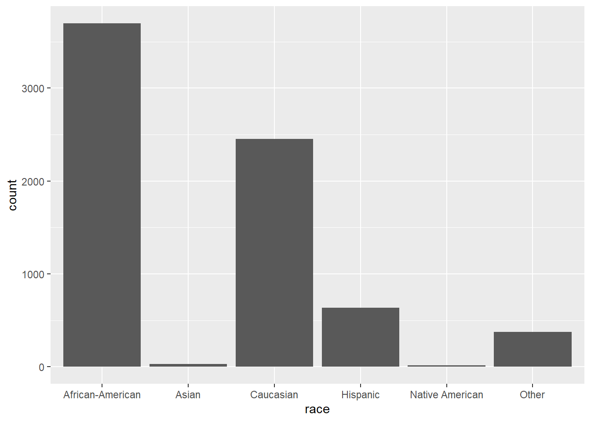
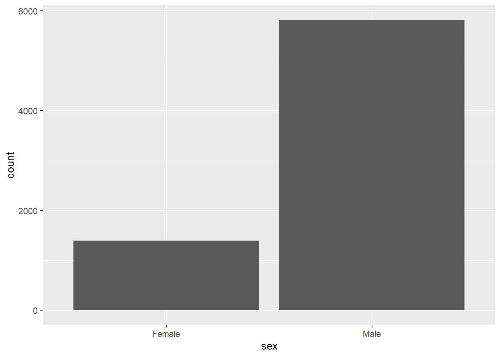
Preprocess data
ProPublica implemented a few pre-processing steps. First, they generated a subset of the data with a few variables of interest. Here, we select even fewer variables, keeping only those that we will use in this notebook. We also relabel the race column.
cols <-
c("id", "age", "c_charge_degree", "race", "age_cat",
"score_text", "sex", "priors_count...15",
"days_b_screening_arrest", "decile_score...12",
"is_recid", "two_year_recid")
compas_selected <-
compas_raw |>
select(
all_of(cols)
) |>
rename(
priors_count = priors_count...15,
decile_score = decile_score...12
) |>
mutate(
race = case_when(
race == "African-American" ~ "Black",
race == "Caucasian" ~ "White",
TRUE ~ race
)
)
head(compas_selected)## # A tibble: 6 × 12
## id age c_charge_degree race age_cat score_text sex priors_count
## <dbl> <dbl> <chr> <chr> <chr> <chr> <chr> <dbl>
## 1 1 69 F Other Greater than … Low Male 0
## 2 3 34 F Black 25 - 45 Low Male 0
## 3 4 24 F Black Less than 25 Low Male 4
## 4 5 23 F Black Less than 25 High Male 1
## 5 6 43 F Other 25 - 45 Low Male 2
## 6 7 44 M Other 25 - 45 Low Male 0
## # ℹ 4 more variables: days_b_screening_arrest <dbl>, decile_score <dbl>,
## # is_recid <dbl>, two_year_recid <dbl>## Rows: 7,214
## Columns: 12
## $ id <dbl> 1, 3, 4, 5, 6, 7, 8, 9, 10, 13, 14, 15, 16, 18…
## $ age <dbl> 69, 34, 24, 23, 43, 44, 41, 43, 39, 21, 27, 23…
## $ c_charge_degree <chr> "F", "F", "F", "F", "F", "M", "F", "F", "M", "…
## $ race <chr> "Other", "Black", "Black", "Black", "Other", "…
## $ age_cat <chr> "Greater than 45", "25 - 45", "Less than 25", …
## $ score_text <chr> "Low", "Low", "Low", "High", "Low", "Low", "Me…
## $ sex <chr> "Male", "Male", "Male", "Male", "Male", "Male"…
## $ priors_count <dbl> 0, 0, 4, 1, 2, 0, 14, 3, 0, 1, 0, 3, 0, 0, 1, …
## $ days_b_screening_arrest <dbl> -1, -1, -1, NA, NA, 0, -1, -1, -1, 428, -1, 0,…
## $ decile_score <dbl> 1, 3, 4, 8, 1, 1, 6, 4, 1, 3, 4, 6, 1, 4, 1, 3…
## $ is_recid <dbl> 0, 1, 1, 0, 0, 0, 1, 0, 0, 1, 0, 1, 0, 0, 1, 1…
## $ two_year_recid <dbl> 0, 1, 1, 0, 0, 0, 1, 0, 0, 1, 0, 1, 0, 0, 1, 1…Take a moment to get a feel for the variables and structure of the data. ProPublica filtered the above data by removing rows where:
- The COMPAS score is missing.
- The charge date of the defendant’s COMPAS-scored crime was not within 30 days from the date of arrest. ProPublica assumed that the offense may not be correct in these cases.
- The recividist flag is “-1”. In such cases, ProPublica could not find a COMPAS record at all.
- The charge is “O”. These are ordinary traffic offenses and do not result in jail time.
We implement these conditions here:
compas <-
compas_selected |>
filter(
score_text != "N/A",
days_b_screening_arrest <= 30,
days_b_screening_arrest >= -30,
is_recid != -1,
c_charge_degree != "O"
)Note that ProPublica only included people who had recidivated within two years or had at least two years outside a correctional facility. This pre-processing step is “baked in” to the data that we imported from GitHub in this notebook.
Check the dimensions (i.e. the number of variables and observations) of the imported (compas_raw) and preprocessed (compas) data:
## Imported data: 7214, 53## Data after selecting variables: 7214, 12## Data after filtering observations: 6172, 12Take the additional step of making sure that the decile score (discussed below) is numeric:
Inspect data again
Re-inspect salient variables in the data after the preprocessing steps. Plot the distribution of age, race, and sex in the preprocessed data (compas) and compare these distributions to the imported data (compas_raw):
compas_compare <-
bind_rows(
mutate(compas, source = "raw"),
mutate(compas_raw, source = "preprocessed"),
)
compas_compare |>
ggplot(aes(age, fill = source)) +
geom_histogram(alpha = 0.5, position = "identity")## `stat_bin()` using `bins = 30`. Pick better value with `binwidth`.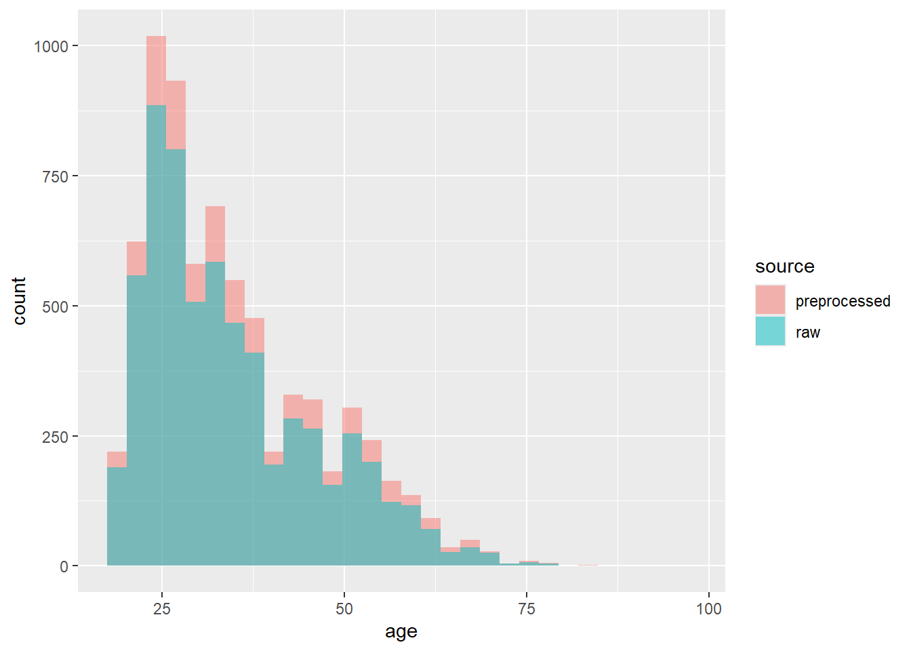
Observe that we are iterating through the data analysis: import, inspect & profile, preprocess, and profile again. Generate a crosstab summarizing the number of observations by race and sex:
##
## Female Male
## Asian 2 29
## Black 549 2626
## Hispanic 82 427
## Native American 2 9
## Other 58 285
## White 482 1621Exploratory analysis
Let’s turn our focus to the primary variable of interest: the COMPAS recidivism score. In this exploratory analysis, we are interested in the variable named decile_score.
The ProPublica analysis notes: “Judges are often presented with two sets of scores from the COMPAS system: one that classifies people into high, medium or low risk, and a corresponding decile score.”
Plot the distribution of decile_score for males and for females. To what extent do these distributions differ?
# plot decile score by sex
compas |>
ggplot(aes(x = decile_score)) +
geom_histogram(
aes(y = stat(density * width)),
binwidth = 1, color = "white"
) +
scale_x_continuous(breaks = 1:10) +
scale_y_continuous("proportion") +
facet_wrap(~ sex)
What about race?
# plot decile score by race
compas |>
filter(race %in% c("Black", "White")) |>
ggplot(aes(x = decile_score)) +
geom_histogram(
aes(y = after_stat(density * width)),
binwidth = 1, color = "white"
) +
scale_x_continuous(breaks = 1:10) +
scale_y_continuous("proportion") +
facet_wrap(~ race)üëâ Exercise
Summarise the difference between the distribution of decile scores for Black defendants and White defendants in this text cell:
Your answer here
Risk labels
Plot the distribution of COMPAS-assigned “risk labels” (the variable is named score_text) for Black defendants and White defendants:
# plot risk labels by race
compas |>
mutate(
score_text = factor(
score_text,
levels = c("Low", "Medium", "High")
)
) |>
filter(race %in% c("Black", "White")) |>
ggplot(aes(x = score_text, group = race, fill = race)) +
geom_bar(aes(y = after_stat(prop)), position = "dodge") +
scale_y_continuous("proportion")
Bias in COMPAS
ProPublica focused on racial bias in the COMPAS algorithm. In general terms, ProPublica analyzed (i) how the risk scores vary by race and (ii) the extent to which the risk labels assigned to defendants matches up with their observed recidivism and how this varies by race. We will (approximately) reproduce this analysis below.
Preprocess data for logistic regression
ProPublica used a logistic regression model to analyze variation in the risk scores by race. In their analysis, they considered a “medium” and “high” risk score to be “high”, and “low” to be low. We will prepare the data accordingly, with low = 0 and high = 1:
compas <-
compas |>
mutate(score_binary = ifelse(score_text == "Low", 0, 1))
table(compas$score_text, compas$score_binary)##
## 0 1
## High 0 1144
## Low 3421 0
## Medium 0 1607Estimate the logistic regression model
model <-
glm(
score_binary ~
priors_count +
two_year_recid +
c_charge_degree +
age_cat +
race +
sex,
data = compas,
family = binomial(link = "logit")
)
summary(model)##
## Call:
## glm(formula = score_binary ~ priors_count + two_year_recid +
## c_charge_degree + age_cat + race + sex, family = binomial(link = "logit"),
## data = compas)
##
## Deviance Residuals:
## Min 1Q Median 3Q Max
## -2.9966 -0.7919 -0.3303 0.8121 2.6024
##
## Coefficients:
## Estimate Std. Error z value Pr(>|z|)
## (Intercept) -1.55869 0.48236 -3.231 0.00123 **
## priors_count 0.26895 0.01110 24.221 < 2e-16 ***
## two_year_recid 0.68586 0.06402 10.713 < 2e-16 ***
## c_charge_degreeM -0.31124 0.06655 -4.677 2.91e-06 ***
## age_catGreater than 45 -1.35563 0.09908 -13.682 < 2e-16 ***
## age_catLess than 25 1.30839 0.07593 17.232 < 2e-16 ***
## raceBlack 0.73162 0.47708 1.534 0.12514
## raceHispanic -0.17398 0.48897 -0.356 0.72199
## raceNative American 1.64862 0.89972 1.832 0.06689 .
## raceOther -0.57193 0.49897 -1.146 0.25170
## raceWhite 0.25441 0.47821 0.532 0.59472
## sexMale -0.22127 0.07951 -2.783 0.00539 **
## ---
## Signif. codes: 0 '***' 0.001 '**' 0.01 '*' 0.05 '.' 0.1 ' ' 1
##
## (Dispersion parameter for binomial family taken to be 1)
##
## Null deviance: 8483.3 on 6171 degrees of freedom
## Residual deviance: 6168.4 on 6160 degrees of freedom
## AIC: 6192.4
##
## Number of Fisher Scoring iterations: 5Interpret estimates
Take a moment to read through the model summary.
One way to interpret the estimates is by calculating odds ratios. To calculate odds ratios, we take the exponential of the coefficients. For example, taking the exponential of the coefficient for defendants aged less than 25 (\(\beta_{age<25}\) = 1.30839) will return the odds of score_text taking the value “high” for those aged under 25 relative to those aged 25-45. Calculate this odds ratio here:
## [1] 3.700212In words, the odds that COMPAS labeled a defendant as “high risk” of recidivism is 3.7 times greater for someone aged 25-45.
Next, calculate the odds ratio for all of the coefficients in the model:
## (Intercept) priors_count two_year_recid
## 0.2104123 1.3085835 1.9854836
## c_charge_degreeM age_catGreater than 45 age_catLess than 25
## 0.7325374 0.2577840 3.7002128
## raceBlack raceHispanic raceNative American
## 2.0784485 0.8403136 5.1998120
## raceOther raceWhite sexMale
## 0.5644338 1.2897066 0.8015029Take a moment to read through these coefficients. What is the reference category for each variable? (e.g. For females, the reference category is male.) Think in terms of comparisons, for example:
A person with a value of \[     \] on variable \[     \] is \[     \] times more likely to be labeled high risk compared to a person with a value of \[     \] on variable \[     \]
In the female example above, this could be stated:
“A person with a value of female on variable sex is 1.25 times more likely to be labeled high risk compared to a person with a value of male on variable sex”
Of course, we should be more straightforward when writing up results. “A person with a value of male on variable sex” is rather verbose; “males” will suffice. Interpreting model estimates in straightforward terms is an underrated skill.
Predictive Accuracy
In terms of fairness, ProPublica focused on the predictive accuracy of the COMPAS algorithm. In this case, predictive accuracy refers to the concordance between a person’s recidivism and the label assigned to that person by the COMPAS algorithm. For instance, how often did COMPAS predict that a person was at “high risk” of recidivism and that person in fact recidivated within two years? We can think of this in terms of a 2x2 table:
| Did not recidivate | Recidivated | |
|---|---|---|
| Labeled high risk | A | B |
| Labeled low risk | C | D |
ProPublica reported A and D for black defendants and white defendants, separately.
üëâ Exercise
What are generic terms for A and D? Why focus on A and D?
Your answer here
ProPublica used a somewhat different data set to calculate the predictive accuracy of COMPAS. In this section we will use the compas data we preprocessed above for brevity. Note therefore that the numbers we calculate below will not match those reported by ProPublica. Let’s generate a crosstab of the variable denoting recidivism within two years (is_recid) and the binary score variable (score_binary):
##
## 0 1
## 0 2248 934
## 1 1173 1817Based on this crosstab, input the number of true positives, false positives, true negatives, and false negatives:
You can calculate the false positive rate by taking FP / (FP + TN), where FP is the number of false positives and TN is the number of true negatives. Calculate the false positive rate:
glue(
"All defendants, false positive rate:
{(false_positive / (false_positive + true_negative) * 100)}"
)## All defendants, false positive rate:
## 29.3526084223759Now calculate the false negative rate: (hint, replace the terms in the false positive rate formula in the previous text cell)
glue(
"All defendants, false negative rate:
{(false_negative / (false_negative + true_positive) * 100)}"
)## All defendants, false negative rate:
## 39.2307692307692How do the false positive and false negative rates vary by race? Calculate the false positive rate and false negative rate for White defendants:
rates <-
compas |>
filter(race %in% c("Black", "White")) |>
group_by(race) |>
count(score_binary, is_recid)# white defendants
w_tp = 430
w_fp = 266
w_tn = 963
w_fn = 444
glue("White defendants, false positive rate: {(w_fp / (w_fp + w_tn) * 100)}")## White defendants, false positive rate: 21.6436126932465## White defendants, false negative rate: 50.8009153318078Lastly, calculate the false positive rate and false negative rate for Black defendants:
b_tp = 1248
b_fp = 581
b_tn = 821
b_fn = 525
glue("Black defendants, false positive rate: {(b_fp / (b_fp + b_tn) * 100)}")## Black defendants, false positive rate: 41.4407988587732## Black defendants, false negative rate: 29.6108291032149Take a moment to review and compare the false positive rates and false negative rates above.
Demonstration 2: The Basics of Decision Trees and Related Methods
In this demonstration, you will learn about decision trees: regression trees are used when the outcome is quantitative and classification trees used when the outcome is categorical.
The basics are quite simple (even simpler than linear regression!): we split the predictor space to a number of regions and the prediction for every outcome in a region is the mean (for regression) or mode (for classification) of the observations in that region. Given that the structure of decision trees resemble human decision-making (to a certain extent) and that the output can be easily illustrated, this makes them quite easy to interpret, even by non-experts. Also, there is no need for dummy variables since trees easy handle categorical predictors.
We will explore each of these in greater detail in the walkthrough
below. Before beginning, you will need to install and load the gbm,
tree, and randomForest packages. The tree library is used to
construct classification and regression trees.
Decision Trees
Classification Trees
For the tasks below, you will require the Carseats dataset. This
dataset is part of the ISRL2 package from the core textbook (James et.
al 2021). By loading the package, the Carseats dataset will load
automatically.
The Carseats is a simulated dataset on sales of child car seats at different stores. There are 400 observations on 11 variables.
| Variable Name | Variable Description |
|---|---|
| Sales | Unit sales (in thousands) at each location |
| CompPrice | Price charged by competitor at each location |
| Income | Community income level (in thousands of dollars) |
| Advertising | Local advertising budget for company at each location (in thousands of dollars) |
| Population | Population size in region (in thousands) |
| Price | Price company charges for car seats at each site |
| ShelveLoc | A factor with levels Bad, Good and Medium indicating the quality of the shelving location for the car seats at each site |
| Age | Average age of the local population |
| Education | Education level at each location |
| Urban | A factor with levels No and Yes to indicate whether the store is in an urban or rural location |
| US | A factor with levels No and Yes to indicate whether the store is in the US or not |
We will now explore how classification trees can be used to predict whether sales of car seats are high or low. Here Sales is continuous and so we create a new binary variable such that all unit sales over 8,000 dollars are classed as ‘Yes’ (i.e. so high sales) and everything else and ‘No’ (i.e. so low sales). We store this as a vector with our response values for the test set for evaluating our model later and we also add this as a variable in our dataset.
attach(Carseats)
High <- factor(ifelse(Sales <= 8, "No", "Yes"))
Carseats <- data.frame(Carseats, High)Let’s now split the data into training and test sets. We randomly select
half of the observations from the dataset for our training set and we
allocate the rest to the test set (Carseats.test).
Now let’s fit the tree using the tree() function from the package
tree that you have just installed. As shown below, the basic syntax is
quite simple. Since we want to use all variables in the data object as
predictors, there is no need to list them all in the formula. Instead,
we can simply use a dot. However, we must drop the original Sales
variable for obvious reasons. To fit the tree to the training data only,
we must subset the Carseats data using the train object which
contains a vector of the randomly selected indices that tells R which
values to subset.
To better understand trees, let’s explore the structure of our tree
visually first. We simply specify the name of the model and complement
the plot() function with the function text() within which we set the
pretty argument to 0 in order to include the category names for
categorical predictors.

Our first split occurs at Price, which indicates that this is the feature (i.e. variable) that is most important for classifying sales as high or not. From this point forward, further splits are made and the features at which these splits are made are referred to as internal nodes. The tree splits first on Price, thus dividing the dataset into two subsets based on whether Price is less than \(96.5\). This is our split criterion. The left side represents the subset within which price is less than \(96.5\) whilst the right side represents the subset within which price is equal to or greater than \(96.5\).
Let’s first consider the left side of the tree. The subsequent internal node is Population and the split criterion is such that population is less than \(414\) which means that within the subset where price is less than \(96.5\) (so the left side), the next most significant predictor is Population. Within population, it is ShelveLoc, then Age and so on. Hence, the tree continues to split based on these features and values, further refining the subsets.
The right side represents the subset within which price is greater than or equal to \(96.5\). Our subsequent node after Price is ShelveLoc which is a factor variable. This means that within the subset where Price is greater than or equal to \(96.5\), the location of the shelves is the next most significant predictor. From there onward, as on the left side, the tree continues to split further and further at subsequent internal nodes according to specific split criteria. Therefore, since the feature at which the first split occurs represents the feature with the most importance regarding classification, the internal nodes that are closest to this node are generally more important than those closer to the bottom of the tree.
The vertical lines that connect a feature with an outcome are called branches. Each branch represents a decision based on a feature value, which then progresses to the next internal node or finally, to a leaf node. A leaf node (also called a terminal node) are the nodes at the bottom of the tree that provide the final classification. Each leaf node represents a final decision regarding the classification (e.g., “Yes” or “No” for high sales). The path from the root to a leaf node gives the sequence of decisions made to classify an observation. Essentially, the splits on either side simply refine the classification until a decision is reached.
So we start off at the first split where \(Price < 96.5\). If \(Price < 96.5\) is true, we move on to the next node on the left hand-side which is \(Population < 414\). We follow subsequent nodes and branches based on the feature values of the observation and we reach a terminal (leaf) node with the final classification (e.g., “Yes” for high sales). So a terminal node is one from which no further splits occur. In summary, our tree make use of features to split the data into subsets to classify whether sales are high or not.
Now let’s explore the output of the tree in greater detail. If we just
type the name of the tree object, R prints output detailed information
about the tree structure that we illustrated . The first line of the
output:
node), split, n, deviance, yval, (yprob) * denotes terminal node
describes what each component of the output means.
## node), split, n, deviance, yval, (yprob)
## * denotes terminal node
##
## 1) root 200 270.000 No ( 0.59500 0.40500 )
## 2) Price < 96.5 40 47.050 Yes ( 0.27500 0.72500 )
## 4) Population < 414 31 40.320 Yes ( 0.35484 0.64516 )
## 8) ShelveLoc: Bad,Medium 25 34.300 Yes ( 0.44000 0.56000 )
## 16) Age < 64.5 17 20.600 Yes ( 0.29412 0.70588 )
## 32) Education < 13.5 7 0.000 Yes ( 0.00000 1.00000 ) *
## 33) Education > 13.5 10 13.860 Yes ( 0.50000 0.50000 )
## 66) Education < 16.5 5 5.004 No ( 0.80000 0.20000 ) *
## 67) Education > 16.5 5 5.004 Yes ( 0.20000 0.80000 ) *
## 17) Age > 64.5 8 8.997 No ( 0.75000 0.25000 ) *
## 9) ShelveLoc: Good 6 0.000 Yes ( 0.00000 1.00000 ) *
## 5) Population > 414 9 0.000 Yes ( 0.00000 1.00000 ) *
## 3) Price > 96.5 160 201.800 No ( 0.67500 0.32500 )
## 6) ShelveLoc: Bad,Medium 135 154.500 No ( 0.74074 0.25926 )
## 12) Price < 124.5 82 107.700 No ( 0.63415 0.36585 )
## 24) Age < 49.5 34 45.230 Yes ( 0.38235 0.61765 )
## 48) CompPrice < 130.5 21 28.680 No ( 0.57143 0.42857 )
## 96) Population < 134.5 6 0.000 No ( 1.00000 0.00000 ) *
## 97) Population > 134.5 15 20.190 Yes ( 0.40000 0.60000 )
## 194) Population < 343 7 5.742 Yes ( 0.14286 0.85714 ) *
## 195) Population > 343 8 10.590 No ( 0.62500 0.37500 ) *
## 49) CompPrice > 130.5 13 7.051 Yes ( 0.07692 0.92308 ) *
## 25) Age > 49.5 48 46.330 No ( 0.81250 0.18750 )
## 50) CompPrice < 124.5 28 14.410 No ( 0.92857 0.07143 )
## 100) Price < 101.5 8 8.997 No ( 0.75000 0.25000 ) *
## 101) Price > 101.5 20 0.000 No ( 1.00000 0.00000 ) *
## 51) CompPrice > 124.5 20 25.900 No ( 0.65000 0.35000 )
## 102) Price < 119 14 19.410 No ( 0.50000 0.50000 )
## 204) Advertising < 10.5 9 11.460 No ( 0.66667 0.33333 ) *
## 205) Advertising > 10.5 5 5.004 Yes ( 0.20000 0.80000 ) *
## 103) Price > 119 6 0.000 No ( 1.00000 0.00000 ) *
## 13) Price > 124.5 53 33.120 No ( 0.90566 0.09434 )
## 26) Population < 393.5 34 0.000 No ( 1.00000 0.00000 ) *
## 27) Population > 393.5 19 21.900 No ( 0.73684 0.26316 )
## 54) CompPrice < 143.5 13 7.051 No ( 0.92308 0.07692 ) *
## 55) CompPrice > 143.5 6 7.638 Yes ( 0.33333 0.66667 ) *
## 7) ShelveLoc: Good 25 31.340 Yes ( 0.32000 0.68000 )
## 14) Income < 43 7 8.376 No ( 0.71429 0.28571 ) *
## 15) Income > 43 18 16.220 Yes ( 0.16667 0.83333 )
## 30) US: No 6 8.318 Yes ( 0.50000 0.50000 ) *
## 31) US: Yes 12 0.000 Yes ( 0.00000 1.00000 ) *So let’s take 2) Price < 96.5 40 47.050 Yes( 0.27500 0.72500 )` as
an example.
2)denotes the unique identifier of the node (so this is node 2),
Price < 96.5is the condition of the split40is the number of observations that reach the node *in this case 40)47.050is the deviance (i.e. impurity of the node after the split)Yesis the predicted class for this node( 0.27500 0.72500 )are the class probabilities and so the proportion of observations belonging to each class at the node (in other words the fraction of observations in that branch that take on values ofYesandNo)
- the
*denotes a terminal node
Now you may wonder about the root node (1)). This node (node 1)
represents the entire dataset with 200 observations in total, the most
common class at the root node (in this case No) and the proportion of
classes (i.e. Yes and No) in the dataset. The root node corresponds to
the decision to split at Price < 96.5 in the graphic, but essentially,
it represents the entire dataset before any splits are made; as you
can see, there is no information about split for the root node itself
since it doesn’t split. In other words, the root node starts the
solitting process, and each subsequent split aims to further refine the
classification by reducing impurity (i.e. variance), with the deviance
value helping in measuring the effectiveness of each split. Therefore
Price < 96.5 is the condition for the split the root node.
To better understand how each feature and split contribute to the final prediction, we must consider not only explore the structure as a whole, but also consider how the data are split into branches based on different features, how probabilities change at each node, and finally, what final predictions are provided by the terminal nodes given the path from the root node.
Starting at the root node, the splits are conducted according to the following conditions: Price < 96.5, Population < 414, ShelveLoc: Bad, Medium, Age < 64.5, and Education < 13.5.
Therefore:
- Price < 96.5: Among stores with prices lower than 96.5 (40 stores in total), 72.5% are likely have high sales (hence High = “Yes”).
- Population < 414: Of these, 64.5% in lower population areas tend to
have high sales.
- ShelveLoc: Bad, Medium: Among these, 56.0% stores with poor shelving
location still tend to have high sales
- Age < 64.5: Of these, in regions where the average age of the
population is less than 64.5, 70.6% of stores are still likely have
high sales
- Education < 13.5: Finally, in areas where education is less than 13.5, stores are still likely to have high sales with 100% probability.
As with other models we’ve explored so far, summary() also comes in
handy. The output contains additional information.
##
## Classification tree:
## tree(formula = High ~ . - Sales, data = Carseats, subset = train)
## Variables actually used in tree construction:
## [1] "Price" "Population" "ShelveLoc" "Age" "Education"
## [6] "CompPrice" "Advertising" "Income" "US"
## Number of terminal nodes: 21
## Residual mean deviance: 0.5543 = 99.22 / 179
## Misclassification error rate: 0.115 = 23 / 200- variables actually used in tree construction: here we note 9
variables (Urban is missing)
- number of terminal nodes: also referred to as ‘leaves’, the tree has
21 terminal nodes; these represent the final decision or
classification outcome.
- residual mean deviance: For classification trees, the deviance is
given by \(-2 \sum_m \sum_k n_{mk} \log \hat{p}_{mk}\), where \(n_{mk}\)
is the number of observations in the \(m\)th terminal node that belong
to the \(k\)th class. The smaller the deviance, the better the fit to
the training data. The residual mean deviance is the deviance
divided by \(n-|{T}_0|\).
- misclassification error rate: this is the training error rate, which in this case is \(11.5\%\). This seems quite good.
Now that you have a good grasp of how trees are built and interpreted,
let’s evaluate the performance of the algorithm on the test data.The
predict() function can be used for this purpose. In the case of a
classification tree, the argument type = "class" instructs R to
return the actual class prediction. This approach leads to correct
predictions for around \(77 \%\) of the locations in the test data set.
High.test <- High[-train]
Carseats.test <- Carseats[-train, ]
tree.pred <- predict(tree.carseats, Carseats.test, type = "class")
table(tree.pred, High.test)## High.test
## tree.pred No Yes
## No 104 33
## Yes 13 50## [1] 0.77(If you re-run the predict() function then you might get slightly
different results, due to “ties”: for instance, this can happen when the
training observations corresponding to a terminal node are evenly split
between Yes and No response values.)
Next, we consider whether pruning the tree might lead to improved results. Pruning is used to reduce size and complexity of the tree and the main goal is to remove parts of the tree that do not provide additional power in predicting target variables. Pruning is therefore very important in preventing overfitting, improving interpretability and enhancing the performance of the tree. One approach is cost-complexity pruning which involves pruning the tree such that it balances the trade-off between the accuracy and size of the tree (by minimising the cost-complexity criterion).
Ok so let’s see how this works in practice. The function cv.tree()
performs \(k\)-fold cross-validation in order to determine the optimal
level of tree complexity (i.e. to find the deviance or number of
misclassifications as a function of the cost-complexity parameter \(k\)).
This approach involves growing the tree to its full depth and then
removing nodes that provide little predictive power. We use the argument
FUN = prune.misclass to tell R that we want the classification error
rate to guide the cross-validation and pruning process, rather than the
default for the cv.tree() function, which is deviance. The cv.tree()
function reports the number of terminal nodes of each tree considered
(size) as well as the corresponding error rate and the value of the
cost-complexity parameter used (k).
The output contains several pieces of important information such as size, deviance and the values for \(k\). Each of these is paired with the other, and so the lowest deviance which is 74 (i.e. 74 cross-validation errors) corresponds to a tree of size 9 (i.e. a tree with 9 terminal nodes) and a value of 1.4 for \(k\). The lower the value for \(k\), the less pruning required.
## [1] "size" "dev" "k" "method"## $size
## [1] 21 19 14 9 8 5 3 2 1
##
## $dev
## [1] 75 75 75 74 82 83 83 85 82
##
## $k
## [1] -Inf 0.0 1.0 1.4 2.0 3.0 4.0 9.0 18.0
##
## $method
## [1] "misclass"
##
## attr(,"class")
## [1] "prune" "tree.sequence"We can also plot the error rate as a function of both size and k.
par(mfrow = c(1, 2))
plot(cv.carseats$size, cv.carseats$dev, type = "b")
plot(cv.carseats$k, cv.carseats$dev, type = "b")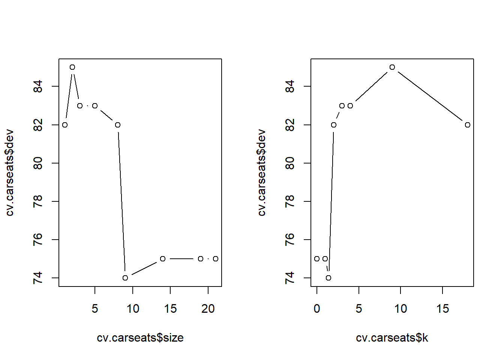
We now apply the prune.misclass() function in order to prune the tree
to obtain the nine-node tree as indicated by the cross-validation
results. We specify the size using the best argument.
prune.carseats <- prune.misclass(tree.carseats, best = 9)
plot(prune.carseats)
text(prune.carseats, pretty = 0)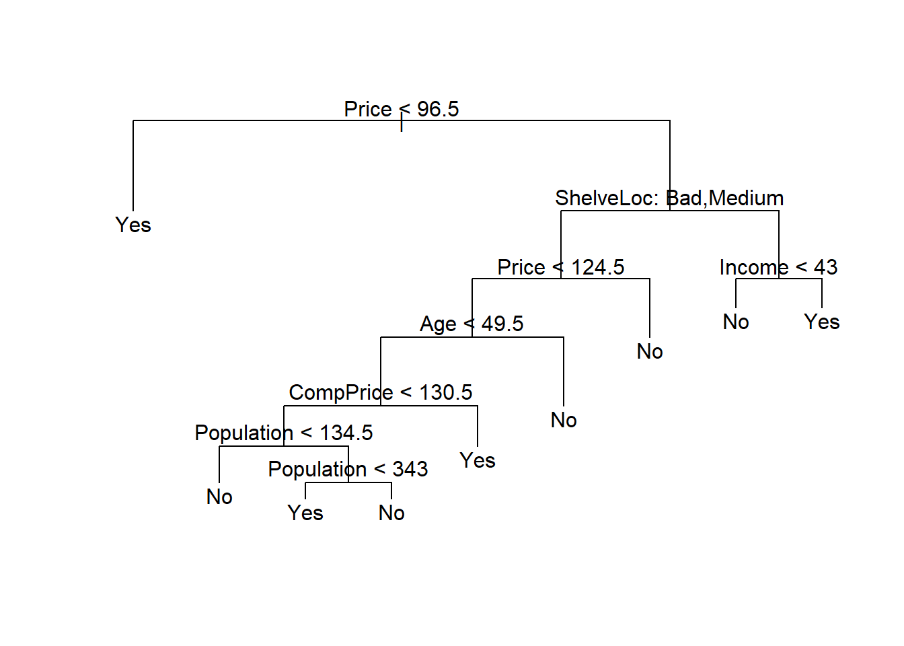
How well does this pruned tree perform on the test data set? Once again,
we apply the predict() function.
## High.test
## tree.pred No Yes
## No 97 25
## Yes 20 58## [1] 0.775Now \(77.5 \%\) of the test observations are correctly classified, so not only has the pruning process produced a more interpretable tree, but it has also slightly improved the classification accuracy.
To illustrate what happens if we increase the size of the tree, let’s
set the best argument to 14. As you can see, a tree of size 14
produces a more complex tree that is somewhat harder to interpret and
the fraction of correct predictions is also slightly lower.
prune.carseats <- prune.misclass(tree.carseats, best = 14)
plot(prune.carseats)
text(prune.carseats, pretty = 0)
## High.test
## tree.pred No Yes
## No 102 31
## Yes 15 52## [1] 0.77Regression Trees
For the tasks below, you will require the Boston dataset. This
dataset is part of the ISRL2 package from the core textbook (James et.
al 2021).
The Boston is a datast that contains housing values in 506 suburbs of Boston. There are 13 variables.
| Variable Name | Variable Description |
|---|---|
| crim | per capita crime rate by town |
| zn | proportion of residential land zoned for lots over 25,000 sq.ft |
| indus | proportion of non-retail business acres per town |
| chas | Charles River dummy variable (= 1 if tract bounds river; 0 otherwise) |
| nox | nitrogen oxides concentration (parts per 10 million) |
| rm | average number of rooms per dwelling |
| age | proportion of owner-occupied units built prior to 1940 |
| dis | weighted mean of distances to five Boston employment centers |
| rad | index of accessibility to radial highways |
| tax | full-value property-tax rate per $10,000 |
| ptratio: | pupil-teacher ratio by town |
| lstat | lower status of the population (percent). |
| medv | median value of owner-occupied homes in $1000s. |
We will now explore how a regression decision tree can be used to predict the median value of owner-occupied homes (medv) using all variables in the dataset.
Let’s split the data into a training and test set.
We fit the model in the same way as we did for the classification tree.
##
## Regression tree:
## tree(formula = medv ~ ., data = Boston, subset = train)
## Variables actually used in tree construction:
## [1] "rm" "lstat" "crim" "age"
## Number of terminal nodes: 7
## Residual mean deviance: 10.38 = 2555 / 246
## Distribution of residuals:
## Min. 1st Qu. Median Mean 3rd Qu. Max.
## -10.1800 -1.7770 -0.1775 0.0000 1.9230 16.5800The structure of the results are similar to those of the classification tree. But note that for our model here, only four variables were used to construct the tree, namely rm, lstat, crim, age. We saw this already in the case of the classification tree where one of the variables was missing.
Why is this the case? The algorithm selects variables according to their
role in improving predictive accuracy at each split. The reason for this
is that we did not add any further arguments to this function and so we
allowed R to use the default settings for tree growth, which include
thresholds for minimum deviance, minimum node size, and maximum tree
depth. By not specifying the control parameter, the function uses
default settings for tree growth, which include thresholds for minimum
deviance, minimum node size, and maximum tree depth (31), preventing the
tree from growing excessively large. However, it is important to note
that we could have fit a much bigger tree, by passing
control = tree.control(nobs = length(train), mindev = 0) into the
tree() function.
Since in our case only four variables were selected, this suggests that only these four provide a sufficiently significant improvement in reducing variance at different splits. There are several reasons for this, besides the predictive power of the variables and the associated impurity, such as sample size, correlation among variables, and complexity. We also note that there are 7 terminal nodes, and that the residual mean deviance is 10.38. In the context of a regression tree, the deviance is simply the sum of squared errors for the tree.
## node), split, n, deviance, yval
## * denotes terminal node
##
## 1) root 253 19450.0 21.79
## 2) rm < 6.9595 222 6794.0 19.35
## 4) lstat < 14.405 135 1816.0 22.51
## 8) rm < 6.543 111 763.1 21.38 *
## 9) rm > 6.543 24 256.5 27.73 *
## 5) lstat > 14.405 87 1554.0 14.46
## 10) crim < 11.4863 61 613.8 16.23
## 20) age < 93.95 30 245.7 18.09 *
## 21) age > 93.95 31 164.1 14.43 *
## 11) crim > 11.4863 26 302.7 10.32 *
## 3) rm > 6.9595 31 1929.0 39.21
## 6) rm < 7.553 16 505.5 33.42 *
## 7) rm > 7.553 15 317.0 45.38 *In terms of the details of each node, the results are structured similarly to a classification tree. So for example, for the root node we have 253 observations, with a total deviance of 19450.0 and a predicted value (mean response) of 21.79. Our most important feature appears to be the average number of rooms per dwelling (rm) and our split criterion is \(rm < 6.9595\).
Let’s visualise the tree.

On the left hand side we have multiple splits corresponding to less than
7 average number of rooms per dwelling whilst of the right side we have
a single split corresponding to 7 or more rooms per dwelling. We also
note one more split in the same variable before the terminal nodes which
tell us the median house prices of owner-occupied homes. For homes in
census tracts in which rm >= 7.553, the regression tree predicts a
median house price of \(45.38\).
Now we apply \(k\) fold cross-validation and plot the results to see
whether pruning the tree will improve performance. The cv.tree() runs
\(k\)-fold cross-validation to find the deviance or number of
misclassifications as a function of the cost-complexity parameter \(k\).

In this case, the most complex tree under consideration is selected by cross-validation and so we use the unpruned tree to make predictions on the test set.
yhat <- predict(tree.boston, newdata = Boston[-train, ])
boston.test <- Boston[-train, "medv"]
plot(yhat, boston.test)
abline(0, 1)
## [1] 35.28688The test set MSE associated with the regression tree is \(35.29\). The square root of the MSE is therefore around \(5.941\), indicating that this model leads to test predictions that are (on average) within approximately \(5.941\) of the true median home value for the census tract.
Ensemble Methods
Despite the simplicity of decision trees, this approach is not necessarily competitive to other supervised approaches we explored so far in the course, particularly due to high variance, but remember that this depends on context. For example, when dealing with complex and highly non-linear relationships, it is possible for decision trees to outperform more classic supervised learning approaches; we can assess performance using either cross-validation or the validation set approach. Do remember that selecting a statistical learning method by only relying on the test error may not always be sufficient and we may prefer a decision tree simply because it is easier to interpret and illustrate.
Nevertheless, since trees do suffer from high variance and are not very robust with respect to changes in the data, how can we improve prediction accuracy? Well, we can implement approaches that, at their core, rely on regression or classification trees as their main building blocks. These methods are referred to as ensemble methods. Below, we explore bagging, random forests, and boosting.
Bagging
Also called bootstrap aggregation, bagging is essentially
bootstrapping as you know it from earlier in the course but this time
used in a completely different context, that is, to reduce the variance
of a statistical learning method. It is particularly useful in the case
of decision trees precisely because these suffer from high variance.
Here we consider bagging for in the context of regression trees but it
can also be extended to classification trees as well. Also, bagging is
not restricted to decision trees but can be used for many regression
methods.
In this exercise, we continue with the Boston data and use the bagging
approach to predict median value of owner-occupied homes using all
variables in the dataset.
Using the randomForest package and the function with the same name, we
fit a bagging tree. In addition to the formula, we also must specify the
mtry and importance arguments. The argument mtry = 12 tells R that
all \(12\) predictors should be considered for each split of the tree,
whilst setting the importance argument to TRUE tells R to also
assess the importance of the predictors.
set.seed(1)
bag.boston <- randomForest(medv ~ ., data = Boston,
subset = train, mtry = 12, importance = TRUE)Now let’s have a look at the output. Note that the exact results
obtained may differ, depending on our R version and version of your
randomForest package.
##
## Call:
## randomForest(formula = medv ~ ., data = Boston, mtry = 12, importance = TRUE, subset = train)
## Type of random forest: regression
## Number of trees: 500
## No. of variables tried at each split: 12
##
## Mean of squared residuals: 11.40162
## % Var explained: 85.17Here we have a few pieces of important information. We have 500 trees in
total. This means that the bagging procedure built 500 decision trees on
different bootstrapped samples of the training data. In other words, for
a regression problem, the bagging procedures constructs B regression
trees using B bootstrapped training sets, and averages the resulting
predictions. There are 12 variables tried at each split; since it uses
all predictors (as specified by mtry), the trees are grown deep and
are NOT pruned. As we saw earlier with the decision trees, each
individual tree will have high variance (and low bias) but since the
bagging procedure averages all B trees, then this reduces the
variance.
The mean of squared residuals tells us the average squared difference between predicted and actual values. The percent variance explained is \(85.17\%\), which indicates a very good fit.
Right, so how about interpretation? Well, given that with bagging we
grow many trees, it is no longer possible to represent the results as a
single tree, and so the resulting model can be difficult to interpret.
Nevertheless, we can learn more about the importance of each predictor
using the varImpPlot() function from the randomForest package that
produces dotcharts.
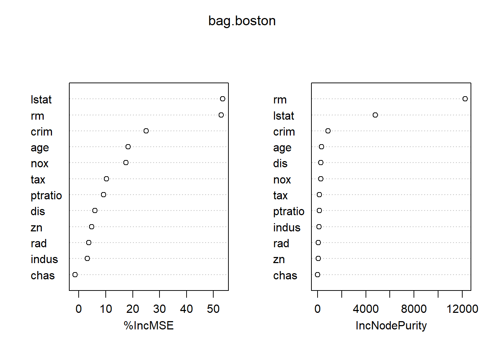
Or we can use the importance() function from the same package.
## %IncMSE IncNodePurity
## crim 24.948900 873.41761
## zn 4.824575 55.59650
## indus 3.185194 111.59825
## chas -1.407962 12.46427
## nox 17.549697 260.21778
## rm 52.852626 12231.53572
## age 18.325696 346.97045
## dis 6.046766 272.36149
## rad 3.677714 66.96846
## tax 10.224698 148.96271
## ptratio 9.254946 145.16605
## lstat 53.389661 4789.60479The first measure is the percent increase in mean squared error (%IncMSE) and is based upon the out-of-bag error estimation which provides an internal measure of model performance without the need for a separate validation set. This is because the out-of-bag observations are observations that were not used to fit the model and were instead used to validate the model (usually only two thirds of the observations are used to fit the model).
The second measure is the increase in node purity (IncNodePurity) which
reflects the total decrease in node impurity that results from splits
over that variable, averaged over all trees. In the case of regression
trees, the node impurity is measured by the training RSS, and for
classification trees by the deviance. By far, rm and lstat seem to
be the most important predictors of the model.
But how well does this bagged model perform on the test set?
yhat.bag <- predict(bag.boston, newdata = Boston[-train, ])
plot(yhat.bag, boston.test)
abline(0, 1)
## [1] 23.41916The test set MSE associated with the bagged regression tree is lower than the test MSE for an optimally-pruned single tree, but not by much…
We saw earlier that the bagging was performed using 500 trees. We can
customise the number of trees by telling R how many trees to ‘grow’
using the ntree() argument.
bag.boston <- randomForest(medv ~ ., data = Boston,
subset = train, mtry = 12, ntree = 25)
yhat.bag <- predict(bag.boston, newdata = Boston[-train, ])
mean((yhat.bag - boston.test)^2)## [1] 25.75055With 25 trees, we see a slight increase in the test MSE and if we have a look at the results, we also see a reduction in the variance explained.
##
## Call:
## randomForest(formula = medv ~ ., data = Boston, mtry = 12, ntree = 25, subset = train)
## Type of random forest: regression
## Number of trees: 25
## No. of variables tried at each split: 12
##
## Mean of squared residuals: 13.51568
## % Var explained: 82.42Random Forests
Bagging is a special case of a random forest which can be seen as an improvement over bagged trees because it decorrelates the trees. In other words, the random forest algorithm does not consider a majority of the available predictors at each split but only a subset. In this way, it address the limitation of bagged trees looking very similar to one another due to strong influences of particular predictors. As we saw earlier, bagging did improve the performance of the model but this improvement was not very dramatic relative to the individual optimally pruned tree we built at the beginning of the demonstration. Hence, random forests can make trees more reliable precisely because the average of the resulting trees have less variance.
Growing a random forest is accomplished in exactly the same way as
bagging, except that we use a smaller value of the mtry argument. By
default, randomForest() uses \(p/3\) variables when building a random
forest of regression trees, and \(\sqrt{p}\) variables when building a
random forest of classification trees. Here we will use mtry = 6.
set.seed(1)
rf.boston <- randomForest(medv ~ ., data = Boston,
subset = train, mtry = 6, importance = TRUE)
yhat.rf <- predict(rf.boston, newdata = Boston[-train, ])
mean((yhat.rf - boston.test)^2)## [1] 20.06644The test set MSE is lower than the test MSE for bagging and much lower than that of the decision tree.
Using the importance() function, we can view the importance of each
variable.
## %IncMSE IncNodePurity
## crim 19.435587 1070.42307
## zn 3.091630 82.19257
## indus 6.140529 590.09536
## chas 1.370310 36.70356
## nox 13.263466 859.97091
## rm 35.094741 8270.33906
## age 15.144821 634.31220
## dis 9.163776 684.87953
## rad 4.793720 83.18719
## tax 4.410714 292.20949
## ptratio 8.612780 902.20190
## lstat 28.725343 5813.04833Or display the resuts as dotcharts.
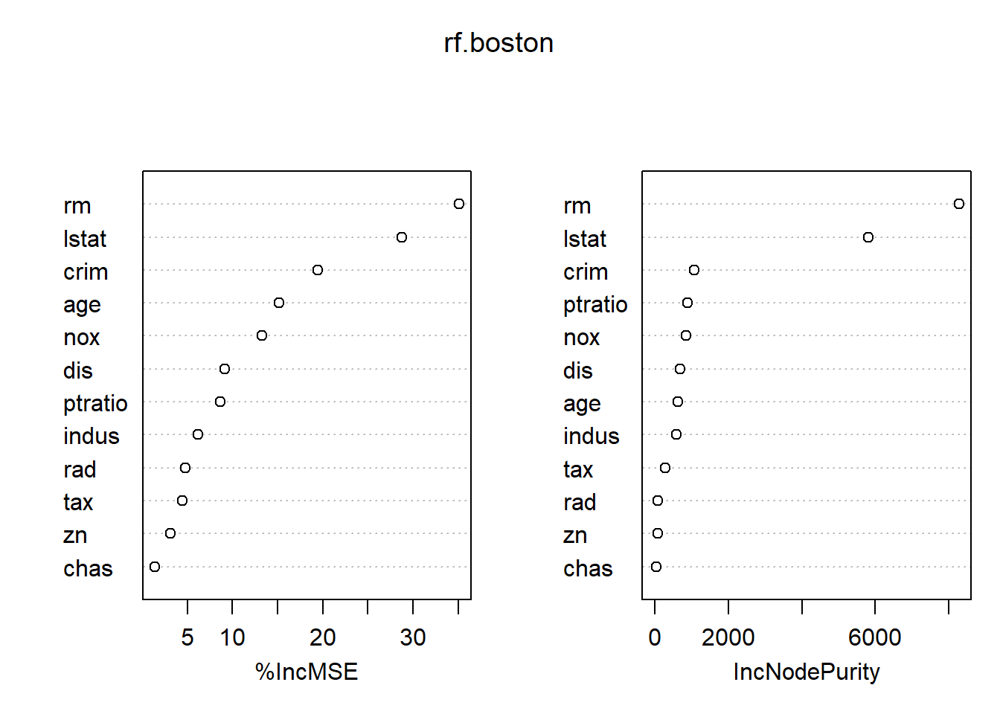
The results indicate that across all of the trees considered in the
random forest, the wealth of the community (lstat) and the house size
(rm) are by far the two most important variables.
Boosting
Finally, let’s consider boosting that works somewhat similarly to bagging except that it grows trees sequentially. In other words, each tree is built to correct the errors of the previous trees by focusing on the residuals (errors) of the model up to that point. Therefore, many small, shallow trees incrementally improve the performance of the model which often requires a large number of trees. There are three tuning parameters to boosting: the number of trees B (seleced using cross-validation), the shrinkage parameter \(\lambda\) (lambda) which controls the rate at which boosting learns, and the number of splits which controls complexity.
In this example, we focus on using boosting for a regression tree but this approach can also be used with other regression or classification methods.
Here, we continue with the Boston dataset and fit a boosting regression
tree on the same model as earlier. To implement boosting, we can use the
gbm() function from the gbm package. We run gbm() with the option
distribution = "gaussian" since this is a regression problem. The
argument n.trees = 5000 indicates that we want \(5000\) trees, and the
option interaction.depth = 4 limits the depth of each tree. Hence, we
are going for many, many trees of small size to incrementally improve
the model.
set.seed(1)
boost.boston <- gbm(medv ~ ., data = Boston[train, ],
distribution = "gaussian", n.trees = 5000,
interaction.depth = 4)For boosting, the summary() function works in a slightly different
way. It produces a relative influence plot and also outputs the relative
influence statistics.

## var rel.inf
## rm rm 44.48249588
## lstat lstat 32.70281223
## crim crim 4.85109954
## dis dis 4.48693083
## nox nox 3.75222394
## age age 3.19769210
## ptratio ptratio 2.81354826
## tax tax 1.54417603
## indus indus 1.03384666
## rad rad 0.87625748
## zn zn 0.16220479
## chas chas 0.09671228We again see that lstat and rm are by far the most important
variables.
We can also produce partial dependence plots for these two variables. The plots facilitate our interpretation of complex models results from ensemble methods (or other complex non-linear methods) by allowing us to visualise the effect of a single predictor on the response.


These plots illustrate the marginal effect of the selected variables on
the response after integrating out the other variables. In this case,
as we might expect, median house prices are increasing with rm and
decreasing with lstat.
We now use the boosted model to predict medv on the test set:
yhat.boost <- predict(boost.boston,
newdata = Boston[-train, ], n.trees = 5000)
mean((yhat.boost - boston.test)^2)## [1] 18.39057The test MSE obtained is the lowest thus far and therefore superior to the test MSE of random forests and bagging. If we want to, we can perform boosting with a different value of the shrinkage parameter \(\lambda\). The default value is \(0.001\), but this is easily modified. Here we take \(\lambda=0.2\).
boost.boston <- gbm(medv ~ ., data = Boston[train, ],
distribution = "gaussian", n.trees = 5000,
interaction.depth = 4, shrinkage = 0.2, verbose = F)
yhat.boost <- predict(boost.boston,
newdata = Boston[-train, ], n.trees = 5000)
mean((yhat.boost - boston.test)^2)## [1] 16.54778In this case, using \(\lambda=0.2\) leads to an even lower test MSE than \(\lambda=0.001\). Although typical values are 0.01 or 0.001, the choice for lambda will depend on the problem at hand.
In this demonstration, you have learned the basics of decision trees, bagging, random forests, and boosting. For a more in-depth exploration of these topics, please see the reading assigned for this section.
Answers
Practical 1
This practical was developed by Dr. Tatjana Kecojevic, Lecturer in Social Statistics.
For the tasks below, you will require the Salaries dataset. This
dataset is part of the carData R package.
To access the dataset, load the carData package (make sure to first
install the package).
You will also require the GGally package; please make sure to install it.
Salaries is a data frame with 397 observations. This dataset consists of nine-month academic salary for Assistant Professors, Associate Professors and Professors in a college in the U.S to monitor salary differences between male and female faculty members. The data are from 2008-09.
There are six variables:
| Variable Name | Variable Description |
| rank | a factor with levels = AssocProf, AsstProf, Prof |
| discipline | a factor with levels A = theoretical departments) or B = applied departments |
| yrs.since.phd | years since PhD |
| yrs.service | years of service |
| sex | a factor with levels Female and Male |
| salary | nine-month salary, in dollars. |
Let’s first load the packages:
Once you load the carData package, the Salaries dataset will be
‘loaded’ too and can be accessed without needing to assign it to a
separate object.
## rank discipline yrs.since.phd yrs.service sex salary
## 1 Prof B 19 18 Male 139750
## 2 Prof B 20 16 Male 173200
## 3 AsstProf B 4 3 Male 79750
## 4 Prof B 45 39 Male 115000
## 5 Prof B 40 41 Male 141500
## 6 AssocProf B 6 6 Male 97000As usual, we can access variables within the dataset by indexing them.
## [1] 139750 173200 79750 115000 141500 97000 175000 147765 119250 129000
## [11] 119800 79800 77700 78000 104800 117150 101000 103450 124750 137000
## [21] 89565 102580 93904 113068 74830 106294 134885 82379 77000 118223
## [31] 132261 79916 117256 80225 80225 77000 155750 86373 125196 100938
## [41] 146500 93418 101299 231545 94384 114778 98193 151768 140096 70768
## [51] 126621 108875 74692 106639 103760 83900 117704 90215 100135 75044
## [61] 90304 75243 109785 103613 68404 100522 101000 99418 111512 91412
## [71] 126320 146856 100131 92391 113398 73266 150480 193000 86100 84240
## [81] 150743 135585 144640 88825 122960 132825 152708 88400 172272 107008
## [91] 97032 105128 105631 166024 123683 84000 95611 129676 102235 106689
## [101] 133217 126933 153303 127512 83850 113543 82099 82600 81500 131205
## [111] 112429 82100 72500 104279 105000 120806 148500 117515 72500 73500
## [121] 115313 124309 97262 62884 96614 78162 155500 72500 113278 73000
## [131] 83001 76840 77500 72500 168635 136000 108262 105668 73877 152664
## [141] 100102 81500 106608 89942 112696 119015 92000 156938 144651 95079
## [151] 128148 92000 111168 103994 92000 118971 113341 88000 95408 137167
## [161] 89516 176500 98510 89942 88795 105890 167284 130664 101210 181257
## [171] 91227 151575 93164 134185 105000 111751 95436 100944 147349 92000
## [181] 142467 141136 100000 150000 101000 134000 103750 107500 106300 153750
## [191] 180000 133700 122100 86250 90000 113600 92700 92000 189409 114500
## [201] 92700 119700 160400 152500 165000 96545 162200 120000 91300 163200
## [211] 91000 111350 128400 126200 118700 145350 146000 105350 109650 119500
## [221] 170000 145200 107150 129600 87800 122400 63900 70000 88175 133900
## [231] 91000 73300 148750 117555 69700 81700 114000 63100 77202 96200
## [241] 69200 122875 102600 108200 84273 90450 91100 101100 128800 204000
## [251] 109000 102000 132000 77500 116450 83000 140300 74000 73800 92550
## [261] 88600 107550 121200 126000 99000 134800 143940 104350 89650 103700
## [271] 143250 194800 73000 74000 78500 93000 107200 163200 107100 100600
## [281] 136500 103600 57800 155865 88650 81800 115800 85000 150500 74000
## [291] 174500 168500 183800 104800 107300 97150 126300 148800 72300 70700
## [301] 88600 127100 170500 105260 144050 111350 74500 122500 74000 166800
## [311] 92050 108100 94350 100351 146800 84716 71065 67559 134550 135027
## [321] 104428 95642 126431 161101 162221 84500 124714 151650 99247 134778
## [331] 192253 116518 105450 145098 104542 151445 98053 145000 128464 137317
## [341] 106231 124312 114596 162150 150376 107986 142023 128250 80139 144309
## [351] 186960 93519 142500 138000 83600 145028 88709 107309 109954 78785
## [361] 121946 109646 138771 81285 205500 101036 115435 108413 131950 134690
## [371] 78182 110515 109707 136660 103275 103649 74856 77081 150680 104121
## [381] 75996 172505 86895 105000 125192 114330 139219 109305 119450 186023
## [391] 166605 151292 103106 150564 101738 95329 81035However, if we want to access variables within the dataset without
needing to index them we can use the base R attach() function.
So now, we can call on the variables from the dataset directly.
## [1] 139750 173200 79750 115000 141500 97000 175000 147765 119250 129000
## [11] 119800 79800 77700 78000 104800 117150 101000 103450 124750 137000
## [21] 89565 102580 93904 113068 74830 106294 134885 82379 77000 118223
## [31] 132261 79916 117256 80225 80225 77000 155750 86373 125196 100938
## [41] 146500 93418 101299 231545 94384 114778 98193 151768 140096 70768
## [51] 126621 108875 74692 106639 103760 83900 117704 90215 100135 75044
## [61] 90304 75243 109785 103613 68404 100522 101000 99418 111512 91412
## [71] 126320 146856 100131 92391 113398 73266 150480 193000 86100 84240
## [81] 150743 135585 144640 88825 122960 132825 152708 88400 172272 107008
## [91] 97032 105128 105631 166024 123683 84000 95611 129676 102235 106689
## [101] 133217 126933 153303 127512 83850 113543 82099 82600 81500 131205
## [111] 112429 82100 72500 104279 105000 120806 148500 117515 72500 73500
## [121] 115313 124309 97262 62884 96614 78162 155500 72500 113278 73000
## [131] 83001 76840 77500 72500 168635 136000 108262 105668 73877 152664
## [141] 100102 81500 106608 89942 112696 119015 92000 156938 144651 95079
## [151] 128148 92000 111168 103994 92000 118971 113341 88000 95408 137167
## [161] 89516 176500 98510 89942 88795 105890 167284 130664 101210 181257
## [171] 91227 151575 93164 134185 105000 111751 95436 100944 147349 92000
## [181] 142467 141136 100000 150000 101000 134000 103750 107500 106300 153750
## [191] 180000 133700 122100 86250 90000 113600 92700 92000 189409 114500
## [201] 92700 119700 160400 152500 165000 96545 162200 120000 91300 163200
## [211] 91000 111350 128400 126200 118700 145350 146000 105350 109650 119500
## [221] 170000 145200 107150 129600 87800 122400 63900 70000 88175 133900
## [231] 91000 73300 148750 117555 69700 81700 114000 63100 77202 96200
## [241] 69200 122875 102600 108200 84273 90450 91100 101100 128800 204000
## [251] 109000 102000 132000 77500 116450 83000 140300 74000 73800 92550
## [261] 88600 107550 121200 126000 99000 134800 143940 104350 89650 103700
## [271] 143250 194800 73000 74000 78500 93000 107200 163200 107100 100600
## [281] 136500 103600 57800 155865 88650 81800 115800 85000 150500 74000
## [291] 174500 168500 183800 104800 107300 97150 126300 148800 72300 70700
## [301] 88600 127100 170500 105260 144050 111350 74500 122500 74000 166800
## [311] 92050 108100 94350 100351 146800 84716 71065 67559 134550 135027
## [321] 104428 95642 126431 161101 162221 84500 124714 151650 99247 134778
## [331] 192253 116518 105450 145098 104542 151445 98053 145000 128464 137317
## [341] 106231 124312 114596 162150 150376 107986 142023 128250 80139 144309
## [351] 186960 93519 142500 138000 83600 145028 88709 107309 109954 78785
## [361] 121946 109646 138771 81285 205500 101036 115435 108413 131950 134690
## [371] 78182 110515 109707 136660 103275 103649 74856 77081 150680 104121
## [381] 75996 172505 86895 105000 125192 114330 139219 109305 119450 186023
## [391] 166605 151292 103106 150564 101738 95329 81035Part I
Exploring the data
Let’s begin by exploring the dataset.
## Rows: 397
## Columns: 6
## $ rank <fct> Prof, Prof, AsstProf, Prof, Prof, AssocProf, Prof, Prof,…
## $ discipline <fct> B, B, B, B, B, B, B, B, B, B, B, B, B, B, B, B, B, A, A,…
## $ yrs.since.phd <int> 19, 20, 4, 45, 40, 6, 30, 45, 21, 18, 12, 7, 1, 2, 20, 1…
## $ yrs.service <int> 18, 16, 3, 39, 41, 6, 23, 45, 20, 18, 8, 2, 1, 0, 18, 3,…
## $ sex <fct> Male, Male, Male, Male, Male, Male, Male, Male, Male, Fe…
## $ salary <int> 139750, 173200, 79750, 115000, 141500, 97000, 175000, 14…We can see that rank, discipline, and sex are already coded as factors. The variables yrs.since.phd and yrs.service are coded as integers.
Our viewpoint states a belief that more years in service will cause higher salary. Let us focus on the mechanics of fitting the model. First we will examine the impact of each individual variable to see if our view point is correct.
We start off with salary vs yrs.since.phd.
## rank discipline yrs.since.phd yrs.service sex
## AsstProf : 67 A:181 Min. : 1.00 Min. : 0.00 Female: 39
## AssocProf: 64 B:216 1st Qu.:12.00 1st Qu.: 7.00 Male :358
## Prof :266 Median :21.00 Median :16.00
## Mean :22.31 Mean :17.61
## 3rd Qu.:32.00 3rd Qu.:27.00
## Max. :56.00 Max. :60.00
## salary
## Min. : 57800
## 1st Qu.: 91000
## Median :107300
## Mean :113706
## 3rd Qu.:134185
## Max. :231545Both explanatory variables, yrs.since.phd and yrs.service have mean and median values that are close to each other. However, the mean and median for the salary variable are quite different.
We can better visualise this using boxplots.
boxplot(Salaries[,3:4], col = c('brown1', 'steelblue'), main = "Distribution")
means <- sapply(Salaries[,3:4], mean)
points(means, col = "gray", pch = 22, lwd = 7)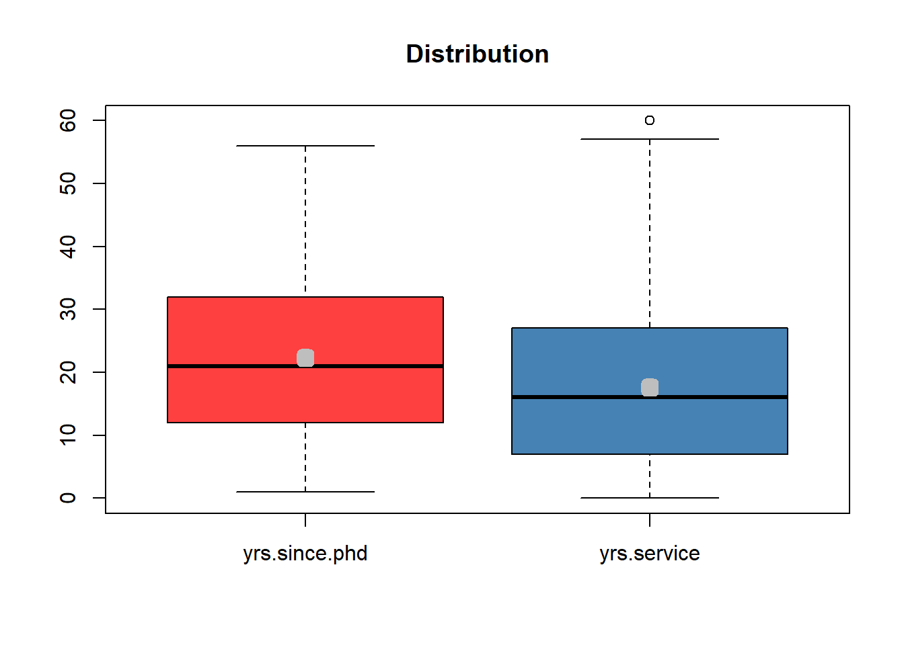
boxplot(salary, col = c('chartreuse4'), main = "Distributions")
means <- sapply(salary, mean)
points(means, col = "gray", pch = 22, lwd = 7)What do the box plots indicate?
We notice that a number of observations are identified as the outliers that are pulling the mean away from the median.
Salary and Years since PhD
Let’s now consider the relationship between yrs.since.phd and salary using a scatterplot onto which we add a line of best fit. Note that since we ‘attached’ the dataset, we can call on the variables without need to index or specify the dataset by name.
plot(salary ~ yrs.since.phd, cex =.6, main = "The Relationship between Nine-month Salary and Years since PhD", xlab = "Years since PhD", ylab = "Nine-month Salary (dollars)")
model1 <- lm(salary ~ yrs.since.phd)
abline(model1, lty = 2, col = 2)
##
## Call:
## lm(formula = salary ~ yrs.since.phd)
##
## Residuals:
## Min 1Q Median 3Q Max
## -84171 -19432 -2858 16086 102383
##
## Coefficients:
## Estimate Std. Error t value Pr(>|t|)
## (Intercept) 91718.7 2765.8 33.162 <2e-16 ***
## yrs.since.phd 985.3 107.4 9.177 <2e-16 ***
## ---
## Signif. codes: 0 '***' 0.001 '**' 0.01 '*' 0.05 '.' 0.1 ' ' 1
##
## Residual standard error: 27530 on 395 degrees of freedom
## Multiple R-squared: 0.1758, Adjusted R-squared: 0.1737
## F-statistic: 84.23 on 1 and 395 DF, p-value: < 2.2e-16What do the results indicate?
The results show that there is a positive relationship between the nine-month salary and years since PhD completion. The relationship is on a weak side, with only 17.60% of variability in the response variable salary being explained by the predictor yrs.since.phd.
Salary and Years of Service
Let’s find out more about the relationship between nine-month salary and years of service.
plot(salary ~ yrs.service, cex =.6, main = "The Relationship between Nine-month Salary and Years of Service", xlab = "Years of Service", ylab = "Nine-month Salary (dollars)")
model2 <- lm(salary ~ yrs.service)
abline(model1, lty = 2, col = 2)
##
## Call:
## lm(formula = salary ~ yrs.service)
##
## Residuals:
## Min 1Q Median 3Q Max
## -81933 -20511 -3776 16417 101947
##
## Coefficients:
## Estimate Std. Error t value Pr(>|t|)
## (Intercept) 99974.7 2416.6 41.37 < 2e-16 ***
## yrs.service 779.6 110.4 7.06 7.53e-12 ***
## ---
## Signif. codes: 0 '***' 0.001 '**' 0.01 '*' 0.05 '.' 0.1 ' ' 1
##
## Residual standard error: 28580 on 395 degrees of freedom
## Multiple R-squared: 0.1121, Adjusted R-squared: 0.1098
## F-statistic: 49.85 on 1 and 395 DF, p-value: 7.529e-12What do the plot and model results indicate?
The plot confirms our viewpoint and again we have a positive relationship between salary and years of service. This variable explains around 11 % of variability in the response variable.
Individually, the two variables do not seem to explain much of the variability in the response.
The Model
Let’s consider both variables (years of service and years since PhD) and whether these help explain salary. We define our multiple linear regression model as:
\[y = b_0 + b_1x_1 + b_2x_2 + e\]
##
## Call:
## lm(formula = salary ~ yrs.since.phd + yrs.service)
##
## Residuals:
## Min 1Q Median 3Q Max
## -79735 -19823 -2617 15149 106149
##
## Coefficients:
## Estimate Std. Error t value Pr(>|t|)
## (Intercept) 89912.2 2843.6 31.620 < 2e-16 ***
## yrs.since.phd 1562.9 256.8 6.086 2.75e-09 ***
## yrs.service -629.1 254.5 -2.472 0.0138 *
## ---
## Signif. codes: 0 '***' 0.001 '**' 0.01 '*' 0.05 '.' 0.1 ' ' 1
##
## Residual standard error: 27360 on 394 degrees of freedom
## Multiple R-squared: 0.1883, Adjusted R-squared: 0.1842
## F-statistic: 45.71 on 2 and 394 DF, p-value: < 2.2e-16Test a): Does the fitted model make sense?
Do the estimated coefficients have the correct sign?
The estimated model of best fit is:
\(salary = 89912.2 + 1562.9yrs.since.phd − 629.1yrs.service\)
We notice that when put together with the variable yrs.since.phd, the yrs.service changes sign, which is not in line with our previously drawn conclusion and the viewpoint. This is the result of collinearity, which you already know happens when two predictors are correlated with one another.
(Multi)collinearity can be identified when:
- a regression coefficient \(x_i\) is not significant even though,
theoretically, it should be highly correlated with the response
variable \(y\);
- by adding or deleting an \(x_i\) variable, the regression coefficients
change dramatically;
- we get a negative regression coefficient when the response should
increase along with \(x_i\), or we get a positive regression
coefficient when the response should decrease as \(x_i\) increases;
- the explanatory variables have high pairwise correlations.
Removing one of the correlated explanatory variables usually doesn’t drastically reduce the \(R^2/R^2adj\).
With this model, using yrs.since.phd and yrs.service variables we have managed to explain just over 18% of variation in the variable salary.
Test b): Overall, is the model a good fit?
\(R^2adj\) is 18.42%, putting this model on the weaker side. However let us go through the formal procedure and set the hypothesis below. The null hypothesis of will be tested using the F-test:
- \(H_0:R^2=0\) (that is, the set of explanatory variables are
insignificant, or in other words: useless)
- \(H_1:R^2>0\) (that is, at least one explanatory variable is significant, or in other words: important)
The decision rule is:
- if \(F_{calc} < F_{crit} => H_0\)
- if \(F_{calc} > F_{crit} => H_1\)
Examining the sample evidence we get that \(F_{calc} = 45.71\). The value for \(F_{crit}\) can be found in the statistical tables for \(df1 = 2\) and \(df2 = 394\).
## [1] 3.018626Since \(F_{crit} = 3.02 < F_{calc} => H_1\), this implies that this is a valid model.
As pointed out earlier, this formal test involves a rather weak alternative hypothesis, which says only that \(R^2\) is significantly bigger than 0. With \(R^2\) of around 18% we can conclude that this is a useful model worthy of further investigation.
Test c): Individually, are the explanatory variables important?
Stage two of our model validation procedure is to examine the importance of any one single explanatory variable used in the fitted model. We have pointed out that just because a set of variables is important does not necessarily mean that each individual variable is contributing towards explaining the behaviour of \(Y\).
We will conduct a set of t-tests to check the validity of each variable one at a time.
\(b_1\): previously we concluded that the relationship between \(x_1\) and \(y\) is positive (in the fitted model parameter \(b_1\) is positive). Consequently, we will use one tail t-test to assess the importance of \(x_1\) in the model.
\(H_0:b_1 = 0\) (explanatory variable \(i\) is not important)
\(H_1:b_1 > 0\) (explanatory variable \(i\) has a positive influence)
whereby:
If \(t_{calc} < t_{crit} => H_0\)
If \(t_{calc} > t_{crit} => H_1\)
## [1] 1.64873\(t_{calc} = 6.09 > t_{crit} = 1.65 => H_1\), which implies that we need to keep x1 in the model.
\(b_2\): previously we concluded that the relationship between \(x_2\) and y is a positive relationship, but the model is suggesting that it is negative. We will stick to our belief and test if the coefficient should be positive:
\(H_0:b_2 = 0\) (explanatory variable \(i\) is not important)
\(H_1:b_2 > 0\) (explanatory variable \(i\) has a positive influence)
whereby:
If \(t_{calc} < t_{crit} => H_0\)
If \(t_{calc} > t_{crit} => H_1\)
## [1] 1.64873\(t_{calc} = −2.47 < t_{crit} = 1.65 => H_0\) therefore, the variable should be removed from the model.
The increase in the explain variation of around 1% is negligible in comparison to the best one factor model \(salary = f(yrs.since.phd) + e\). Hence, we will put forward the model \(salary = 91719 + 985yrs.since.phd\) as our best fitted model.
Alternatively you could test for the coefficient not being equal to zero and make a conclusion for yourself if this would be a sensible thing to do.
In this example, we have adopted a ‘standard’ regression approach that assumes modelling a relationship between quantitative response and only quantitative predictors. However, often when building multiple regression models, we do not want to be limited to just quantitative predictors.
Part II
Now let’s expand our multiple linear regression model with two quantitative variables to a model that also includes categorical variables.
# if you are starting a fresh R session, don't forget to:
# load the package
library(carData)
# attach the dataset
attach(Salaries)## The following objects are masked from Salaries (pos = 3):
##
## discipline, rank, salary, sex, yrs.service, yrs.since.phdIn many datasets, categorical (attribute) variables are usually encoded numerically and are accompanied by information about the levels of the variable saved in the levels attribute.
Let’s consider the sex variable.
## $levels
## [1] "Female" "Male"
##
## $class
## [1] "factor"This variable is already coded as a factor with two levels, Female and Male (which you should already know from earlier in the demonstration). Now, what if we want to transform a variable of class factor into one of class integer?
## [1] 2 2 2 2 2 2 2 2 2 1 2 2 2 2 2 2 2 2 2 1 2 2 2 2 1 2 2 2 2 2 2 2 2 2 1 1 2
## [38] 2 2 2 2 2 2 2 2 2 2 1 1 2 2 2 1 2 2 2 2 2 2 2 2 2 2 1 2 2 2 2 1 2 2 2 2 2
## [75] 2 2 2 2 2 2 2 2 2 2 1 2 2 2 2 2 1 2 2 2 2 2 2 2 2 2 2 2 2 1 2 2 2 2 2 2 2
## [112] 2 2 2 1 2 2 2 2 1 2 2 2 1 2 2 2 1 2 2 2 2 1 1 2 2 2 2 2 2 2 2 2 2 2 2 2 2
## [149] 1 2 2 2 2 1 2 2 2 2 2 2 2 2 2 2 2 2 2 2 2 2 2 2 2 2 2 2 2 2 2 1 2 2 2 2 2
## [186] 2 1 2 2 2 2 2 2 2 2 2 2 2 2 2 2 2 2 2 2 2 2 2 2 2 2 2 2 2 2 2 2 2 1 2 2 2
## [223] 2 2 2 2 2 2 2 2 1 1 2 1 2 2 2 1 2 2 2 2 2 2 2 1 2 2 2 2 2 2 2 1 1 2 2 2 2
## [260] 2 2 2 2 2 2 2 2 2 2 2 2 2 2 2 1 2 2 2 2 2 2 2 2 2 2 2 2 2 2 2 2 2 2 2 2 2
## [297] 2 2 2 2 2 2 2 2 2 2 2 2 2 2 2 2 2 2 2 2 1 2 2 2 2 2 2 1 2 2 2 2 2 2 2 2 1
## [334] 2 1 2 2 2 2 2 2 1 2 2 2 2 2 2 2 2 2 2 2 2 2 2 2 2 1 2 2 1 2 2 2 2 2 2 2 2
## [371] 2 2 2 2 2 2 2 2 2 2 2 2 2 2 2 2 2 2 2 2 2 2 2 2 2 2 2
## attr(,"levels")
## [1] "Female" "Male"We can easily do so with the unclass() function which removes the attributes of a factor variable and transforms the levels into numeric values.
However, when using factor variable in a linear regression model, it would make no sense to treat it as a quantitative explanatory variable. In the context of linear modelling we need to code each category to represent factor levels. Two-level attribute variables are very easy to code. We simply create an indicator or dummy variable that takes on two possible dummy numerical values. Consider the sex variable.
We can code this using a dummy variable \(d\):
\[
d = \begin{cases}
0, & \text{if female} \\
1, & \text{if male}
\end{cases}
\]
üí° This is the default coding used in R. A zero value is assigned to the level which is first alphabetically, unless it is changed by using the releveld() function for example, or by specifying the levels of the factor variable specifically.
So, for a simple regression model predicting nine-month salary using one categorical variable:
\[salary = b_0 + b_1sex + e\]
the model is specified as follows:
\[salary_i = b_0 + b_1 sex_i + e_i = \begin{cases} b_0 + b_1 \times 1 + e_i = b_0 + b_1 + e_i, & \text{if the person is male} \\ b_0 + b_1 \times 0 + e_i = b_0 + e_i, & \text{if the person is female} \end{cases}\]
where \(b_0\) can be interpreted as the average nine-month salary for females, and \(b_0 + b_1\) as the nine-month average salary for males. The value of \(b_1\) represents the average difference in nine-month salary between females and males.
We can conclude that dealing with an attribute variable with two levels in a linear model is straightforward. In this case, a dummy variable indicates whether an observation has a particular characteristic: yes/no. We can observe it as a ‘switch’ in a model, as this dummy variable can only assume the values \(0\) and \(1\), where \(0\) indicates the absence of the effect, and \(1\) indicates the presence. The values 0/1 can be seen as off/on.
The way in which R codes dummy variables is controlled by the contrasts option:
## $contrasts
## unordered ordered
## "contr.treatment" "contr.poly"The output points out the conversion of the factor into an appropriate set of contrasts. In particular, the first one: for unordered factors, and the second one: the ordered factors. The former is applicable in our context. To explicitly identify the coding of the factor, i.e. dummy variable used by R, we can use the contrasts() function.
## Male
## Female 0
## Male 1Note that applied contr.treatment conversion takes only the value \(0\) or \(1\) and that for an attribute variable with \(k\) levels it will create \(k-1\) dummy variables. There are many different ways of coding attribute variables besides the dummy variable approach explained here. All of these different approaches lead to equivalent model fits. What differs are the coefficients (i.e. model parameters as they require different interpretations, arranged to measure particular contrasts). This 0/1 coding implemented in R’s default contr.treatment contrast offers straightforward interpretation of the associated parameter in the model, which often is not the case when implementing other contrasts.
Interpreting coefficients of attribute variables
In the case of measured predictors, we are comfortable with the interpretation of the linear model coefficient as a slope, which tells us what a unit increase in the response variable is (i.e. outcome per unit increase in the explanatory variable). This is not necessarily the right interpretation for attribute predictors.
Let’s consider average nine-month salary values for males and females separately.
## # A tibble: 2 × 2
## sex mean
## <fct> <dbl>
## 1 Female 101002.
## 2 Male 115090.If we obtain the mean salary for each sex group we will find that for female professors the average salary is $ $101,002$ and for male professors the average is $ $115,090$. That is, a difference of \(\$14,088\).
If we now look at the parameters of the regression model for salary vs sex where females are coded as zero and males as one, we get exactly the same information, implying that the coefficient is the estimated difference in average between the two groups.
##
## Call:
## lm(formula = salary ~ sex)
##
## Coefficients:
## (Intercept) sexMale
## 101002 14088Fitting a Multivariate Regression Model
In Part I, we explored the extent to which variation in the response variable salary is associated with variation in years since PhD and years in service. Now, we extend the model to also include sex, discipline and rank. The overall goals of any model we construct is that it should contain enough to explain relations in the data and at the same time be simple enough to understand, explain to others, and use.
For convenience we will adopt the following notation:
\(y\): salary
\(x_1\): yrs.since.phd
\(x_2\): yrs.service
\(x_3\): discipline
\(x_4\): sex
\(x_5\): rank
Next, we need to specify the model that embodies our mechanistic understanding of the factors involved and the way that they are related to the response variable. It would make sense to expect that all of the available x variables may impact the behaviour of y, thus the model we wish to build should reflect our viewpoint, i.e. \(y=f(x_1,x_2,x_3,x_4,x_5)\):
\[y=b_0 + b_1x_1 + b_2x_2 + b_3x_3 + b_4x_4 + b_5x_5 + e\] Our viewpoint states a belief that all explanatory variables have a positive impact on the response. For example, more years in service will cause a higher salary.
Our objective now is to determine the values of the parameters in the model that lead to the best fit of the model to the data. That is, we are not only trying to estimate the parameters of the model, but we are also seeking the minimal adequate model to describe the data.
The best model is the model that produces the least unexplained variation following the principle of parsimony rather than complexity. That is the model should have as few parameters as possible, subject to the constraint that the parameters in the model should all be statistically significant.
For regression modelling in R we use the lm() function, that fits a linear model assuming normal errors and constant variance. We specify the model by a formula that uses arithmetic operators which enable different functionalities from their ordinary ones. But, before we dive into statistical modelling of the given data, we need to take a first step and conduct the most fundamental task of data analysis procedure: Get to Know Our Data.
## `stat_bin()` using `bins = 30`. Pick better value with `binwidth`.
## `stat_bin()` using `bins = 30`. Pick better value with `binwidth`.
## `stat_bin()` using `bins = 30`. Pick better value with `binwidth`.
## `stat_bin()` using `bins = 30`. Pick better value with `binwidth`.
## `stat_bin()` using `bins = 30`. Pick better value with `binwidth`.
## `stat_bin()` using `bins = 30`. Pick better value with `binwidth`.
## `stat_bin()` using `bins = 30`. Pick better value with `binwidth`.
## `stat_bin()` using `bins = 30`. Pick better value with `binwidth`.
## `stat_bin()` using `bins = 30`. Pick better value with `binwidth`.What information can you extract from this visualisation?
This is an information rich visualisation that includes pairwise relationships of all the variables we want to consider for our model. By focusing on the last column of the plots, we can notice influence from all explanatory variables onto the response, except maybe for discipline and sex. We also notice unbalanced representation of the groups for the variables rank and sex, but for the purpose of our practice in fitting a multi-factor model this isn’t too problematic. We need to be especially concerned with the extent of correlations between the explanatory variables, and what is of particular interest to us is the high multicollinearity between rank, yrs.since.phd and yrs.service, which happens when the variables are highly linearly related. As a consequence, we will need to keep an eye on the significance of using all of these variables in the model.
Fitting the Model
There are no fixed rules when fitting linear models, but there are adopted standards that have proven to work well in practice. We start off by fitting a maximal model then we carry on simplifying it by removing non-significant explanatory variables. This needs to be done with caution, making sure that the simplifications make good scientific sense, and do not lead to significant reductions in explanatory power. Although this should be the adopted strategy for fitting a model, it is not a guarantee to finding all the important structures in a complex data frame.
We can summarise our model building procedure algorithm as follows:
- Fit the maximal model that includes all the variables. Then, assess the overall significance of the model by checking how big the \(R^2/\overline{R}^2\) is. If statistically significant, carry on with the model fitting procedure, otherwise stop (F-test).
- Remove the least significant terms one at a time. Then, check the \(t_calculated\) for the variables values and perform a one tail or two tail t-test depending on your prior view. If the deletion causes an insignificant increase in \(\overline{R}^2\), leave that term out of the model.
- Keep removing terms from the model until the model contains nothing but significant terms.
Let’s build the model. Now, if we plan to use all variables in a dataset, there is no need to write the names of each individual predictor. Instead, we can use a full stop which tell R to include all other variables in the data object that do not already appear in the formula.
##
## Call:
## lm(formula = salary ~ ., data = Salaries)
##
## Residuals:
## Min 1Q Median 3Q Max
## -65248 -13211 -1775 10384 99592
##
## Coefficients:
## Estimate Std. Error t value Pr(>|t|)
## (Intercept) 65955.2 4588.6 14.374 < 2e-16 ***
## rankAssocProf 12907.6 4145.3 3.114 0.00198 **
## rankProf 45066.0 4237.5 10.635 < 2e-16 ***
## disciplineB 14417.6 2342.9 6.154 1.88e-09 ***
## yrs.since.phd 535.1 241.0 2.220 0.02698 *
## yrs.service -489.5 211.9 -2.310 0.02143 *
## sexMale 4783.5 3858.7 1.240 0.21584
## ---
## Signif. codes: 0 '***' 0.001 '**' 0.01 '*' 0.05 '.' 0.1 ' ' 1
##
## Residual standard error: 22540 on 390 degrees of freedom
## Multiple R-squared: 0.4547, Adjusted R-squared: 0.4463
## F-statistic: 54.2 on 6 and 390 DF, p-value: < 2.2e-16Overall, is the model a good fit? How big is the \(R^2/\overline{R}^2\)?
The \(R^2 = 45.47%\) and the \(\overline{R}^2= 44.63%\) are well above the value of zero allowing us to accept this as a valid model without having to formally test it to assess its statistical significance. It manages to explain almost half of the variability in the response variable salary.
Individually, are the explanatory variables important? What steps are required given the results of the model?
We identify the sex variable as clearly not significant, which is in line with the conclusion we could draw from the boxplot in the pairwise comparison plot for salary vs. sex. We will remove it to begin the process of model simplification and remove the least significant term. We therefore re-fit (or ‘update’) the model without the sex variable.
##
## Call:
## lm(formula = salary ~ rank + discipline + yrs.since.phd + yrs.service,
## data = Salaries)
##
## Residuals:
## Min 1Q Median 3Q Max
## -65244 -13498 -1455 9638 99682
##
## Coefficients:
## Estimate Std. Error t value Pr(>|t|)
## (Intercept) 69869.0 3332.1 20.968 < 2e-16 ***
## rankAssocProf 12831.5 4147.7 3.094 0.00212 **
## rankProf 45287.7 4236.7 10.689 < 2e-16 ***
## disciplineB 14505.2 2343.4 6.190 1.52e-09 ***
## yrs.since.phd 534.6 241.2 2.217 0.02720 *
## yrs.service -476.7 211.8 -2.250 0.02497 *
## ---
## Signif. codes: 0 '***' 0.001 '**' 0.01 '*' 0.05 '.' 0.1 ' ' 1
##
## Residual standard error: 22550 on 391 degrees of freedom
## Multiple R-squared: 0.4525, Adjusted R-squared: 0.4455
## F-statistic: 64.64 on 5 and 391 DF, p-value: < 2.2e-16We note a slight reduction in \(\overline{R}^2\) from \(44.63%\) to \(44.55%\) which we can regard as an insignificant decrease. The next step is to check the coefficients and assess for the effect of the remaining variables. We identify yrs.since.phd and yrs.service as the least influential in explaining the variability of salary. To illustrate how to formally assess their effect, we will conduct the t-test for the yrs.since.phd variable:
\(H_0:b_{ysp} = 0\)
\(H_1:b_{ysp} > 0\)
Therefore:
If \(t_{calc} < t_{crit} => H_0\)
If \(t_{calc} > t_{crit} => H_1\)
## [1] 1.64876As \(t_{calc} = 2.217 > t_{crit} = 1.64876 => H1\), we will keep the remaining variable and stop with the model simplification and focus on its interpretation.
Specify the final fitted model.
The structure of our final fitted model is:
\[y=b_0 + b_1x_1 + b_2x_2 + b_3x_3 + b_4x_4 + e\]
where:
\(y\): salary
\(x_1\): yrs.since.phd
\(x_2\): yrs.service
\(x_3\): discipline
\(x_4\): rank
We can take a closer look at the coefficients of our fitted model:
## (Intercept) rankAssocProf rankProf disciplineB yrs.since.phd
## 69869.0110 12831.5375 45287.6890 14505.1514 534.6313
## yrs.service
## -476.7179Examining the output we realise that R has created three dummy variables for the variable rank:
\[
dr_1 = \begin{cases}
1 & \text{rank is AsstProf} \\
0 & \text{for rank is not AsstProf}
\end{cases}
\]
\[ dr_2 = \begin{cases} 1 & \text{rank is AssocProf} \\ 0 & \text{rank is not AssocProf} \end{cases} \]
\[
dr_3 = \begin{cases}
1 & \text{rank is Prof} \\
0 & \text{rank is not Prof}
\end{cases}
\]
Therefore, R has chosen to use the model:
\[y = b_0 + b_1dr_2 + b_2dr_3 + b_3d_1 + b_4x_1 + b_5x_2 + e\]
where:
- \(y\) is salary
- \(x_1\) is yrs.since.phd
- \(x_2\) is yrs.service
- \(dr_2\) and \(dr_3\) are the dummy variables defined above for the purpose of coding variable rank
- \(d_1\) is a dummy variable used in the coding of variable discipline as explained earlier
Note that R doesn’t need to use \(dr_1\) to create three models; it only needs two dummy variables since it is using \(dr_1\) as a reference level, also known as the base line. This subsequently allows R to create three models relating to the rank variable:
- AsstProf: \(y = b_0 + b_3d_1 + b_4x_1 + b_5x_2 + e\)
- AssocProf: \(y = (b_0 + b_1) + b_3d_1 + b_4x_1 + b_5x_2 + e\)
- Prof: \(y = (b_0 + b_2) + b_3d_1 + b_4x_1 + b_5x_2 + e\)
telling us that:
- \(b_0\) is the average salary for an Assistant Professor who works in a ‘theoretical’ department and \(b_0 + b_3\) the average salary for an Assistant Professor who works in an ‘applied’ department.
- \((b_0 + b_1)\) is the average salary for an Associate Professor who works in a ‘theoretical’ department and \((b_0 + b_1) + b_3\) the average salary for an Associate Professor who works in an ‘applied’ department.
- \((b_0 + b_2)\) is the average salary for a Professor who works in a ‘theoretical’ department and \((b_0 + b_2) + b_3\) the average salary for a Professor who works in an ‘applied’ department.
Interpret the results
Learning this we can make an interpretation of our final fitted model as follows:
For every year since PhD (yrs.since.phd) on average salary (salary) will go up by $534.63 assuming the rest of the variables are fixed in the model.
For every year in service (yrs.service) on average salary (salary) will go down by $476.72 assuming the rest of the variables are fixed in the model.
The average salary of an Assistant Professor (rank: AsstProf) who works in a “theoretical” department is \(\$69,869.01\) and who works in an “applied” department is \(\$84,374.16\); this can vary for the number of years in service and since PhD.
The average salary of an Associate Professor (rank: AssocProf) who works in a ‘theoretical’ department is \(\$82,700.55\), and one who works in an ‘applied’ department is \(\$97,205.70\); this can vary for the number of years in service and since PhD.
The average salary of a Professor (rank: Prof) who works in a ‘theoretical’ department is \(\$115,156.70\), and who works in an ‘applied’ department is \(\$129,661.90\); this can vary for the number of years in service and since PhD.
This model explains around 45% of the variability in the response variable salary.
Adding ~ 0 to the lm() formula enables R to suppress the intercept. Note that if we remove the intercept, then we can directly obtain all “three intercepts” without a base level to fit the final fitted model:
##
## Call:
## lm(formula = salary ~ 0 + rank + discipline + yrs.since.phd +
## yrs.service)
##
## Residuals:
## Min 1Q Median 3Q Max
## -65244 -13498 -1455 9638 99682
##
## Coefficients:
## Estimate Std. Error t value Pr(>|t|)
## rankAsstProf 69869.0 3332.1 20.968 < 2e-16 ***
## rankAssocProf 82700.5 3916.7 21.115 < 2e-16 ***
## rankProf 115156.7 4350.9 26.467 < 2e-16 ***
## disciplineB 14505.2 2343.4 6.190 1.52e-09 ***
## yrs.since.phd 534.6 241.2 2.217 0.0272 *
## yrs.service -476.7 211.8 -2.250 0.0250 *
## ---
## Signif. codes: 0 '***' 0.001 '**' 0.01 '*' 0.05 '.' 0.1 ' ' 1
##
## Residual standard error: 22550 on 391 degrees of freedom
## Multiple R-squared: 0.9638, Adjusted R-squared: 0.9633
## F-statistic: 1736 on 6 and 391 DF, p-value: < 2.2e-16Practical 2
This practical has been developed by Dr. Tatjana Kecojevic, Lecturer in Social Statistics.
For the tasks below, you will require the FDI dataset.
Click here to download the file: FDI.csv .
Remember to place your data file in a separate subfolder within your R project working directory.
A business consultancy firm is compiling a major report about globalisation. One aspect of this study concerns the determinants of FDI undertaken by multi-national enterprises. Relevant information from a sample of 60 multi-national companies that undertook significant investment in overseas projects was made available as follows:
| Variable Name | Variable Description | |
|---|---|---|
| FDI | Value of FDI undertaken, in £ millions, by investing company | | |
| GDP_Cap | GDP per capita, £000s, in the country receiving the investment | |
| Gr_rate | The economic growth rate, in %-terms, in the country receiving the investment | |
| ROC | The average return on capital invested, in %-terms, in the country receiving the investment | |
| Stable | The political stability of the country receiving the investment as measured by the number of changes in government over the past 25 years | |
| Infra | Infrastructure facilities (eg transport, communications) in the country receiving the investment Coded: 1 = basic infrastructure 2 = good infrastructure |
|
| Trade | The openness to trade of the country receiving the investment Coded: 1 = trade tightly controlled 2 = some restrictions on trade 3 = free trade |
|
This is a multiple regression type of the problem; FDI is the key response variable as this study concerns the determinants of FDI undertaken by multi-national enterprises.
The model is defined as \(Y = b_0 + b_1x_1 + b_2x_2 + ... + b_kx_k + e\), for the general \(k\) explanatory variable model and where e is also known as the error term \(e ∼ N(0,\sigma^2)\), with the error term from a normal distribution with a mean of \(0\), and a variance of \(\sigma^2\).
Based on prior knowledge, we make the assumption that GDP_Cap, Gr_rate, ROC, Infra, and Trade have positive relationships with FDI, whilst Stable has a negative relationship with FDI.
We will use our best fit model to predict FDI for the following information: country X receiving the investment has GDP per capita of 11.1 and Gr_rate per capita of 3.05; The average return on capital invested is 20.5%; There were 11 changes of government over the past 25 years and country X has good infrastructure with some restrictions on trade.
First, let’s load the required packages:
library(tidyverse)
# you should have already installed this package as part of the previous Demonstration
library(GGally)Let’s import the data into R.
Now let’s get a glimpse of the data. As you know, there are many ways to
do that, such as, for example, using the tidyverse glimpse function.
This is quite a handy function because it also tells us more about the
class of each variable. We can see that although Infra and Trade
categorical, these are coded as integers.
## Rows: 60
## Columns: 7
## $ FDI <dbl> 184.00, 187.00, 186.00, 192.00, 188.00, 190.00, 193.00, 194.00…
## $ GDP_Cap <dbl> 4.4, 6.3, 5.3, 5.9, 9.4, 7.6, 8.7, 6.0, 8.4, 10.1, 8.0, 6.9, 7…
## $ Gr_rate <dbl> 2.54, 4.06, 3.79, 3.38, 1.54, 2.25, 3.01, 2.13, 2.18, 3.33, 2.…
## $ ROC <dbl> 6.7, 9.3, 7.1, 3.9, 6.3, 9.3, 6.3, 9.7, 5.6, 17.1, 9.1, 15.2, …
## $ Stable <int> 9, 8, 11, 11, 8, 9, 9, 11, 12, 12, 8, 7, 12, 9, 8, 5, 9, 7, 11…
## $ Infra <int> 1, 1, 1, 1, 1, 1, 1, 1, 1, 1, 1, 1, 1, 1, 1, 1, 1, 1, 1, 1, 1,…
## $ Trade <int> 1, 1, 1, 1, 1, 1, 1, 1, 1, 1, 2, 2, 2, 2, 2, 2, 2, 2, 2, 2, 3,…We therefore need to transform them into factors.
We can then explore all variables in the dataset as pairs using a matrix of plots. Among many interesting features, we can note quite strong correlations among pairs of variables which suggest the presence of multicollinearity: GDP_Cap and ROC, Infra and GDP_Cap, Infra and ROC, and Infra and Gr_rate.

Ok, so our initial model is:
\(FDI = b_0 + b_1GDP\_Cap + b_2Gr\_rate + b_3ROC – b_4Stable + b_5Infra + b_6Trade + e\)
where Infra and Stable are dummy variables.
We can have a look at how these two dummy variables are used in the
model by using the contrasts() function from base R.
The Infra variable is coded as 1 = basic infrastructure and 2 = good infrastructure. Since this is a binary variable, there will be one reference category and a single dummy variable.
## 2
## 1 0
## 2 1The Trade variable is coded as 1 = trade tightly and 2 = some restrictions on trade and 2 = some restrictions on trade. Since this is variable with three categories, there will be one reference category and two dummy variables.
## 2 3
## 1 0 0
## 2 1 0
## 3 0 1Let’s now fit our multiple regression model.
And explore the results.
##
## Call:
## lm(formula = FDI ~ GDP_Cap + Gr_rate + ROC + Stable + Infra +
## Trade, data = mydataq1)
##
## Residuals:
## Min 1Q Median 3Q Max
## -5.8594 -1.2595 -0.0808 1.4183 8.7210
##
## Coefficients:
## Estimate Std. Error t value Pr(>|t|)
## (Intercept) 189.472086 2.690418 70.425 < 2e-16 ***
## GDP_Cap 0.938713 0.236206 3.974 0.000219 ***
## Gr_rate -0.089122 0.498508 -0.179 0.858807
## ROC 0.003144 0.088466 0.036 0.971782
## Stable -0.539889 0.172155 -3.136 0.002816 **
## Infra2 -0.169110 1.493552 -0.113 0.910287
## Trade2 4.875539 0.891476 5.469 1.31e-06 ***
## Trade3 5.890833 1.179891 4.993 7.07e-06 ***
## ---
## Signif. codes: 0 '***' 0.001 '**' 0.01 '*' 0.05 '.' 0.1 ' ' 1
##
## Residual standard error: 2.734 on 52 degrees of freedom
## Multiple R-squared: 0.7481, Adjusted R-squared: 0.7142
## F-statistic: 22.06 on 7 and 52 DF, p-value: 1.646e-13What do the results indicate?
How do they compare with our initial assumptions?
How do you proceed with the analysis?
The results provide us with several pieces of important information. We initially assumed that the relationship between Gr_rate and FDI and Infra and FDI are positive. However, we can see that the estimated coefficients are negative. Also, there are several variables that are not statistically significant. The ROC variable has the highest p-value. Overall, the model appears to be a good fit given that 74.81% of variability is being explained. Also, make a note of the adjusted r-squared value which is 71.42 % (as the name implies, this measure adjusts the r-squared value according to the number of predictors in the model).
Ok, so given the evidence of multicollinearity from earlier and given the lack of statistical significance, we can proceed to remove the variable with the largest p-value (so the ROC) variable and refit the model.
m2 <- lm(FDI ~ GDP_Cap + Gr_rate + Stable + Infra + Trade, data = mydataq1)
# or
m2 <- update(m1,~. - ROC, data = mydataq1) Now, we see that the explained variability is the same as in model 1 (74.81%). However, the adjusted R-squared has increased slightly (from 71.4% to about 72%).
##
## Call:
## lm(formula = FDI ~ GDP_Cap + Gr_rate + Stable + Infra + Trade,
## data = mydataq1)
##
## Residuals:
## Min 1Q Median 3Q Max
## -5.8633 -1.2684 -0.0897 1.4174 8.7346
##
## Coefficients:
## Estimate Std. Error t value Pr(>|t|)
## (Intercept) 189.4790 2.6579 71.289 < 2e-16 ***
## GDP_Cap 0.9409 0.2258 4.167 0.000114 ***
## Gr_rate -0.0846 0.4774 -0.177 0.860031
## Stable -0.5413 0.1663 -3.255 0.001976 **
## Infra2 -0.1358 1.1519 -0.118 0.906598
## Trade2 4.8805 0.8723 5.595 7.92e-07 ***
## Trade3 5.9116 1.0151 5.824 3.45e-07 ***
## ---
## Signif. codes: 0 '***' 0.001 '**' 0.01 '*' 0.05 '.' 0.1 ' ' 1
##
## Residual standard error: 2.708 on 53 degrees of freedom
## Multiple R-squared: 0.7481, Adjusted R-squared: 0.7196
## F-statistic: 26.23 on 6 and 53 DF, p-value: 3.05e-14We can observe that the Infra variable has the largest p-value and, as before with the ROC variable, we remove it and refit the model by removing the least significant term.
The r-squared value has decreased slightly from 74.81% to 74.8. But, again, we see that the adjusted R-squared increased from about 72% in model 2 to about 72.5%.
##
## Call:
## lm(formula = FDI ~ GDP_Cap + Gr_rate + Stable + Trade, data = mydataq1)
##
## Residuals:
## Min 1Q Median 3Q Max
## -5.8072 -1.3012 -0.0538 1.3545 8.7185
##
## Coefficients:
## Estimate Std. Error t value Pr(>|t|)
## (Intercept) 189.63356 2.29103 82.772 < 2e-16 ***
## GDP_Cap 0.92068 0.14544 6.331 5.01e-08 ***
## Gr_rate -0.09192 0.46906 -0.196 0.84537
## Stable -0.54240 0.16445 -3.298 0.00173 **
## Trade2 4.89108 0.85969 5.689 5.34e-07 ***
## Trade3 5.95001 0.95263 6.246 6.86e-08 ***
## ---
## Signif. codes: 0 '***' 0.001 '**' 0.01 '*' 0.05 '.' 0.1 ' ' 1
##
## Residual standard error: 2.683 on 54 degrees of freedom
## Multiple R-squared: 0.748, Adjusted R-squared: 0.7247
## F-statistic: 32.06 on 5 and 54 DF, p-value: 5.104e-15The Gr_rate variable has the largest p-value and, as before, we remove it and refit the model by removing the least significant term.
Finally, we obtain a model where all coefficients are statistically significant (although the Stable is significant at an \(\alpha\) level of 0.05). We see that the r-squared value has again decreased slightly to 74.79% but the explained variability is highest for this model, about 73% (the adjusted r-squared penalises the addition of predictors that are non-significant; since we removed these, the value increased).
Overall, the explained variability is still about 75% (the decrease across the models was extremely small).
##
## Call:
## lm(formula = FDI ~ GDP_Cap + Stable + Trade, data = mydataq1)
##
## Residuals:
## Min 1Q Median 3Q Max
## -5.661 -1.300 -0.035 1.317 8.626
##
## Coefficients:
## Estimate Std. Error t value Pr(>|t|)
## (Intercept) 189.4274 2.0173 93.903 < 2e-16 ***
## GDP_Cap 0.9109 0.1355 6.723 1.07e-08 ***
## Stable -0.5411 0.1629 -3.322 0.00159 **
## Trade2 4.8837 0.8513 5.737 4.27e-07 ***
## Trade3 5.9368 0.9419 6.303 5.19e-08 ***
## ---
## Signif. codes: 0 '***' 0.001 '**' 0.01 '*' 0.05 '.' 0.1 ' ' 1
##
## Residual standard error: 2.66 on 55 degrees of freedom
## Multiple R-squared: 0.7479, Adjusted R-squared: 0.7295
## F-statistic: 40.78 on 4 and 55 DF, p-value: 7.573e-16Now, we can specify the model as:
\[ \begin{align*} FDI &= 189.4274 + 0.9109 \cdot GDP\_Cap - 0.5411 \cdot stable + 0.0000 \cdot Trade1 \\ &\phantom{= 189.4274 + 0.9109 \cdot GDP\_Cap - 0.5411 \cdot stable} + 4.8837 \cdot Trade2 \\ &\phantom{= 189.4274 + 0.9109 \cdot GDP\_Cap - 0.5411 \cdot stable} + 5.9368 \cdot Trade3 \end{align*} \]
Finally, we use our best fit model to predict FDI for the following information: country X receiving the investment has GDP per capita of 11.1 and Gr_rate per capita of 3.05; The average return on capital invested is 20.5%; There were 11 changes of government over the past 25 years and country X has good infrastructure with some restrictions on trade.
\(FDI = 189.4274 + 0.9109*11.1 - 0.5411*11 + 4.8837\)
## [1] 198.47Given that our final model (model 4) explains about 75% of the variability, we can conclude that our prediction of 198.47 is a fairly good one.
Overview
Section 6: Linear Model Selection and Regularisation
This section is comprised of four demonstrations using tasks, exercises, and examples from the core textbook for this course:
James, G., Witten, D., Hastie, T. and Tibshirani, R. (2021). An Introduction to Statistical Learning with Applications in R. 2nd ed.New York: Springer. https://www.statlearning.com/.
Learning Outcomes:
perform subset and stepwise selection and interpret the results;
perform ridge regression and lasso and interpret the results;
perform PCR and PLS and interpret the results;
appreciate the differences between subset selection, regularisation, and dimension reduction techniques;
address non-linearity using different approaches (polynomials, step functions, splines, local regression, and GAMs).
In this section, we will cover the following functions:
| Function | Description | Package |
|---|---|---|
regsubsets() |
Model selection by exhaustive search, forward or backward stepwise, or sequential replacement | leaps |
summary() |
produce result summaries | base |
plot() and associated plot functions (points(), lines(), matlines(), title(), legend ) |
create plot and add features | base and graphics |
which.max(), which.min() |
index of minimum or maximum value | base |
coef() |
extract model coefficients | stats |
sample() |
take a sample with or without repalcement | base |
rep() |
replicate elements of vectors, lists | base |
matrix() |
create matrix | base |
na.omit() |
handle missing values | stats |
model.matrix() |
create matrix | stats |
seq() |
generate sequence | base |
glmnet() |
fit glm with lasso or regularisation | glmnet |
predict() |
obtain model predictions | stats |
mean() |
calculate arithmetic mean | base |
cv.glmnet() |
cross-validation for glmnet | glmnet |
pcr() |
principal components regression | pls |
validationplot() |
create validation plot | pls |
plsr() |
partial least squares regression | pls |
poly() |
compute orthogonal polynomials | stats |
I() |
treat object “as is” | base |
cbind() |
combine objects by rows or columns | base |
glm() |
fit generalised linear models | stats |
anova() |
compute analysis or variance or deviance tables | stats |
exp() |
compute exponential function | base |
table() |
create contingency table | base |
cut() |
convert numeric to factor | base |
bs() |
generate B-splines matrix | splines |
loess() |
local polynomial regression fitting | stats |
gam() |
fit generalised additive models | gam |
s() |
specify smoothing spline fit in a GAM formula | gam |
lo() |
specify loess fit in a GAM formula | gam |
Demonstration 1: Subset and Stepwise Selection
For the tasks below, you will require the Boston dataset. This dataset is part of the ISRL2 package from the core textbook (James et. al 2021).
You will also need the leaps package; please make sure to install and load it before you begin the practical.
The goal of this demonstration is to predict median value of owner-occupied homes (medv) using all variables in the dataset. You should already be familiar with this dataset. To remind yourself of the variables it contains, type ?Boston in your console after you load the ISLR2 package.
Loading the packages:
Best Subset Selection
Best subset selection can be performed using the regsubsets() function from the leaps package. This function works by identifying the best model (quantified using the RSS) that contains a given number of predictors. The syntax is similar to other model fitting functions you have encountered so far in the course.
Let’s explore the results using summary().
## Subset selection object
## Call: regsubsets.formula(medv ~ ., Boston)
## 12 Variables (and intercept)
## Forced in Forced out
## crim FALSE FALSE
## zn FALSE FALSE
## indus FALSE FALSE
## chas FALSE FALSE
## nox FALSE FALSE
## rm FALSE FALSE
## age FALSE FALSE
## dis FALSE FALSE
## rad FALSE FALSE
## tax FALSE FALSE
## ptratio FALSE FALSE
## lstat FALSE FALSE
## 1 subsets of each size up to 8
## Selection Algorithm: exhaustive
## crim zn indus chas nox rm age dis rad tax ptratio lstat
## 1 ( 1 ) " " " " " " " " " " " " " " " " " " " " " " "*"
## 2 ( 1 ) " " " " " " " " " " "*" " " " " " " " " " " "*"
## 3 ( 1 ) " " " " " " " " " " "*" " " " " " " " " "*" "*"
## 4 ( 1 ) " " " " " " " " " " "*" " " "*" " " " " "*" "*"
## 5 ( 1 ) " " " " " " " " "*" "*" " " "*" " " " " "*" "*"
## 6 ( 1 ) " " " " " " "*" "*" "*" " " "*" " " " " "*" "*"
## 7 ( 1 ) " " "*" " " "*" "*" "*" " " "*" " " " " "*" "*"
## 8 ( 1 ) "*" "*" " " "*" "*" "*" " " "*" " " " " "*" "*"As you can see, the output does not contain any coefficients or related information. This is because the function performs an exhaustive model search to identify the best set of variables for each model size but does not actually fit each model.
Here we see that the function produced models of up to 8 predictors (this is the default option for the function). An asterisk indicates that a given variable is included in the corresponding model; for example, the output indicates that the best two-variable model contains variables rm and lstat.
The default option can be overridden such that the model search is performed with more than 8 variables by providing a value for the nvmax argument. Excluding the response variable, we have a total of 12 variables available in the dataset and so we set nvmax to 12.
Now, it does not seem that summary provided much information. Actually, to extract relevant information about each model such as the r-squared, adjusted r-squared, Mallow’s \(C_p\), BIC, etc., we can assign the summary results to an object and then use the function on that object.
## Length Class Mode
## which 156 -none- logical
## rsq 12 -none- numeric
## rss 12 -none- numeric
## adjr2 12 -none- numeric
## cp 12 -none- numeric
## bic 12 -none- numeric
## outmat 144 -none- character
## obj 28 regsubsets listNow, this object has additional information which we can access by using the \(\$\) sign. For instance, we can obtain the \(R^2\) statistic for each one of the 12 models.
## [1] 0.5441463 0.6385616 0.6786242 0.6903077 0.7080893 0.7157742 0.7196230
## [8] 0.7236239 0.7282911 0.7342423 0.7342817 0.7343070We can see that the \(R^2\) increases from about \(54\%\) (for the model with one variable) to about \(73 \%\) (when all 12 predictors are included). But note that there is little difference in the \(R^2\) from the model with 10 variable onward. As expected, the \(R^2\) statistic increases monotonically as more variables are included.
The summary() function also returns \(R^2\), RSS, adjusted \(R^2\), \(C_p\), and BIC and we can examine these to try to select the best overall model.
Plotting RSS, adjusted \(R^2\), \(C_p\), and BIC for all of the models at once will help us decide which model to select.
#producing a multipanel plot on 2 rows and 2 columns
par(mfrow = c(2,2))
#plotting the RSS
plot(reg.summary$rss, xlab = "Number of Variables",
ylab = "RSS", type = "l")
#plotting the adjusted r-squared
plot(reg.summary$adjr2, xlab = "Number of Variables",
ylab = "Adjusted RSq", type = "l")
#finding the largest value for the adjusted r-squared
max_index_adjr2 <- which.max(reg.summary$adjr2)
#highlighting the largest value for the adjusted r-squared
points(max_index_adjr2 <- which.max(reg.summary$adjr2),
reg.summary$adjr2[max_index_adjr2],
col = "red", cex = 2, pch = 20)
#plotting Mallow's Cp
plot(reg.summary$cp, xlab = "Number of Variables",
ylab = "Cp", type = "l")
#finding the lowest values for Mallow's Cp
min_index_Cp <- which.min(reg.summary$cp)
#highlighting the lowest value for Mallow's Cp
points(min_index_Cp, reg.summary$cp[min_index_Cp],
col = "red", cex = 2, pch = 20)
#plotting the BIC
plot(reg.summary$bic, xlab = "Number of Variables",
ylab = "BIC", type = "l")
#finding the lowest values for the BIC
min_index_bic <- which.min(reg.summary$bic)
#highlighting the lowest value for the BIC
points(min_index_bic, reg.summary$bic[min_index_bic],
col = "red", cex = 2,pch = 20)
The points() command works like the plot() command, except that it adds points on a plot that has already been created. The which.max() or which.min() functions can be used to identify the location of the maximum and minimum point of a vector, respectively. To emphasise the maximum and minimum points, we plot a red dot.
The regsubsets() function has a built-in plot() command which can be used to display the selected variables for the best model with a given number of predictors, ranked according to different measures. This type of plot is handy particularly when there are large number of variables. To find out more about this function, type ?plot.regsubsets.
par(mfrow = c(2,2))
plot(regfit.full, scale = "r2")
plot(regfit.full, scale = "adjr2")
plot(regfit.full, scale = "Cp")
plot(regfit.full, scale = "bic")
The top row of each plot contains a black square for each variable selected according to the optimal model associated with that statistic; lower values indicate better models. The model with the lowest BIC is the ten-variable model with the following variables: crim, zn, chas, nox, rm, dis, rad, tax, ptratio and lstat.
Now that we have selected our best model, we can extract coefficient estimates using the coef() function and proceed with our analysis.
## (Intercept) crim zn chas nox rm
## 41.45174748 -0.12166488 0.04619119 2.87187265 -18.26242664 3.67295747
## dis rad tax ptratio lstat
## -1.51595105 0.28393226 -0.01229150 -0.93096144 -0.54650916Stepwise Selection
We can also use the regsubsets() function to perform forward stepwise or backward stepwise selection, using the argument method = "forward" or method = "backward".
Forward Stepwise Selection:
regfit.fwd <- regsubsets(medv ~ ., data = Boston,
nvmax = 12, method = "forward")
summary(regfit.fwd)## Subset selection object
## Call: regsubsets.formula(medv ~ ., data = Boston, nvmax = 12, method = "forward")
## 12 Variables (and intercept)
## Forced in Forced out
## crim FALSE FALSE
## zn FALSE FALSE
## indus FALSE FALSE
## chas FALSE FALSE
## nox FALSE FALSE
## rm FALSE FALSE
## age FALSE FALSE
## dis FALSE FALSE
## rad FALSE FALSE
## tax FALSE FALSE
## ptratio FALSE FALSE
## lstat FALSE FALSE
## 1 subsets of each size up to 12
## Selection Algorithm: forward
## crim zn indus chas nox rm age dis rad tax ptratio lstat
## 1 ( 1 ) " " " " " " " " " " " " " " " " " " " " " " "*"
## 2 ( 1 ) " " " " " " " " " " "*" " " " " " " " " " " "*"
## 3 ( 1 ) " " " " " " " " " " "*" " " " " " " " " "*" "*"
## 4 ( 1 ) " " " " " " " " " " "*" " " "*" " " " " "*" "*"
## 5 ( 1 ) " " " " " " " " "*" "*" " " "*" " " " " "*" "*"
## 6 ( 1 ) " " " " " " "*" "*" "*" " " "*" " " " " "*" "*"
## 7 ( 1 ) " " "*" " " "*" "*" "*" " " "*" " " " " "*" "*"
## 8 ( 1 ) "*" "*" " " "*" "*" "*" " " "*" " " " " "*" "*"
## 9 ( 1 ) "*" "*" " " "*" "*" "*" " " "*" "*" " " "*" "*"
## 10 ( 1 ) "*" "*" " " "*" "*" "*" " " "*" "*" "*" "*" "*"
## 11 ( 1 ) "*" "*" " " "*" "*" "*" "*" "*" "*" "*" "*" "*"
## 12 ( 1 ) "*" "*" "*" "*" "*" "*" "*" "*" "*" "*" "*" "*"For instance, we see that using forward stepwise selection, the best one-variable model contains only lstat, and the best two-variable model additionally includes rm.
Backward Stepwise Selection:
regfit.bwd <- regsubsets(medv ~ ., data = Boston,
nvmax = 12, method = "backward")
summary(regfit.bwd)## Subset selection object
## Call: regsubsets.formula(medv ~ ., data = Boston, nvmax = 12, method = "backward")
## 12 Variables (and intercept)
## Forced in Forced out
## crim FALSE FALSE
## zn FALSE FALSE
## indus FALSE FALSE
## chas FALSE FALSE
## nox FALSE FALSE
## rm FALSE FALSE
## age FALSE FALSE
## dis FALSE FALSE
## rad FALSE FALSE
## tax FALSE FALSE
## ptratio FALSE FALSE
## lstat FALSE FALSE
## 1 subsets of each size up to 12
## Selection Algorithm: backward
## crim zn indus chas nox rm age dis rad tax ptratio lstat
## 1 ( 1 ) " " " " " " " " " " " " " " " " " " " " " " "*"
## 2 ( 1 ) " " " " " " " " " " "*" " " " " " " " " " " "*"
## 3 ( 1 ) " " " " " " " " " " "*" " " " " " " " " "*" "*"
## 4 ( 1 ) " " " " " " " " " " "*" " " "*" " " " " "*" "*"
## 5 ( 1 ) " " " " " " " " "*" "*" " " "*" " " " " "*" "*"
## 6 ( 1 ) "*" " " " " " " "*" "*" " " "*" " " " " "*" "*"
## 7 ( 1 ) "*" " " " " " " "*" "*" " " "*" "*" " " "*" "*"
## 8 ( 1 ) "*" " " " " " " "*" "*" " " "*" "*" "*" "*" "*"
## 9 ( 1 ) "*" "*" " " " " "*" "*" " " "*" "*" "*" "*" "*"
## 10 ( 1 ) "*" "*" " " "*" "*" "*" " " "*" "*" "*" "*" "*"
## 11 ( 1 ) "*" "*" " " "*" "*" "*" "*" "*" "*" "*" "*" "*"
## 12 ( 1 ) "*" "*" "*" "*" "*" "*" "*" "*" "*" "*" "*" "*"If we compare the output from the forward and backward stepwise selection based on the asterisks, we can see that forward and backward stepwise selection yield identical models for those with 1 to five and 10, 11 and (obviously) 12 variables. However, the models with 6 to 9 variables are different.
For example, if we have a look at the 6-model variables, we can see that not only do the variables differ but evidently, that the coefficients differ. If we compare the stepwise selection results with the best subset selection model also, we can see that the results from best subset and forward stepwise selection are the same for these data.
## (Intercept) chas nox rm dis ptratio
## 36.9226340 3.2443048 -18.7404327 4.1118117 -1.1445857 -1.0027463
## lstat
## -0.5698442## (Intercept) crim nox rm dis ptratio
## 35.54553027 -0.07202363 -17.00665420 4.25196130 -1.20334533 -1.00080347
## lstat
## -0.55353166## (Intercept) chas nox rm dis ptratio
## 36.9226340 3.2443048 -18.7404327 4.1118117 -1.1445857 -1.0027463
## lstat
## -0.5698442Choosing Among Models Using the Validation-Set Approach and Cross-Validation
As discussed in the learning materials, we can use different measures such as \(C_p\) and BIC to select one model from among a set of models of different sizes.
However, to obtain accurate estimates of the test error through resampling methods, it is crucial that we perform all steps related to model fitting (including variable selection) only on training observations. In other words, to determine which model of a given size is best, we must consider only the training observations.
The Validation Set Approach
Let’s first consider the validation set approach. We split the data into training and test sets.
And only once we have done that, we apply regsubsets() to the training set to perform best subset selection.
Let’s now compute the validation set error for the best model of each model size. We first make a model matrix from the test data.
Themodel.matrix() function from the built-in stats package can be used for building an “X” matrix from data. Now we run a loop, and for each size i, we extract the coefficients from regfit.best for the best model of that size, multiply them into
the appropriate columns of the test model matrix to form the predictions, and compute the test MSE.
val.errors <- rep(NA, 12)
for (i in 1:12) {
coefi <- coef(regfit.best, id = i)
pred <- test.mat[, names(coefi)] %*% coefi
val.errors[i] <- mean((Boston$medv[test] - pred)^2)
}We find that the best model is the one that contains ten variables.
## [1] 34.80258 27.60874 24.56211 23.50839 21.52928 21.08942 20.83503 20.45645
## [9] 20.21655 19.66630 19.77416 19.79268## [1] 10## (Intercept) crim zn chas nox rm
## 40.32858935 -0.13566265 0.05194674 3.52712484 -16.35131034 3.68720921
## dis rad tax ptratio lstat
## -1.42553389 0.27680029 -0.01097970 -0.93449308 -0.57986120Since we will be using this function again, we can capture our steps above and write our own predict method (the reason is that there is no predict() method for regsubsets())
predict.regsubsets <- function(object, newdata, id, ...) {
form <- as.formula(object$call[[2]])
mat <- model.matrix(form, newdata)
coefi <- coef(object, id = id)
xvars <- names(coefi)
mat[, xvars] %*% coefi
}This function pretty much mimics what we did in the previous steps. The only complex part is how we extracted the formula used in the call to regsubsets().
Finally, we perform best subset selection on the full data set, and select the best 10-variable model. It is important that we make use of the full data set in order to obtain more accurate coefficient estimates. Note that we perform best subset selection on the full data set and select the best 10-variable model, rather than simply using the variables that were obtained from the training set, because the best 10-variable model on the full data set may differ from the corresponding model on the training set.
## (Intercept) crim zn chas nox rm
## 41.45174748 -0.12166488 0.04619119 2.87187265 -18.26242664 3.67295747
## dis rad tax ptratio lstat
## -1.51595105 0.28393226 -0.01229150 -0.93096144 -0.54650916In fact, we see that for these data, the best 10-variable model on the full data set has the same set of variables as the best 10-variable model on the training set.
Cross-validation
We now try to choose among the models of different sizes using cross-validation which involves performing best subset selection within each of the \(k\) training sets.
Despite this, we see that with its clever subsetting syntax, R makes this job quite easy. First, we create a vector that allocates each observation to one of \(k=10\) folds, and we create a matrix in which we will store the results.
k <- 10
n <- nrow(Boston)
set.seed(1)
folds <- sample(rep(1:k, length = n))
cv.errors <- matrix(NA, k, 12,
dimnames = list(NULL, paste(1:12)))Now we write a for loop that performs cross-validation. In the \(j\)th fold, the elements of folds that equal j are in the test set, and the remainder are in the training set. We make our predictions for each model size (using our new predict() method), compute the test errors on the appropriate subset, and store them in the appropriate slot in the matrix cv.errors. Note that in the following code R will automatically use our predict.regsubsets() function when we call predict() because the best.fit object has class regsubsets.
for (j in 1:k) {
best.fit <- regsubsets(medv ~ .,
data = Boston[folds != j, ],
nvmax = 12)
for (i in 1:12) {
pred <- predict(best.fit, Boston[folds == j, ], id = i)
cv.errors[j, i] <-
mean((Boston$medv[folds == j] - pred)^2)
}
}This has given us a \(10 \times 12\) matrix, of which the \((j,i)\)th element corresponds to the test MSE for the \(j\)th cross-validation fold for the best \(i\)-variable model. We use the apply() function to average over the columns of this matrix in order to obtain a vector for which the \(i\)th element is the cross-validation error for the \(i\)-variable model.
## 1 2 3 4 5 6 7 8
## 38.78478 31.10456 27.77372 27.50234 25.49326 24.89269 25.17946 25.35254
## 9 10 11 12
## 24.99038 23.75908 23.89258 23.91715
We see that cross-validation selects a 10-variable model. We now perform best subset selection on the full data set in order to obtain the 10-variable model and proceed with our analysis.
## (Intercept) crim zn chas nox rm
## 41.45174748 -0.12166488 0.04619119 2.87187265 -18.26242664 3.67295747
## dis rad tax ptratio lstat
## -1.51595105 0.28393226 -0.01229150 -0.93096144 -0.54650916Demonstration 2: Regularisation
For the tasks below, you require the Hitters dataset from the ISRL2 package.
You will also need the glmnet package; please make sure to install and load it before you begin the practical.
The Hitters dataset contains Major League Baseball Data from the 1986 and 1987 season. It is a dataframe with 322 observations and 20 variables. To learn more about the variables, type ?Hitters in your console.
The goal of this demonstration is to predict salary of major league players using ridge regression and lasso.
Loading the required packages:
Ridge Regression
Before we proceed, we must check whether the dataset has any missing values.
## [1] 59We see that Salary is missing for \(59\) players and so we must remove it before the analysis.
## [1] 0In R, we can use the glmnet package to perform ridge regression (amongst many other types of models, including lasso). This function works slightly differently to the other model fitting functions we have covered so far in the course. This is because the glmnet() function does not accept a formula-based specification (i.e. y ~ x) since it only takes numerical, quantitative inputs. Therefore, instead of a formula, it requires the predictors to be specified as a matrix x and the response as a separate object y.
Therefore, we need to prepare our data adequately before performing regularisation. The model.matrix() function from the built-in stats package is useful for creating our matrix x. This function produces a matrix of all predictors (in this case, 12) and automatically transforms any factor variables into dummy variables.
## (Intercept) AtBat Hits HmRun Runs RBI Walks Years CAtBat
## -Alan Ashby 1 315 81 7 24 38 39 14 3449
## -Alvin Davis 1 479 130 18 66 72 76 3 1624
## -Andre Dawson 1 496 141 20 65 78 37 11 5628
## -Andres Galarraga 1 321 87 10 39 42 30 2 396
## -Alfredo Griffin 1 594 169 4 74 51 35 11 4408
## -Al Newman 1 185 37 1 23 8 21 2 214
## -Argenis Salazar 1 298 73 0 24 24 7 3 509
## -Andres Thomas 1 323 81 6 26 32 8 2 341
## -Andre Thornton 1 401 92 17 49 66 65 13 5206
## -Alan Trammell 1 574 159 21 107 75 59 10 4631
## -Alex Trevino 1 202 53 4 31 26 27 9 1876
## -Andy VanSlyke 1 418 113 13 48 61 47 4 1512
## -Alan Wiggins 1 239 60 0 30 11 22 6 1941
## -Bill Almon 1 196 43 7 29 27 30 13 3231
## -Buddy Bell 1 568 158 20 89 75 73 15 8068
## -Buddy Biancalana 1 190 46 2 24 8 15 5 479
## -Bruce Bochy 1 127 32 8 16 22 14 8 727
## -Barry Bonds 1 413 92 16 72 48 65 1 413
## -Bobby Bonilla 1 426 109 3 55 43 62 1 426
## -Bob Brenly 1 472 116 16 60 62 74 6 1924
## -Bill Buckner 1 629 168 18 73 102 40 18 8424
## -Brett Butler 1 587 163 4 92 51 70 6 2695
## -Bob Dernier 1 324 73 4 32 18 22 7 1931
## -Bo Diaz 1 474 129 10 50 56 40 10 2331
## -Bill Doran 1 550 152 6 92 37 81 5 2308
## -Brian Downing 1 513 137 20 90 95 90 14 5201
## -Billy Hatcher 1 419 108 6 55 36 22 3 591
## -Brook Jacoby 1 583 168 17 83 80 56 5 1646
## -Bob Kearney 1 204 49 6 23 25 12 7 1309
## -Bill Madlock 1 379 106 10 38 60 30 14 6207
## -Bob Melvin 1 268 60 5 24 25 15 2 350
## -BillyJo Robidoux 1 181 41 1 15 21 33 2 232
## -Bill Schroeder 1 217 46 7 32 19 9 4 694
## -Chris Bando 1 254 68 2 28 26 22 6 999
## -Chris Brown 1 416 132 7 57 49 33 3 932
## -Carmen Castillo 1 205 57 8 34 32 9 5 756
## -Chili Davis 1 526 146 13 71 70 84 6 2648
## -Carlton Fisk 1 457 101 14 42 63 22 17 6521
## -Curt Ford 1 214 53 2 30 29 23 2 226
## -Carney Lansford 1 591 168 19 80 72 39 9 4478
## -Chet Lemon 1 403 101 12 45 53 39 12 5150
## -Candy Maldonado 1 405 102 18 49 85 20 6 950
## -Carmelo Martinez 1 244 58 9 28 25 35 4 1335
## -Craig Reynolds 1 313 78 6 32 41 12 12 3742
## -Cal Ripken 1 627 177 25 98 81 70 6 3210
## -Cory Snyder 1 416 113 24 58 69 16 1 416
## -Chris Speier 1 155 44 6 21 23 15 16 6631
## -Curt Wilkerson 1 236 56 0 27 15 11 4 1115
## -Dave Anderson 1 216 53 1 31 15 22 4 926
## -Don Baylor 1 585 139 31 93 94 62 17 7546
## -Daryl Boston 1 199 53 5 29 22 21 3 514
## -Darnell Coles 1 521 142 20 67 86 45 4 815
## -Dave Concepcion 1 311 81 3 42 30 26 17 8247
## -Doug DeCinces 1 512 131 26 69 96 52 14 5347
## -Darrell Evans 1 507 122 29 78 85 91 18 7761
## -Dwight Evans 1 529 137 26 86 97 97 15 6661
## -Damaso Garcia 1 424 119 6 57 46 13 9 3651
## -Dan Gladden 1 351 97 4 55 29 39 4 1258
## -Dave Henderson 1 388 103 15 59 47 39 6 2174
## -Donnie Hill 1 339 96 4 37 29 23 4 1064
## -Davey Lopes 1 255 70 7 49 35 43 15 6311
## -Don Mattingly 1 677 238 31 117 113 53 5 2223
## -Dale Murphy 1 614 163 29 89 83 75 11 5017
## -Dwayne Murphy 1 329 83 9 50 39 56 9 3828
## -Dave Parker 1 637 174 31 89 116 56 14 6727
## -Dan Pasqua 1 280 82 16 44 45 47 2 428
## -Darrell Porter 1 155 41 12 21 29 22 16 5409
## -Dick Schofield 1 458 114 13 67 57 48 4 1350
## -Don Slaught 1 314 83 13 39 46 16 5 1457
## -Darryl Strawberry 1 475 123 27 76 93 72 4 1810
## -Dale Sveum 1 317 78 7 35 35 32 1 317
## -Danny Tartabull 1 511 138 25 76 96 61 3 592
## -Denny Walling 1 382 119 13 54 58 36 12 2133
## -Dave Winfield 1 565 148 24 90 104 77 14 7287
## -Eric Davis 1 415 115 27 97 71 68 3 711
## -Eddie Milner 1 424 110 15 70 47 36 7 2130
## -Eddie Murray 1 495 151 17 61 84 78 10 5624
## -Ed Romero 1 233 49 2 41 23 18 8 1350
## -Frank White 1 566 154 22 76 84 43 14 6100
## -George Bell 1 641 198 31 101 108 41 5 2129
## -Glenn Braggs 1 215 51 4 19 18 11 1 215
## -George Brett 1 441 128 16 70 73 80 14 6675
## -Greg Brock 1 325 76 16 33 52 37 5 1506
## -Gary Carter 1 490 125 24 81 105 62 13 6063
## -Glenn Davis 1 574 152 31 91 101 64 3 985
## -Gary Gaetti 1 596 171 34 91 108 52 6 2862
## -Greg Gagne 1 472 118 12 63 54 30 4 793
## -George Hendrick 1 283 77 14 45 47 26 16 6840
## -Glenn Hubbard 1 408 94 4 42 36 66 9 3573
## -Garth Iorg 1 327 85 3 30 44 20 8 2140
## -Gary Matthews 1 370 96 21 49 46 60 15 6986
## -Graig Nettles 1 354 77 16 36 55 41 20 8716
## -Gary Pettis 1 539 139 5 93 58 69 5 1469
## -Gary Redus 1 340 84 11 62 33 47 5 1516
## -Garry Templeton 1 510 126 2 42 44 35 11 5562
## -Greg Walker 1 282 78 13 37 51 29 5 1649
## -Gary Ward 1 380 120 5 54 51 31 8 3118
## -Glenn Wilson 1 584 158 15 70 84 42 5 2358
## -Harold Baines 1 570 169 21 72 88 38 7 3754
## -Hubie Brooks 1 306 104 14 50 58 25 7 2954
## -Howard Johnson 1 220 54 10 30 39 31 5 1185
## -Hal McRae 1 278 70 7 22 37 18 18 7186
## -Harold Reynolds 1 445 99 1 46 24 29 4 618
## -Harry Spilman 1 143 39 5 18 30 15 9 639
## -Herm Winningham 1 185 40 4 23 11 18 3 524
## -Jesse Barfield 1 589 170 40 107 108 69 6 2325
## -Juan Beniquez 1 343 103 6 48 36 40 15 4338
## -John Cangelosi 1 438 103 2 65 32 71 2 440
## -Jose Canseco 1 600 144 33 85 117 65 2 696
## -Joe Carter 1 663 200 29 108 121 32 4 1447
## -Jack Clark 1 232 55 9 34 23 45 12 4405
## -Jose Cruz 1 479 133 10 48 72 55 17 7472
## -Jody Davis 1 528 132 21 61 74 41 6 2641
## -Jim Dwyer 1 160 39 8 18 31 22 14 2128
## -Julio Franco 1 599 183 10 80 74 32 5 2482
## -Jim Gantner 1 497 136 7 58 38 26 11 3871
## -Johnny Grubb 1 210 70 13 32 51 28 15 4040
## -Jack Howell 1 151 41 4 26 21 19 2 288
## -John Kruk 1 278 86 4 33 38 45 1 278
## -Jeffrey Leonard 1 341 95 6 48 42 20 10 2964
## -Jim Morrison 1 537 147 23 58 88 47 10 2744
## -John Moses 1 399 102 3 56 34 34 5 670
## -Jerry Mumphrey 1 309 94 5 37 32 26 13 4618
## -Jim Presley 1 616 163 27 83 107 32 3 1437
## -Johnny Ray 1 579 174 7 67 78 58 6 3053
## -Jeff Reed 1 165 39 2 13 9 16 3 196
## -Jim Rice 1 618 200 20 98 110 62 13 7127
## -Jerry Royster 1 257 66 5 31 26 32 14 3910
## -John Russell 1 315 76 13 35 60 25 3 630
## -Juan Samuel 1 591 157 16 90 78 26 4 2020
## -John Shelby 1 404 92 11 54 49 18 6 1354
## -Joel Skinner 1 315 73 5 23 37 16 4 450
## -Jim Sundberg 1 429 91 12 41 42 57 13 5590
## -Jose Uribe 1 453 101 3 46 43 61 3 948
## -Joel Youngblood 1 184 47 5 20 28 18 11 3327
## -Kevin Bass 1 591 184 20 83 79 38 5 1689
## -Kal Daniels 1 181 58 6 34 23 22 1 181
## -Kirk Gibson 1 441 118 28 84 86 68 8 2723
## -Ken Griffey 1 490 150 21 69 58 35 14 6126
## -Keith Hernandez 1 551 171 13 94 83 94 13 6090
## -Kent Hrbek 1 550 147 29 85 91 71 6 2816
## -Ken Landreaux 1 283 74 4 34 29 22 10 3919
## -Kevin McReynolds 1 560 161 26 89 96 66 4 1789
## -Kevin Mitchell 1 328 91 12 51 43 33 2 342
## -Keith Moreland 1 586 159 12 72 79 53 9 3082
## -Ken Oberkfell 1 503 136 5 62 48 83 10 3423
## -Ken Phelps 1 344 85 24 69 64 88 7 911
## -Kirby Puckett 1 680 223 31 119 96 34 3 1928
## -Kurt Stillwell 1 279 64 0 31 26 30 1 279
## -Leon Durham 1 484 127 20 66 65 67 7 3006
## -Len Dykstra 1 431 127 8 77 45 58 2 667
## -Larry Herndon 1 283 70 8 33 37 27 12 4479
## -Lee Lacy 1 491 141 11 77 47 37 15 4291
## -Len Matuszek 1 199 52 9 26 28 21 6 805
## -Lloyd Moseby 1 589 149 21 89 86 64 7 3558
## -Lance Parrish 1 327 84 22 53 62 38 10 4273
## -Larry Parrish 1 464 128 28 67 94 52 13 5829
## -Larry Sheets 1 338 92 18 42 60 21 3 682
## -Lou Whitaker 1 584 157 20 95 73 63 10 4704
## -Mike Aldrete 1 216 54 2 27 25 33 1 216
## -Marty Barrett 1 625 179 4 94 60 65 5 1696
## -Mike Davis 1 489 131 19 77 55 34 7 2051
## -Mike Diaz 1 209 56 12 22 36 19 2 216
## -Mariano Duncan 1 407 93 8 47 30 30 2 969
## -Mike Easler 1 490 148 14 64 78 49 13 3400
## -Mel Hall 1 442 131 18 68 77 33 6 1416
## -Mike Heath 1 288 65 8 30 36 27 9 2815
## -Mike Kingery 1 209 54 3 25 14 12 1 209
## -Mike LaValliere 1 303 71 3 18 30 36 3 344
## -Mike Marshall 1 330 77 19 47 53 27 6 1928
## -Mike Pagliarulo 1 504 120 28 71 71 54 3 1085
## -Mark Salas 1 258 60 8 28 33 18 3 638
## -Mike Schmidt 1 20 1 0 0 0 0 2 41
## -Mike Scioscia 1 374 94 5 36 26 62 7 1968
## -Mickey Tettleton 1 211 43 10 26 35 39 3 498
## -Milt Thompson 1 299 75 6 38 23 26 3 580
## -Mitch Webster 1 576 167 8 89 49 57 4 822
## -Mookie Wilson 1 381 110 9 61 45 32 7 3015
## -Marvell Wynne 1 288 76 7 34 37 15 4 1644
## -Mike Young 1 369 93 9 43 42 49 5 1258
## -Ozzie Guillen 1 547 137 2 58 47 12 2 1038
## -Oddibe McDowell 1 572 152 18 105 49 65 2 978
## -Ozzie Smith 1 514 144 0 67 54 79 9 4739
## -Ozzie Virgil 1 359 80 15 45 48 63 7 1493
## -Phil Bradley 1 526 163 12 88 50 77 4 1556
## -Phil Garner 1 313 83 9 43 41 30 14 5885
## -Pete Incaviglia 1 540 135 30 82 88 55 1 540
## -Paul Molitor 1 437 123 9 62 55 40 9 4139
## -Pete Rose 1 237 52 0 15 25 30 24 14053
## -Pat Sheridan 1 236 56 6 41 19 21 5 1257
## -Pat Tabler 1 473 154 6 61 48 29 6 1966
## -Rafael Belliard 1 309 72 0 33 31 26 5 354
## -Rick Burleson 1 271 77 5 35 29 33 12 4933
## -Randy Bush 1 357 96 7 50 45 39 5 1394
## -Rick Cerone 1 216 56 4 22 18 15 12 2796
## -Ron Cey 1 256 70 13 42 36 44 16 7058
## -Rob Deer 1 466 108 33 75 86 72 3 652
## -Rick Dempsey 1 327 68 13 42 29 45 18 3949
## -Ron Hassey 1 341 110 9 45 49 46 9 2331
## -Rickey Henderson 1 608 160 28 130 74 89 8 4071
## -Reggie Jackson 1 419 101 18 65 58 92 20 9528
## -Ron Kittle 1 376 82 21 42 60 35 5 1770
## -Ray Knight 1 486 145 11 51 76 40 11 3967
## -Rick Leach 1 246 76 5 35 39 13 6 912
## -Rick Manning 1 205 52 8 31 27 17 12 5134
## -Rance Mulliniks 1 348 90 11 50 45 43 10 2288
## -Ron Oester 1 523 135 8 52 44 52 9 3368
## -Rey Quinones 1 312 68 2 32 22 24 1 312
## -Rafael Ramirez 1 496 119 8 57 33 21 7 3358
## -Ronn Reynolds 1 126 27 3 8 10 5 4 239
## -Ron Roenicke 1 275 68 5 42 42 61 6 961
## -Ryne Sandberg 1 627 178 14 68 76 46 6 3146
## -Rafael Santana 1 394 86 1 38 28 36 4 1089
## -Rick Schu 1 208 57 8 32 25 18 3 653
## -Ruben Sierra 1 382 101 16 50 55 22 1 382
## -Roy Smalley 1 459 113 20 59 57 68 12 5348
## -Robby Thompson 1 549 149 7 73 47 42 1 549
## -Rob Wilfong 1 288 63 3 25 33 16 10 2682
## -Robin Yount 1 522 163 9 82 46 62 13 7037
## -Steve Balboni 1 512 117 29 54 88 43 6 1750
## -Scott Bradley 1 220 66 5 20 28 13 3 290
## -Sid Bream 1 522 140 16 73 77 60 4 730
## -Steve Buechele 1 461 112 18 54 54 35 2 680
## -Shawon Dunston 1 581 145 17 66 68 21 2 831
## -Scott Fletcher 1 530 159 3 82 50 47 6 1619
## -Steve Garvey 1 557 142 21 58 81 23 18 8759
## -Steve Jeltz 1 439 96 0 44 36 65 4 711
## -Steve Lombardozzi 1 453 103 8 53 33 52 2 507
## -Spike Owen 1 528 122 1 67 45 51 4 1716
## -Steve Sax 1 633 210 6 91 56 59 6 3070
## -Tony Bernazard 1 562 169 17 88 73 53 8 3181
## -Tom Brookens 1 281 76 3 42 25 20 8 2658
## -Tom Brunansky 1 593 152 23 69 75 53 6 2765
## -Tony Fernandez 1 687 213 10 91 65 27 4 1518
## -Tim Flannery 1 368 103 3 48 28 54 8 1897
## -Tom Foley 1 263 70 1 26 23 30 4 888
## -Tony Gwynn 1 642 211 14 107 59 52 5 2364
## -Terry Harper 1 265 68 8 26 30 29 7 1337
## -Tommy Herr 1 559 141 2 48 61 73 8 3162
## -Tim Hulett 1 520 120 17 53 44 21 4 927
## -Terry Kennedy 1 19 4 1 2 3 1 1 19
## -Tito Landrum 1 205 43 2 24 17 20 7 854
## -Tim Laudner 1 193 47 10 21 29 24 6 1136
## -Tom Paciorek 1 213 61 4 17 22 3 17 4061
## -Tony Pena 1 510 147 10 56 52 53 7 2872
## -Terry Pendleton 1 578 138 1 56 59 34 3 1399
## -Tony Phillips 1 441 113 5 76 52 76 5 1546
## -Terry Puhl 1 172 42 3 17 14 15 10 4086
## -Ted Simmons 1 127 32 4 14 25 12 19 8396
## -Tim Teufel 1 279 69 4 35 31 32 4 1359
## -Tim Wallach 1 480 112 18 50 71 44 7 3031
## -Vince Coleman 1 600 139 0 94 29 60 2 1236
## -Von Hayes 1 610 186 19 107 98 74 6 2728
## -Vance Law 1 360 81 5 37 44 37 7 2268
## -Wally Backman 1 387 124 1 67 27 36 7 1775
## -Wade Boggs 1 580 207 8 107 71 105 5 2778
## -Will Clark 1 408 117 11 66 41 34 1 408
## -Wally Joyner 1 593 172 22 82 100 57 1 593
## -Willie McGee 1 497 127 7 65 48 37 5 2703
## -Willie Randolph 1 492 136 5 76 50 94 12 5511
## -Wayne Tolleson 1 475 126 3 61 43 52 6 1700
## -Willie Upshaw 1 573 144 9 85 60 78 8 3198
## -Willie Wilson 1 631 170 9 77 44 31 11 4908
## CHits CHmRun CRuns CRBI CWalks LeagueN DivisionW PutOuts
## -Alan Ashby 835 69 321 414 375 1 1 632
## -Alvin Davis 457 63 224 266 263 0 1 880
## -Andre Dawson 1575 225 828 838 354 1 0 200
## -Andres Galarraga 101 12 48 46 33 1 0 805
## -Alfredo Griffin 1133 19 501 336 194 0 1 282
## -Al Newman 42 1 30 9 24 1 0 76
## -Argenis Salazar 108 0 41 37 12 0 1 121
## -Andres Thomas 86 6 32 34 8 1 1 143
## -Andre Thornton 1332 253 784 890 866 0 0 0
## -Alan Trammell 1300 90 702 504 488 0 0 238
## -Alex Trevino 467 15 192 186 161 1 1 304
## -Andy VanSlyke 392 41 205 204 203 1 0 211
## -Alan Wiggins 510 4 309 103 207 0 0 121
## -Bill Almon 825 36 376 290 238 1 0 80
## -Buddy Bell 2273 177 1045 993 732 1 1 105
## -Buddy Biancalana 102 5 65 23 39 0 1 102
## -Bruce Bochy 180 24 67 82 56 1 1 202
## -Barry Bonds 92 16 72 48 65 1 0 280
## -Bobby Bonilla 109 3 55 43 62 0 1 361
## -Bob Brenly 489 67 242 251 240 1 1 518
## -Bill Buckner 2464 164 1008 1072 402 0 0 1067
## -Brett Butler 747 17 442 198 317 0 0 434
## -Bob Dernier 491 13 291 108 180 1 0 222
## -Bo Diaz 604 61 246 327 166 1 1 732
## -Bill Doran 633 32 349 182 308 1 1 262
## -Brian Downing 1382 166 763 734 784 0 1 267
## -Billy Hatcher 149 8 80 46 31 1 1 226
## -Brook Jacoby 452 44 219 208 136 0 0 109
## -Bob Kearney 308 27 126 132 66 0 1 419
## -Bill Madlock 1906 146 859 803 571 1 1 72
## -Bob Melvin 78 5 34 29 18 1 1 442
## -BillyJo Robidoux 50 4 20 29 45 0 0 326
## -Bill Schroeder 160 32 86 76 32 0 0 307
## -Chris Bando 236 21 108 117 118 0 0 359
## -Chris Brown 273 24 113 121 80 1 1 73
## -Carmen Castillo 192 32 117 107 51 0 0 58
## -Chili Davis 715 77 352 342 289 1 1 303
## -Carlton Fisk 1767 281 1003 977 619 0 1 389
## -Curt Ford 59 2 32 32 27 1 0 109
## -Carney Lansford 1307 113 634 563 319 0 1 67
## -Chet Lemon 1429 166 747 666 526 0 0 316
## -Candy Maldonado 231 29 99 138 64 1 1 161
## -Carmelo Martinez 333 49 164 179 194 1 1 142
## -Craig Reynolds 968 35 409 321 170 1 1 106
## -Cal Ripken 927 133 529 472 313 0 0 240
## -Cory Snyder 113 24 58 69 16 0 0 203
## -Chris Speier 1634 98 698 661 777 1 0 53
## -Curt Wilkerson 270 1 116 64 57 0 1 125
## -Dave Anderson 210 9 118 69 114 1 1 73
## -Don Baylor 1982 315 1141 1179 727 0 0 0
## -Daryl Boston 120 8 57 40 39 0 1 152
## -Darnell Coles 205 22 99 103 78 0 0 107
## -Dave Concepcion 2198 100 950 909 690 1 1 153
## -Doug DeCinces 1397 221 712 815 548 0 1 119
## -Darrell Evans 1947 347 1175 1152 1380 0 0 808
## -Dwight Evans 1785 291 1082 949 989 0 0 280
## -Damaso Garcia 1046 32 461 301 112 0 0 224
## -Dan Gladden 353 16 196 110 117 1 1 226
## -Dave Henderson 555 80 285 274 186 0 1 182
## -Donnie Hill 290 11 123 108 55 0 1 104
## -Davey Lopes 1661 154 1019 608 820 1 0 51
## -Don Mattingly 737 93 349 401 171 0 0 1377
## -Dale Murphy 1388 266 813 822 617 1 1 303
## -Dwayne Murphy 948 145 575 528 635 0 1 276
## -Dave Parker 2024 247 978 1093 495 1 1 278
## -Dan Pasqua 113 25 61 70 63 0 0 148
## -Darrell Porter 1338 181 746 805 875 0 1 165
## -Dick Schofield 298 28 160 123 122 0 1 246
## -Don Slaught 405 28 156 159 76 0 1 533
## -Darryl Strawberry 471 108 292 343 267 1 0 226
## -Dale Sveum 78 7 35 35 32 0 0 45
## -Danny Tartabull 164 28 87 110 71 0 1 157
## -Denny Walling 594 41 287 294 227 1 1 59
## -Dave Winfield 2083 305 1135 1234 791 0 0 292
## -Eric Davis 184 45 156 119 99 1 1 274
## -Eddie Milner 544 38 335 174 258 1 1 292
## -Eddie Murray 1679 275 884 1015 709 0 0 1045
## -Ed Romero 336 7 166 122 106 0 0 102
## -Frank White 1583 131 743 693 300 0 1 316
## -George Bell 610 92 297 319 117 0 0 269
## -Glenn Braggs 51 4 19 18 11 0 0 116
## -George Brett 2095 209 1072 1050 695 0 1 97
## -Greg Brock 351 71 195 219 214 1 1 726
## -Gary Carter 1646 271 847 999 680 1 0 869
## -Glenn Davis 260 53 148 173 95 1 1 1253
## -Gary Gaetti 728 107 361 401 224 0 1 118
## -Greg Gagne 187 14 102 80 50 0 1 228
## -George Hendrick 1910 259 915 1067 546 0 1 144
## -Glenn Hubbard 866 59 429 365 410 1 1 282
## -Garth Iorg 568 16 216 208 93 0 0 91
## -Gary Matthews 1972 231 1070 955 921 1 0 137
## -Graig Nettles 2172 384 1172 1267 1057 1 1 83
## -Gary Pettis 369 12 247 126 198 0 1 462
## -Gary Redus 376 42 284 141 219 1 0 185
## -Garry Templeton 1578 44 703 519 256 1 1 207
## -Greg Walker 453 73 211 280 138 0 1 670
## -Gary Ward 900 92 444 419 240 0 1 237
## -Glenn Wilson 636 58 265 316 134 1 0 331
## -Harold Baines 1077 140 492 589 263 0 1 295
## -Hubie Brooks 822 55 313 377 187 1 0 116
## -Howard Johnson 299 40 145 154 128 1 0 50
## -Hal McRae 2081 190 935 1088 643 0 1 0
## -Harold Reynolds 129 1 72 31 48 0 1 278
## -Harry Spilman 151 16 80 97 61 1 1 138
## -Herm Winningham 125 7 58 37 47 1 0 97
## -Jesse Barfield 634 128 371 376 238 0 0 368
## -Juan Beniquez 1193 70 581 421 325 0 0 211
## -John Cangelosi 103 2 67 32 71 0 1 276
## -Jose Canseco 173 38 101 130 69 0 1 319
## -Joe Carter 404 57 210 222 68 0 0 241
## -Jack Clark 1213 194 702 705 625 1 0 623
## -Jose Cruz 2147 153 980 1032 854 1 1 237
## -Jody Davis 671 97 273 383 226 1 0 885
## -Jim Dwyer 543 56 304 268 298 0 0 33
## -Julio Franco 715 27 330 326 158 0 0 231
## -Jim Gantner 1066 40 450 367 241 0 0 304
## -Johnny Grubb 1130 97 544 462 551 0 0 0
## -Jack Howell 68 9 45 39 35 0 1 28
## -John Kruk 86 4 33 38 45 1 1 102
## -Jeffrey Leonard 808 81 379 428 221 1 1 158
## -Jim Morrison 730 97 302 351 174 1 0 92
## -John Moses 167 4 89 48 54 0 1 211
## -Jerry Mumphrey 1330 57 616 522 436 1 0 161
## -Jim Presley 377 65 181 227 82 0 1 110
## -Johnny Ray 880 32 366 337 218 1 0 280
## -Jeff Reed 44 2 18 10 18 0 1 332
## -Jim Rice 2163 351 1104 1289 564 0 0 330
## -Jerry Royster 979 33 518 324 382 1 1 87
## -John Russell 151 24 68 94 55 1 0 498
## -Juan Samuel 541 52 310 226 91 1 0 290
## -John Shelby 325 30 188 135 63 0 0 222
## -Joel Skinner 108 6 38 46 28 0 1 227
## -Jim Sundberg 1397 83 578 579 644 0 1 686
## -Jose Uribe 218 6 96 72 91 1 1 249
## -Joel Youngblood 890 74 419 382 304 1 1 49
## -Kevin Bass 462 40 219 195 82 1 1 303
## -Kal Daniels 58 6 34 23 22 1 1 88
## -Kirk Gibson 750 126 433 420 309 0 0 190
## -Ken Griffey 1839 121 983 707 600 0 0 96
## -Keith Hernandez 1840 128 969 900 917 1 0 1199
## -Kent Hrbek 815 117 405 474 319 0 1 1218
## -Ken Landreaux 1062 85 505 456 283 1 1 145
## -Kevin McReynolds 470 65 233 260 155 1 1 332
## -Kevin Mitchell 94 12 51 44 33 1 0 145
## -Keith Moreland 880 83 363 477 295 1 0 181
## -Ken Oberkfell 970 20 408 303 414 1 1 65
## -Ken Phelps 214 64 150 156 187 0 1 0
## -Kirby Puckett 587 35 262 201 91 0 1 429
## -Kurt Stillwell 64 0 31 26 30 1 1 107
## -Leon Durham 844 116 436 458 377 1 0 1231
## -Len Dykstra 187 9 117 64 88 1 0 283
## -Larry Herndon 1222 94 557 483 307 0 0 156
## -Lee Lacy 1240 84 615 430 340 0 0 239
## -Len Matuszek 191 30 113 119 87 1 1 235
## -Lloyd Moseby 928 102 513 471 351 0 0 371
## -Lance Parrish 1123 212 577 700 334 0 0 483
## -Larry Parrish 1552 210 740 840 452 0 1 0
## -Larry Sheets 185 36 88 112 50 0 0 0
## -Lou Whitaker 1320 93 724 522 576 0 0 276
## -Mike Aldrete 54 2 27 25 33 1 1 317
## -Marty Barrett 476 12 216 163 166 0 0 303
## -Mike Davis 549 62 300 263 153 0 1 310
## -Mike Diaz 58 12 24 37 19 1 0 201
## -Mariano Duncan 230 14 121 69 68 1 1 172
## -Mike Easler 1000 113 445 491 301 0 0 0
## -Mel Hall 398 47 210 203 136 0 0 233
## -Mike Heath 698 55 315 325 189 1 0 259
## -Mike Kingery 54 3 25 14 12 0 1 102
## -Mike LaValliere 76 3 20 36 45 1 0 468
## -Mike Marshall 516 90 247 288 161 1 1 149
## -Mike Pagliarulo 259 54 150 167 114 0 0 103
## -Mark Salas 170 17 80 75 36 0 1 358
## -Mike Schmidt 9 2 6 7 4 1 0 78
## -Mike Scioscia 519 26 181 199 288 1 1 756
## -Mickey Tettleton 116 14 59 55 78 0 1 463
## -Milt Thompson 160 8 71 33 44 1 0 212
## -Mitch Webster 232 19 132 83 79 1 0 325
## -Mookie Wilson 834 40 451 249 168 1 0 228
## -Marvell Wynne 408 16 198 120 113 1 1 203
## -Mike Young 323 54 181 177 157 0 0 149
## -Ozzie Guillen 271 3 129 80 24 0 1 261
## -Oddibe McDowell 249 36 168 91 101 0 1 325
## -Ozzie Smith 1169 13 583 374 528 1 0 229
## -Ozzie Virgil 359 61 176 202 175 1 1 682
## -Phil Bradley 470 38 245 167 174 0 1 250
## -Phil Garner 1543 104 751 714 535 1 1 58
## -Pete Incaviglia 135 30 82 88 55 0 1 157
## -Paul Molitor 1203 79 676 390 364 0 0 82
## -Pete Rose 4256 160 2165 1314 1566 1 1 523
## -Pat Sheridan 329 24 166 125 105 0 0 172
## -Pat Tabler 566 29 250 252 178 0 0 846
## -Rafael Belliard 82 0 41 32 26 1 0 117
## -Rick Burleson 1358 48 630 435 403 0 1 62
## -Randy Bush 344 43 178 192 136 0 1 167
## -Rick Cerone 665 43 266 304 198 0 0 391
## -Ron Cey 1845 312 965 1128 990 1 0 41
## -Rob Deer 142 44 102 109 102 0 0 286
## -Rick Dempsey 939 78 438 380 466 0 0 659
## -Ron Hassey 658 50 249 322 274 0 0 251
## -Rickey Henderson 1182 103 862 417 708 0 0 426
## -Reggie Jackson 2510 548 1509 1659 1342 0 1 0
## -Ron Kittle 408 115 238 299 157 0 1 0
## -Ray Knight 1102 67 410 497 284 1 0 88
## -Rick Leach 234 12 102 96 80 0 0 44
## -Rick Manning 1323 56 643 445 459 0 0 155
## -Rance Mulliniks 614 43 295 273 269 0 0 60
## -Ron Oester 895 39 377 284 296 1 1 367
## -Rey Quinones 68 2 32 22 24 0 0 86
## -Rafael Ramirez 882 36 365 280 165 1 1 155
## -Ronn Reynolds 49 3 16 13 14 1 0 190
## -Ron Roenicke 238 16 128 104 172 1 0 181
## -Ryne Sandberg 902 74 494 345 242 1 0 309
## -Rafael Santana 267 3 94 71 76 1 0 203
## -Rick Schu 170 17 98 54 62 1 0 42
## -Ruben Sierra 101 16 50 55 22 0 1 200
## -Roy Smalley 1369 155 713 660 735 0 1 0
## -Robby Thompson 149 7 73 47 42 1 1 255
## -Rob Wilfong 667 38 315 259 204 0 1 135
## -Robin Yount 2019 153 1043 827 535 0 0 352
## -Steve Balboni 412 100 204 276 155 0 1 1236
## -Scott Bradley 80 5 27 31 15 0 1 281
## -Sid Bream 185 22 93 106 86 1 0 1320
## -Steve Buechele 160 24 76 75 49 0 1 111
## -Shawon Dunston 210 21 106 86 40 1 0 320
## -Scott Fletcher 426 11 218 149 163 0 1 196
## -Steve Garvey 2583 271 1138 1299 478 1 1 1160
## -Steve Jeltz 148 1 68 56 99 1 0 229
## -Steve Lombardozzi 123 8 63 39 58 0 1 289
## -Spike Owen 403 12 211 146 155 0 1 209
## -Steve Sax 872 19 420 230 274 1 1 367
## -Tony Bernazard 841 61 450 342 373 0 0 351
## -Tom Brookens 657 48 324 300 179 0 0 106
## -Tom Brunansky 686 133 369 384 321 0 1 315
## -Tony Fernandez 448 15 196 137 89 0 0 294
## -Tim Flannery 493 9 207 162 198 1 1 209
## -Tom Foley 220 9 83 82 86 1 0 81
## -Tony Gwynn 770 27 352 230 193 1 1 337
## -Terry Harper 339 32 135 163 128 1 1 92
## -Tommy Herr 874 16 421 349 359 1 0 352
## -Tim Hulett 227 22 106 80 52 0 1 70
## -Terry Kennedy 4 1 2 3 1 1 1 692
## -Tito Landrum 219 12 105 99 71 1 0 131
## -Tim Laudner 256 42 129 139 106 0 1 299
## -Tom Paciorek 1145 83 488 491 244 0 1 178
## -Tony Pena 821 63 307 340 174 1 0 810
## -Terry Pendleton 357 7 149 161 87 1 0 133
## -Tony Phillips 397 17 226 149 191 0 1 160
## -Terry Puhl 1150 57 579 363 406 1 1 65
## -Ted Simmons 2402 242 1048 1348 819 1 1 167
## -Tim Teufel 355 31 180 148 158 1 0 133
## -Tim Wallach 771 110 338 406 239 1 0 94
## -Vince Coleman 309 1 201 69 110 1 0 300
## -Von Hayes 753 69 399 366 286 1 0 1182
## -Vance Law 566 41 279 257 246 1 0 170
## -Wally Backman 506 6 272 125 194 1 0 186
## -Wade Boggs 978 32 474 322 417 0 0 121
## -Will Clark 117 11 66 41 34 1 1 942
## -Wally Joyner 172 22 82 100 57 0 1 1222
## -Willie McGee 806 32 379 311 138 1 0 325
## -Willie Randolph 1511 39 897 451 875 0 0 313
## -Wayne Tolleson 433 7 217 93 146 0 1 37
## -Willie Upshaw 857 97 470 420 332 0 0 1314
## -Willie Wilson 1457 30 775 357 249 0 1 408
## Assists Errors NewLeagueN
## -Alan Ashby 43 10 1
## -Alvin Davis 82 14 0
## -Andre Dawson 11 3 1
## -Andres Galarraga 40 4 1
## -Alfredo Griffin 421 25 0
## -Al Newman 127 7 0
## -Argenis Salazar 283 9 0
## -Andres Thomas 290 19 1
## -Andre Thornton 0 0 0
## -Alan Trammell 445 22 0
## -Alex Trevino 45 11 1
## -Andy VanSlyke 11 7 1
## -Alan Wiggins 151 6 0
## -Bill Almon 45 8 1
## -Buddy Bell 290 10 1
## -Buddy Biancalana 177 16 0
## -Bruce Bochy 22 2 1
## -Barry Bonds 9 5 1
## -Bobby Bonilla 22 2 1
## -Bob Brenly 55 3 1
## -Bill Buckner 157 14 0
## -Brett Butler 9 3 0
## -Bob Dernier 3 3 1
## -Bo Diaz 83 13 1
## -Bill Doran 329 16 1
## -Brian Downing 5 3 0
## -Billy Hatcher 7 4 1
## -Brook Jacoby 292 25 0
## -Bob Kearney 46 5 0
## -Bill Madlock 170 24 1
## -Bob Melvin 59 6 1
## -BillyJo Robidoux 29 5 0
## -Bill Schroeder 25 1 0
## -Chris Bando 30 4 0
## -Chris Brown 177 18 1
## -Carmen Castillo 4 4 0
## -Chili Davis 9 9 1
## -Carlton Fisk 39 4 0
## -Curt Ford 7 3 1
## -Carney Lansford 147 4 0
## -Chet Lemon 6 5 0
## -Candy Maldonado 10 3 1
## -Carmelo Martinez 14 2 1
## -Craig Reynolds 206 7 1
## -Cal Ripken 482 13 0
## -Cory Snyder 70 10 0
## -Chris Speier 88 3 1
## -Curt Wilkerson 199 13 0
## -Dave Anderson 152 11 1
## -Don Baylor 0 0 0
## -Daryl Boston 3 5 0
## -Darnell Coles 242 23 0
## -Dave Concepcion 223 10 1
## -Doug DeCinces 216 12 0
## -Darrell Evans 108 2 0
## -Dwight Evans 10 5 0
## -Damaso Garcia 286 8 1
## -Dan Gladden 7 3 0
## -Dave Henderson 9 4 0
## -Donnie Hill 213 9 0
## -Davey Lopes 54 8 1
## -Don Mattingly 100 6 0
## -Dale Murphy 6 6 1
## -Dwayne Murphy 6 2 0
## -Dave Parker 9 9 1
## -Dan Pasqua 4 2 0
## -Darrell Porter 9 1 0
## -Dick Schofield 389 18 0
## -Don Slaught 40 4 0
## -Darryl Strawberry 10 6 1
## -Dale Sveum 122 26 0
## -Danny Tartabull 7 8 0
## -Denny Walling 156 9 1
## -Dave Winfield 9 5 0
## -Eric Davis 2 7 1
## -Eddie Milner 6 3 1
## -Eddie Murray 88 13 0
## -Ed Romero 132 10 0
## -Frank White 439 10 0
## -George Bell 17 10 0
## -Glenn Braggs 5 12 0
## -George Brett 218 16 0
## -Greg Brock 87 3 0
## -Gary Carter 62 8 1
## -Glenn Davis 111 11 1
## -Gary Gaetti 334 21 0
## -Greg Gagne 377 26 0
## -George Hendrick 6 5 0
## -Glenn Hubbard 487 19 1
## -Garth Iorg 185 12 0
## -Gary Matthews 5 9 1
## -Graig Nettles 174 16 1
## -Gary Pettis 9 7 0
## -Gary Redus 8 4 0
## -Garry Templeton 358 20 1
## -Greg Walker 57 5 0
## -Gary Ward 8 1 0
## -Glenn Wilson 20 4 1
## -Harold Baines 15 5 0
## -Hubie Brooks 222 15 1
## -Howard Johnson 136 20 1
## -Hal McRae 0 0 0
## -Harold Reynolds 415 16 0
## -Harry Spilman 15 1 1
## -Herm Winningham 2 2 1
## -Jesse Barfield 20 3 0
## -Juan Beniquez 56 13 0
## -John Cangelosi 7 9 1
## -Jose Canseco 4 14 0
## -Joe Carter 8 6 0
## -Jack Clark 35 3 1
## -Jose Cruz 5 4 1
## -Jody Davis 105 8 1
## -Jim Dwyer 3 0 0
## -Julio Franco 374 18 0
## -Jim Gantner 347 10 0
## -Johnny Grubb 0 0 0
## -Jack Howell 56 2 0
## -John Kruk 4 2 1
## -Jeffrey Leonard 4 5 1
## -Jim Morrison 257 20 1
## -John Moses 9 3 0
## -Jerry Mumphrey 3 3 1
## -Jim Presley 308 15 0
## -Johnny Ray 479 5 1
## -Jeff Reed 19 2 1
## -Jim Rice 16 8 0
## -Jerry Royster 166 14 0
## -John Russell 39 13 1
## -Juan Samuel 440 25 1
## -John Shelby 5 5 0
## -Joel Skinner 15 3 0
## -Jim Sundberg 46 4 1
## -Jose Uribe 444 16 1
## -Joel Youngblood 2 0 1
## -Kevin Bass 12 5 1
## -Kal Daniels 0 3 1
## -Kirk Gibson 2 2 0
## -Ken Griffey 5 3 1
## -Keith Hernandez 149 5 1
## -Kent Hrbek 104 10 0
## -Ken Landreaux 5 7 1
## -Kevin McReynolds 9 8 1
## -Kevin Mitchell 59 8 1
## -Keith Moreland 13 4 1
## -Ken Oberkfell 258 8 1
## -Ken Phelps 0 0 0
## -Kirby Puckett 8 6 0
## -Kurt Stillwell 205 16 1
## -Leon Durham 80 7 1
## -Len Dykstra 8 3 1
## -Larry Herndon 2 2 0
## -Lee Lacy 8 2 0
## -Len Matuszek 22 5 1
## -Lloyd Moseby 6 6 0
## -Lance Parrish 48 6 1
## -Larry Parrish 0 0 0
## -Larry Sheets 0 0 0
## -Lou Whitaker 421 11 0
## -Mike Aldrete 36 1 1
## -Marty Barrett 450 14 0
## -Mike Davis 9 9 0
## -Mike Diaz 6 3 1
## -Mariano Duncan 317 25 1
## -Mike Easler 0 0 1
## -Mel Hall 7 7 0
## -Mike Heath 30 10 0
## -Mike Kingery 6 3 0
## -Mike LaValliere 47 6 1
## -Mike Marshall 8 6 1
## -Mike Pagliarulo 283 19 0
## -Mark Salas 32 8 0
## -Mike Schmidt 220 6 1
## -Mike Scioscia 64 15 1
## -Mickey Tettleton 32 8 0
## -Milt Thompson 1 2 1
## -Mitch Webster 12 8 1
## -Mookie Wilson 7 5 1
## -Marvell Wynne 3 3 1
## -Mike Young 1 6 0
## -Ozzie Guillen 459 22 0
## -Oddibe McDowell 13 3 0
## -Ozzie Smith 453 15 1
## -Ozzie Virgil 93 13 1
## -Phil Bradley 11 1 0
## -Phil Garner 141 23 1
## -Pete Incaviglia 6 14 0
## -Paul Molitor 170 15 0
## -Pete Rose 43 6 1
## -Pat Sheridan 1 4 0
## -Pat Tabler 84 9 0
## -Rafael Belliard 269 12 1
## -Rick Burleson 90 3 0
## -Randy Bush 2 4 0
## -Rick Cerone 44 4 0
## -Ron Cey 118 8 0
## -Rob Deer 8 8 0
## -Rick Dempsey 53 7 0
## -Ron Hassey 9 4 0
## -Rickey Henderson 4 6 0
## -Reggie Jackson 0 0 0
## -Ron Kittle 0 0 0
## -Ray Knight 204 16 0
## -Rick Leach 0 1 0
## -Rick Manning 3 2 0
## -Rance Mulliniks 176 6 0
## -Ron Oester 475 19 1
## -Rey Quinones 150 15 0
## -Rafael Ramirez 371 29 1
## -Ronn Reynolds 2 9 1
## -Ron Roenicke 3 2 1
## -Ryne Sandberg 492 5 1
## -Rafael Santana 369 16 1
## -Rick Schu 94 13 1
## -Ruben Sierra 7 6 0
## -Roy Smalley 0 0 0
## -Robby Thompson 450 17 1
## -Rob Wilfong 257 7 0
## -Robin Yount 9 1 0
## -Steve Balboni 98 18 0
## -Scott Bradley 21 3 0
## -Sid Bream 166 17 1
## -Steve Buechele 226 11 0
## -Shawon Dunston 465 32 1
## -Scott Fletcher 354 15 0
## -Steve Garvey 53 7 1
## -Steve Jeltz 406 22 1
## -Steve Lombardozzi 407 6 0
## -Spike Owen 372 17 0
## -Steve Sax 432 16 1
## -Tony Bernazard 442 17 0
## -Tom Brookens 144 7 0
## -Tom Brunansky 10 6 0
## -Tony Fernandez 445 13 0
## -Tim Flannery 246 3 1
## -Tom Foley 147 4 1
## -Tony Gwynn 19 4 1
## -Terry Harper 5 3 0
## -Tommy Herr 414 9 1
## -Tim Hulett 144 11 0
## -Terry Kennedy 70 8 0
## -Tito Landrum 6 1 1
## -Tim Laudner 13 5 0
## -Tom Paciorek 45 4 0
## -Tony Pena 99 18 1
## -Terry Pendleton 371 20 1
## -Tony Phillips 290 11 0
## -Terry Puhl 0 0 1
## -Ted Simmons 18 6 1
## -Tim Teufel 173 9 1
## -Tim Wallach 270 16 1
## -Vince Coleman 12 9 1
## -Von Hayes 96 13 1
## -Vance Law 284 3 1
## -Wally Backman 290 17 1
## -Wade Boggs 267 19 0
## -Will Clark 72 11 1
## -Wally Joyner 139 15 0
## -Willie McGee 9 3 1
## -Willie Randolph 381 20 0
## -Wayne Tolleson 113 7 0
## -Willie Upshaw 131 12 0
## -Willie Wilson 4 3 0
## attr(,"assign")
## [1] 0 1 2 3 4 5 6 7 8 9 10 11 12 13 14 15 16 17 18 19
## attr(,"contrasts")
## attr(,"contrasts")$League
## [1] "contr.treatment"
##
## attr(,"contrasts")$Division
## [1] "contr.treatment"
##
## attr(,"contrasts")$NewLeague
## [1] "contr.treatment"As you can see from the output, the function also adds an extra column called intercept to the x object. Since our data frame does not contain any values for the intercept, R automatically adds a 1 across all rows and so we need to drop the column before proceeding (hence the reason for [, -1]). For our y object, we only need the values of the response variable Salary.
Also, by default the glmnet() function performs ridge regression for an automatically selected range of \(\lambda\) values. However, here we have chosen to implement the function over a grid of values ranging from \(\lambda=10^{10}\) to \(\lambda=10^{-2}\), essentially covering the full range of scenarios from the null model containing only the intercept, to the least squares fit. We call this object grid and feed this range of values to the glmnet() argument for lambda. The glmnet() function also has an alpha argument that determines what type of model is fit. So, for a ridge regression model, we need to set alpha to 0.
Also, tote that by default, the glmnet() function standardises the variables so that they are on the same scale (to override this, set the argument standardize = FALSE).
Associated with each value of \(\lambda\) is a vector of ridge regression coefficients, stored in a matrix that can be accessed using coef(). In this case, it is a \(20 \times 100\) matrix, with \(20\) rows (one for each predictor, plus an intercept) and \(100\) columns (one for each value of \(\lambda\)).
## [1] 20 100The resulting ridge.mod object has various values associated with it such as lambda which can be accessed using the \(\$\) sign. So for example, the 50th value for lambda (midway) is \(\lambda=11{,}498\)
## [1] 11497.57We expect the coefficient estimates to be much smaller, in terms of \(\ell_2\) norm, when a large value of \(\lambda\) is used, as compared to when a small value of \(\lambda\) is used. These are the coefficients when \(\lambda=11{,}498\), along with their \(\ell_2\) norm:
## (Intercept) AtBat Hits HmRun Runs
## 407.356050200 0.036957182 0.138180344 0.524629976 0.230701523
## RBI Walks Years CAtBat CHits
## 0.239841459 0.289618741 1.107702929 0.003131815 0.011653637
## CHmRun CRuns CRBI CWalks LeagueN
## 0.087545670 0.023379882 0.024138320 0.025015421 0.085028114
## DivisionW PutOuts Assists Errors NewLeagueN
## -6.215440973 0.016482577 0.002612988 -0.020502690 0.301433531## [1] 6.360612In contrast, for smaller values of \(\lambda\), the associated \(\ell_2\) norm of the coefficients are much larger.
## [1] 705.4802## (Intercept) AtBat Hits HmRun Runs RBI
## 54.32519950 0.11211115 0.65622409 1.17980910 0.93769713 0.84718546
## Walks Years CAtBat CHits CHmRun CRuns
## 1.31987948 2.59640425 0.01083413 0.04674557 0.33777318 0.09355528
## CRBI CWalks LeagueN DivisionW PutOuts Assists
## 0.09780402 0.07189612 13.68370191 -54.65877750 0.11852289 0.01606037
## Errors NewLeagueN
## -0.70358655 8.61181213## [1] 57.11001We can also use the predict() function for a number of purposes. For instance, we can obtain the ridge regression coefficients for a new value of \(\lambda\), for example, \(50\).
## 20 x 1 sparse Matrix of class "dgCMatrix"
## s1
## (Intercept) 4.876610e+01
## AtBat -3.580999e-01
## Hits 1.969359e+00
## HmRun -1.278248e+00
## Runs 1.145892e+00
## RBI 8.038292e-01
## Walks 2.716186e+00
## Years -6.218319e+00
## CAtBat 5.447837e-03
## CHits 1.064895e-01
## CHmRun 6.244860e-01
## CRuns 2.214985e-01
## CRBI 2.186914e-01
## CWalks -1.500245e-01
## LeagueN 4.592589e+01
## DivisionW -1.182011e+02
## PutOuts 2.502322e-01
## Assists 1.215665e-01
## Errors -3.278600e+00
## NewLeagueN -9.496680e+00We now split the samples into a training set and a test set in order to estimate the test error of ridge regression. As you already know, there many ways to split datasets, one of which is to randomly choose a subset of numbers between \(1\) and \(n\); these can then be used as the indices for the training observations.
We first set a random seed so that the results obtained will be reproducible.
Next we fit a ridge regression model on the training set.
And then evaluate its MSE on the test set, using \(\lambda = 4\). This time we get predictions for a test set, by replacing type="coefficients" with the newx argument. The test MSE is \(142{,}199\)
## [1] 142199.2We now check whether there is any benefit to performing ridge regression with \(\lambda=4\) instead of just performing least squares regression.
Recall that least squares is simply ridge regression with \(\lambda=0\). (In order for glmnet() to yield the exact least squares coefficients when \(\lambda=0\), we use the argument exact = T when calling the predict() function. Otherwise, the predict() function will interpolate over the grid of \(\lambda\) values used in fitting the glmnet() model, yielding approximate results. When we use exact = T, there remains a slight discrepancy in the third decimal place between the output of glmnet() when \(\lambda = 0\) and the output of lm(); this is due to numerical approximation on the part of glmnet().
ridge.pred <- predict(ridge.mod, s = 0, newx = x[test, ],
exact = T, x = x[train, ], y = y[train])
mean((ridge.pred - y.test)^2)## [1] 168588.6We can see that the test MSE for the linear model is higher than for the ridge regression model.
Note that in general, if we want to fit a (unpenalized) least squares model, then we should use the lm() function, since that function provides more useful outputs, such as standard errors and p-values for the coefficients.
##
## Call:
## lm(formula = y ~ x, subset = train)
##
## Coefficients:
## (Intercept) xAtBat xHits xHmRun xRuns xRBI
## 274.0145 -0.3521 -1.6377 5.8145 1.5424 1.1243
## xWalks xYears xCAtBat xCHits xCHmRun xCRuns
## 3.7287 -16.3773 -0.6412 3.1632 3.4008 -0.9739
## xCRBI xCWalks xLeagueN xDivisionW xPutOuts xAssists
## -0.6005 0.3379 119.1486 -144.0831 0.1976 0.6804
## xErrors xNewLeagueN
## -4.7128 -71.0951## 20 x 1 sparse Matrix of class "dgCMatrix"
## s1
## (Intercept) 274.0200994
## AtBat -0.3521900
## Hits -1.6371383
## HmRun 5.8146692
## Runs 1.5423361
## RBI 1.1241837
## Walks 3.7288406
## Years -16.3795195
## CAtBat -0.6411235
## CHits 3.1629444
## CHmRun 3.4005281
## CRuns -0.9739405
## CRBI -0.6003976
## CWalks 0.3378422
## LeagueN 119.1434637
## DivisionW -144.0853061
## PutOuts 0.1976300
## Assists 0.6804200
## Errors -4.7127879
## NewLeagueN -71.0898914Also, instead of arbitrarily choosing \(\lambda=4\), it would be better to use cross-validation to choose the tuning parameter \(\lambda\). We can do this using the built-in cross-validation function, cv.glmnet(). By default, the function performs ten-fold cross-validation, though this can be changed using the argument nfolds.

## [1] 326.0828Therefore, we see that the value of \(\lambda\) that results in the smallest cross-validation error is \(326\).
Now let’s find out the test MSE associated with this value of \(\lambda\).
## [1] 139856.6This represents a further improvement over the test MSE that we got using \(\lambda=4\).
Now we refit our ridge regression model on the full data set, using the value of \(\lambda\) chosen by cross-validation, and examine the coefficient estimates, we can see that none of the coefficients are zero since ridge regression does not perform variable selection.
## 20 x 1 sparse Matrix of class "dgCMatrix"
## s1
## (Intercept) 15.44383120
## AtBat 0.07715547
## Hits 0.85911582
## HmRun 0.60103106
## Runs 1.06369007
## RBI 0.87936105
## Walks 1.62444617
## Years 1.35254778
## CAtBat 0.01134999
## CHits 0.05746654
## CHmRun 0.40680157
## CRuns 0.11456224
## CRBI 0.12116504
## CWalks 0.05299202
## LeagueN 22.09143197
## DivisionW -79.04032656
## PutOuts 0.16619903
## Assists 0.02941950
## Errors -1.36092945
## NewLeagueN 9.12487765The Lasso
We saw that ridge regression with a suitable choice of \(\lambda\) can outperform least squares.
Let’s now consider whether the lasso can yield either a more accurate or a more interpretable model than ridge regression. In order to fit a lasso model, we once again use the glmnet() function; however, this time we use the argument
alpha = 1.
## Warning in regularize.values(x, y, ties, missing(ties), na.rm = na.rm):
## collapsing to unique 'x' values
We can see from the coefficient plot that depending on the choice of tuning parameter, some of the coefficients will be exactly equal to zero. We now perform cross-validation and compute the associated test error.

bestlam <- cv.out$lambda.min
lasso.pred <- predict(lasso.mod, s = bestlam,
newx = x[test, ])
mean((lasso.pred - y.test)^2)## [1] 143673.6This is lower than the test set MSE of the least squares model, but slightly larger than the test MSE for ridge regression with \(\lambda\) chosen by cross-validation.
However, the lasso has a substantial advantage over ridge regression in that the resulting coefficient estimates are sparse. Here we see that 8 of the 19 coefficient estimates are exactly zero. So the lasso model with \(\lambda\) chosen by cross-validation contains only eleven variables.
out <- glmnet(x, y, alpha = 1, lambda = grid)
lasso.coef <- predict(out, type = "coefficients", s = bestlam)[1:20, ]
lasso.coef## (Intercept) AtBat Hits HmRun Runs
## 1.27479059 -0.05497143 2.18034583 0.00000000 0.00000000
## RBI Walks Years CAtBat CHits
## 0.00000000 2.29192406 -0.33806109 0.00000000 0.00000000
## CHmRun CRuns CRBI CWalks LeagueN
## 0.02825013 0.21628385 0.41712537 0.00000000 20.28615023
## DivisionW PutOuts Assists Errors NewLeagueN
## -116.16755870 0.23752385 0.00000000 -0.85629148 0.00000000## (Intercept) AtBat Hits Walks Years
## 1.27479059 -0.05497143 2.18034583 2.29192406 -0.33806109
## CHmRun CRuns CRBI LeagueN DivisionW
## 0.02825013 0.21628385 0.41712537 20.28615023 -116.16755870
## PutOuts Errors
## 0.23752385 -0.85629148Demonstration 3: PCR and PLS Regression
For the tasks below, you require the Hitters dataset from the ISRL2 package.
You will also need the pls package; please make sure to install and load it before you begin the practical.
The Hitters dataset contains Major League Baseball Data from the 1986 and 1987 season. It is a dataframe with 322 observations and 20 variables. To learn more about the variables type ?Hitters in your console.
The goal of this demonstration is to predict salary of major league players using ridge regression and lasso.
Loading the required packages:
Removing missing values:
Preparing the data:
Principal Components Regression
Principal components regression (PCR) can be performed using the pcr() function, which is part of the pls package.
In this demonstration, we continue using the Hitters dataset to predict salary of major league players. We first set a random seed so that the results obtained will be reproducible and then split the data into training and test sets.
The syntax for the pcr() function is similar to that for lm(), with a few additional options. Setting scale = TRUE has the effect of standardising each predictor, prior to generating the principal components, so that the scale on which each variable is measured will not have an effect.
Setting validation = "CV" causes pcr() to compute the ten-fold cross-validation error for each possible value of \(M\), the number of principal components used.
As usual, the results can be explored using summary().
## Data: X dimension: 263 19
## Y dimension: 263 1
## Fit method: svdpc
## Number of components considered: 19
##
## VALIDATION: RMSEP
## Cross-validated using 10 random segments.
## (Intercept) 1 comps 2 comps 3 comps 4 comps 5 comps 6 comps
## CV 452 351.9 353.2 355.0 352.8 348.4 343.6
## adjCV 452 351.6 352.7 354.4 352.1 347.6 342.7
## 7 comps 8 comps 9 comps 10 comps 11 comps 12 comps 13 comps
## CV 345.5 347.7 349.6 351.4 352.1 353.5 358.2
## adjCV 344.7 346.7 348.5 350.1 350.7 352.0 356.5
## 14 comps 15 comps 16 comps 17 comps 18 comps 19 comps
## CV 349.7 349.4 339.9 341.6 339.2 339.6
## adjCV 348.0 347.7 338.2 339.7 337.2 337.6
##
## TRAINING: % variance explained
## 1 comps 2 comps 3 comps 4 comps 5 comps 6 comps 7 comps 8 comps
## X 38.31 60.16 70.84 79.03 84.29 88.63 92.26 94.96
## Salary 40.63 41.58 42.17 43.22 44.90 46.48 46.69 46.75
## 9 comps 10 comps 11 comps 12 comps 13 comps 14 comps 15 comps
## X 96.28 97.26 97.98 98.65 99.15 99.47 99.75
## Salary 46.86 47.76 47.82 47.85 48.10 50.40 50.55
## 16 comps 17 comps 18 comps 19 comps
## X 99.89 99.97 99.99 100.00
## Salary 53.01 53.85 54.61 54.61The CV score is provided for each possible number of components. Note that pcr() reports the root mean squared error; in order to obtain the usual MSE, we must square this quantity. For instance, a root mean squared error of \(352.8\) corresponds to an MSE of \(352.8^2=124{,}468\).
We could also plot the cross-validation scores using the validationplot() function. Using val.type = "MSEP" will cause the cross-validation MSE to be plotted.

We see that the smallest cross-validation error occurs when \(M=18\) components are used. This is barely fewer than \(M=19\), which amounts to simply performing least squares, because when all of the components are used in PCR no dimension reduction occurs. However, from the plot we also see that the cross-validation error is roughly the same when only one component is included in the model. This suggests that a model that uses just a small number of components might suffice.
The summary() function also provides the percentage of variance explained in the predictors and in the response using different numbers of components. We can think of this as the amount of information about the predictors or the response that is captured using \(M\) principal components. For example, setting \(M=1\) only captures \(38.31 \%\) of all the variance, or information, in the predictors. In contrast, using \(M=5\) increases the value to \(84.29 \%\). If we were to use all \(M=p=19\) components, this would increase to \(100 \%\).
We now perform PCR on the training data and evaluate its test set performance.
set.seed(1)
pcr.fit <- pcr(Salary ~ ., data = Hitters, subset = train,
scale = TRUE, validation = "CV")
validationplot(pcr.fit, val.type = "MSEP")Now we find that the lowest cross-validation error occurs when \(M=5\) components are used. We compute the test MSE as follows.
## [1] 142811.8Finally, we fit PCR on the full data set, using \(M=5\), the number of components identified by cross-validation.
## Data: X dimension: 263 19
## Y dimension: 263 1
## Fit method: svdpc
## Number of components considered: 5
## TRAINING: % variance explained
## 1 comps 2 comps 3 comps 4 comps 5 comps
## X 38.31 60.16 70.84 79.03 84.29
## y 40.63 41.58 42.17 43.22 44.90The test set MSE is competitive with the results obtained using ridge regression and the lasso. However, as a result of the way PCR is implemented, the final model is more difficult to interpret because it does not perform any kind of variable selection or even directly produce coefficient estimates.
Partial Least Squares
We implement partial least squares (PLS) using the plsr() function, also in the pls library. The syntax is identical to that of the pcr() function.
set.seed(1)
pls.fit <- plsr(Salary ~ ., data = Hitters, subset = train,
scale = TRUE, validation = "CV")
summary(pls.fit)## Data: X dimension: 131 19
## Y dimension: 131 1
## Fit method: kernelpls
## Number of components considered: 19
##
## VALIDATION: RMSEP
## Cross-validated using 10 random segments.
## (Intercept) 1 comps 2 comps 3 comps 4 comps 5 comps 6 comps
## CV 428.3 325.5 329.9 328.8 339.0 338.9 340.1
## adjCV 428.3 325.0 328.2 327.2 336.6 336.1 336.6
## 7 comps 8 comps 9 comps 10 comps 11 comps 12 comps 13 comps
## CV 339.0 347.1 346.4 343.4 341.5 345.4 356.4
## adjCV 336.2 343.4 342.8 340.2 338.3 341.8 351.1
## 14 comps 15 comps 16 comps 17 comps 18 comps 19 comps
## CV 348.4 349.1 350.0 344.2 344.5 345.0
## adjCV 344.2 345.0 345.9 340.4 340.6 341.1
##
## TRAINING: % variance explained
## 1 comps 2 comps 3 comps 4 comps 5 comps 6 comps 7 comps 8 comps
## X 39.13 48.80 60.09 75.07 78.58 81.12 88.21 90.71
## Salary 46.36 50.72 52.23 53.03 54.07 54.77 55.05 55.66
## 9 comps 10 comps 11 comps 12 comps 13 comps 14 comps 15 comps
## X 93.17 96.05 97.08 97.61 97.97 98.70 99.12
## Salary 55.95 56.12 56.47 56.68 57.37 57.76 58.08
## 16 comps 17 comps 18 comps 19 comps
## X 99.61 99.70 99.95 100.00
## Salary 58.17 58.49 58.56 58.62The lowest cross-validation error occurs when only \(M=1\) partial least squares directions are used. We now evaluate the corresponding test set MSE.
## [1] 151995.3The test MSE is comparable to, but slightly higher than, the test MSE obtained using ridge regression, the lasso, and PCR.
Finally, we perform PLS using the full data set, using \(M=1\), the number of components identified by cross-validation.
## Data: X dimension: 263 19
## Y dimension: 263 1
## Fit method: kernelpls
## Number of components considered: 1
## TRAINING: % variance explained
## 1 comps
## X 38.08
## Salary 43.05Notice that the percentage of variance in Salary that the one-component PLS fit explains, \(43.05 \%\), is almost as much as that explained using the final five-component model PCR fit, \(44.90 \%\). This is because PCR only attempts to maximise the amount of variance explained in the predictors, while PLS searches for directions that explain variance in both the predictors and the response.
Demonstration 4: Beyond Linearity
For the tasks below, you require the Wage dataset from the ISRL2 package.
You will also need the akima and gam packages; please make sure to install and load it before you begin the practical.
The Wage dataset contains wage and other data for a group of 3000 male workers in the Mid-Atlantic region. It is a data frame with 3,000 observations on 11 variables. To learn more about the variables, type ?Wage in your console.
The goal of this demonstration is to fit models that predict wage to exemplify some of the ways in which non-linearity can be addressed.
Loading the required packages:
Polynomial Regression and Step Functions
Let’s first consider polynomials by fitting a linear model predict wage using age up to the fourth degree polynomial. By using the poly() command, we can avoid having to type a formula with powers of age up to the fourth. The function returns a matrix whose columns are a basis of orthogonal polynomials, which essentially means that each column is a linear combination of the variables age, age^2, age^3 and age^4.
## Estimate Std. Error t value Pr(>|t|)
## (Intercept) 111.70361 0.7287409 153.283015 0.000000e+00
## poly(age, 4)1 447.06785 39.9147851 11.200558 1.484604e-28
## poly(age, 4)2 -478.31581 39.9147851 -11.983424 2.355831e-32
## poly(age, 4)3 125.52169 39.9147851 3.144742 1.678622e-03
## poly(age, 4)4 -77.91118 39.9147851 -1.951938 5.103865e-02Alternatively, we can set the raw argument to TRUE if we want to obtain age, age^2, age^3 and age^4 directly.
## Estimate Std. Error t value Pr(>|t|)
## (Intercept) -1.841542e+02 6.004038e+01 -3.067172 0.0021802539
## poly(age, 4, raw = T)1 2.124552e+01 5.886748e+00 3.609042 0.0003123618
## poly(age, 4, raw = T)2 -5.638593e-01 2.061083e-01 -2.735743 0.0062606446
## poly(age, 4, raw = T)3 6.810688e-03 3.065931e-03 2.221409 0.0263977518
## poly(age, 4, raw = T)4 -3.203830e-05 1.641359e-05 -1.951938 0.0510386498Either approach is acceptable since the choice does not affect the fitted values (although of course it will affect the coefficient estimates).
There are several other equivalent ways of fitting this model such as using the wrapper function I():
## (Intercept) age I(age^2) I(age^3) I(age^4)
## -1.841542e+02 2.124552e+01 -5.638593e-01 6.810688e-03 -3.203830e-05Or cbind() , to build a matrix from a collection of vectors:
We now create a grid of values for age at which we want predictions (all ages in the dataset), and then call the generic predict() function, specifying that we want standard errors as well by setting se = TRUE.
#obtain range of values for the age variable
agelims <- range(age)
#generate sequence of values for age
age.grid <- seq(from = agelims[1], to = agelims[2])
# obtaining predictions with SE
preds <- predict(fit, newdata = list(age = age.grid),
se = TRUE)
# upper and lower bounds
se.bands <- cbind(preds$fit + 2 * preds$se.fit,
preds$fit - 2 * preds$se.fit)Finally, we plot the data and add the fit from the degree-4 polynomial. By plotting the data, we can visualise the model fit together with the associated uncertainty.
#creating the plot
plot(age, wage, xlim = agelims, cex = .5, col = "darkgrey")
#adding a title
title("Degree-4 Polynomial", outer = T)
#adding fitted line
lines(age.grid, preds$fit, lwd = 2, col = "blue")
#adding CIs
matlines(age.grid, se.bands, lwd = 1, col = "blue", lty = 3)Ok, so how exactly do we decide which polynomial degree is suitable to fit a model that explains the relationship between wage and age?
One way is to use ANOVA (F-test). So for example, we can fit models ranging from linear (1st degree polynomial) to a fifth degree polynomial and use ANOVA to determine the simplest model which is sufficient to explain the relationship between the two variables.
Our null hypothesis is that a model \(M_1\) is sufficient to explain the data against the alternative hypothesis that a more complex model \(M_2\) is required. In order to use the anova() function, remember that \(M_1\) and \(M_2\) must be nested models. In other words, the predictors in \(M_1\) must be a subset of the predictors in \(M_2\).
Therefore, we fit five different sequentially (simplest to most complex)
fit.1 <- lm(wage ~ age, data = Wage)
fit.2 <- lm(wage ~ poly(age, 2), data = Wage)
fit.3 <- lm(wage ~ poly(age, 3), data = Wage)
fit.4 <- lm(wage ~ poly(age, 4), data = Wage)
fit.5 <- lm(wage ~ poly(age, 5), data = Wage)
anova(fit.1, fit.2, fit.3, fit.4, fit.5)## Analysis of Variance Table
##
## Model 1: wage ~ age
## Model 2: wage ~ poly(age, 2)
## Model 3: wage ~ poly(age, 3)
## Model 4: wage ~ poly(age, 4)
## Model 5: wage ~ poly(age, 5)
## Res.Df RSS Df Sum of Sq F Pr(>F)
## 1 2998 5022216
## 2 2997 4793430 1 228786 143.5931 < 2.2e-16 ***
## 3 2996 4777674 1 15756 9.8888 0.001679 **
## 4 2995 4771604 1 6070 3.8098 0.051046 .
## 5 2994 4770322 1 1283 0.8050 0.369682
## ---
## Signif. codes: 0 '***' 0.001 '**' 0.01 '*' 0.05 '.' 0.1 ' ' 1The results show that Model 2 (2nd degree polynomial) and model 3 (3rd degree polynomial) are statistically significant which suggest that a linear model is insufficient. Since the p-values for Models 4 and 5 are large, there is evidence to suggest that higher order models are not justified to explain the relationship between age and wage.
As an alternative to using hypothesis tests and ANOVA, we could choose the polynomial degree using cross-validation.
Now let’s consider a classification problem and predict whether an individual earns more than \(\$250{,}000\) per year or not using a logistic regression model.
We proceed much as before, except that first we create the appropriate response vector, and then apply the glm() function using family = "binomial" in order to fit a polynomial logistic regression model. The expression wage > 250 evaluates to a logical variable containing TRUEs and FALSEs, which glm() coerces to binary by setting the TRUEs to 1 and the FALSEs to 0.
As before, we obtain the predictions using the predict() function and make use of the age.grid object we created earlier. Since we also want the standard errors, we set se to TRUE.
However, calculating the confidence intervals is slightly more complex than in the linear regression case. The default prediction type for a glm() model is type = "link" and so we obtain predictions for the logit: that is, we have fit a model of the form:
\[
\log\left(\frac{\Pr(Y=1|X)}{1-\Pr(Y=1|X)}\right)=X\beta,
\]
and the predictions given are of the form \(X\hat\beta\). The standard errors given are also for \(X \hat\beta\). In order to obtain confidence intervals for \(\Pr(Y=1|X)\), we use the transformation:
\[
\Pr(Y=1|X)=\frac{\exp(X\beta)}{1+\exp(X\beta)}.
\]
pfit <- exp(preds$fit) / (1 + exp(preds$fit))
se.bands.logit <- cbind(preds$fit + 2 * preds$se.fit,
preds$fit - 2 * preds$se.fit)
se.bands <- exp(se.bands.logit) / (1 + exp(se.bands.logit))Note that we could have directly computed the probabilities by selecting the type = "response" option in the predict() function.
However, the corresponding confidence intervals would not have been sensible because we would end up with negative probabilities.
Now let’s create a rug plot. The age values corresponding to the observations with wage values above \(250\) are denoted as gray marks on the top of the plot, and those with wage values below \(250\) are shown as gray marks on the bottom of the plot. We also use the jitter() function to jitter the age values slightly to avoid overplotting.
plot(age, I(wage > 250), xlim = agelims, type = "n",
ylim = c(0, .2))
points(jitter(age), I((wage > 250) / 5), cex = .5, pch = "|", col = "darkgrey")
lines(age.grid, pfit, lwd = 2, col = "blue")
matlines(age.grid, se.bands, lwd = 1, col = "blue", lty = 3)
Step Functions
In order to fit a step function, we use the cut() function.
##
## (17.9,33.5] (33.5,49] (49,64.5] (64.5,80.1]
## 750 1399 779 72Here cut() automatically picked the cutpoints at \(33.5\), \(49\), and \(64.5\) years of age. We could also have specified our own cutpoints directly using the breaks option. The function cut() returns an ordered categorical variable.
Therefore, if we use the function directly within lm() then it creates a set of dummy variables. Since age < 33.5 category is left out, the intercept coefficient of \(\$94{,}160\) can be interpreted as the average salary for those under \(33.5\) years of age, and the other coefficients can be interpreted as the average additional salary for those in the other age groups.
##
## Call:
## lm(formula = wage ~ cut(age, 4), data = Wage)
##
## Coefficients:
## (Intercept) cut(age, 4)(33.5,49] cut(age, 4)(49,64.5]
## 94.158 24.053 23.665
## cut(age, 4)(64.5,80.1]
## 7.641We can also produce predictions and plots just as we did in the case of the polynomial fit.
## Estimate Std. Error t value Pr(>|t|)
## (Intercept) 94.158392 1.476069 63.789970 0.000000e+00
## cut(age, 4)(33.5,49] 24.053491 1.829431 13.148074 1.982315e-38
## cut(age, 4)(49,64.5] 23.664559 2.067958 11.443444 1.040750e-29
## cut(age, 4)(64.5,80.1] 7.640592 4.987424 1.531972 1.256350e-01Splines
Now let’s consider splines. Splines are easily fitted using the bs() function which generates the entire matrix of basis functions for splines with the specified set of knots (cubic splines are produced by default (degree of 3)). Here we knots at ages \(25\), \(40\), and \(60\). This produces a spline with six basis functions
fit <- lm(wage ~ bs(age, knots = c(25, 40, 60)), data = Wage)
pred <- predict(fit, newdata = list(age = age.grid), se = T)
plot(age, wage, col = "gray")
lines(age.grid, pred$fit, lwd = 2)
lines(age.grid, pred$fit + 2 * pred$se, lty = "dashed")
lines(age.grid, pred$fit - 2 * pred$se, lty = "dashed")
Recall that a cubic spline with three knots has seven degrees of freedom; these degrees of freedom are used up by an intercept, plus six basis functions. We could also use the df option to produce a spline with knots at uniform quantiles of the data.
## [1] 3000 6## [1] 3000 6## 25% 50% 75%
## 33.75 42.00 51.00As you can see from the output, R has automatically chosen knots at ages \(33.8, 42.0\), and \(51.0\), which correspond to the 25th, 50th, and 75th percentiles of age. The function bs() also has a degree argument, so we can fit splines of any degree, rather than the default.
In order to instead fit a natural spline, we use the ns() function. Here we fit a natural spline with four degrees of freedom. As with the bs() function, we could instead specify the knots directly using the knots option.
fit2 <- lm(wage ~ ns(age, df = 4), data = Wage)
pred2 <- predict(fit2, newdata = list(age = age.grid), se = T)
plot(age, wage, col = "gray")
lines(age.grid, pred2$fit, col = "red", lwd = 2)
To fit a smoothing spline, we use the smooth.spline() function. Notice that in the first call to smooth.spline(), we specified df = 16. The function then determines which value of \(\lambda\) leads to \(16\) degrees of freedom. In the second call to smooth.spline(), we select the smoothness level by cross-validation; this results in a value of \(\lambda\) that yields 6.8 degrees of freedom. We plot the results of the two fits for comparison purposes.
plot(age, wage, xlim = agelims, cex = .5, col = "darkgrey")
title("Smoothing Spline")
fit <- smooth.spline(age, wage, df = 16)
fit2 <- smooth.spline(age, wage, cv = TRUE)## Warning in smooth.spline(age, wage, cv = TRUE): cross-validation with
## non-unique 'x' values seems doubtful## [1] 6.794596Local Regression
In order to perform local regression, we use the loess() function. Here we have performed local linear regression using spans of \(0.2\) and \(0.5\): that is, each neighborhood consists of 20 % or 50 % of the observations. The larger the span, the smoother the fit.
plot(age, wage, xlim = agelims, cex = .5, col = "darkgrey")
title("Local Regression")
fit <- loess(wage ~ age, span = .2, data = Wage)
fit2 <- loess(wage ~ age, span = .5, data = Wage)
lines(age.grid, predict(fit, data.frame(age = age.grid)),
col = "red", lwd = 2)
lines(age.grid, predict(fit2, data.frame(age = age.grid)),
col = "blue", lwd = 2)
legend("topright", legend = c("Span = 0.2", "Span = 0.5"),
col = c("red", "blue"), lty = 1, lwd = 2, cex = .8)
Generalised Additive Models
Finally, let’s consider generalised additive models. Below, we fit a GAM to predict wage using natural spline functions of lyear and age, treating education as a categorical predictor. Since this is just a big linear regression model using an appropriate choice of basis functions, we can simply do this using the lm() function.
We now fit the model using smoothing splines rather than natural splines. In cases of non-linear approaches that cannot be expressed in terms of basis functions and fit using lm(), we will need to use the gam() function from the gam package.
The s() function is used to indicate that we would like to use a smoothing spline. We specify that the function of lyear should have \(4\) degrees of freedom, and that the function of age should have \(5\) degrees of freedom. Since education is qualitative, we leave it as is (since it will be converted into four dummy variables).
The generic plot() function recognises that gam.m3 is an object of class Gam, and invokes the appropriate plot.Gam() method.

Conveniently, even though gam1 is not of class Gam but rather of class lm, we can still use plot.Gam() on it.

Notice here we had to use plot.Gam() rather than the plot() function.
In these plots, the function of lyear looks rather linear. We can perform a series of ANOVA tests in order to determine which of these three models is best.
gam.m1 <- gam(wage ~ s(age, 5) + education, data = Wage)
gam.m2 <- gam(wage ~ year + s(age, 5) + education,
data = Wage)
anova(gam.m1, gam.m2, gam.m3, test = "F")## Analysis of Deviance Table
##
## Model 1: wage ~ s(age, 5) + education
## Model 2: wage ~ year + s(age, 5) + education
## Model 3: wage ~ s(year, 4) + s(age, 5) + education
## Resid. Df Resid. Dev Df Deviance F Pr(>F)
## 1 2990 3711731
## 2 2989 3693842 1 17889.2 14.4771 0.0001447 ***
## 3 2986 3689770 3 4071.1 1.0982 0.3485661
## ---
## Signif. codes: 0 '***' 0.001 '**' 0.01 '*' 0.05 '.' 0.1 ' ' 1We find that there is compelling evidence that a GAM with a linear function of lyear is better than a GAM that does not include lyear at all. However, there is no evidence that a non-linear function of lyear is needed and so \(M_2\) is preferred.
The summary() function can also be used with GAMs.
##
## Call: gam(formula = wage ~ s(year, 4) + s(age, 5) + education, data = Wage)
## Deviance Residuals:
## Min 1Q Median 3Q Max
## -119.43 -19.70 -3.33 14.17 213.48
##
## (Dispersion Parameter for gaussian family taken to be 1235.69)
##
## Null Deviance: 5222086 on 2999 degrees of freedom
## Residual Deviance: 3689770 on 2986 degrees of freedom
## AIC: 29887.75
##
## Number of Local Scoring Iterations: NA
##
## Anova for Parametric Effects
## Df Sum Sq Mean Sq F value Pr(>F)
## s(year, 4) 1 27162 27162 21.981 2.877e-06 ***
## s(age, 5) 1 195338 195338 158.081 < 2.2e-16 ***
## education 4 1069726 267432 216.423 < 2.2e-16 ***
## Residuals 2986 3689770 1236
## ---
## Signif. codes: 0 '***' 0.001 '**' 0.01 '*' 0.05 '.' 0.1 ' ' 1
##
## Anova for Nonparametric Effects
## Npar Df Npar F Pr(F)
## (Intercept)
## s(year, 4) 3 1.086 0.3537
## s(age, 5) 4 32.380 <2e-16 ***
## education
## ---
## Signif. codes: 0 '***' 0.001 '**' 0.01 '*' 0.05 '.' 0.1 ' ' 1The “Anova for Parametric Effects” p-values clearly demonstrate that year, age, and education are all highly statistically significant, even when only assuming a linear relationship. Alternatively, the “Anova for Nonparametric Effects” p-values for year and age correspond to a null hypothesis of a linear relationship versus the alternative of a non-linear relationship. The large p-value for year reinforces our conclusion from the ANOVA test that a linear function is adequate for this term. However, there is very clear evidence that a non-linear term is required for age.
We can make predictions using the predict() method for the class Gam. Here we make predictions on the training set.
We can also use local regression fits as building blocks in a GAM, using the lo() function.
par(mfrow = c(1, 3))
gam.lo <- gam(
wage ~ s(year, df = 4) + lo(age, span = 0.7) + education,
data = Wage
)
plot(gam.lo, se = TRUE, col = "green")
Here we have used local regression for the age term, with a span of \(0.7\). We can also use the lo() function to create interactions before calling the gam() function. For example, the below fits a two-term model, in which the first term is an interaction between lyear and age, fit by a local regression surface.
We can plot the resulting two-dimensional surface if we first install the akima package.

In order to fit a logistic regression GAM, we once again use the I() function in constructing the binary response variable, and set family=binomial.
gam.lr <- gam(I(wage > 250) ~ year + s(age, df = 5) + education,
family = binomial, data = Wage)
par(mfrow = c(1, 3))
plot(gam.lr, se = T, col = "green")
It is easy to see that there are no high earners in the < HS category:
##
## education FALSE TRUE
## 1. < HS Grad 268 0
## 2. HS Grad 966 5
## 3. Some College 643 7
## 4. College Grad 663 22
## 5. Advanced Degree 381 45Hence, we fit a logistic regression GAM using all but this category. This provides more sensible results.
gam.lr.s <- gam(I(wage > 250) ~ year + s(age, df = 5) + education,
family = binomial, data = Wage,
subset = (education != "1. < HS Grad")
)
par(mfrow = c(1, 3))
plot(gam.lr.s, se = T, col = "green")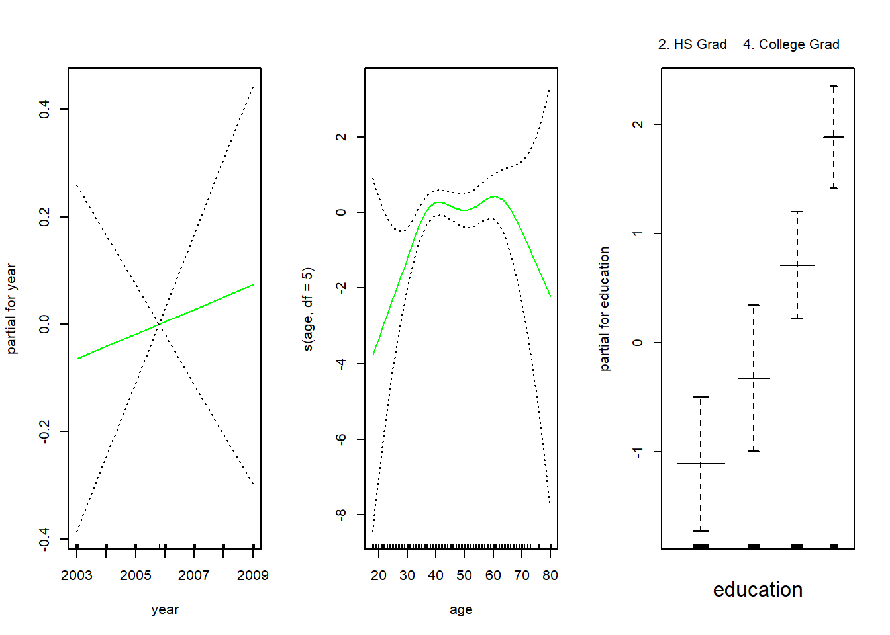
Overview
Section 7: Unsupervised Learning
This section is comprised two demonstrations (accompanied by tasks at the end of each) developed by Dr. George Wood, Lecturer in Social Statistics.
Learning Outcomes:
- preprocess the data for k-means clustering;
- perform k-means clustering in R and interpret the results;
- evaluate k-means clustering performance;
- visualise clusters;
- decide number of clusters;
- perform PCA analysis and interpret the results;
- plot principal components;
- compute correlation between observed y and fitted y;
- compute cumulative variance explained
- compute percentage of variance explained by each principal component;
In this section, you will practice using the functions below. It is highly recommended that you explore these functions further using the Help tab in your RStudio console.
| Function | Description | Package |
|---|---|---|
kmeans() |
perform k-means clustering on a data matrix | base R (stats) |
fviz_cluster() |
visualise clustering results | factoextra |
map_dbl() |
apply a function to each element of a vector | purrr |
fviz_nbclust() |
determining and visualising the optimal number of clusters | factoextra |
head() |
returns the first part of a vector, matrix, table, data frame or function | base R (utils) |
glimpse() |
obtain a glimpse of your data | dplyr |
gglot() |
create a new ggplot | ggplot2 |
geom_point() |
create scatterplot | ggplot2 |
scale_color_discrete() |
use a discrete colour scale | ggplot2 |
scale_x_continuous(), scale_y_continuous() |
position scales for continuous data | ggplot2 |
geom_hline(), geom_vline() |
add horizontal or vertical lines, respectively | ggplot2 |
geom_text() |
adding text geoms (labelling plots) | ggplot2 |
facet_wrap() |
wrap a 1D sequence of panels into 2D | ggplot2 |
coord_equal() |
fixed scale coordinate system | ggplot2 |
geom_smooth() |
smoothed conditional means (addressed overplotting) | ggplot2 |
theme() |
modify components of themes | ggplot2 |
drop_na() |
drop rows containing missing values | tidyr |
select() |
keep or drop columns by name and type | dplyr |
mutate() |
create, modify, delete columns | dplyr |
table() |
build a contingency table  | base R |
rownames(), colnames() |
retrieve or set row or column names of a matrix-like object. | base R |
clean_names() |
clean names of object (usually data.frame) | janitor |
scale() |
scaling and centering matrix-like objects | base R |
pivot_longer() |
pivot data from wide to long | tidyr |
PCA() |
computation of weighted or unweighted principal component analysis of a matrix of interval-scale data | easyCODA |
summary() |
produce result summaries | base R |
lm() |
fit linear models | stats |
cor() |
compute correlation matrix | stats |
t() |
matrix transpose | base |
round() |
round numbers | base |
Demonstration 1: K-means Clustering in R
In this practical, you will learn how to implement k-means clustering using the Palmer Penguins dataset. You can read more about this data here:
The task in this practical is to cluster penguins based on their bill length and flipper length. We will then assess whether the predicted clusters map onto the actual species of penguin in the data. You can view this as an exercise in whether bill length and flipper length is sufficient to differentiate between species of penguin.

(Artwork by @allison_horst)
You should modify and experiment with the below code. There is also a brief exercise for you complete at the end of the walk-through.
You will be required to install two new packages first: palmerpenguins and factoextra.
Profile the Palmer Penguins dataset
## # A tibble: 6 × 8
## species island bill_length_mm bill_depth_mm flipper_length_mm body_mass_g
## <fct> <fct> <dbl> <dbl> <int> <int>
## 1 Adelie Torgersen 39.1 18.7 181 3750
## 2 Adelie Torgersen 39.5 17.4 186 3800
## 3 Adelie Torgersen 40.3 18 195 3250
## 4 Adelie Torgersen NA NA NA NA
## 5 Adelie Torgersen 36.7 19.3 193 3450
## 6 Adelie Torgersen 39.3 20.6 190 3650
## # ℹ 2 more variables: sex <fct>, year <int>## Rows: 344
## Columns: 8
## $ species <fct> Adelie, Adelie, Adelie, Adelie, Adelie, Adelie, Adel…
## $ island <fct> Torgersen, Torgersen, Torgersen, Torgersen, Torgerse…
## $ bill_length_mm <dbl> 39.1, 39.5, 40.3, NA, 36.7, 39.3, 38.9, 39.2, 34.1, …
## $ bill_depth_mm <dbl> 18.7, 17.4, 18.0, NA, 19.3, 20.6, 17.8, 19.6, 18.1, …
## $ flipper_length_mm <int> 181, 186, 195, NA, 193, 190, 181, 195, 193, 190, 186…
## $ body_mass_g <int> 3750, 3800, 3250, NA, 3450, 3650, 3625, 4675, 3475, …
## $ sex <fct> male, female, female, NA, female, male, female, male…
## $ year <int> 2007, 2007, 2007, 2007, 2007, 2007, 2007, 2007, 2007…Plot
## Warning: Removed 2 rows containing missing values or values outside the scale range
## (`geom_point()`).
Visualise the clusters

pengs |>
ggplot(aes(x = bill_length_mm,
y = flipper_length_mm,
color = factor(cluster),
shape = species)) +
geom_point() +
scale_color_discrete("cluster")
To what extent do the clusters overlap with species?
##
## 1 2 3
## Adelie 106 2 38
## Chinstrap 9 5 54
## Gentoo 0 117 2overlap <- sum(diag(pred))
differs <- sum(pred[upper.tri(pred)], pred[lower.tri(pred)])
# proportion of penguins "correctly" classified according to species:
overlap / sum(overlap, differs)## [1] 0.3393393How can we visualise the cluster-species overlap?
pengs |>
mutate(
overlap = case_when(
species == "Adelie" & cluster == 1 ~ "overlap",
species == "Chinstrap" & cluster == 2 ~ "overlap",
species == "Gentoo" & cluster == 3 ~ "overlap",
TRUE ~ "differs"
)
) |>
ggplot(aes(x = bill_length_mm,
y = flipper_length_mm,
color = overlap,
shape = species)) +
geom_point()
üëâ TASKS
TASK 1: How well did k-means clustering perform?
Suppose you randomly picked Adelie, Chinstrap, or Gentoo for each penguin. What proportion of penguins would you “correctly” classify?
Your code here
Consider how this compares to the performance of the k-means clustering algorithm.
TASK 2: How many clusters should we use?
In the above example, we used three clusters because there are three species of penguin in our data. However, in practice, we may not know this “ground-truth” information. That is, we may not know how many species are of penguin are represented in the data.
Additionally, we may wish to cluster the data based on other criteria, such as minimizing the intra-cluster variation. Recall that unsupervised learning is useful for detecting patterns in the data.
One method we can use to determine the optimal number of clusters is the elbow method. This method involves plotting the within-cluster sum of squares (WSS; also known as within-cluster variation or intra-cluster variation) for a range values of k (recall that k is the number of clusters). We then look for the location of the “bend” in the in the plot, i.e., the elbow.
Below, we use the elbow method to determine the optimal number of clusters of penguins using the body_mass_g and bill_length_mm features.
# preprocess data
pengs_mass_length <-
pengs |>
select(body_mass_g, bill_length_mm)
# compute total within-cluster sum of square
wss <- function(k) {
kmeans(
pengs_mass_length,
centers = k,
nstart = 10
)$tot.withinss
}
# Compute and plot WSS for k = 1 to k = 15
k_values <- 1:10
# plot the WSS values against k
wss_values <- map_dbl(k_values, wss)
tibble(
k_values,
wss_values
) |>
ggplot(aes(k_values, wss_values)) +
geom_line() +
geom_point() +
scale_x_continuous("Number of clusters, k", breaks = unique(k_values)) +
scale_y_continuous("Total within-clusters sum of squares")The results here suggest that the optimal number of clusters is 3 (which neatly aligns with the number of penguin species in the data). Although, 4 also looks like a good choice. The elbow method is useful, but it isn’t always clear where the elbow lies, which often simply reflects the reality of the data.
The elbow method is implemented in fviz_nbclust() function from the factoextra package:
TASK 3: Clustering cars
Cluster the mtcars data using kmeans().
## mpg cyl disp hp drat wt qsec vs am gear carb
## Mazda RX4 21.0 6 160 110 3.90 2.620 16.46 0 1 4 4
## Mazda RX4 Wag 21.0 6 160 110 3.90 2.875 17.02 0 1 4 4
## Datsun 710 22.8 4 108 93 3.85 2.320 18.61 1 1 4 1
## Hornet 4 Drive 21.4 6 258 110 3.08 3.215 19.44 1 0 3 1
## Hornet Sportabout 18.7 8 360 175 3.15 3.440 17.02 0 0 3 2
## Valiant 18.1 6 225 105 2.76 3.460 20.22 1 0 3 1Use the mpg and hp features to group the cars into three clusters.
Your code here
How well do your predicted clusters map onto the cyl feature in the mtcars data? (Note that the cyl feature (cylinders) has three values: 4, 6, 8).
Your code here
Next, find the optimal number of clusters in the data using the elbow method. You should start by using the mpg and hp features, although feel free to experiment with using other features.
Your code here
Demonstration 2: Principal Component Analysis in R
For the tasks below, you will require the World Happiness Report (2021) dataset.
Click here to download the file:
world_happiness_report_2021.csv .
Remember to place your data file in a separate subfolder within your R project working directory.
Prior to beginning the practical, you will be required install two packages easyCODA and janitor.
Preprocess the world happiness report data
happy <-
read_csv(
file = "data/world_happiness_report_2021.csv",
show_col_types = FALSE
) |>
clean_names()
happy_standardized <-
happy |>
select(
social = social_support,
life = healthy_life_expectancy,
choices = freedom_to_make_life_choices,
generosity,
corruption = perceptions_of_corruption
) |>
scale()
rownames(happy_standardized) <- happy$country_nameProfile the happiness data
## # A tibble: 6 × 20
## country_name regional_indicator ladder_score standard_error_of_ladder_score
## <chr> <chr> <dbl> <dbl>
## 1 Finland Western Europe 7.84 0.032
## 2 Denmark Western Europe 7.62 0.035
## 3 Switzerland Western Europe 7.57 0.036
## 4 Iceland Western Europe 7.55 0.059
## 5 Netherlands Western Europe 7.46 0.027
## 6 Norway Western Europe 7.39 0.035
## # ℹ 16 more variables: upperwhisker <dbl>, lowerwhisker <dbl>,
## # logged_gdp_per_capita <dbl>, social_support <dbl>,
## # healthy_life_expectancy <dbl>, freedom_to_make_life_choices <dbl>,
## # generosity <dbl>, perceptions_of_corruption <dbl>,
## # ladder_score_in_dystopia <dbl>, explained_by_log_gdp_per_capita <dbl>,
## # explained_by_social_support <dbl>,
## # explained_by_healthy_life_expectancy <dbl>, …Plot happiness score against feature
happy |>
select(
ladder = ladder_score,
social = social_support,
life = healthy_life_expectancy,
choices = freedom_to_make_life_choices,
generosity,
corruption = perceptions_of_corruption
) |>
pivot_longer(-ladder, names_to = "feature", values_to = "value") |>
ggplot(aes(value, ladder)) +
geom_point(alpha = 0.4) +
scale_x_continuous("Feature value") +
scale_y_continuous("Cantrill Ladder happiness score") +
facet_wrap(~ feature, scales = "free_x")
Run PCA using five features
##
## Principal inertias (eigenvalues):
##
## dim value % cum% scree plot
## 1 0.466493 47.0 47.0 ************
## 2 0.243482 24.5 71.5 ******
## 3 0.139560 14.1 85.5 ****
## 4 0.095018 9.6 95.1 **
## 5 0.048735 4.9 100.0 *
## -------- -----
## Total: 0.993289 100.0
##
##
## Rows:
## name mass qlt inr k=1 cor ctr k=2 cor ctr
## 1 | Fnln | 7 707 19 | -1378 683 27 | -257 24 2 |
## 2 | Dnmr | 7 808 19 | -1403 699 28 | -553 109 8 |
## 3 | Swtz | 7 860 14 | -1281 789 24 | -384 71 4 |
## 4 | Icln | 7 817 10 | -1021 738 15 | -334 79 3 |
## 5 | Nthr | 7 929 13 | -1149 667 19 | -719 261 14 |
## 6 | Nrwy | 7 918 17 | -1366 763 27 | -615 155 10 |
## 7 | Swdn | 7 871 16 | -1303 699 24 | -647 172 12 |
## 8 | Lxmb | 7 834 9 | -1030 803 15 | -201 30 1 |
## 9 | NwZl | 7 890 17 | -1322 689 25 | -713 201 14 |
## 10 | Austr | 7 973 8 | -1022 919 15 | -247 54 2 |
## 11 | Astrl | 7 958 11 | -1104 765 18 | -554 193 8 |
## 12 | Isrl | 7 615 4 | -569 563 5 | 173 52 1 |
## 13 | Grmn | 7 888 6 | -882 842 11 | -206 46 1 |
## 14 | Cand | 7 951 10 | -1099 824 17 | -433 128 5 |
## 15 | Irln | 7 867 10 | -1070 750 16 | -422 116 5 |
## 16 | CstR | 7 695 5 | -602 495 5 | 383 200 4 |
## 17 | UntK | 7 856 10 | -914 548 12 | -685 308 13 |
## 18 | CzcR | 7 885 6 | -493 261 3 | 763 624 16 |
## 19 | UntS | 7 665 2 | -456 572 3 | -184 93 1 |
## 20 | Blgm | 7 864 4 | -522 483 4 | 463 381 6 |
## 21 | Frnc | 7 890 6 | -812 717 9 | 399 173 4 |
## 22 | Bhrn | 7 717 3 | -533 573 4 | -267 144 2 |
## 23 | Malt | 7 873 6 | -847 759 10 | -328 114 3 |
## 24 | TwPC | 7 883 2 | -338 506 2 | 292 377 2 |
## 25 | UnAE | 7 919 4 | -555 578 4 | -427 342 5 |
## 26 | SdAr | 7 707 3 | -431 485 3 | 291 222 2 |
## 27 | Span | 7 762 5 | -531 418 4 | 482 345 6 |
## 28 | Itly | 7 552 5 | -140 27 0 | 613 525 10 |
## 29 | Slvn | 7 747 6 | -754 606 8 | 364 142 4 |
## 30 | Gtml | 7 139 2 | -175 138 0 | -16 1 0 |
## 31 | Urgy | 7 893 4 | -721 870 7 | 117 23 0 |
## 32 | Sngp | 7 710 25 | -1535 644 34 | -491 66 7 |
## 33 | Kosv | 7 307 7 | 62 4 0 | -544 303 8 |
## 34 | Slvk | 7 762 4 | -187 56 1 | 664 706 12 |
## 35 | Brzl | 7 864 1 | -199 344 1 | 244 520 2 |
## 36 | Mexc | 7 646 2 | -240 179 1 | 388 467 4 |
## 37 | Jamc | 7 534 4 | -270 140 1 | 453 394 6 |
## 38 | Lthn | 7 941 4 | -233 85 1 | 736 855 15 |
## 39 | Cypr | 7 214 3 | -138 42 0 | 277 171 2 |
## 40 | Estn | 7 824 6 | -829 815 10 | 85 8 0 |
## 41 | Panm | 7 777 4 | -382 243 2 | 566 534 9 |
## 42 | Uzbk | 7 918 13 | -775 320 9 | -1059 598 31 |
## 43 | Chil | 7 542 2 | -133 61 0 | 373 481 4 |
## 44 | Plnd | 7 959 3 | -442 445 3 | 475 514 6 |
## 45 | Kzkh | 7 584 3 | -411 457 2 | 217 127 1 |
## 46 | Romn | 7 684 5 | -32 1 0 | 699 682 13 |
## 47 | Kuwt | 7 615 1 | -272 395 1 | 203 220 1 |
## 48 | Serb | 7 304 1 | -127 87 0 | 201 217 1 |
## 49 | ElSl | 7 112 2 | -170 102 0 | 55 11 0 |
## 50 | Mrts | 7 601 2 | -343 450 2 | 199 151 1 |
## 51 | Latv | 7 823 4 | -96 18 0 | 650 806 12 |
## 52 | Clmb | 7 733 2 | -162 90 0 | 435 643 5 |
## 53 | Hngr | 7 893 5 | -170 41 0 | 775 852 17 |
## 54 | Thln | 7 283 8 | -262 56 1 | -526 227 8 |
## 55 | Ncrg | 7 982 1 | -350 909 2 | -99 73 0 |
## 56 | Japn | 7 820 7 | -618 351 5 | 715 469 14 |
## 57 | Argn | 7 916 3 | -296 171 1 | 618 745 11 |
## 58 | Prtg | 7 772 7 | -467 199 3 | 791 573 17 |
## 59 | Hndr | 7 227 1 | -130 79 0 | -177 148 1 |
## 60 | Crot | 7 726 5 | -171 41 0 | 703 685 14 |
## 61 | Phlp | 7 75 2 | -154 69 0 | 49 7 0 |
## 62 | SthK | 7 279 4 | -65 7 0 | 409 272 5 |
## 63 | Peru | 7 722 3 | -64 10 0 | 535 711 8 |
## 64 | BsnH | 7 44 4 | 132 29 0 | 97 16 0 |
## 65 | Moldv | 7 446 2 | 6 0 0 | 369 446 4 |
## 66 | Ecdr | 7 600 2 | -146 73 0 | 392 527 4 |
## 67 | Kyrg | 7 137 5 | -250 81 1 | -209 56 1 |
## 68 | Grec | 7 741 11 | 199 24 1 | 1088 717 33 |
## 69 | Bolv | 7 104 2 | -8 0 0 | 153 104 1 |
## 70 | Mngl | 7 28 4 | 129 27 0 | -11 0 0 |
## 71 | Prgy | 7 137 3 | -216 125 1 | 65 11 0 |
## 72 | Mntn | 7 419 2 | 16 1 0 | 320 418 3 |
## 73 | DmnR | 7 614 2 | -270 326 1 | 254 288 2 |
## 74 | NrtC | 7 476 3 | -445 474 3 | -23 1 0 |
## 75 | Blrs | 7 407 5 | -66 6 0 | 552 401 8 |
## 76 | Russ | 7 717 2 | 81 18 0 | 508 699 7 |
## 77 | HKSA | 7 333 10 | -645 293 6 | -237 39 2 |
## 78 | Tjks | 7 404 2 | -314 375 1 | -86 28 0 |
## 79 | Vtnm | 7 432 3 | -415 350 2 | 201 82 1 |
## 80 | Liby | 7 120 1 | 57 29 0 | 99 91 0 |
## 81 | Mlys | 7 263 3 | -179 73 0 | -288 190 2 |
## 82 | Indn | 7 576 20 | 90 3 0 | -1310 574 47 |
## 83 | CngB | 7 812 6 | 832 809 10 | -53 3 0 |
## 84 | Chin | 7 485 3 | -360 291 2 | 294 194 2 |
## 85 | IvrC | 7 840 10 | 1074 781 17 | -295 59 2 |
## 86 | Armn | 7 334 2 | -205 137 1 | 245 197 2 |
## 87 | Nepl | 7 774 2 | 134 66 0 | -441 708 5 |
## 88 | Blgr | 7 597 4 | -118 26 0 | 556 572 9 |
## 89 | Mldvs | 7 516 3 | -444 473 3 | 135 43 1 |
## 90 | Azrb | 7 262 5 | -327 152 2 | 278 110 2 |
## 91 | Cmrn | 7 905 6 | 881 858 11 | -206 47 1 |
## 92 | Sngl | 7 964 3 | 672 958 6 | 54 6 0 |
## 93 | Albn | 7 216 3 | 275 161 1 | 160 55 1 |
## 94 | NrtM | 7 289 2 | 252 254 1 | 93 35 0 |
## 95 | Ghan | 7 781 4 | 546 481 4 | -431 300 5 |
## 96 | Niger | 7 738 7 | 721 506 7 | -488 232 7 |
## 97 | Trkm | 7 202 10 | -268 49 1 | -474 153 6 |
## 98 | Gamb | 7 869 17 | 837 280 10 | -1213 589 41 |
## 99 | Benn | 7 653 14 | 1070 540 16 | -490 113 7 |
## 100 | Laos | 7 738 5 | 109 17 0 | -705 721 14 |
## 101 | Bngl | 7 120 2 | 51 7 0 | -201 113 1 |
## 102 | Guin | 7 991 8 | 964 801 13 | -468 189 6 |
## 103 | SthA | 7 460 3 | 415 361 2 | 218 99 1 |
## 104 | Trky | 7 563 6 | 371 154 2 | 605 409 10 |
## 105 | Pkst | 7 965 5 | 764 748 8 | -412 217 5 |
## 106 | Mrcc | 7 334 10 | 590 239 5 | 372 95 4 |
## 107 | Vnzl | 7 746 5 | 279 97 1 | 721 649 14 |
## 108 | Gerg | 7 211 5 | 272 94 1 | 303 117 3 |
## 109 | Algr | 7 394 10 | 624 252 6 | 468 141 6 |
## 110 | Ukrn | 7 355 3 | 170 73 0 | 333 282 3 |
## 111 | Iraq | 7 921 5 | 766 824 8 | 262 96 2 |
## 112 | Gabn | 7 851 4 | 492 424 3 | 493 427 7 |
## 113 | BrkF | 7 906 7 | 912 857 12 | -217 49 1 |
## 114 | Cmbd | 7 117 4 | -3 0 0 | -269 117 2 |
## 115 | Mzmb | 7 557 5 | 313 134 1 | -555 423 8 |
## 116 | Nigeri | 7 773 9 | 962 731 13 | -232 42 1 |
## 117 | Mali | 7 855 7 | 955 852 13 | -56 3 0 |
## 118 | Iran | 7 417 8 | 522 231 4 | -468 185 6 |
## 119 | Ugnd | 7 755 5 | 687 641 7 | -289 114 2 |
## 120 | Libr | 7 942 4 | 743 874 8 | -207 68 1 |
## 121 | Keny | 7 795 8 | 547 251 4 | -805 544 18 |
## 122 | Tuns | 7 752 7 | 577 343 5 | 630 409 11 |
## 123 | Lbnn | 7 520 9 | 528 205 4 | 654 315 12 |
## 124 | Namb | 7 728 4 | 553 491 4 | 385 238 4 |
## 125 | PlsT | 7 859 4 | 438 330 3 | 554 529 8 |
## 126 | Mynm | 7 857 18 | 64 1 0 | -1526 855 64 |
## 127 | Jrdn | 7 476 2 | 74 20 0 | 357 457 4 |
## 128 | Chad | 7 943 17 | 1519 907 33 | -304 36 3 |
## 129 | SrLn | 7 53 2 | -79 24 0 | -86 29 0 |
## 130 | Swzl | 7 569 10 | 884 525 11 | 256 44 2 |
## 131 | Cmrs | 7 839 12 | 1211 806 21 | -247 33 2 |
## 132 | Egyp | 7 762 3 | 393 381 2 | 392 380 4 |
## 133 | Ethp | 7 923 2 | 440 624 3 | -305 299 3 |
## 134 | Mrtn | 7 610 8 | 789 529 9 | 307 80 3 |
## 135 | Mdgs | 7 797 9 | 1025 793 15 | 71 4 0 |
## 136 | Togo | 7 924 13 | 1272 873 23 | -308 51 3 |
## 137 | Zamb | 7 872 4 | 676 702 7 | -332 169 3 |
## 138 | SrrL | 7 965 11 | 1163 852 19 | -424 113 5 |
## 139 | Indi | 7 538 7 | 452 198 3 | -592 340 10 |
## 140 | Brnd | 7 724 18 | 1323 647 25 | -456 77 6 |
## 141 | Yemn | 7 693 7 | 697 476 7 | 471 217 6 |
## 142 | Tnzn | 7 950 6 | 275 82 1 | -894 868 22 |
## 143 | Hait | 7 876 26 | 1312 450 25 | -1275 426 45 |
## 144 | Malw | 7 721 10 | 869 535 11 | -514 187 7 |
## 145 | Lsth | 7 654 11 | 992 615 14 | 253 40 2 |
## 146 | Btsw | 7 436 5 | 281 116 1 | 466 320 6 |
## 147 | Rwnd | 7 430 22 | -55 1 0 | -1187 429 39 |
## 148 | Zmbb | 7 910 5 | 777 901 9 | 79 9 0 |
## 149 | Afgh | 7 890 37 | 2193 878 69 | 257 12 2 |
##
## Columns:
## name mass qlt inr k=1 cor ctr k=2 cor ctr
## 1 | socl | 200 767 200 | -822 680 290 | 294 87 71 |
## 2 | life | 200 816 200 | -860 744 317 | 268 72 59 |
## 3 | chcs | 200 664 200 | -761 583 248 | -284 81 66 |
## 4 | gnrs | 200 782 200 | 7 0 0 | -881 782 638 |
## 5 | crrp | 200 544 200 | 582 341 145 | 449 203 166 |What is the percentage of variance explained by each principal component?
## [1] 0.46964540 0.24512744 0.14050280 0.09566051 0.04906384What is the cumulative variance explained for each variable?
vexp <- function(feature, df, pca) {
reg_pc1 <- lm(df[, feature] ~ pca$rowpcoord[, 1])
reg_pc1_pc2 <- lm(df[, feature] ~ pca$rowpcoord[, 1] + pca$rowpcoord[, 2])
explained_pc1 <- cor(predict(reg_pc1), df[, feature]) ^ 2
explained_pc1_pc2 <- cor(predict(reg_pc1_pc2), df[, feature]) ^ 2
c(explained_pc1, explained_pc1_pc2)
}var_explained <- sapply(1:5, \(x) vexp(x, happy_standardized, happy_pca))
colnames(var_explained) <- colnames(happy_standardized)
rownames(var_explained) <- c("PC1", "PC2")
t(round(var_explained, 3))## PC1 PC2
## social 0.680 0.767
## life 0.744 0.816
## choices 0.583 0.664
## generosity 0.000 0.782
## corruption 0.341 0.544## PC1 PC2
## 0.470 0.715How do we build a correlation matrix of all variables?
## ladder social life choices generosity corruption
## ladder 1.000 0.757 0.768 0.608 -0.018 -0.421
## social 0.757 1.000 0.723 0.483 -0.115 -0.203
## life 0.768 0.723 1.000 0.461 -0.162 -0.364
## choices 0.608 0.483 0.461 1.000 0.169 -0.401
## generosity -0.018 -0.115 -0.162 0.169 1.000 -0.164
## corruption -0.421 -0.203 -0.364 -0.401 -0.164 1.000Correlations of happiness score with PC1 and PC2
row_principal <- -happy_pca$rowpcoord[, 1:2]
colnames(row_principal) <- c("PC1", "PC2")
round(cor(cbind("ladder" = happy$ladder_score, row_principal)), 3)## ladder PC1 PC2
## ladder 1.000 0.85 -0.067
## PC1 0.850 1.00 0.000
## PC2 -0.067 0.00 1.000Plot first two principal components
row_principal |>
as_tibble() |>
mutate(
region = happy$regional_indicator,
country = happy$country_name
) |>
ggplot(aes(PC1, -PC2, color = region, label = country)) +
geom_hline(yintercept = 0, color = "gray70", linetype = "dashed") +
geom_vline(xintercept = 0, color = "gray70", linetype = "dashed") +
geom_text(size = 3, show.legend = FALSE) +
coord_equal()
Regress happiness on the five indicators
happy_standardized_pc <-
happy_standardized |>
as_tibble() |>
mutate(
ladder = happy$ladder_score,
pc1 = happy_pca$rowpcoord[, 1],
pc2 = happy_pca$rowpcoord[, 2],
country = happy$country_name,
region = happy$regional_indicator
)
happiness_full <-
lm(ladder ~ social + life + choices + generosity + corruption,
data = happy_standardized_pc)
summary(happiness_full)##
## Call:
## lm(formula = ladder ~ social + life + choices + generosity +
## corruption, data = happy_standardized_pc)
##
## Residuals:
## Min 1Q Median 3Q Max
## -1.63771 -0.26591 0.02327 0.37120 1.37329
##
## Coefficients:
## Estimate Std. Error t value Pr(>|t|)
## (Intercept) 5.53284 0.04581 120.776 < 2e-16 ***
## social 0.40177 0.06975 5.760 4.96e-08 ***
## life 0.38823 0.07217 5.380 2.98e-07 ***
## choices 0.21977 0.05783 3.801 0.000213 ***
## generosity 0.03033 0.04933 0.615 0.539620
## corruption -0.13599 0.05301 -2.565 0.011343 *
## ---
## Signif. codes: 0 '***' 0.001 '**' 0.01 '*' 0.05 '.' 0.1 ' ' 1
##
## Residual standard error: 0.5592 on 143 degrees of freedom
## Multiple R-squared: 0.738, Adjusted R-squared: 0.7289
## F-statistic: 80.57 on 5 and 143 DF, p-value: < 2.2e-16What is the correlation between observed y and fitted y?
## [1] 0.8590876Visualise happiness against principal components
happy_standardized_pc |>
pivot_longer(
cols = c(pc1, pc2),
names_to = "PC",
values_to = "value"
) |>
ggplot(aes(value, ladder)) +
geom_point(aes(color = region)) +
geom_smooth(
method = "lm",
formula = y ~ x,
linewidth = 0.5,
color = "grey20",
se = FALSE
) +
scale_x_continuous("PC Value") +
scale_y_continuous("Cantrill Ladder Happiness Score") +
facet_wrap(~ PC) +
theme(text = element_text(size = 12))
Regress happiness on first principal component
happiness_reduced <-
lm(formula = ladder ~ pc1, data = happy_standardized_pc)
summary(happiness_reduced)##
## Call:
## lm(formula = ladder ~ pc1, data = happy_standardized_pc)
##
## Residuals:
## Min 1Q Median 3Q Max
## -2.19102 -0.26848 0.06941 0.40025 1.20478
##
## Coefficients:
## Estimate Std. Error t value Pr(>|t|)
## (Intercept) 5.53284 0.04645 119.11 <2e-16 ***
## pc1 -1.33258 0.06801 -19.59 <2e-16 ***
## ---
## Signif. codes: 0 '***' 0.001 '**' 0.01 '*' 0.05 '.' 0.1 ' ' 1
##
## Residual standard error: 0.567 on 147 degrees of freedom
## Multiple R-squared: 0.7231, Adjusted R-squared: 0.7212
## F-statistic: 383.9 on 1 and 147 DF, p-value: < 2.2e-16## [1] 0.8503647üëâ TASK
Now let’s consider PCA using six features. In the example of PCA above, we did not use logged_gdp_per_capita feature for the PCA analysis.
Run PCA using the original five features (ladder, social, life,
choices, corruption) and logged_gdp_per_capita. You may need to do
some preprocessing first.
Your code here
Now regress happiness on the first principal component from your analysis.
Your code here
How does this compare to the previous analysis with five features? Consider here the R^2 value and the correlation between the observed and fitted values.
Your code here
Overview
Section 8: Case Study and Formative Assessment
This section is comprised of a demonstration on utilising ChatGPT for data science projects developed by Dr. Tatjana Kecojevic, Lecturer in Social Statistics.
Leveraging ChatGPT for Enhanced Data Science Projects
Engaging with ChatGPT during data science projects in R offers a versatile and innovative approach to problem-solving and project management. As an AI-powered assistant, ChatGPT efficiently addresses complex challenges at various stages of the project lifecycle, serving as a reliable resource for guidance on best practices, educational insights, and time-saving solutions. By providing instant responses and suggestions, ChatGPT streamlines data preprocessing, model selection, and result interpretation, enabling users to focus more on analysis and decision-making.
ChatGPT’s comprehensive support spans data visualization, statistical analysis, machine learning model building, and beyond, making it an invaluable asset for both novice and experienced data scientists. Its innovative approach encourages experimentation and exploration, fostering creativity and pushing the boundaries of traditional data analysis methodologies. Integrating ChatGPT into data science projects in R not only enhances efficiency but also promotes continuous learning and innovation in the field.
In this tutorial, we will learn how to utilise ChatGPT for an end-to-end data science project. We will use various prompts to create a project outline, write R code, conduct research, and debug applications. Additionally, we will provide tips on crafting effective ChatGPT prompts.
The focus of this tutorial is a single AI project suitable for intermediate practitioners. This project builds on foundational skills and is designed to be both challenging and engaging, offering a practical way to enhance your abilities. You will learn how to handle datasets, build and train models, and evaluate their performance, providing a comprehensive understanding of the AI project lifecycle. For this, we will use the Spanish Wine Quality Dataset available from kaggle.
Learning Outcomes:
- Utilise ChatGPT to guide data preprocessing and selection of machine learning algorithms and techniques;
- Interpret complex models using ChatGPT;
- Summarise findings, create code, and generate reports using ChatGPT;
- Write effective prompts.
Demonstration
Enhancing Data Science Projects with ChatGPT: A Case Study in R.
Data Set
The Spanish Wine Quality Dataset focuses on red wine variants from Spain, detailing various metrics related to their popularity and characteristics, and their influence on quality. It is suitable for classification or regression tasks, with the goal being to predict the quality or price of the wines. Note that the quality ratings range from nearly 5 to 4 points and are not evenly distributed. The dataset comprises 7,500 different types of Spanish red wines, each described by 11 features including price, rating, and flavor descriptors. The data was meticulously gathered through web scraping from diverse sources, such as specialised wine websites and supermarkets.
Attribute Information
- winery: Name of the winery
- wine: Name of the wine
- year: Harvest year of the grapes
- rating: Average user rating (1-5)
- num_reviews: Number of user reviews
- country: Country of origin (Spain)
- region: Wine-producing region
- price: Price in euros (€)
- type: Wine variety
- body: Body score, indicating the richness and weight of the wine (1-5)
- acidity: Acidity score, indicating the wine’s tartness and refreshing quality (1-5)
To start our AI-aided data science project, we’ll need to download the dataset named wines_SPA.csv. Save this dataset in a “data” folder within a new project directory called wines_SPA.

Before we begin, let’s take an initial look at the dataset. Open the downloaded csv file to ensure it’s functional and contains the data we need.
After that, we’ll set up an R project file and dive into our data science project.

Exciting times ahead!
Project Planning: Setting the Stage for Success
Project planning is a critical phase where we assess available resources and goals to develop an optimal strategy. To initiate this process, visit chatGPT and start a new chat. Mention the availability of the Spanish Wine Quality dataset and ask ChatGPT to provide steps for building an end-to-end generic portfolio project. This step lays the groundwork for a successful project by defining clear objectives and identifying the necessary resources.
Prompt: I have The Spanish Wine Quality Dataset, which centers on red wine variations from Spain. It provides detailed metrics regarding their popularity, characteristics, and how these factors influence quality. This dataset is ideal for classification or regression tasks, aiming to predict the quality or price of wines. It’s worth noting that the quality ratings range from nearly 5 to 4 points and are not evenly distributed. The dataset includes 7,500 different types of Spanish red wines, each described by 11 features such as price, rating, and flavor descriptors. Could you guide me through the necessary steps for this data science project using this dataset
ChatGPT

To be in line with our adopted practice, we will summarise ChatGPT’s suggestions into the following set of steps:
- Data Preprocessing + Feature Engineering
- Exploratory Data Analysis (EDA) + Feature Engineering if still needed
- Model Selection and Model Training
- Model Evaluation
- Model Interpretation
- Conclusion
Data Preprocessing
As we use ChatGPT to assist us in this project, some steps will be performed without its aid. These include loading the necessary packages, uploading data, and converting some character-type variables into appropriate factor types.
❗️ Please ensure that you have installed all necessary packages before proceeding with these steps.
> # Load packages
> # Note that you will need to install some of these packages
>
> library(ggplot2) # For creating visualisations.
> library(dplyr) # For wrangling data.
> library(tidyr) # For data tidying operations.
> library(reshape2) # For reshaping data frames.
> library(caret) # For data preprocessing tasks like scaling and imputing missing values and ML.
> library(glmnet) # For fitting Lasso and Ridge regression models.
> library(randomForest) # For fitting Random Forest models.
> library(rpart) # For fitting and visualising decision trees.
> library(rpart.plot) # For visualising decision trees created with the `rpart` package.
> library(splines) # For creating spline basis functions for use in generalised linear models (GLMs)
>
> #read data
> wine_data <- read.csv('data/wines_SPA.csv',
+ header=TRUE,
+ na.strings=c("","NA"),
+ stringsAsFactor = FALSE)
> glimpse(wine_data)## Rows: 7,500
## Columns: 11
## $ winery <chr> "Teso La Monja", "Artadi", "Vega Sicilia", "Vega Sicilia",…
## $ wine <chr> "Tinto", "Vina El Pison", "Unico", "Unico", "Unico", "Unic…
## $ year <chr> "2013", "2018", "2009", "1999", "1996", "1998", "2010", "1…
## $ rating <dbl> 4.9, 4.9, 4.8, 4.8, 4.8, 4.8, 4.8, 4.8, 4.8, 4.8, 4.8, 4.8…
## $ num_reviews <int> 58, 31, 1793, 1705, 1309, 1209, 1201, 926, 643, 630, 591, …
## $ country <chr> "Espana", "Espana", "Espana", "Espana", "Espana", "Espana"…
## $ region <chr> "Toro", "Vino de Espana", "Ribera del Duero", "Ribera del …
## $ price <dbl> 995.0000, 313.5000, 324.9500, 692.9600, 778.0600, 490.0000…
## $ type <chr> "Toro Red", "Tempranillo", "Ribera Del Duero Red", "Ribera…
## $ body <int> 5, 4, 5, 5, 5, 5, 5, 5, 5, 5, 5, 5, 5, 5, 5, 5, 5, 5, 4, 5…
## $ acidity <int> 3, 2, 3, 3, 3, 3, 3, 3, 3, 3, 3, 3, 3, 3, 1, 3, 3, 3, 3, 3…Next, we will convert character types into factors and change the year variable to an integer type. We will also remove the country variable since all the wine is from Spain.
> wine_data [,1] <- as.factor(wine_data[,1])
> wine_data [,2] <- as.factor(wine_data[,2])
> wine_data [,3] <- as.integer(wine_data[,3])
> wine_data [,7] <- as.factor(wine_data[,7])
> wine_data [,9] <- as.factor(wine_data[,9])
> wine_data [,10] <- as.factor(wine_data[,10])
> wine_data [,11] <- as.factor(wine_data[,11])
> wine_data <- wine_data[, !(names(wine_data) %in% c("country"))]
> summary(wine_data)## winery wine year rating
## Contino : 457 Reserva : 467 Min. :1910 Min. :4.200
## Artadi : 261 Gran Reserva : 458 1st Qu.:2011 1st Qu.:4.200
## La Rioja Alta : 254 Rioja Reserva: 240 Median :2015 Median :4.200
## Sierra Cantabria: 237 El Viejo : 224 Mean :2013 Mean :4.255
## Matarromera : 232 Corimbo I : 223 3rd Qu.:2017 3rd Qu.:4.200
## Vina Pedrosa : 230 Mirto : 223 Max. :2021 Max. :4.900
## (Other) :5829 (Other) :5665 NA's :290
## num_reviews region price
## Min. : 25.0 Rioja :2440 Min. : 4.99
## 1st Qu.: 389.0 Ribera del Duero:1413 1st Qu.: 18.90
## Median : 404.0 Priorato : 686 Median : 28.53
## Mean : 451.1 Toro : 300 Mean : 60.10
## 3rd Qu.: 415.0 Vino de Espana : 263 3rd Qu.: 51.35
## Max. :32624.0 Rias Baixas : 252 Max. :3119.08
## (Other) :2146
## type body acidity
## Rioja Red :2357 2 : 34 1 : 35
## Ribera Del Duero Red:1407 3 : 553 2 : 268
## Red : 864 4 :4120 3 :6028
## Priorat Red : 674 5 :1624 NA's:1169
## Toro Red : 296 NA's:1169
## (Other) :1357
## NA's : 545## [1] 7500 10We have observed the presence of missing values in our dataset. Given the substantial size of our dataset, we can opt to remove rows that contain NA values.
> # contains only the rows where there are no NAs in the specified columns.
> wine_data <- wine_data[complete.cases(wine_data[, c("body", "acidity", "type")]), ]
> # Handle missing values in the 'year' variable
> wine_data$year[is.na(wine_data$year)] <- median(wine_data$year, na.rm = TRUE)
> # Check the number of missing values after removal
> missing_values <- colSums(is.na(wine_data))
> print(missing_values)## winery wine year rating num_reviews region
## 0 0 0 0 0 0
## price type body acidity
## 0 0 0 0## winery wine year rating
## Contino : 414 Reserva : 422 Min. :1910 Min. :4.20
## Artadi : 239 Gran Reserva : 415 1st Qu.:2011 1st Qu.:4.20
## La Rioja Alta : 228 Rioja Reserva : 218 Median :2015 Median :4.20
## Sierra Cantabria: 215 Corimbo I : 202 Mean :2013 Mean :4.26
## Vina Pedrosa : 207 El Viejo : 202 3rd Qu.:2017 3rd Qu.:4.20
## Imperial : 206 Rioja Graciano: 202 Max. :2021 Max. :4.90
## (Other) :4822 (Other) :4670
## num_reviews region price
## Min. : 25.0 Rioja :2221 Min. : 4.99
## 1st Qu.: 388.0 Ribera del Duero :1281 1st Qu.: 19.98
## Median : 402.0 Priorato : 622 Median : 29.15
## Mean : 444.1 Toro : 264 Mean : 65.71
## 3rd Qu.: 415.0 Vino de Espana : 240 3rd Qu.: 60.95
## Max. :32624.0 Jerez-Xeres-Sherry: 225 Max. :3119.08
## (Other) :1478
## type body acidity
## Rioja Red :2143 2: 34 1: 35
## Ribera Del Duero Red:1278 3: 553 2: 268
## Red : 787 4:4120 3:6028
## Priorat Red : 620 5:1624
## Tempranillo : 268
## Toro Red : 261
## (Other) : 974## Rows: 6,331
## Columns: 10
## $ winery <fct> Teso La Monja, Artadi, Vega Sicilia, Vega Sicilia, Vega Si…
## $ wine <fct> Tinto, Vina El Pison, Unico, Unico, Unico, Unico, Unico, U…
## $ year <dbl> 2013, 2018, 2009, 1999, 1996, 1998, 2010, 1995, 2015, 2011…
## $ rating <dbl> 4.9, 4.9, 4.8, 4.8, 4.8, 4.8, 4.8, 4.8, 4.8, 4.8, 4.8, 4.8…
## $ num_reviews <int> 58, 31, 1793, 1705, 1309, 1209, 1201, 926, 643, 630, 591, …
## $ region <fct> Toro, Vino de Espana, Ribera del Duero, Ribera del Duero, …
## $ price <dbl> 995.0000, 313.5000, 324.9500, 692.9600, 778.0600, 490.0000…
## $ type <fct> Toro Red, Tempranillo, Ribera Del Duero Red, Ribera Del Du…
## $ body <fct> 5, 4, 5, 5, 5, 5, 5, 5, 5, 5, 5, 5, 5, 5, 5, 5, 5, 5, 4, 5…
## $ acidity <fct> 3, 2, 3, 3, 3, 3, 3, 3, 3, 3, 3, 3, 3, 3, 1, 3, 3, 3, 3, 3…As we conclude the data preprocessing step, we have transformed character types into factors, changed the year variable to an integer type, and removed the country variable, considering that all wines are from Spain. Additionally, we have addressed missing values by removing rows containing NA values. With these preparations completed, we are now ready to proceed to the next step: Exploratory Data Analysis (EDA), where we will delve deeper into the dataset to gain insights and prepare for the model selection process.
Exploratory Data Analysis (EDA)
Exploratory Data Analysis (EDA) is a crucial step in the data science process that involves exploring and understanding the structure, patterns, and relationships in a dataset. By visually and statistically analysing the data, data scientists can uncover insights, identify patterns, and detect anomalies that can inform subsequent analysis and modelling decisions. In this section, we will perform EDA on the wine dataset to gain a deeper understanding of its features and prepare for the modelling phase. Through visualisations and summary statistics, we aim to uncover meaningful patterns and relationships in the data, which will guide our further analysis and modelling strategies.
Let’s begin by presenting the dataset’s size and complexity, starting with the number of rows and columns. Additionally, we’ll compute summary statistics for numerical variables to gain insights into their distribution and range. This analysis can help us identify potential outliers and better understand the overall structure of the data.
## Number of rows: 6331## Number of columns: 10> # Statistical summary for numerical variables
> num_vars <- sapply(wine_data, is.numeric)
> num_data <- wine_data[, num_vars]
> summary(num_data)## year rating num_reviews price
## Min. :1910 Min. :4.20 Min. : 25.0 Min. : 4.99
## 1st Qu.:2011 1st Qu.:4.20 1st Qu.: 388.0 1st Qu.: 19.98
## Median :2015 Median :4.20 Median : 402.0 Median : 29.15
## Mean :2013 Mean :4.26 Mean : 444.1 Mean : 65.71
## 3rd Qu.:2017 3rd Qu.:4.20 3rd Qu.: 415.0 3rd Qu.: 60.95
## Max. :2021 Max. :4.90 Max. :32624.0 Max. :3119.08From the summary statistics, we can draw the following conclusions:
year: The wines in the dataset span a wide range of years, from 1910 to 2021, with the majority falling between 2011 and 2017.
rating: The ratings for the wines range from 4.2 to 4.9, with an average rating of approximately 4.26. The ratings appear to be quite high, with the median also at 4.2.
num_reviews: The number of reviews for the wines varies widely, with a minimum of 25 reviews and a maximum of 16505 reviews. The average number of reviews is approximately 440, indicating that some wines have received significant attention and feedback.
price: The prices of the wines range from 6.26 to 3119.08, with an average price of approximately 67.40. However, the distribution of prices appears to be skewed, as the median price is 31.63, which is much lower than the mean.
Now, we will utilise ChatGPT to aid us in conducting Exploratory Data Analysis (EDA) on the wine_data dataset. Through a combination of visualisations and statistical analyses, we aim to explore the distribution of key numerical variables such as rating, num_reviews, and price. Additionally, we will investigate the potential impact of categorical variables such as region, type and acidity on these key metrics.
Prompt: Please provide an R code for creating visually appealing visualisations of key numerical variables such as rating, num_reviews, and price. Additionally, analyse the potential impact of categorical variables such as region, and type on these key metrics. The dataset has a structure of 6,331 rows and 10 columns, with variables including winery, wine, year, rating, num_reviews, region, price, type, body, and acidity.
> glimpse(wine_data)
Rows: 6,331
Columns: 10
$ winery <fct> Teso La Monja, Artadi, Vega…
$ wine <fct> Tinto, Vina El Pison, Unico…
$ year <dbl> 2013, 2018, 2009, 1999, 199…
$ rating <dbl> 4.9, 4.9, 4.8, 4.8, 4.8, 4.…
$ num_reviews <int> 58, 31, 1793, 1705, 1309, 1…
$ region <fct> Toro, Vino de Espana, Riber…
$ price <dbl> 995.00, 313.50, 324.95, 692…
$ type <fct> Toro Red, Tempranillo, Ribe…
$ body <fct> 5, 4, 5, 5, 5, 5, 5, 5, 5, …
$ acidity <fct> 3, 2, 3, 3, 3, 3, 3, 3, 3, …❗️ Make sure to include the glimpse() output in your prompt question to give an overview of your data’s structure!
ChatGPT

> # Create visualisations
>
> # Histogram of Ratings
> ggplot(wine_data, aes(x = rating)) +
+ geom_histogram(binwidth = 0.1, fill = "skyblue", color = "black") +
+ labs(title = "Distribution of Ratings", x = "Rating", y = "Frequency")
> # Histogram of Price
> ggplot(wine_data, aes(x = price)) +
+ geom_histogram(binwidth = 20, fill = "skyblue", color = "black") +
+ labs(title = "Distribution of Wine Prices", x = "Price", y = "Frequency")> # Scatterplot of Rating vs. Num_reviews
> ggplot(wine_data, aes(x = num_reviews, y = rating)) +
+ geom_point(color = "skyblue") +
+ labs(title = "Rating vs. Number of Reviews", x = "Number of Reviews", y = "Rating")> # Barplot of Wine Types
> ggplot(wine_data, aes(x = type, fill = type)) +
+ geom_bar() +
+ labs(title = "Distribution of Wine Types", x = "Type", y = "Count") +
+ theme(axis.text.x = element_text(angle = 45, hjust = 1),
+ legend.position = "none")> # Barplot of Regions
> ggplot(wine_data, aes(x = region, fill = region)) +
+ geom_bar() +
+ labs(title = "Distribution of Regions", x = "Region", y = "Count") +
+ theme(axis.text.x = element_text(angle = 45, hjust = 1),
+ legend.position = "none")
The Barplot of Regions is challenging to interpret due to the numerous regions displayed. Since there are too many regions to effectively visualise, let’s seek assistance from ChatGPT for a solution.
Prompt: Please filter and display only the top 10 regions for better clarity in this visualization.
ggplot(wine_data, aes(x = region, fill = region)) +
geom_bar() +
labs(title = "Distribution of Regions", x = "Region", y = "Count") +
theme(axis.text.x = element_text(angle = 45, hjust = 1),
legend.position = "none")
❗️ Once more, please ensure that the code is included to enhance clarity
ChatGPT

We can enhance the ggplot by removing the legend, as the region names are already displayed below the bars.
> # Get the top 10 regions by frequency
> top_regions <- wine_data %>%
+ group_by(region) %>%
+ summarize(count = n()) %>%
+ arrange(desc(count)) %>%
+ head(10)
> # Filter the dataset to include only the top 10 regions
> wine_data_top_regions <- wine_data %>%
+ filter(region %in% top_regions$region)
> # Barplot of Top 10 Regions
> ggplot(wine_data_top_regions, aes(x = region, fill = region)) +
+ geom_bar() +
+ labs(title = "Top 10 Regions by Frequency", x = "Region", y = "Count") +
+ theme(axis.text.x = element_text(angle = 45, hjust = 1),
+ legend.position = "none")
Let’s assess the degree of association between the key variables. To do this, we’ll need to convert the variables ‘body’ and ‘acidity’.
> # Convert factors to numeric (if appropriate)
> wine_data$body <- as.numeric(as.character(wine_data$body))
> wine_data$acidity <- as.numeric(as.character(wine_data$acidity))
>
> # Compute the correlation matrix
> correlation_matrix <- cor(wine_data[, c("year", "rating", "num_reviews", "price", "body", "acidity")])
> correlation_matrix## year rating num_reviews price body
## year 1.00000000 -0.2957784867 0.0354872722 -0.38526005 -0.10277253
## rating -0.29577849 1.0000000000 -0.0001653593 0.55209571 0.16303349
## num_reviews 0.03548727 -0.0001653593 1.0000000000 -0.03393994 0.06710569
## price -0.38526005 0.5520957084 -0.0339399360 1.00000000 0.15362352
## body -0.10277253 0.1630334935 0.0671056895 0.15362352 1.00000000
## acidity 0.14806938 -0.0945527010 0.0401375039 -0.03286992 -0.01795032
## acidity
## year 0.14806938
## rating -0.09455270
## num_reviews 0.04013750
## price -0.03286992
## body -0.01795032
## acidity 1.00000000Let us ask chatGPT to visualise this outcome.
Prompt: Please provide R code to create a heatmap visualising the correlation matrix shown below. Ensure the heatmap includes a gradient color scheme, correlation coefficients, axis labels, and a title.
> correlation_matrix
year rating num_reviews price
year 1.00000000 -0.2957784867 0.0354872722 -0.38526005
rating -0.29577849 1.0000000000 -0.0001653593 0.55209571
num_reviews 0.03548727 -0.0001653593 1.0000000000 -0.03393994
price -0.38526005 0.5520957084 -0.0339399360 1.00000000
body -0.10277253 0.1630334935 0.0671056895 0.15362352
acidity 0.14806938 -0.0945527010 0.0401375039 -0.03286992
body acidity
year -0.10277253 0.14806938
rating 0.16303349 -0.09455270
num_reviews 0.06710569 0.04013750
price 0.15362352 -0.03286992
body 1.00000000 -0.01795032
acidity -0.01795032 1.00000000ChatGPT

> # Create a heatmap of the correlation matrix with correlation coefficients
> ggplot(data = melt(correlation_matrix), aes(x=Var1, y=Var2, fill=value)) +
+ geom_tile() +
+ geom_text(aes(label = round(value, 2)), color = "black", size = 3) + # Add text labels for correlation coefficients
+ scale_fill_gradient2(low="blue", mid="white", high="red", midpoint=0, limit=c(-1,1)) +
+ theme_minimal() +
+ labs(title="Correlation Heatmap", x="Variables", y="Variables") +
+ theme(axis.text.x = element_text(angle = 90, vjust = 0.5, hjust=1))
The correlation matrix offers valuable insights into the relationship between wine attributes and prices. It reveals that older wines tend to be less expensive, as seen in the negative correlation between year and price. Conversely, higher-rated wines are associated with higher prices, supported by the positive correlation between rating and price. Surprisingly, there is almost no relationship between the number of reviews or acidity and price, suggesting limited impact on pricing decisions. Additionally, wines with a higher body may command slightly higher prices, indicated by a weak positive correlation. Overall, the rating emerges as the strongest predictor of wine price, underscoring the significance of quality perception in pricing strategies.
In conclusion, the EDA phase has shed light on the key variables influencing wine prices. Factors such as the year of production, wine rating, and body appear to be significant determinants. However, variables like the number of reviews and acidity show minimal impact. With these insights, we can now transition to the next phase: model selection and training. This step will involve choosing suitable models to predict wine prices based on the identified variables and training them on our dataset to make accurate price predictions.
Model Selection and Model Training
Model selection and training are pivotal stages in any data analysis project, especially when predicting intricate phenomena like wine prices. During this phase, we will leverage the insights gleaned from our exploratory data analysis (EDA) to select the most appropriate machine learning models for predicting wine prices. Our goal is to choose models that can adeptly capture the relationships between key variables identified in the EDA, thereby crafting robust and accurate models for predicting wine prices. This process will entail evaluating various regression models, including linear regression, lasso regression, ridge regression, regression tree, and Generalized Additive Model (GAM), to ascertain which one performs optimally for our dataset. Through the process of model selection and training, our aim is to develop a dependable pricing model that can facilitate stakeholders in making well-informed decisions within the wine industry.
However, considering that certain attribute variables in wine_data comprise a large number of levels, we will exclude the fitting of the multiple regression model. Linear models assume a linear relationship between the predictors and the outcome variable, which can be challenging when dealing with numerous factor levels. In such instances, the model may attempt to fit each level individually, leading to overfitting and a lack of generalisation to new data. Furthermore, estimating coefficients for each factor level can be computationally intensive and may not be viable for sizable datasets. The interpretation of coefficients in a linear model with many factor levels can also be intricate, making it challenging to discern the impact of each level on the outcome variable. Therefore, alternative modeling techniques that can effectively handle factor variables with a large number of levels, such as tree-based models, may be more suitable in these scenarios.
So, let us start by asking chatGPT to build for us those suggested models.
Prompt: Perform machine learning to predict wine prices using lasso regression, ridge regression, regression tree, and Generalized Additive Model (GAM) to identify the most effective model for the wine_data dataset.
> glimpse(wine_data)
Rows: 6,331
Columns: 10
$ winery <fct> Teso La Monja, Artadi, Vega…
$ wine <fct> Tinto, Vina El Pison, Unico…
$ year <dbl> 2013, 2018, 2009, 1999, 199…
$ rating <dbl> 4.9, 4.9, 4.8, 4.8, 4.8, 4.…
$ num_reviews <int> 58, 31, 1793, 1705, 1309, 1…
$ region <fct> Toro, Vino de Espana, Riber…
$ price <dbl> 995.00, 313.50, 324.95, 692…
$ type <fct> Toro Red, Tempranillo, Ribe…
$ body <dbl> 5, 4, 5, 5, 5, 5, 5, 5, 5, …
$ acidity <dbl> 3, 2, 3, 3, 3, 3, 3, 3, 3, …ChatGPT
> # Set seed for reproducibility
> set.seed(123)
>
> # Split the data into training and testing sets
> train_indices <- sample(1:nrow(wine_data), 0.7 * nrow(wine_data))
> train_data <- wine_data[train_indices, ]
> test_data <- wine_data[-train_indices, ]
>
> # Fit lasso regression
> lasso_model <- glmnet::glmnet(as.matrix(select(train_data, -price)), train_data$price, alpha = 1)
>
> # Fit ridge regression
> ridge_model <- glmnet::glmnet(as.matrix(select(train_data, -price)), train_data$price, alpha = 0)
>
> # Fit regression tree
> tree_model <- rpart::rpart(price ~ ., data = train_data)
>
> # Fit Generalized Additive Model (GAM)
> gam_model <- mgcv::gam(price ~ bs(year, df = 3) + bs(rating, df = 3) + bs(num_reviews, df = 3) + bs(body, df = 3) + bs(acidity, df = 3), data = train_data)In this section, we fitted various models for predicting wine prices, including lasso regression, ridge regression, regression tree, and Generalized Additive Model (GAM). Each model offers unique advantages and complexities, making it crucial to select the most suitable one for our dataset. Following model selection and training, the next step is to evaluate the performance of these models to determine which one best predicts wine prices. This evaluation will provide insights into the model’s accuracy and reliability, guiding us in making informed decisions about the most effective model for our wine_data dataset.
Model Evaluation
In the Model Evaluation section, we assess the performance of various machine learning models in predicting wine prices for the wine_data dataset. By examining metrics such as RMSE and MAE, we aim to determine the most accurate and reliable model for our predictive tasks. This evaluation will provide valuable insights into the effectiveness of each model and guide us in selecting the best approach for predicting wine prices.
We will ask chatGPT to generate the code for this task.
Prompt: Please generate R code to evaluate the performance of the fitted models (lasso regression, ridge regression, regression tree, and Generalized Additive Model) on the test dataset. Compute and print the RMSE and MAE for each model in the code given to assess their predictive accuracy.
# Set seed for reproducibility
set.seed(123)
# Split the data into training and testing sets
train_indices <- sample(1:nrow(wine_data), 0.7 * nrow(wine_data))
train_data <- wine_data[train_indices, ]
test_data <- wine_data[-train_indices, ]
# Fit lasso regression
lasso_model <- glmnet::glmnet(as.matrix(select(train_data, -price)), train_data$price, alpha = 1)
# Fit ridge regression
ridge_model <- glmnet::glmnet(as.matrix(select(train_data, -price)), train_data$price, alpha = 0)
# Fit regression tree
tree_model <- rpart::rpart(price ~ ., data = train_data)
# Fit Generalized Additive Model (GAM)
gam_model <- mgcv::gam(price ~ bs(year, df = 3) + bs(rating, df = 3) + bs(num_reviews, df = 3) + bs(body, df = 3) + bs(acidity, df = 3), data = train_data)ChatGPT

> # Predictions for lasso regression
> lasso_pred <- predict(lasso_model, newx = as.matrix(select(test_data, -price)))
> lasso_rmse <- sqrt(mean((lasso_pred - test_data$price)^2))
> lasso_mae <- mean(abs(lasso_pred - test_data$price))
>
> # Predictions for ridge regression
> ridge_pred <- predict(ridge_model, newx = as.matrix(select(test_data, -price)))
> ridge_rmse <- sqrt(mean((ridge_pred - test_data$price)^2))
> ridge_mae <- mean(abs(ridge_pred - test_data$price))
>
> # Predictions for regression tree
> tree_pred <- predict(tree_model, newdata = test_data)
> tree_rmse <- sqrt(mean((tree_pred - test_data$price)^2))
> tree_mae <- mean(abs(tree_pred - test_data$price))
>
> # Predictions for GAM
> gam_pred <- predict(gam_model, newdata = test_data)
> gam_rmse <- sqrt(mean((gam_pred - test_data$price)^2))
> gam_mae <- mean(abs(gam_pred - test_data$price))
>
> # Print RMSE and MAE for each model
> cat("Lasso Regression RMSE:", lasso_rmse, "\n")## Lasso Regression RMSE: 142.121## Lasso Regression MAE: 47.67765## Ridge Regression RMSE: 160.9951## Ridge Regression MAE: 52.27333## Regression Tree RMSE: 88.45144## Regression Tree MAE: 24.06545## Generalized Additive Model RMSE: 123.112## Generalized Additive Model MAE: 40.67011We can consolidate the results and display them in a unified table for easier comparison.
> # Combine results into a table
> results <- data.frame(
+ Model = c("Lasso Regression", "Ridge Regression", "Regression Tree", "Generalized Additive Model"),
+ RMSE = c(lasso_rmse, ridge_rmse, tree_rmse, gam_rmse),
+ MAE = c(lasso_mae, ridge_mae, tree_mae, gam_mae)
+ )
>
> # Print the table
> print(results)## Model RMSE MAE
## 1 Lasso Regression 142.12096 47.67765
## 2 Ridge Regression 160.99508 52.27333
## 3 Regression Tree 88.45144 24.06545
## 4 Generalized Additive Model 123.11196 40.67011Upon analysis, it becomes evident that the Regression Tree model outperforms other models in this dataset, particularly due to its ability to handle numerous features effectively. This conclusion is drawn from a comparative evaluation of the models, highlighting the Regression Tree’s superior performance in managing the complexity of the dataset’s features.
Model Interpretation
In the model interpretation section of this report, we delve into the insights gained from the trained machine learning models, aiming to understand the underlying factors that influence wine prices. By analysing the feature importance, decision rules, and predicted values of the models, we seek to unravel the complex relationships between wine characteristics and their market values. This section not only sheds light on the predictive performance of the models but also provides actionable insights for stakeholders in the wine industry, guiding them in making informed decisions related to pricing strategies and product development.
We will begin by plotting the regression tree for the wine_data, providing a visual representation of the decision-making process of the model. You can interpret the tree by starting at the root node and following the branches to the leaf nodes, where the predictions are made. Each split in the tree represents a decision based on a feature in the dataset, and the leaf nodes represent the predicted wine prices.
Let us visualise the tree.
> rpart.plot(tree_model,
+ box.palette = "RdBu",
+ shadow.col = "gray",
+ nn = TRUE,
+ type = 4,
+ fallen.leaves = TRUE,
+ branch.lty = 3,
+ branch.lwd = 2,
+ extra = 1,
+ cex = 0.6, # Reduce the size of nodes and text
+ faclen = 3) # Adjust the faclen value to increase space between nodes## Call:
## rpart::rpart(formula = price ~ ., data = train_data)
## n= 4431
##
## CP nsplit rel error xerror xstd
## 1 0.54735715 0 1.0000000 1.0006206 0.17076673
## 2 0.08338496 1 0.4526429 0.5384705 0.10301520
## 3 0.07689143 2 0.3692579 0.5090425 0.09812500
## 4 0.03461715 3 0.2923665 0.4213455 0.08404526
## 5 0.03452879 4 0.2577493 0.4161366 0.08524950
## 6 0.01482093 5 0.2232205 0.3842724 0.08380711
## 7 0.01208131 6 0.2083996 0.3696184 0.08374828
## 8 0.01148682 7 0.1963183 0.3525272 0.08166889
## 9 0.01000000 8 0.1848315 0.3686921 0.08631320
##
## Variable importance
## wine winery region type year num_reviews
## 57 19 6 5 5 3
## body rating
## 3 2
##
## Node number 1: 4431 observations, complexity param=0.5473571
## mean=63.84701, MSE=24260.23
## left son=2 (4358 obs) right son=3 (73 obs)
## Primary splits:
## wine splits as --LLL--LLL--LLLLLLLLLLLL-LL--LLLL-LLL--LLLL--LLLLL-LLLLL-LLLLLLLL-LL-LLL-LLL--LLLLL--L--LL-L--LLLL---LL-LL--LLLLLL-LLLL-LLLLLLLLLL-L-LL-LLLL-L--LLLL-L-LLLLL-LLLLLLLLLLLL-LLLLLLLLLLLLLLLL---LLLLRL-LL-LL-LL-LLLL---LLLLLLLL-LL--L--LLLLLLLLLLL--LLL-LLL--LLLLLL--LLLLL----LL-LLL-LLL-L-L-LLLLLLLLL-LLL-LLLLLLL--LLLL--L-L-L-L-LLL-LLLL-LL-R-L--LLL-L-LLLLLLLL-LLLLL-L-L-LLL-LL-L-L---LLL--L-LLLL-L-R-LLLLLLLLL--LLLRLLL-L-LLLLLL-----L----L--LLLL-L--LLLLL-LLL--L--LLLL-LLLLLLLLL--LLL--LLLLL--LLLL--LL-LLLLLLLLL--LL-LL-LL-LLL--L--LL-L-L--L--LL--L--LL-LL-LLLLL-LLL-LLLLLLLL-L-L-LLL-LLL-LL-LLLL--LRL--LL-L-LLLL-L-LLLLL-LL-L--LLL-LLL--LLLLLLLLLLLL-LL-LLLLL-LLL-RLLL-LLLLLLL-L-LLLLLLLLLLLL---LLL---LLLL---L-L---LLLLLLLLLLL----LLLL---L-LLLLLLLLLLL-L---L-LL-LLLLL-LLLR-LLL-LLLL-LLLLLL--LLL--L-LLL-RRL-L-LL--LL-LLL---LL-L-L-L----LLLLLLLLL-LLLL-LLLLLLL-L-LLL-LL-LLLLLL, improve=0.5473571, (0 missing)
## winery splits as -LLLLLLLLLLL-LL-LLLLLLLLRL-LLLLLLLLLLL---L-LLL--L--LLLL---LL-LLRL-L--LLLL-L-LLLLL-LLLL-LL-LLLL-LLLLLLLLLLLLL---LL-LLLLLL-----L-L-LL-LLL-LLLLLL-LLL-LLRLLLLLLLLLLLLLL-LL-LLLR---LLLL-L--RLL-LL-LLLLL-L-L-LL-LL-LLLLLL-L-LL-LLLL--L-LL-L-LLLLL--L-LLLLLLLLL-L-LL-LLLLL-LLLLL-LLLLLL-L--L-LL-LLLLLL-LL--LLLLL-LLLL--LLL--LLLLLLLLL-LLLLLLLL-LLL-L-LLLL-R--LLLLLLLLLL-LLLL-LLLL-LLL---LLL-L-LLLLLLL-L--LLLLLLLLLLLL--L--LL-LLLLL----LL-RLLLRLLLL-LL-LLL-L-LLLL-LLLLLR--LLLLLL-LLLLLL-LLL-L-LLLLL-L-L, improve=0.3886168, (0 missing)
## rating < 4.55 to the left, improve=0.3049241, (0 missing)
## year < 2003.5 to the right, improve=0.1302212, (0 missing)
## num_reviews < 325.5 to the right, improve=0.1113139, (0 missing)
## Surrogate splits:
## winery splits as -LLLLLLLLLLL-LL-LLLLLLLLLL-LLLLLLLLLLL---L-LLL--L--LLLL---LL-LLRL-L--LLLL-L-LLLLL-LLLL-LL-LLLL-LLLLLLLLLLLLL---LL-LLLLLL-----L-L-LL-LLL-LLLLLL-LLL-LLLLLLLLLLLLLLLLL-LL-LLLR---LLLL-L--LLL-LL-LLLLL-L-L-LL-LL-LLLLLL-L-LL-LLLL--L-LL-L-LLLLL--L-LLLLLLLLL-L-LL-LLLLL-LLLLL-LLLLLL-L--L-LL-LLLLLL-LL--LLLLL-LLLL--LLL--LLLLLLLLL-LLLLLLLL-LLL-L-LLLL-L--LLLLLLLLLL-LLLL-LLLL-LLL---LLL-L-LLLLLLL-L--LLLLLLLLLLLL--L--LL-LLLLL----LL-LLLLLLLLL-LL-LLL-L-LLLL-LLLLLR--LLLLLL-LLLLLL-LLL-L-LLLLL-L-L, agree=0.988, adj=0.274, (0 split)
## rating < 4.75 to the left, agree=0.984, adj=0.014, (0 split)
##
## Node number 2: 4358 observations, complexity param=0.07689143
## mean=48.93278, MSE=4646.262
## left son=4 (4087 obs) right son=5 (271 obs)
## Primary splits:
## wine splits as --LLR--LLL--LLLLLLLLLLLL-LL--RLLL-RLL--LLLL--LLLLL-LLLLL-RLLLLLLL-RL-LLL-LLL--LRLLL--L--RL-L--LLLL---LL-LL--LLLLRR-LLLL-RLLLLRLLLL-L-RL-LLLR-L--LLLL-L-LLLLL-LLLLRLLRLLRL-LLLLLLRLLLLLRLLL---LLLL-L-LL-LL-LL-LLLR---LLLRLLLL-LR--L--LLLRLRRLLLL--LLL-RLL--LRRLLL--LLLLL----LL-LLL-LLL-L-L-LLLLLLLLL-LLL-LLLLLLL--LLLL--L-L-L-L-RLL-LLLL-LL---L--LLR-R-LRLLRLLL-LLLRL-L-R-RLL-LL-L-L---RLL--L-LLLL-L---LRLLLLLLL--RLL-LLL-L-LLLLLL-----L----L--LLLL-L--LRLLR-LRL--L--RLLL-LLLLLRRLL--LRL--RLLLL--RLLL--LL-LLRLLLLLL--LR-LL-LL-LLL--R--RL-L-L--L--LL--L--LL-RL-LLLLL-LLL-LLLLLLLL-L-L-LRL-LLL-RR-LLRL--L-L--LL-L-LLLL-L-RLLLL-LL-L--RLL-LLL--LLLLLLLLRLLL-LL-LLLLL-LLL--LRL-LLLLLLL-L-LLLLRLLRLLLR---LLL---LRLL---L-L---LLLLLLLLLLL----LLLL---L-LLLLLLRRRLR-L---L-LL-LLLLL-LLL--LLL-LLLL-RLLRLL--LLL--L-LLL---R-R-LR--LL-LRL---LL-L-L-L----LLLLLLLLL-LRLL-RRRLLLL-L-LLL-LL-LLLLLL, improve=0.4082101, (0 missing)
## winery splits as -LLLLLLLRLLL-LR-LLLLLLRLLL-LLRLLLLLLLL---L-LLL--L--LLLL---LL-LLLL-L--LLLL-L-LLLLR-LLLR-LL-LLLL-LLLLLLLLLLLRL---LL-LLLLLL-----L-L-LL-LRL-LLLLLL-LLL-LLRLLLLLLLLLLLLLL-LL-LLLR---LLLL-L--LRL-LL-LLLRL-L-L-LL-LL-LLLRLL-L-LL-LLLR--L-LL-L-LRLLL--L-LLLLLLLLL-L-LL-LLRLL-LLLLL-LLLLLL-L--L-LL-LLLLLL-LL--LLLLR-LLLL--LLR--RLRRLLLLL-LLLLLLLL-LLL-L-LLLL-R--LLLLRRLLLL-LLLL-LLLL-LLL---RLL-L-LLLLLLL-L--LLLLLLLLLLLL--L--RL-LLLLL----LL-RLRRRLLLL-RL-LLL-L-LLLR-LLLLLR--LLLLLL-RLLLLL-LLL-L-LLLLL-L-L, improve=0.2804499, (0 missing)
## rating < 4.45 to the left, improve=0.2244645, (0 missing)
## num_reviews < 386 to the right, improve=0.1585326, (0 missing)
## year < 2010.5 to the right, improve=0.1194112, (0 missing)
## Surrogate splits:
## winery splits as -LLLLLRLRLLL-LL-LLLLLLRLLL-LLRLLLLLLLL---L-LLL--L--LLLL---LL-LLLL-L--LLLL-L-LLLLR-LRLR-LL-LLLL-LLLRLLLLLLLRL---LL-LLLLLL-----L-L-LL-LRL-LLLLLL-LLL-LRRLLRLLLLLLLLLLL-LL-LLLL---LLLL-L--LRL-LL-LLLLL-R-L-LL-RL-LLLLLL-L-LL-LLLR--L-LL-L-LLLLL--L-LLLLLLLLL-L-LL-LLLLL-LLLLL-LLLLLL-L--L-LL-LRLLLL-LL--LLLLR-LLLL--LLR--RLRRLLLLL-LLLLRLLL-LLL-L-LLLL-R--LLLLLRLLLL-LLLL-LLLL-LLL---RLL-L-LLLLLLR-L--LRLLLLLRLLLL--L--RL-LLLLL----LL-RLLRRLLLL-RL-LLL-R-LLLR-LLLLLR--LLLLLL-LLLLLL-LLL-L-RLLLL-L-L, agree=0.966, adj=0.450, (0 split)
## rating < 4.55 to the left, agree=0.945, adj=0.111, (0 split)
## year < 1990 to the right, agree=0.944, adj=0.103, (0 split)
## region splits as -LLLLLLLL-LLLLLLRLLR-LLRLLL--LL-LLLLL-L-RLRLRLLLL-LLLLL--L-LLLLLLLLLLLL--LLL, agree=0.941, adj=0.059, (0 split)
##
## Node number 3: 73 observations, complexity param=0.08338496
## mean=954.2058, MSE=389169.5
## left son=6 (50 obs) right son=7 (23 obs)
## Primary splits:
## wine splits as -------------------------------------------------------------------------------------------------------------------------------------------------------------------------------------------------L-----------------------------------------------------------------------------------------------------------------------------------------L--------------------------------------------------------R---------------R---------------------------------------------------------------------------------------------------------------------------------------------------------------------------------R--------------------------------------------------------------L------------------------------------------------------------------------------------------------------L-----------------------------LL-------------------------------------------------------------------, improve=0.3155169, (0 missing)
## winery splits as ------------------------R----------------------------------L---L---------------------------------------L-------------------------------------------------------------------R-----------R-----------------------------------------------------------------------------------------------------------------------------------------------------------------------------------------------------------------------------------------------------L------------------L-------------------------------, improve=0.3155169, (0 missing)
## region splits as --------R-----------------------------------L--------R---L-L---------L------, improve=0.2168240, (0 missing)
## type splits as --------LRRLL------L-, improve=0.2168240, (0 missing)
## num_reviews < 109.5 to the right, improve=0.1796302, (0 missing)
## Surrogate splits:
## region splits as --------R-----------------------------------L--------R---L-L---------L------, agree=0.877, adj=0.609, (0 split)
## type splits as --------LRRLL------L-, agree=0.877, adj=0.609, (0 split)
## body < 4.5 to the right, agree=0.836, adj=0.478, (0 split)
## num_reviews < 67.5 to the right, agree=0.795, adj=0.348, (0 split)
## year < 2014.5 to the left, agree=0.712, adj=0.087, (0 split)
##
## Node number 4: 4087 observations, complexity param=0.01482093
## mean=37.71838, MSE=630.4267
## left son=8 (2687 obs) right son=9 (1400 obs)
## Primary splits:
## wine splits as --LL---RRL--LLRRLLRLRLRL-LL---RRL--LL--LLLR--LLLRL-RLLLL--RLRRRRR--L-LLL-RRR--L-LLL--L---R-R--LLLL---RL-LL--LRRL---LLLL--LRLL-RRRL-L--L-RLR--L--RRLL-L-LRLLR-LLLL-RL-RR-L-RRLRRR-RRLLL-LLR---LLRR-L-LL-LL-LL-RRR----LLR-LRLL-L---L--LLL-L--RRLL--RLL--RL--R--RLR--RRLLR----LL-RLL-LRL-L-L-LRRRLRRLL-LLR-LLRRLLL--LLLL--R-R-L-L--LR-LLLR-LR---R--LR----R-LL-RLR-LLR-R-R----LL-LR-R-R----LR--R-LLLL-L---L-LRLRRLL---LR-LLL-L-RLRLLR-----R----R--LRRL-L--L-LL--R-R--L---RLL-LLLLL--LL--R-R---LLLR---RLR--LR-LR-RRLRLR--L--LR-LL-LLR------L-L-L--L--LL--L--RL--R-LLLLL-LRR-LRRRRLRL-R-L-L-L-LRR----RR-R--R-L--LR-R-RRRL-L--LLRL-LL-L---RL-RRL--LLRLRLRL-LLL-LL-LLRLL-RLL--R-L-LRLLRLL-L-RRLR-RL-RRR----LRL---R-RL---R-L---RRLLLRLRLRR----LLLR---L-LRLLLR---L--R---L-LL-LRLRL-RLL--RLR-LRLL--RR-RL--RLR--R-LLR-------R---RR-L-L---LL-R-L-L----RLLLLRLLL-R-RL----LLRR-L-LLL-RL-LLRRLR, improve=0.6183481, (0 missing)
## winery splits as -RLRRR-L-RLL-RR-RLLRLR-LRR-RL-LLRRRLRL---R-LLR--L--LRLR---LR-RRRL-L--LLRL-L-LLRLR-LLR--RL-RRLR-LLRRLRRRLLL-R---LL-RLRRRL-----R-L-RR-L-L-RLLLRL-RRL-R-RRLRLRLLRLRRRRR-LL-RLRR---LLRL-R--RRR-LL-LLLRR-L-L-LR--L-LRRRLL-R-RL-LLR---L-LL-L-RRLRL--L-LRRLRLRLR-R-LL-RRRLL-LLLLL-RLLLLL-L--L-LR-R-LLLL-RL--LRLR--RRLR--LR---LL--LRRRL-RLRL-LRR-LRR-L-LLLL----RLLLLRRRLL-RLLL-LLLL-LLL----LR-R-LRRRRLL-L--R-RRRRL-LLLR--R---R-LRLLR----RR--LR-LRRLL-RL-LRL---LLR--LRRLL---LRLRRR-RLRRLR-LLL-R--LLLL-R-L, improve=0.4686453, (0 missing)
## year < 2014.5 to the right, improve=0.2151698, (0 missing)
## num_reviews < 389.5 to the right, improve=0.1672325, (0 missing)
## region splits as -LLLLLRRL-RLRRLR-RLR-LL-LRL--LR-RRRRL-R-RR-LRRLRL-RLLRL--R-RRLLRLRLRRRL--LRL, improve=0.1543332, (0 missing)
## Surrogate splits:
## winery splits as -RLRLL-L-RLL-RR-RLLLLR-LRR-RL-LLRRLLRL---R-LLL--L--LRLL---LR-LRLL-L--LLRL-L-LLRLR-LLR--RL-LRLR-LLLRLRRRLLL-R---LL-RLRRLL-----L-L-RR-L-L-RLLLLL-RRL-R-LRLRLRLLRLRRRRR-LL-LLRR---LLRL-R--RLR-LL-LLLRR-L-L-LR--L-LRLRLL-R-RL-LLR---L-LL-R-LRLRL--L-LLRLRLRLL-R-LL-LRRLL-LLLLL-RLLLLL-L--L-LL-L-LLLL-LL--LLLR--RRLL--LR---LL--LRLRL-RLRL-LRR-LLR-L-LLLL----RLLLLRLRLL-RRLL-LLLL-LLL----LR-R-LRRRRLL-L--L-LRLLL-LLLR--R---R-LRLLR----LR--LR-LLRLL-LL-LLL---LLL--RRRLL---LRLRRL-RLRRLL-LLL-L--LLLL-L-L, agree=0.930, adj=0.794, (0 split)
## year < 2011.5 to the right, agree=0.780, adj=0.359, (0 split)
## region splits as -LLLLLRLL-LLLRLL-RLR-LL-LLL--LL-RRLLL-R-LL-LRLLRL-LLLRL--L-LRLLRLLLLLLL--LRL, agree=0.710, adj=0.153, (0 split)
## type splits as LRRLLLLLLRLLLLLLLLRLL, agree=0.707, adj=0.145, (0 split)
## num_reviews < 386 to the right, agree=0.698, adj=0.119, (0 split)
##
## Node number 5: 271 observations, complexity param=0.03461715
## mean=218.0592, MSE=34709.41
## left son=10 (257 obs) right son=11 (14 obs)
## Primary splits:
## winery splits as -L----L-L-----L-------L-L----L---LL------------------------L----------L---------L--L-L----L------LL-----L-L--------------------------L--------------LR--L------------------L------L-----L--------L--L-L----L---L-------L-----L----------L-L----------------------L-----------L-------------L-------------L-L------LL--L-LL---L------L------L--------L------LL-----L-L-------------L--------L--L-----L--L--L---------L--L--L--------L-LLRL----L------L---LL------L------L--L------------L--------, improve=0.39561390, (0 missing)
## type splits as --LLLL-LLLLLLL-LL-LR-, improve=0.16341780, (0 missing)
## region splits as ---L-L--L-------LL-L-L-L-L---L---L-L----L-L-LL----L--L---L-LLL---L---R---LL-, improve=0.16341780, (0 missing)
## rating < 4.75 to the left, improve=0.13420570, (0 missing)
## year < 2013.5 to the right, improve=0.09244459, (0 missing)
## Surrogate splits:
## wine splits as ----L------------------------L----R----------------------L--------L------------L--------L-----------------------LL------L----L-------L-----L---------------------L--L--L--------L-----L-------------------------L------R------L--------L-LL----------L-----LL------------------------------------------------------------------L------------------L-L--L--L-------L----L-L------------L----------------L---------L-------------------------------------L--L--L------L---------LL-----L---L------L----------L---------L------------L--L--------------------L--------------------------L------LL---L--------------------L-----------L----------------L-------------------L----------------L--L---L----------L-----------------------------------------LLL-L------------------------------L--L-----------------L-L--L------L---------------------------L---LLL--------------------, agree=0.959, adj=0.214, (0 split)
## region splits as ---L-L--L-------LL-L-L-L-L---L---L-L----L-L-LL----L--L---L-LLL---L---R---LL-, agree=0.956, adj=0.143, (0 split)
## type splits as --LLLL-LLLLLLL-LL-LR-, agree=0.956, adj=0.143, (0 split)
##
## Node number 6: 50 observations, complexity param=0.03452879
## mean=716.5438, MSE=226049.2
## left son=12 (23 obs) right son=13 (27 obs)
## Primary splits:
## year < 2004.5 to the right, improve=0.32840130, (0 missing)
## num_reviews < 309.5 to the right, improve=0.16080040, (0 missing)
## rating < 4.65 to the left, improve=0.08287315, (0 missing)
## winery splits as -----------------------------------------------------------L---L---------------------------------------R-------------------------------------------------------------------------------------------------------------------------------------------------------------------------------------------------------------------------------------------------------------------------------------------------------------------------------------R------------------R-------------------------------, improve=0.04522092, (0 missing)
## wine splits as -------------------------------------------------------------------------------------------------------------------------------------------------------------------------------------------------L-----------------------------------------------------------------------------------------------------------------------------------------R-------------------------------------------------------------------------------------------------------------------------------------------------------------------------------------------------------------------------------------------------------------------------------------------------------------------------R------------------------------------------------------------------------------------------------------L-----------------------------RR-------------------------------------------------------------------, improve=0.04522092, (0 missing)
## Surrogate splits:
## wine splits as -------------------------------------------------------------------------------------------------------------------------------------------------------------------------------------------------L-----------------------------------------------------------------------------------------------------------------------------------------R-------------------------------------------------------------------------------------------------------------------------------------------------------------------------------------------------------------------------------------------------------------------------------------------------------------------------R------------------------------------------------------------------------------------------------------L-----------------------------RL-------------------------------------------------------------------, agree=0.76, adj=0.478, (0 split)
## winery splits as -----------------------------------------------------------L---L---------------------------------------R-------------------------------------------------------------------------------------------------------------------------------------------------------------------------------------------------------------------------------------------------------------------------------------------------------------------------------------R------------------R-------------------------------, agree=0.68, adj=0.304, (0 split)
## region splits as --------------------------------------------R------------R-L---------L------, agree=0.68, adj=0.304, (0 split)
## type splits as --------R--RL------L-, agree=0.68, adj=0.304, (0 split)
## num_reviews < 124 to the right, agree=0.64, adj=0.217, (0 split)
##
## Node number 7: 23 observations, complexity param=0.01208131
## mean=1470.862, MSE=354055.4
## left son=14 (9 obs) right son=15 (14 obs)
## Primary splits:
## year < 2011.5 to the right, improve=0.15948200, (0 missing)
## rating < 4.65 to the right, improve=0.13463400, (0 missing)
## num_reviews < 62.5 to the right, improve=0.12780900, (0 missing)
## body < 4.5 to the right, improve=0.02788812, (0 missing)
## winery splits as ------------------------R--------------------------------------------------------------------------------------------------------------------------------------------------R-----------L--------------------------------------------------------------------------------------------------------------------------------------------------------------------------------------------------------------------------------------------------------------------------------------------------------, improve=0.02788812, (0 missing)
## Surrogate splits:
## rating < 4.75 to the right, agree=0.696, adj=0.222, (0 split)
## num_reviews < 41 to the left, agree=0.696, adj=0.222, (0 split)
## winery splits as ------------------------R--------------------------------------------------------------------------------------------------------------------------------------------------L-----------R--------------------------------------------------------------------------------------------------------------------------------------------------------------------------------------------------------------------------------------------------------------------------------------------------------, agree=0.652, adj=0.111, (0 split)
## wine splits as ----------------------------------------------------------------------------------------------------------------------------------------------------------------------------------------------------------------------------------------------------------------------------------------------------------------------------------------------------------------------------------------------------R---------------L---------------------------------------------------------------------------------------------------------------------------------------------------------------------------------R------------------------------------------------------------------------------------------------------------------------------------------------------------------------------------------------------------------------------------------------------------------------, agree=0.652, adj=0.111, (0 split)
## region splits as --------L--------------------------------------------R---R------------------, agree=0.652, adj=0.111, (0 split)
##
## Node number 8: 2687 observations
## mean=23.46677, MSE=77.10961
##
## Node number 9: 1400 observations
## mean=65.0713, MSE=554.3952
##
## Node number 10: 257 observations, complexity param=0.01148682
## mean=190.7092, MSE=11604.8
## left son=20 (149 obs) right son=21 (108 obs)
## Primary splits:
## wine splits as ----R------------------------L---------------------------L--------R------------L--------L-----------------------LR------L----L-------R-----L---------------------R--L--R--------L-----L-------------------------L-------------L--------L-LR----------L-----LL------------------------------------------------------------------R------------------L-R--R--R-------R----R-R------------L----------------R---------L-------------------------------------R--R--L------R---------LL-----L---L------L----------L---------R------------L--R--------------------R--------------------------L------RL---R--------------------L-----------R----------------R-------------------R----------------L--L---R----------L-----------------------------------------LLL-R------------------------------L--R-----------------L-R--R------R---------------------------R---LRL--------------------, improve=0.41402420, (0 missing)
## winery splits as -L----L-R-----R-------L-R----R---RL------------------------R----------L---------R--L-R----L------RL-----L-R--------------------------L--------------L---L------------------R------R-----R--------R--R-R----L---R-------L-----L----------R-L----------------------R-----------R-------------L-------------L-R------LR--R-RR---R------L------R--------R------RR-----L-L-------------L--------L--R-----L--R--L---------R--L--L--------R-RR-L----R------L---LR------R------R--R------------L--------, improve=0.34110450, (0 missing)
## year < 2016.5 to the right, improve=0.11247530, (0 missing)
## region splits as ---L-L--R-------LL-L-L-L-R---L---R-L----R-L-LL----L--L---L-LLR---L---L---LR-, improve=0.09828861, (0 missing)
## rating < 4.55 to the left, improve=0.08983699, (0 missing)
## Surrogate splits:
## winery splits as -L----L-R-----L-------L-R----R---RL------------------------L----------L---------L--L-L----L------LL-----L-R--------------------------L--------------L---L------------------R------R-----R--------R--L-L----L---R-------L-----L----------R-L----------------------L-----------R-------------L-------------L-R------LR--L-LL---R------L------L--------R------RL-----L-L-------------L--------L--L-----L--L--L---------R--L--L--------R-RR-L----L------L---LL------R------L--R------------L--------, agree=0.899, adj=0.759, (0 split)
## region splits as ---L-L--R-------LL-R-L-L-R---L---R-L----R-L-LL----L--L---R-LLR---L---L---LR-, agree=0.658, adj=0.185, (0 split)
## rating < 4.55 to the left, agree=0.650, adj=0.167, (0 split)
## year < 2005.5 to the right, agree=0.638, adj=0.139, (0 split)
## type splits as --LRLR-LLLLRLR-LL-RL-, agree=0.626, adj=0.111, (0 split)
##
## Node number 11: 14 observations
## mean=720.1264, MSE=193040.9
##
## Node number 12: 23 observations
## mean=421.34, MSE=56728.43
##
## Node number 13: 27 observations
## mean=968.0137, MSE=232813.5
##
## Node number 14: 9 observations
## mean=1174.492, MSE=45966.15
##
## Node number 15: 14 observations
## mean=1661.386, MSE=459348.1
##
## Node number 20: 149 observations
## mean=131.6958, MSE=5364.493
##
## Node number 21: 108 observations
## mean=272.1258, MSE=8780.789In our analysis, the decision tree model started with 4431 observations and successfully split them into child nodes based on certain criteria, resulting in a deviance of 107497100.0 and a predicted value of 63.84701 for the root node. The complexity of interpreting the tree is compounded by the large number of levels in some of the attribute variables, which makes it challenging to understand the model’s decision-making process using this tree.
One particular challenge arises from the inclusion of a large number of wine names as features in the decision tree model. The sheer volume of features and their unique names can make interpretation difficult. However, by using feature importance, we can gain insight into which wine attributes, i.e. features are most influential in predicting the target variable. Features with higher importance values are more critical in the model’s decision-making process.
Understanding feature importance is crucial in data science as it not only helps prioritise efforts but also enhances the transparency of the model. By identifying the most impactful factors, we can improve the interpretability of the model’s results and make our data science reports more informative and actionable.
> # Get feature importance
> importance <- varImp(tree_model)
>
> # Print the feature importance
> print(importance)## Overall
## body 0.02788812
## num_reviews 0.90531862
## rating 0.97093847
## region 0.63286356
## type 0.38024180
## wine 2.34867729
## winery 2.26305636
## year 1.15760534
## acidity 0.00000000The feature importance scores provide insight into the relative importance of each feature in the model for predicting the target variable. Features with higher importance scores have more influence on accurate predictions. In this case, the wine feature has the highest importance score of 2.3487, indicating its significant impact on predictions. The winery feature follows closely behind with a score of 2.2631, followed by rating with a score of 0.9709, and year with a score of 1.1576. Conversely, features with lower importance scores, such as body and acidity, have less influence on predictions.
We realise that interpreting a decision tree with a large number of features like wine names requires careful analysis and consideration of the unique characteristics of the dataset. Features such as wine names can lead to a high-dimensional feature space, making it challenging to visualise and comprehend the decision-making process of the model. It is important to understand the underlying relationships between features and the target variable to ensure the model’s predictions are reliable and actionable.
Report Conclusion
The proposed tree_model offers valuable insights into the dataset, highlighting key features like wine, winery, rating, and year that significantly influence predictions. However, the model’s complexity, particularly with a large number of levels in some attribute variables, poses challenges for interpretation. Future models could benefit from simplification techniques or alternative algorithms to improve interpretability. Additionally, while the feature importance analysis provides useful information, it would be beneficial to explore the interaction effects between features, which could further enhance the model’s predictive power. Furthermore, the high-dimensional feature space created by including a large number of wine names as features underscores the importance of feature selection techniques to identify the most relevant features for the model. Overall, future modelling efforts could focus on improving interpretability, exploring feature interactions, and refining feature selection processes to build more robust and insightful models.
Key Insights
In the case study of enhancing data science projects with ChatGPT using the wine_data dataset in R, several positives and negatives emerged. On the positive side, ChatGPT proved to be a useful tool in facilitating data exploration and preprocessing, contributing to the cleaning and preparation of datasets. Additionally, ChatGPT’s ability to summarise findings, create visualisations, and generate reports enhanced the communication of results and insights. However, there are some considerations to note. ChatGPT’s effectiveness may be limited by the quality and quantity of the data it is trained on, potentially leading to biased or inaccurate recommendations. Furthermore, while ChatGPT can assist in selecting machine learning algorithms, it may not always suggest the most optimal approach for every dataset. Therefore, it is essential to use ChatGPT as a supportive tool rather than relying solely on its suggestions, ensuring a balanced approach to data science project development.
Despite these considerations, integrating ChatGPT into the data science workflow can bring valuable insights, streamline processes, and ultimately enhance the overall success of the project.
üëâ Your Turn!
Conduct a data science analysis using the Used Cars Dataset available from Kaggle and apply the ideas presented in this case study “Enhancing Data Science Projects with ChatGPT: A Case Study in R.”
- Begin by exploring and preprocessing the dataset with ChatGPT’s assistance, focusing on data cleaning and preparation.
- Utilise ChatGPT to guide the selection of machine learning algorithms and techniques based on the project’s objectives and dataset characteristics.
- During model development, use ChatGPT to interpret complex models, such as decision trees, by providing explanations and insights into the model’s predictions.
- Finally, leverage ChatGPT to communicate the results and insights effectively, whether through summarising findings, creating visualisations, or generating reports.
- Evaluate the impact of integrating ChatGPT into your workflow and note any positives and negatives that emerge from this approach.